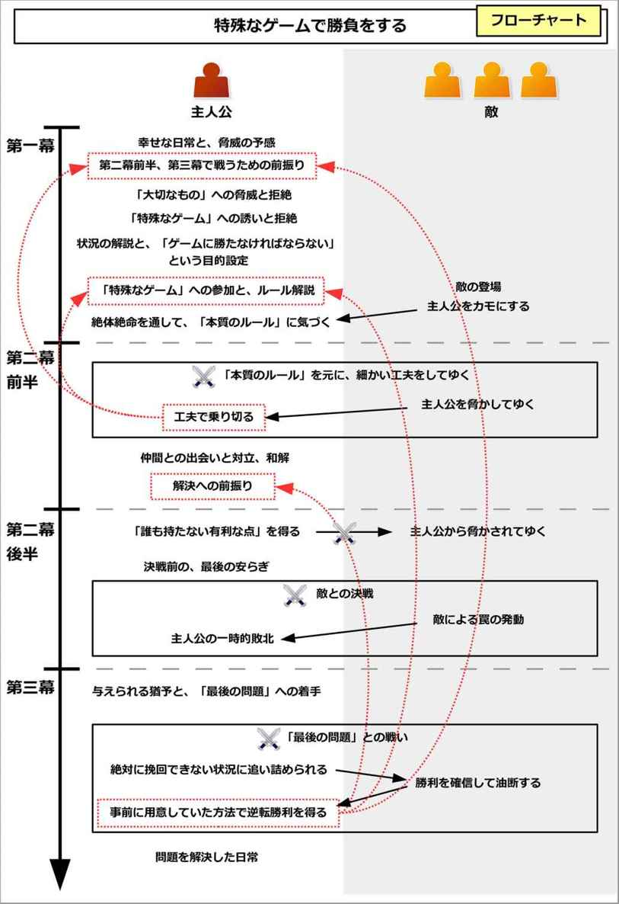

| ストーリー作家のネタ帳 イベント編４―緊迫・駆け引き・ミステリーの王道プロット15種 | |
| 中村あやえもん | |
| Ayaemo kenkyusyo (2016) | |
ストーリー作家のネタ帳 イベント編４
―緊迫・駆け引き・ミステリーの王道プロット15種
中村あやえもん
Copyright © 2015-2016 Ayaemo Research Institute. All rights reserved. Including the right to reproduce this book or portions thereof, in any form. No part of this text may be reproduced in any form without the express written permission of the author.
Version 2016.2.14
はじめに
この本は、ストーリーライティングに関わる方のために、「王道プロット」をまとめた参考資料集です。
- 物語を書いているが、ネタを使い切ってしまい、アイデアが思いつかない方
- 物語作成において、新たなインスピレーションが欲しい方
- 物語プロットを作っているが、うまくまとまらない方
本書はそのような、シナリオライターや小説家、漫画家、脚本家などのストーリー作家を対象として、物語を作る上でのインスピレーションを得られる、イベント（出来事）のネタと、そのプロットの作り方を記しています。
なお、本書の対象者は、ストーリーライティングの中～上級者です。既に物語を何作も完成されている方で、ネタやインスピレーションを必要とする方向けの内容になっていますので、ご注意ください。
この巻では主に、緊張や駆け引き、ミステリーを元に作るイベントについて触れています。
目次
本書の使い方
本書では、「イベント」に絞って説明しています。
世界観とキャラクター、ロケーションについては、事前に別途ご用意ください。
本書のイベント項目は、全て独立した構成になっています。そのため、どの項目から読み始めてもらっても構いません。
最初から順番に読んでいっても構いませんし、「目次や巻末の解説付き目次を元に、よさそうな項目を選び、辞書のように使う」もしくは「パラパラとめくって、適当に開いたページからアイデアを得る」といった用途も可能です。
必要に応じて、目次や巻末の解説付き目次、ページフリップ機能などを利用して、適当な場所にジャンプしながら見るとよいでしょう。
もしくは、作りたいビジョンが既にある場合、項目名から合致しそうなイベントを見つけ出し、構造作りの参考にするとよいでしょう。
キャラクター名表記について
本書では、説明の便宜上、「そのイベントで中心になるキャラ」を「主人公」と表記しています。
たとえ他に主人公と呼ぶにふさわしい人物がいたとしても、その場面で中心となる人物を「主人公」としています。
そのため、便宜的に「主人公」と表記しているだけで、別のキャラがそれを担うこともできます。
柔軟に、そのイベントを行うキャラクターを変えるとよいでしょう。
また、本書では、「主人公」と恋愛する相手を「恋人役」と表記します。
「恋人」と「恋人役」は異なるものであることに注意しましょう。「恋人役」は、たとえ物語中ではまだ主人公と結ばれていなくても、まだ友人関係の段階で恋人同士になっていなくても、「恋人役」と表記します。
「恋人役」は、「ヒロイン」（「主人公の恋人」の意）と同じものを指す、ということです。
第一幕で、主人公に力や知恵を与える役割のキャラクターを「メンター（師）」と呼びます。
主人公と対立する役割のキャラクターを、「シャドウ（影）」と呼びます。
主人公に対して、変化のきっかけを与えるキャラクターのことを、「トリックスター」と呼びます。
なお、主人公は複数人にすることも可能です。「主人公と恋人役」や「主人公が属する組織やチーム」という形にすることも可能です。
「主人公」と表記していても、複数人グループとして置き換えても扱える、ということです。
それによって、グループ単位や勢力同士での関係性やイベントを作ることも可能になります。
その他注意事項
本書では、「恋愛物語に使われやすい」とか、「サスペンスに用いられやすい」などと解説をしていますが、これはただの傾向であって、ジャンルに縛られることはありません。
基本的に、本書で説明しているイベントは、どんなジャンルにも適用することができます。
同様に、「メインプロットに向いている」というイベントでも、場つなぎとして用いることは十分にできます。そして「場つなぎに向いている」というイベントでも、長編のメインプロットに使うこともできます。
そのように、本書で示しているイベントは、物語のテーマとなるような大きなものから、場つなぎのワンシーンで簡単に使うような小さなものまで、規模は柔軟に対応可能です。
なので、ジャンルや傾向などの注記は、参考程度にするとよいでしょう。
また、本書で示している展開の流れは、あくまで「基本形」です。
必要に応じて、適宜流れを調整するなり、修正するなりしてご利用ください。
第一章 悪意を持つ駆け引きのイベント
敵の巣窟に入る
「敵の巣窟に入る」は、主人公が敵勢力の巣窟に単身入ってしまうことで起こるイベントである。
主人公は敵を持つが、あるとき主人公は単身で、その敵地のまっただ中に置かれてしまう。
孤立無援の主人公は、敵の脅威から逃れつつ、安全な場所へと戻ろうとする。
結果として、主人公は元凶となる敵を倒すか、もしくは敵側の問題を解決することで、脅威から逃れることになる。
これはサスペンスやスリラー、ミステリーでは多く用いられる基本的なイベントになる。
概要図と流れ図
このイベントの概要図と流れ図を、それぞれ以下に示す。
このイベントの作り方
このイベントを構成するために、主人公にとっての敵と、その勢力を作ろう。
主人公に敵がいるとすれば、どのような敵がいるだろうか。
これは、主人公が属する組織や勢力、社会などから発想するとよい。主人公が属する組織を敵視していたり、嫌っている人物や組織を考えよう。
主人公が警察に属している場合、敵はヤクザたちや犯罪者組織かもしれない。主人公が陰陽師や祓い師、修道士などの場合、敵は妖怪やモンスターなどになるかもしれない。主人公が正義のヒーローの場合、悪の秘密組織になるだろう。主人公が悪の一員の場合、敵は警察になるだろう。
主人公が一般市民の場合、敵は「普通の人」を憎む犯罪者や無差別殺人鬼になるかもしれない。
敵は、人間や生物以外にもなりうる。ゾンビや魔物などにしてもよいし、火山の噴火や大洪水、自然災害など、無差別に主人公を襲う存在にしてもよい。他にも、人間が生きていくには厳しすぎる無人島や、誰もいない砂漠のど真ん中などのように、厳しい生存環境にしてもよい。
単純に、主人公がＡ国に属していて、敵はＢ国の人々、という程度でもよい。規模を小さくして、主人公がＡ学校で、敵はＢ学校、という程度でもよい。
このように、主人公に脅威を与える勢力を作ることで、このイベントは構成可能になる。
第一幕： 自分の勢力に属することで得られる幸せ
それでは実際に、このイベントの流れを見てゆこう。
イベント冒頭では、主人公がその組織や勢力に属するようになった経緯と、その組織や勢力にいることで得られる、幸せな状態が描かれる。
主人公はそこで、平和で穏やかな毎日を送ることができているだろう。また、家族や恋人役、信頼できる仲間や友人たちと、いろいろありつつも幸福な日々を送っているかもしれない。
しかしその一方で、主人公側勢力を心から憎む、敵勢力がいることが示される。それはニュースや人々のうわさ、友人や知人などからの注意喚起として主人公の元にもたらされるだろう。
それは実際に、主人公のすぐ近所でも起こっていたり、身近な人物も被害に遭っているだろう。
ただし、ここでの主人公は危機意識など全く持たずに、「自分とは縁のない、遠い世界の話だ」と受け流している状態になる。
なお、第二幕後半から何らかの知識や特殊能力が必要になる場合、ここで前振りがされる。
主人公は日常的に、何らかの特殊な仕事や趣味をしているだろう。ここで、そんな仕事や趣味をしている姿が描かれる。もしサブプロットで用いる場合、「最近、これに熱中した」、「最近、これを始めた」などと説明するとよい。
これが、主人公の持つ特殊能力になる。主人公は第二幕後半から、この特殊能力を用いて困難を乗り越えたり、敵を追い詰めてゆくことになる。
これは、第二幕後半でどのような力が必要なのかを決めて、その上でここで前振りをしておくとよい。
ただし、ここでは「使い道のない、無駄な趣味だ」という程度で紹介しておくようにしよう。
ここでは具体例として、「主人公が殺人レジャーランドに入り、無差別殺人鬼から命を狙われるサスペンス」と、「主人公が吸血鬼に狙われるバトルもの」で見てみよう。
主人公が殺人レジャーランドに入る例で言うと、主人公は「一般市民」という勢力に属することになる。一方で敵は、無差別殺人をするカルト集団だとしよう。世界観は近未来で、フィクションの入ったサスペンスだとする。
イベント冒頭では、主人公が一般市民に属するようになった経緯が、簡単に示される。ここでは普通の家庭に生まれて、普通に育ったとしよう。
そして、その一般市民でいることで、「平凡な日々だけど、満足だ」、「一般市民でよかった」と、幸せでいられる状態が描かれる。
一方で、そんな「平和ぼけした一般市民」を心から憎むカルト集団がいると、テレビのニュースや恋人役からの話で示される。
彼らは様々な手法で一般市民を誘い出し、殺戮をしてゆくことで、人々に危機意識を植え付けようとしていると説明される。しかも、そんなカルト集団が人気になり、政権と膨大な資金を握ることで、国民に様々な「危機意識を植え付ける施策」をしているとする。
実際に、恋人役から「すぐ近所でもそのような誘いに乗ってしまい、命を落とした人がいる」と語られるだろう。
だがここでの主人公は、「自分とは遠い世界の話だ」と受け流しているのだ。
ここで主人公の特殊能力として、「コンピュータオタク」という能力が示される。主人公は無線を傍受したり、犯罪にならない程度にジャックしたりして、趣味を楽しんでいる姿が描かれる。
そのため恋人役からは、「変な趣味ね」とあきれられているだろう。これが、第二幕後半から逆転してゆくための前振りとなる。
主人公が吸血鬼に狙われる例で言うと、ここでは、中世的でファンタジックな世界観だとしよう。
主人公は「教会」に属して、敵は「吸血鬼」だとする。
イベント冒頭では、主人公が教会という組織に属することになった経緯が示される。ここでは幼い頃に孤児となった主人公が、神父に助けられることで、生きることができたとしよう。
主人公は「あの神父のような、人を助けられる人になりたい」と思うようになり、次第に教会の手伝いをし始めた、という流れになる。
それによって主人公は人々を助け、希望を持って毎日を生きることができているとする。そして、「教会に属していてよかった」と、自分が生きていることに喜びを感じているだろう。
一方で、そんな教会を心から憎んでいる吸血鬼がいると、人々からのうわさで知る。実際に主人公の身近な人も被害に遭っていて、人々は「あの人は吸血鬼に殺された」と語っているかもしれない。
しかし主人公は、「吸血鬼なんて馬鹿らしい」と、聞く耳を持たないのだ。
ここで主人公は、「極度のナルシスト」だという特徴を持つとする。だから、いつも鏡を持ち歩いて、自分の髪型やスタイルをチェックしているとしよう。
そのため周囲からは、「変な野郎だ」とあきれられているだろう。だが、この「鏡を持つ」という設定が、第二幕後半から主人公が逆転していくための前振りとなる。
敵の巣窟に取り残されてしまう主人公
そんなあるとき、主人公は敵の巣窟に単身取り残されてしまうことになる。
主人公は何らかのきっかけで、どこかに出向く用事を得るかもしれない。誰かに誘われるかもしれないし、招待状が届くかもしれない。
それによって、主人公は敵の巣窟に入り込むことになる。そこは殺人鬼が潜む屋敷や、古い洋館、吹雪の山荘、ゾンビの住む村などになるかもしれない。
ほとんどの場合、主人公はそこが敵の巣窟であるとは知らないものだ。主人公はいつもの気軽な調子で、その場に向かうだろう。
しかし、すぐにそこがいつもとは違う場であると判明する。そこは既に、敵勢力が支配する領域なのだ。
主人公にとって頼りになる味方がいる場合、ここでその味方が病や怪我などで倒れたり、主人公と散り散りになってしまうだろう。こうして主人公は、頼りにできる味方を失うのだ。
ここで実際に、敵が主人公側勢力に襲いかかることも多い。主人公の周囲にいる人たちは、次々と深く傷ついたり、破滅したり、時には死に追いやられるだろう。
結果として、主人公は単身か、もしくは力のない少数の味方と共に、孤立無援の状態で敵の巣窟に取り残されてしまうことになる。
すなわち、主人公はその場における「排斥されるべき民」になってしまうのだ。
なお、場合によっては、主人公が敵の巣窟に出向くのではなく、主人公のいる場所が敵の巣窟に取り込まれたり、もしくは主人公の周囲にいる人が突然敵になる場合もある。
例えば敵勢力が襲ってきて、主人公の住んでいる場所が敵の支配下になってしまうかもしれない。
もしくは、主人公は「自分は人間だ」、「自分はこの国の人間だ」などと思っていたかもしれない。だが実際はそうではなくて、あるとき「人間と敵対する妖怪だった」、「敵国の出身だった」と判明するのだ。それによって主人公は、周囲から「妖怪である主人公を殺せ」、「敵国スパイである主人公を、見つけ次第捕らえて、拷問にかけろ」などと脅威を背負うことになる。
他にも、住んでいる場所に魔物が突然出てきたり、自然災害が起こるかもしれない。
そのように、自分のいる環境が一転して、敵の巣窟になる場合もある。
この場合、主人公は冒頭で、周囲の人々や場所になじめない状態であることが多い。
主人公が殺人レジャーランドに入る例で言うと、主人公はある日、最新施設がそろったレジャーランドの、開店前体験入場に当選することになる。
主人公は大喜びして、恋人役と共にそのレジャーランドに向かうだろう。
だがそこは、「最高の恐怖体験」をするための、参加者の生き残りを賭けた殺人レジャーランドになるのだ。
主人公は、最初こそ普通のレジャーとして楽しむかもしれない。リアルに参加者を殺そうとするレジャーランドのマスコットや、悲鳴を上げる参加者たちに対して、「リアルな演出だなー」と思うかもしれない。
しかしレジャーランドのマスコットたちは、主人公のすぐそばにいる参加者を襲い、殺すだろう。そこでようやく、これは演技ではなく、本当にマスコットたちが参加者を襲っているのだと知る。
主人公の周囲にいる参加者は、血にまみれて、「死にたくない」と言い、泣きながら死んでゆくだろう。
こうして主人公は、「殺人レジャーランド」という敵の巣窟に取り残されてしまうことになる。
主人公が吸血鬼に狙われる例で言うと、主人公はある日、教会の仕事で、山里離れた小さな村に出向くことになる。
その村の教会は、「神父は着任するとすぐに死んでしまう」という、いわく付きの教会になる。しかし主人公はそんな迷信など信じずに、仕事仲間たちと共に気楽にその村に向かうだろう。
だがそこは、実際に吸血鬼たちが多く潜む村になる。
主人公は新たな神父や仲間と共に、その教会を立て直すために活動し始めるだろう。そして一日目の仕事を終えて、それぞれがあてがわれた宿に戻り、眠りにつく。
しかし翌朝、仲間の一人が殺されていることが判明する。その死因が、「吸血鬼によって血を吸われた」というものなのだ。
こうして主人公は、「吸血鬼が支配する村」という敵の巣窟に取り残されてしまうことになる。
目の前の現実に対する拒絶
あまりの非日常な出来事に、主人公は目の前の現実を否定するだろう。
他に主人公側勢力の人々がいる場合、彼らは悲鳴を上げて逃げ惑うだろう。しかし、敵は次々と登場して、主人公側に属する人々を襲い、破滅させてゆく。
主人公は「こんなことはありえない」と現実を否定するだろう。だが、それは確かに現実に起きていることなのだ。
ここで主人公は、先にうわさ話で聞いた脅威が、自分に向けられていると気づくことも多い。
仲間が倒れた後、実際にその脅威は主人公へと向けられるだろう。時に、ここで主人公が狙われて襲われることで、「これが現実で、その脅威が自分へと向けられている」と気づくこともある。
主人公は、敵に対抗する術など持たない。また、頼りになる味方もいない。そのため、主人公は危機的状況に陥るだろう。
しかしここでは、何らかの幸運が重なることで、一時的に敵の脅威から逃れることができる。
主人公が殺人レジャーランドに入る例で言うと、レジャーランドのマスコットは、次々と参加者を襲い、殺してゆくだろう。
その姿を見て、恋人役は悲鳴を上げるかもしれない。主人公自身も「ありえない」と、この状況が信じられずに、混乱するだろう。
返り血を浴びたマスコットは、不気味な笑顔で、次は主人公たちを狙おうとするだろう。一般市民である主人公は、刃物を持つマスコットに抵抗できない。
そしてマスコットが刃物を振りかぶるが、主人公は偶然石につまずいて、こけるとしよう。それによって、服を切り裂かれる程度で逃れることができる。
「もし石につまずかなかったら、完全に殺されていた」という体験を通して、ようやく主人公は「現実に、マスコットたちは自分たちを殺そうとしている」と気づくことになる。
主人公は絶体絶命の状態に追い込まれるかもしれないが、ここでは幸運にも参加者の一人から助けられ、その場から離れられるとしよう。
それによって、主人公たちは一時的にマスコットたちの魔の手から逃れることができる。
主人公が吸血鬼に狙われる例で言うと、吸血鬼によって殺された人を前にして、主人公は「吸血鬼に血を吸われて殺されるなんて、ありえない」と現実を拒絶するだろう。
しかし、仲間たちから「血を吸う以外に殺す方法がない」と言われてしまう。
主人公は仲間を殺されたことへの対処をしつつ、一日を過ごした後で、眠りにつこうとする。
深夜、主人公はたまたま起きて、トイレに向かったとしよう。そのときに、主人公は他の部屋で、仲間が吸血鬼によって血を吸われている姿を見てしまう。
吸血鬼はすぐに主人公に気づいて、主人公に襲いかかるだろう。主人公は吸血鬼の豪腕からすると完全に無力で、死を覚悟するだろう。
そんなとき、幸運にも起きていた仲間が騒ぎを聞きつけて、主人公を助けることになる。
状況の解説と、「ここから出る」という目的説明
ここで、メンターによって「敵の巣窟に取り残された」という状況の説明と、「ここから出て、元の世界に戻る」という目的が示される。
一時的に敵から逃れることができた主人公は、メンターからこの世界と今の状況について聞かされるだろう。主人公が一人きりの場合、主人公自身が気づくことで、読み手に示される。
主人公たちが属する組織や勢力には、敵となる勢力がいること。そしてこの場は既に、敵勢力の支配下になっていること。
すなわち、イベント冒頭で懸念されていた脅威が、ついに主人公に牙をむいたのだと示される。
こうして主人公は、孤立無援の状態で敵の支配下に取り残されたと説明される。
ここで主人公や身近な仲間は、「敵の力を前にすると完全に無力である」と示されることが多い。
それを証明するためにも、主人公側の人物で、「最も力が強い者」や「最も智恵のある者」、「最も勇敢な者」などが、この状況を打破しようと立ち上がることが多い。
しかしその抵抗も、敵の力を前にすると、いともたやすく粉砕されてしまう。
それによって、この場では常識や正義、常識的な力など全く通用せずに、主人公は敵の前では完全に無力であることが示される。
主人公たちは、すぐにでもここから脱出して元の世界に戻ろうとするだろう。
だがその前には、敵が立ちふさがっているものだ。もしくは逃げ道が寸断されていて、応援や助けが来るまで生き抜かなければならないかもしれない。
こうして主人公たちは、「敵の脅威をかいくぐりつつ、元の世界に戻る」という物語の目的を持つことになる。
ただしここでの主人公は、「自分がこんなことに巻き込まれるなんて、ありえない」と、未だに状況を受け入れることができない状態になる。
主人公が殺人レジャーランドに入る例で言うと、殺人レジャーランドに入ってしまった主人公は、ひとまずマスコットたちから逃げ切り、身を隠すことができる。
そんなとき、メンターとして館内アナウンスが流れるだろう。また、レジャーランドの設計に関わった人がその場にいて、主人公に解説してもよい。
ここでは館内アナウンスが流れるとして、以下の内容を説明するとしよう。
「このレジャーランドは最高の恐怖体験を味わうための、政府の認可を受けた、合法的な施設です。そのために、実際に死ぬこともあります」
「このレジャーランドの出入り口は、全て封鎖されています。マンホールなどからも出られません。外部との通信も不可能です」
「これだけの期間を生き抜くか、マスコットを全て破壊するか、もしくは出る方法を見つけられれば、生きて出られます」
また、マスコットは最先端の自動人形で昼夜構わず動くことや、館内施設の案内などもされるかもしれない。そして、周囲にいる専門家などから、それが真実で可能であるという世界観が説明される。
主人公の周囲にいる参加者たちは、「ふざけるな」、「馬鹿げている」とわめき立てるだろう。
そして、その場で最も強い腕力を持つ人として、格闘家がいるかもしれない。また、最もサバイバルの智恵や経験を持つ人として、軍隊経験者がいるかもしれない。そんな彼らが、「俺たちが何とかしてやる」と、勇敢に立ち向かうだろう。
だが、彼らですら出入り口を開くことができずに、マスコットたちによって、いともたやすく殺されてしまうだろう。
結果として、主人公たちは逃げ場もなく、敵支配下の中で取り残されてしまい、完全に無力な状態になってしまうのだ。
なお、ここでの主人公は、「こんなこと、ありえない」と青ざめたまま、現実を受け入れることができないでいるだろう。
主人公が吸血鬼に狙われる例で言うと、「吸血鬼が多く潜む村」に入り込んでしまった主人公たちは、ひとまず吸血鬼の魔の手から逃げ出すことができる。
ここでは吸血鬼が、仲間の持つたいまつを恐れて、一時的に退散したとしよう。ただし、ここでの主人公たちは、その退散理由には気づかないとする。
そして神父や仲間がメンターとなり、「こういう伝承を聞いたことがある」と、吸血鬼について語るだろう。
吸血鬼は人の姿をして、普通の人間と見分けがつかないこと。しかし夜になると、その豪腕と俊敏な動きを発揮して、人々を襲うこと。
また、吸血鬼は教会の人間を極度に嫌っていることが説明される。だから村人は殺さないが、この教会に来た人間を静かに皆殺しにしてきたのだと。
仲間たちは「ありえない」とわめくだろう。そして最も強い剣の熟練者が「俺がその吸血鬼とやらを倒してやる」と出向くかもしれない。だが、彼は吸血鬼によって、いともたやすく殺されてしまうだろう。
こうして主人公側の力では、吸血鬼には到底あらがうことができないと示される。
また、村から出るための、唯一の吊り橋が落とされていることも知らされる。
結果として主人公たちは、自分たちが「吸血鬼」という強大な勢力の支配下に取り残されてしまい、完全に無力な状態になってしまったと知る。
主人公たちは外部からの応援を得ることができないため、「この村で吸血鬼からの脅威を無効化して、生き延びる」と目的を設定することになる。
ただし、ここでの主人公は、「こんなこと、ありえない」と青ざめたまま、吸血鬼の問題を受け入れようとはしないだろう。
窮地を切り抜け、問題に自発的に取り組み始める
自分の置かれた状況を知った主人公は、何とかこの状況を打破して、元の世界に戻ろうとするだろう。
しかし主人公は無力で、今やただ破滅の訪れを待つだけの状態になる。仲間たちが、一人、また一人と餌食になってゆくかもしれない。
そしてついに、主人公に敵の魔の手が伸びる。
主人公は追い詰められて、逃げ道は一つしかない状態になる。しかしその逃げ道は、日常に戻る方向ではなく、むしろより敵の巣窟内部に入る方向にあるのだ。
そのため、主人公にとってはリスクが高く、その逃げ道を選ぶことをためらうだろう。
だがそんな中、絶体絶命の状況に追い詰められてしまうことで、主人公は意を決してそのリスクの高い逃げ道へと飛び込む。
すると、そこは敵が侵入できない、安全地帯になるのだ。
一時的な安全地帯に入った主人公は、ひとまず安堵するだろう。そして強大な敵といえども、抜け道があることに気づく。
他の逃げ道を失った主人公は、吹っ切れることで状況を受け入れる。そして「生き延びて、元の世界に戻る」という目的のために、自発的に問題に取り組み始めることになる。
なお、主人公が「生き延びて、元の世界に戻る」と吹っ切れるために、ここで何らかの犠牲が起きることもある。
それは、「敵を許せない」もしくは「主人公を待っている人がいる」という出来事で引き起こされやすい。
「敵を許せない」と思う場合、主人公の価値観で「許せない」ということを、敵は平然としてのけるだろう。弱い女性や子どもを殺すかもしれないし、逃げ惑う人々を容赦なく始末するかもしれない。また、敵はそれを笑いながら実行するかもしれない。
それによって主人公は、「この敵を許せない」と感じて、「自分は自分の勢力のために動かなければならない」という使命感を得ることになる。
一方で「主人公を待っている人がいる」という場合、日常の世界では主人公を待っている人たちがいることを思い出すだろう。何らかの思い出のアイテムに気づくかもしれないし、そのアイテムに助けられるかもしれない。
それによって、主人公は「彼らのために生きて帰る」という使命感を得る。
どちらの流れにせよ、そのようなきっかけがあることで、「自分の命さえ守れればよい」という防衛的な態度から、「自分が属する勢力や社会のために動きたい」という、利他的な使命感を得るのだ。
こうして主人公は、「同種のみんなのために、この問題を解決する」という崇高な目的を持つことで、自発的に問題に取り組むようになる。
主人公が殺人レジャーランドに入る例で言うと、ついに主人公たちはマスコットたちに発見されて、追い詰められるだろう。
追い詰められた主人公の背後には、施設内を移動できるモノレールがある。それが唯一の逃げ道なのだ。
だが、殺人レジャーランドが用意した乗り物に乗るというのは、危険きわまりないものだ。しかし他に道がなく、ついに主人公たちは乗らざるを得なくなる。
意を決してモノレールに飛び込むと、マスコットたちは乗り物内部には入ってこないことに気づくだろう。そしてモノレールは動き出し、施設内を巡回し始める。
そこで初めて、主人公は「ここはレジャーランド。だからマスコットは、乗り物アトラクションには乗らない」という法則に気がつくのだ。
主人公はその事実に安堵して、敵であるマスコットといえどもやりたい放題ができるわけではないと気づく。
だが同時に、モノレールに乗るということは、より施設の中枢に向かうということでもある。
冷静になった主人公は、マスコットによって幼い子どもや女性が殺された光景を思い出すだろう。それによって、「こんな残虐なことをするなんて、許せない。生きてここを出て、この施設をつぶしてやる」と決意する。
こうして主人公は、自発的に「この殺人レジャーランドから生きて出て、日常に戻る」という目的に向けて動き始めることになる。
主人公が吸血鬼に狙われる例で言うと、主人公たちは「とにかくこの村から出よう」と、吊り橋以外で村から出る道を模索し始めるだろう。
しかし結局は逃げ道が見つからずに夜も更け、ついに吸血鬼に追い詰められてしまう。
主人公たちが死を覚悟した瞬間、朝を迎えて太陽が照り始める。すると、吸血鬼たちは悲鳴を上げて逃げてゆくのだ。
主人公たちは、「太陽の下だと、吸血鬼は豪腕を振るうこともできずに、俊敏な動きもできない」と気づく。
また、教会に潜んでいた仲間は無事だったと知る。それによって、「夜は教会にいれば、襲われないようだ。夜に外出しなければ問題ない」と気づく。
こうして主人公たちは、吸血鬼といえども、やりたい放題に殺せるわけではないと気づく。
冷静になった主人公は、一人の大切な仲間が、吸血鬼によって殺されたことを知るだろう。その仲間は妻子を持ち、誰からも愛されるような、愛情深い性格だったとしよう。
また、吸血鬼は過去に、彼らに反発した村人を、残忍な方法で見せしめのために殺していたと知るだろう。すなわち、「村人たち全員が、吸血鬼におびえながら生きている」のだと判明する。
主人公は「こんな善良な人たちを無残に殺すなんて、絶対に許せない」と感じることで、「自分のため」よりも「人々のため」に、吸血鬼へと立ち向かうことを決意する。
こうして主人公は、「この村に居続けて、吸血鬼の問題を解決する」という目的に、自らの意志で動き始めることになる。
第二幕前半： 敵のルールを知ってゆく
逃げ道を失ってしまった主人公は、ここから小さな試練を通して、敵が動くルールを知ってゆく。
主人公は一時的に、安全地帯に落ち着いたことだろう。
しかし、ずっとその安全地帯にいるわけにもいかない。このままではジリ貧になってしまうかもしれないし、食料が尽きてくるかもしれない。怪我人が出るかもしれないし、安全地帯の外から助けを求める人が現れるかもしれない。
そのような外的な要因によって、主人公は安全地帯から出なければならなくなる。
主人公は自分たちが生きながらえるために、敵の魔の手が及ばない条件を探してゆく。
そして敵に襲われながらも、主人公は危機的状況をすり抜けてゆく。
最初こそ、偶然助かることが多いかもしれない。だが次第に主人公は、相手が何らかのルールによって動いていることに気づいてゆくだろう。
そこで主人公は、仮説と検証を繰り返しながら、敵が持つ制約を探ってゆく。時に仮説が外れて危機を迎えつつも、主人公は事前に準備していた対策で乗り越えてゆく。
それによって、主人公は危機的状況を経つつも、同時に敵の魔の手が及ばない安全領域を広げてゆく。
ここでは、主人公の仮説や意図を読み手に示さない方が、より緊張感を増して効果的になる。
読み手は主人公が突飛な行動をするたびに、驚くだろう。そして案の定、その行動が原因で危機的状況を迎えるが、ギリギリのところで主人公たちは新たな安全領域へと入ることができる。
そして主人公は、読み手や周囲の人に種明かしをする、という流れになることが多い。
主人公が殺人レジャーランドに入る例で言うと、モノレールという安全地帯を知った主人公たちは、ここから敵の動きを探ってゆくことになる。
モノレールは安全地帯で、ずっと館内を巡回しているかもしれない。だが延々と乗り続けるわけにはいかないものだ。腹が減るかもしれないし、車両のメンテナンスで降車せざるを得ないかもしれない。
そこで主人公は、仮説を立てて、検証してゆくことになる。
主人公は、恋人や仲間に「食べ物を探してくる」と言って、出て行くかもしれない。そして案の定マスコットに襲われるが、主人公はトイレに入ることで、新たな安全地帯を知るだろう。こうして、「マスコットは客が使うトイレには入らない」という新たなルールを見つけるのだ。
だが、「清掃員」という名札をつけたマスコットは、トイレにも入れるかもしれない。それに気づかずに、「なら楽勝だ」と主人公の制止を聞かずに出た仲間が犠牲になるかもしれない。
また、マスコットは有名な作品のキャラクターなので、マスコットごとに苦手なアイテムや場所があるとしよう。それを利用して、主人公はさらに安全領域を広げてゆく。
こうして主人公は、一つ失敗したら即死の綱渡りをしながらも、レジャーランドでのルールを知ってゆき、「敵の魔の手が及ばない」という場所や時間帯、条件などを検証してゆくことになる。
主人公が吸血鬼に狙われる例で言うと、ここから主人公たちは、吸血鬼の持つルールに迫ってゆく。
主人公たちは、教会に立てこもれば安全かもしれない。しかし水や食料も調達しなければならないし、何より情報を得るには、吸血鬼が混じっている村人と接触しなければならない。
吸血鬼は、昼間は人間と同じ姿をしていて、普通の村人と見分けがつかないこと。しかし夜になると、驚異的な能力を発揮するようになること。夜間の吸血鬼はマスクやマントを身につけているため、姿からは判別できないこと。また、村人たちは、吸血鬼を恐れる余りに、吸血鬼のことを話したがらないことなどが示される。
そこで主人公は、仮説を立てて検証してゆく。
夜、吸血鬼によって教会に油と火矢が放たれて、主人公たちは煙によって教会から出ざるを得ないかもしれない。そこで主人公は、たいまつを使って「吸血鬼は火におびえる」ということを検証し、それが正しいことを発見するだろう。
一方で吸血鬼は、村人を利用して、教会の火種を全て消してしまうかもしれない。そして雨の日を狙って、攻撃を仕掛けるかもしれない。
主人公は、「吸血鬼は教会に近づけないのではなくて、正確には教会に備わる銀でできた十字架に近づけない」ということを検証するだろう。主人公はその十字架を持ち出すことで、脅威を防ぐことになる。
こうして主人公は、一つ失敗すれば死が待ち受ける中で、夜でも安全な領域を増やしてゆくのだ。
仲間との出会い、対立
また、ここで新たな仲間との出会いや、対立が起こるだろう。
主人公を危機に陥れるのは、敵だけではない。仲間の存在も、主人公を窮地に追い込んでゆく。
今まで一緒にいた仲間と意見が対立してしまうかもしれない。もしくは、新たに入った仲間が、主人公たちに枷を与えて、危機をもたらすかもしれない。
主人公はそんな仲間たちとのやりとりをしながらも、仲間たちと和解してゆくか、もしくは仲間が自滅することで問題を解決してゆく。
同時に、敵の正体、もしくは敵の黒幕も少しずつ明かされてゆくだろう。
この部分は、適宜サブプロットを用いて構成するとよい。
主人公が殺人レジャーランドに入る例で言うと、ここで主人公を気にくわないと思っている仲間が一人、いるとしよう。その男は主人公の独断を快く思っていないとする。
そんなとき、設備が整った安全地帯を発見する。だが、そこは一人しか快適に過ごせないという制約がある。
すると男は、「この安全地帯は俺だけのものだ」と、自分だけが安全な場所を確保しようとするのだ。
主人公は反対するだろうが、結果として主人公たちはその男によって、安全地帯から追い出されることになる。
主人公たちは、窮地に追い込まれるだろう。だがそんなとき、男のいる安全地帯が、安全なのはある一定時間帯でしかないと判明する。
結果、マスコットたちは反転して男を襲うことで、主人公たちは助かることになる。
主人公が吸血鬼に狙われる例で言うと、ここで主人公は、吸血鬼に襲われていた一人の男の子を助ける。
その男の子は吸血鬼を快く思っていなかったために、吸血鬼から狙われるようになったとしよう。
そして主人公たちは、その男の子を教会にかくまうことになる。
そんなとき、男の子が夜中に、「大切な友人の子ウサギがいるんだ。彼を助け出さなきゃ、死んでしまう」などと言って、こっそりと教会から抜け出る。
主人公はそんな男の子を助けるために、たいまつ一つで吸血鬼がさまよう夜の村に飛び込むことになるのだ。
男の子と子ウサギを助け出した主人公は、窮地に追い込まれるだろう。だがそんなとき、子ウサギが穴に逃げ込むことで、主人公は地下通路があることを知る。
それは教会の地下通路で、安全な場所だと気づく。
結果、主人公はより安全領域を広げることができるのだ。
解決への前振り
第二幕前半のどこかで、クライマックスで用いる解決への前振りをしておこう。
これは、クライマックスでどのように解決するのか、その方法を決めてからここで配置しておくとよい。
それによって、スムーズに解決することができる。
主人公が殺人レジャーランドに入る例で言うと、ここで主人公たちは、ふと施設中央にある建物から、ロープのような太い線が外につながっていると気づく。
主人公は「あのロープを使えば外に出られるんじゃないか」と提案するが、詳しい仲間から「あれは高圧電線だから、触れただけで死ぬ」と言われて、あきらめるとしよう。
これをさりげなく配置しておくことで、クライマックスの前振りとできる。
主人公が吸血鬼に狙われる例で言うと、ここで主人公は、先に助けた男の子に片思いの女の子がいると知る。
そこで主人公は男の子に、「そんなぼさぼさの髪型じゃ、モテないぞ。じゃあ、お前にいいものをやろう」と、ちょっとしたアイテムを渡す場面を加えておく。
これが、クライマックスの前振りとなる。
第二幕後半： 敵の「弱み」を発見する
ここまでは、主人公は敵から身を守ることに精一杯だった。
しかしここから主人公は、敵の弱みを見つけることで、優位に立ち始める。そして、敵の正体や黒幕、事件の核心へと迫ってゆくことになる。
中盤のターニングポイントとして、主人公はひょんなことから、敵の「弱み」を発見するだろう。
それは「敵を倒せる武器」、もしくは「敵からの脅威を無効化できる防具」に象徴されて、主人公の元に訪れるだろう。それは敵の支配下においても有効になる、権威や権力、金や情報、人脈やアイテム、必殺技などになりやすい。
最初こそ、それは信頼に足るものかどうか分からないだろう。もし試して失敗すれば、死が訪れるのだ。
しかし窮地に追い込まれることで、主人公はその「強み」を使わざるを得なくなる。すると、実際に効果を発揮するだろう。
それによって主人公は「この武器は使える」と理解して、積極的に動き始めてゆく。
なお、その武器は、その環境では手に入れにくいものになりやすい。というのも、敵の支配下において、敵が主人公側勢力の有利になるようなものを配置しておくことはあり得ないからだ。
そのためこの武器は、主人公が意図せずにその場に持ち込んだものになりやすい。それが、第一幕の冒頭で前振りした、主人公が「役に立たない」と思っていた特殊能力や、特殊アイテムになる。
なので、ここで使う武器を元に、第一幕冒頭での設定を決めるとよい。
主人公はその貴重な武器を元に、反転攻勢を仕掛けてゆく。
主人公が殺人レジャーランドに入る例で言うと、中盤のターニングポイントとして、主人公は「マスコットの動きを制御できる力」を得るとしよう。
第一幕冒頭で、「主人公はコンピュータオタクで、無線をジャックするのが趣味」だとしていたが、この能力がここで武器となる。
あるとき館内放送で、「これからマスコットのパレードが始まります」と案内されるとしよう。すると、マスコットが一斉に、統率の取れた状態で動き出すのだ。
そこから主人公は、「自動人形であるマスコットは完全な自律制御ではなく、無線で操作することもできる」、「その指令を与える中央管理室がある」と推測する。
そして偶然持ち込んだノートパソコンと、主人公の特殊能力を用いて、その無線をジャックするのだ。
最初こそ、それをするにはリスクがあるだろう。もしハッキングを探知する情報セキュリティシステムがあった場合、逆に主人公に新たな脅威がもたらされるかもしれないのだ。
しかし窮地に追い込まれることでそれを実行すると、驚くほど効果があり、マスコットの場所を自在に指定できると知る。
こうして主人公は、「マスコットの場所を操る」という武器を手に入れて、反転攻勢に出ることになる。
主人公が吸血鬼に狙われる例で言うと、中盤のターニングポイントとして、主人公は「村人の中から、吸血鬼だけを見分ける術」を手に入れるとしよう。
第一幕冒頭で「主人公はナルシストで、鏡でよく自分の姿をチェックする」としていたが、この鏡がここでの武器となる。
ある昼間に主人公が鏡で自分の姿をチェックすると、鏡に映った村人たちに気づく。だが実際に目で見ると、鏡で移っている人数よりも多いのだ。
ここから主人公は、「吸血鬼は鏡に映らない」という事実に気づく。
最初こそ、それは信頼できないかもしれない。だがその日見た村人（吸血鬼）の特徴が、その夜に襲った吸血鬼と重なることで、その現象が信頼しうるものだと分かる。
また、「主人公がこの村に訪れたとき、どの家にも鏡がなかった」という理由も、ここで判明させるとよい。
こうして主人公は、「村人と吸血鬼を見分ける」という武器を得て、反転攻勢を仕掛けることになる。
敵の中枢へと向かう主人公
新たな武器を手に入れた主人公は、「日常の世界」へと戻ろうとする。
だが、その武器だけでは力が弱く、元の世界に戻れないことが判明する。日常の世界へと戻るための門は固く閉ざされ、その上門番も多く配置されているのだ。
そこで主人公は、逆に敵の中枢に目を向けることになる。敵の親玉や黒幕を倒すか、もしくは中枢からコントロールすることで、敵の脅威を完全に排除できると気づくのだ。
こうして主人公は、「日常の世界」に戻るために、敵の中枢へと向かってゆく。
敵の中枢に近づくにつれて、その場が抱える謎や不明点が解明され、事件の全体像が明らかになってくるだろう。また、主人公が倒すべき相手も明快になってゆく。
主人公が殺人レジャーランドに入る例で言うと、無線ジャックによってマスコットの場所を指定できるようになった主人公は、レジャーランドから出ようとするだろう。
だが無線ジャックでは門を開けることができず、中央管理室からでしか開けないと判明する。
また、他の人々を見捨てて自分たちだけが助かることにも、引け目を感じるだろう。
結果として、主人公たちは「中央管理室を占拠して、全てのマスコットを停止させ、出入り口のゲートを開く」という目標に向かうことになる。
その過程で、なぜこのようなレジャーランドが作られたのか、カルト集団の考えや、作った目的などの謎が判明してゆくだろう。
主人公はその内容に憤りを覚えながらも、「こんな施設、ない方がいい」と、一般市民の代表として動いてゆく。
主人公が吸血鬼に狙われる例で言うと、吸血鬼を見分けられるようになった主人公たちは、昼間に吸血鬼を見つけては誘い出し、一体一体始末していくことになる。
ここでは、教会にある銀の十字架が武器になり、それを吸血鬼に触れさせることで滅ぼせるとしよう。
その過程で、なぜ吸血鬼が人間の村を必要としたのかなどの、その村が持つ謎が明かされてゆく。
ここでは、吸血鬼が生きるには、人間の血が必要だとしよう。だから吸血鬼は村人を生かさず殺さず、いわば「血を作る家畜」として支配していたのだと分かる。
そして、次第に「この村は、一体の真祖（吸血鬼を作り出す親玉である吸血鬼）のためにある」と判明して、真祖こそ倒すべき親玉であると分かってゆく。
こうして主人公は、「吸血鬼の真祖を倒すことで、吸血鬼問題の根源を滅ぼす」という方向に動いてゆく。
中枢への到達と、決戦前の「最後の晩餐」
ついに主人公たちは、敵中枢を目前とする。
最終決戦を前にして、主人公は仲間と共に、象徴としての「最後の晩餐」を楽しむだろう。
もし戦いに失敗すれば、主人公たちは滅ぼされてしまうのだ。
主人公たちは思い残すことがないように、最後の安らぎを味わうだろう。そして決戦に向けて英気を養い、万全の体制を整えてゆく。
なお、ここで主人公たちは、この環境で学んだことを語ることが多い。すなわち、この物語でのテーマに触れることになる。
主人公はこの戦いを通して、学んだことや気づいたことがあるだろう。それは、「日常の大切さ」や「悔いを残さないこと」としてもたらされやすい。
主人公はそれまで、「日常の平穏は、あって当然なもの」として扱っていたかもしれない。もしくは、自分の本心から目を背けていたかもしれないし、真剣に生きていなかったかもしれない。やりたいことをしていなかったかもしれない。
しかし主人公は、ここで非日常の経験を味わうことで、日常の自分を反省する。
そして「必ず生きて帰って、こうやって生きよう」と決意するだろう。
十分に休息を取った後、決戦の時が訪れる。
主人公は仲間と連携を確認して、一つ一つ決戦に向けた装備を身につけてゆく。それによって、休息から戦いへと緊張感を高めてゆく。
準備を全て整えると、主人公たちは決戦の場へと旅立つのだ。
主人公が殺人レジャーランドに入る例で言うと、ついに主人公たちは、中央管理室を目前とするだろう。中央管理室を占拠してハッキングすれば、全てが解決するのだ。
しかし、中央管理室にはどんなセキュリティシステムがあるのか分からない。
そこで主人公は、最後の決戦を前に、安全地帯で休息を取り、英気を養うだろう。
主人公は恋人役に、ここで学んだことを語るだろう。「今までずっと、楽しいことをせずに、自分を殺して生きていた。生きて帰ったら、もっと楽しいことをして生きよう」と約束するかもしれない。
仲間も同じように、「今までは自分を偽って生きていた。生きて帰ったら、自分に正直に生きよう」と決意するかもしれない。
これによって、この殺人レジャーランドから、「楽しんで生きることの大切さ」を学ぶのだ。
そしてついに、決戦の時が訪れる。
主人公たちは連携を確認して、中央管理室へと向かうだろう。
主人公が吸血鬼に狙われる例で言うと、ついに主人公たちは、真祖となる吸血鬼を突き止める。同時に、真祖以外の吸血鬼を全て始末し終えるだろう。
残すは真祖のみとなるが、真祖はどのような力を持っているのか分からない。そのため、戦いには今まで以上のリスクがつきまとう。
最後の決戦を前にして、主人公たちは休息を取るだろう。
ここで主人公は、「吸血鬼の真祖は人間を家畜同然にしていたけども、自分たちも動物に対して、似たようなことをしてるよな」と、気づくかもしれない。
それによって、教会側の人間だけでなく、人間全体にもエゴがあることを知るのだ。
こうして主人公たちは、吸血鬼との戦いを通して、他の生き物に対して愛情を持って接する大切さを学ぶだろう。
ついに決戦の時が訪れる。
主人公たちは真祖と戦うために、仲間たちと共に旅立つだろう。
親玉との戦い
中盤の盛り上がりとして、主人公たちは敵の親玉か、もしくは根本的な問題と戦うことになる。
ここでは主人公たちが一時的に勝利する場合と、一時的に敗北する場合がある。
一時的に勝利する場合、主人公たちはいくつかの逆転劇を繰り返して、絶体絶命の危機に陥るだろう。
そんなとき、主人公は相手が隠している「最後のルール」を発見する。それは、相手が今まで隠し続けてきた弱みになるだろう。
その弱みを何らかのきっかけで気づくことで、主人公は勝利を得ることになる。
一方で一時的に敗北する場合、ここで主人公たちは相手に「奥の手」を取られてしまうことで、劣勢に追い込まれるだろう。
それによって、今まで使っていた主人公の武器が、無効になってしまう。
敵は高笑いをして、主人公たちを追い詰め、捕らえるだろう。
捕らえられた主人公たちは、「全てが終わった」と絶望に浸ることになる。
なお、「一時的に勝利する場合」と「一時的に敗北する場合」のどちらの流れを採用するにしても、第三幕には大きな影響を与えない。
そのため、バトルものなどの爽快感を作りたい場合、一時的に勝利する流れにするとよい。
一方で、サスペンスやミステリー、ホラーなどのように緊張感を保ち続けたい場合、一時的に敗北する流れにするとよい。
主人公が殺人レジャーランドに入る例で言うと、ここでは一時的に敗北する流れで説明してみよう。
主人公たちは、管理システムを上手くジャックして使いこなすことで、中央管理室に到達する。
主人公は管理システムをハッキングすることで、見事に門を開けるための管理コードを手に入れるだろう。
だがその瞬間にセキュリティシステムが発動して、管理システムは全マスコットに「主人公たちを排除せよ」と命令した後で、「全館を停電させる」という強硬手段に出るのだ。
それによって、主人公は今まで使えた管理システムのジャックや、アトラクションなどの安全な移動手段が全て使えなくなってしまう。同時に、避難できる安全地帯すら失ってしまう。
マスコットたちは、バッテリーを持っているので自在に動ける。主人公たちは敵地の中心で、打つ手がなくなってしまうのだ。
こうして主人公たちは、「自分たちは負けた。全てが終わった」と、絶望に浸ることになる。
主人公が吸血鬼に狙われる例で言うと、ここでも一時的に敗北する流れで見てみよう。
主人公たちは吸血鬼の真祖を倒そうと、正午に教会から出るとしよう。だが、そこで異変に気づく。
村人たち全員が教会を取り囲み、「主人公たちを殺せ！」と叫んでいるのだ。
ここで、真祖が使った強硬手段が明らかにされる。真祖は前日の夜に、「主人公たち教会の人間は、吸血鬼を殺している。報復として、以降は吸血鬼が一人殺されるたびに、村人を三人殺す」という立て看板を立てていたことが判明する。
村人たちは、この村にいる吸血鬼が後一体だけであることを知らない。主人公たちがそう説明しても、信じようとはしないだろう。
結果として、村人たちは「吸血鬼に殺されたくない」という強迫観念に背中を押されて、主人公たちを捕らえて処刑することになる。主人公が持つ鏡も、ここで粉々に破壊されるだろう。
真祖は村人に混じってそれを見つつ、村人には分からないように、主人公たちに勝利の笑みを向けるだろう。
一方で主人公たちは、鏡という武器を失ったことで、真祖である村人を吸血鬼であると証明することができなくなる。
こうして主人公たちは、「自分たちは敗北した」と絶望するのだ。
第三幕： 与えられる猶予と、「最後の問題」への着手
ここから主人公たちは、「日常の世界」に戻るために、最後の問題に着手してゆく。
一時的に勝利していた場合、ここで敵の「置き土産」に象徴される問題が明らかになるだろう。
この場合、敵は自分が滅びる間際に、主人公たちを道連れにしようとするのだ。主人公たちがいる洋館や屋敷を爆破することで道連れにしようとするかもしれないし、どこかに時限爆弾を設定しているかもしれない。
それによって、主人公たちは「生きて元の世界に戻る」、もしくは「大切な人たちを助けて、元の日常に戻る」という方向に動き始める。
一方で一時的に敗北していた場合、主人公はここで一時的な猶予を得て、敵の親玉を倒す機会を得る。
どちらの流れにしても、主人公たちは敵によって、今まで用いていた武器や防具が無効になってしまったり、奪われてしまうだろう。
主人公たちは、そこから逆転しなければならないのだ。
なお、ここで主人公たちが挽回できるまでの、タイムリミットが設定されやすい。それは、「この期限までに解決しなければ、主人公たちは滅びる」という内容になる。
それによって、読み手にクライマックスの準備をさせて、結末に向けて緊張感を高めてゆく。
多くの場合、主人公はここで、最後の問題を解決するために準備をしてゆく。
ただし読み手には、主人公が何を意図して、その行動を取っているのかは知らせないようにしよう。
読み手から見ると、「主人公が謎の行動をしている」という風に見せることで、次に続くクライマックスを劇的に演出することができる。
主人公が殺人レジャーランドに入る例で言うと、敵から「全館の停電」という最終手段を使われた主人公は、ここで一時的な猶予を得ることになる。
ここでは、主人公たちは中央管理室に立てこもることで、一時的にマスコットからの脅威を排除することができるとしよう。
しかし中央管理室の扉が破壊されるのも、時間の問題になる。そのため「管理室の扉が破壊されるまで」というタイムリミットが設定されて、それまでに主人公たちは解決方法を見つけ出さなければならなくなる。
ある仲間はパニックを起こすかもしれないし、ある仲間は主人公に「お前のせいだ」と敵意を向けて、殺そうとするかもしれない。
主人公はそんな混乱した状況の中で、解決への準備を進めてゆく。
主人公は人数分ほど、タオルやローラーを用意させて、工作を始めるだろう。周囲は「そんなものが何の役に立つんだ」といらだちながら、混乱の中でも解決策を模索してゆく。
主人公が吸血鬼に狙われる例で言うと、ここで主人公たちは、処刑までの一時的な猶予を得ることになる。
ここでは、主人公が「それなら、自分たちを夜まで教会前に張り付けにして、吸血鬼への生け贄にすればいい。誰か人殺しになりたい奴はいるのか？」と提案するとしよう。
それによって村人たちは、自分が人殺しをしたくないがために、その提案を受け入れる。
また、主人公は「ここに村人全員がいる。一人でも離れたら、吸血鬼に殺されるかもしれない」と脅すことで、夜まで主人公たちを見張らせることにするのだ。
こうして主人公たちは、自ら「村人全員に監視されて、夜中まで逃れられない」という、一見では絶望的な状況になる。
主人公は張り付けにされた状態で、以前に助けた村人の子どもに何かを指示するだろう。それによって、仲間たちは「主人公が何かをしようとしている」と、最後の希望を持ち続けることになる。
主人公の逆転勝利
ここからが、クライマックスになる。
絶体絶命の状況に置かれた主人公は、ついにタイムリミットを迎える。
敵が主人公へと襲いかかり、破滅させようとするだろう。
しかし敵は、主人公を攻撃できないのだ。主人公たちは忽然と姿を消しているかもしれないし、逆に今まで敵に味方をしていた手下や兵士たちが、敵の指示に従わずに、全て主人公の味方になっているかもしれない。敵が何かの置き土産をした場合、それは不発に終わるだろう。
敵はうろたえ、なぜこのような状況になったのか、理解に苦しむだろう。
そこで主人公もしくは周囲の人物から解説があることで、主人公がどのようにして問題を解決したのかが明かされる。
ここで、主人公がこのクライマックスで陥る「特殊な現状」でのみ通用する、逃げ道を作っておこう。この逃げ道があることを、第二幕前半で前振りをしておくのだ。
そして前節で、主人公がその逃げ道を使うための準備することになる。
それによって、敵は自分が主人公を追い詰めていたようでいて、実は主人公によって誘導させられていたことを知る。
結果として敵は敗北を認めて、自らあるべき結末へと飛び込んでゆくだろう。自首をするかもしれないし、主人公に退路を譲るかもしれない。もしくは退却をするかもしれないし、時に自ら命を絶つかもしれない。
こうして主人公たちは、全ての問題を解決して、日常へと戻ることになる。
主人公が殺人レジャーランドに入る例で言うと、ついにマスコットたちは、主人公のいる中央管理室の扉を破壊してこじ開けるだろう。
だがマスコットたちが中央管理室に飛び込んでも、そこに主人公たちはいないのだ。マスコットたちは混乱するだろう。
そこで主人公たちは、停電によって電気が流れなくなった高圧送電線を伝い、施設から脱出していたと明かされる。
第二幕前半で前振りしていた高圧電線は、中央管理室から伸びていたと分かるだろう。また、前節で主人公が工作していたタオルやローラーなどの道具は、高圧電線を伝うための滑車だったと判明する。
マスコットたちは、慌てて同じように送電線を伝って、主人公を追おうとするかもしれない。
そんなとき、「主人公たちを高圧電線で殺そう」と、別のマスコットによって電源が回復されるだろう。それによって、電線を伝っていたマスコットたちは次々と破壊されてゆく。
また、同時に送電線が切れるなどで、残ったマスコットのバッテリーも切れて、レジャーランドは完全に機能を停止することになる。
こうして主人公たちは、生きてレジャーランドから脱出することができるのだ。同時に、レジャーランドが機能停止することで、他の一般市民も助かるだろう。
主人公が吸血鬼に狙われる例で言うと、ついに主人公たちは何もできないまま夜を迎えてしまう。
村人たちは解散して、家に戻ってゆくだろう。そしてしばらくした後に、マスクをした吸血鬼の真祖が現れ、「私の勝ちだ」と勝ち誇り、主人公たちを殺そうとするだろう。
だがその瞬間に、主人公や真祖を取り囲むように、一斉に村人たちがたいまつを灯すのだ。
真祖は驚き、状況の理解に苦しむだろう。村人たちは全員が「この真祖が、最後の吸血鬼である」と知っていて、真祖を殺そうとしているのだから。
ここで主人公が、種明かしをする。第二幕前半で、主人公が男の子に「そんなんじゃ、モテないぞ」と、主人公が持つ予備の鏡を渡していたことが示される。
そして前節で、村人全員が集合する状況を作り出し、男の子を使って、真祖を除く村人一人一人に鏡を使って見せていたのだと解説する。
それによって、村人は「あの人物だけが吸血鬼だ」と容易に理解して、主人公たちの味方になったことが明かされる。
村人たちは、「よくも今まで、家畜扱いしてくれたな」と、真祖に敵意を向けるだろう。
炎に取り囲まれた真祖は、逃げることもできずに、敗北を認めるだろう。そして自ら炎の中に飛び込むことで、自決することになる。
こうして主人公たちは、吸血鬼の問題を全て解決して、平穏な日常を取り戻すのだ。
非日常の経験を教訓に、新たな日常を送り始める
勝利を収めた主人公は、敵からの脅威を逃れ、日常に戻るだろう。
主人公は以前の生活に戻ったように見えて、少しだけ変化を起こしているだろう。
その変化とは、「新たな生き方をするようになった」、ということだ。
主人公はあの非日常の体験を経て、何かしらの学びを得たことだろう。それを日常に反映することで、よりよい毎日を過ごし始めることになる。
こうして全ての問題が解決されて、エンディングへと導かれる。
主人公が殺人レジャーランドに入る例で言うと、主人公は恋人役と共に、日常に戻るだろう。
だが、主人公は以前とは少しだけ変化を起こしているだろう。それが、「もっと楽しんで生きるようになった」ということだ。
殺人レジャーランドを通して、主人公はより充実した毎日を送れるようになるだろう。
一方でレジャーランドは運用停止するなり、運用を続けて今も招待状を送り続けるなりして、余韻を残しながらエンディングへと導かれる。
主人公が吸血鬼に狙われる例で言うと、吸血鬼の問題を全て排除した主人公たちは、その村で新たな日々を送り始めるだろう。
村人たちも吸血鬼から解放されて、明るくなるだろう。主人公たちを信頼して、教会はより発展して、主人公が活躍する場も増えるだろう。
ただし、主人公たちは少しだけ以前とは違った考え方を持っている。それが、「自分よりも弱い命に対して、より愛情を持って接するようになった」ということだ。
こうして全ての問題が解決されて、エンディングへと導かれる。
コメディで使う場合
このイベントをコメディとして用いる場合、敵が主人公を敵視する理由を、くだらないことや、どうでもいいことにするとよい。すると、真剣になればなるほどギャップが生まれて、笑いになる。
備考
このイベントは、続編を作る場合に効果的である。
というのも、主人公にとっての「敵対する勢力」がありさえすれば、ルールや場を新たに設定することで、いくらでもこのイベントを続けることができるからだ。
「サスペンスは続編を作りやすい」と言われるのは、こういう理由である。
三つ巴になる
「三つ巴になる」は、主人公、敵、第三勢力という三つの勢力によって、三つ巴の状態を作るイベントである。
主人公は敵を持つが、その敵には手も足も出せないほど、一方的に弱い立場になる。
主人公はそんな敵からの脅威に苦しんでゆくが、あるとき敵が苦手とする第三勢力を操ることができると知る。
結果として、主人公はその第三勢力を利用することで、敵からの脅威を退けることになる。
このイベントは、「敵の巣窟に入る」に駆け引きを付加する構築法として用いられる。
概要図と流れ図
このイベントの概要図と流れ図を、それぞれ以下に示す。
このイベントの作り方
このイベントを構築するために、主人公と敵、そして第三勢力を作り、それらを三つ巴の状態にしよう。
「三つ巴」の状態とは、互いに得意な相手と苦手な相手を持ち、三すくみとなって安定している状態になる。
言うなれば、これはジャンケンと同じである。グーはチョキに強い、チョキはパーに強い。そしてパーはグーに強い、この三すくみの状態になる。
これを、人間の勢力間で作ろう。
例えば、「剣闘士（奴隷）、皇帝、市民」という三つの勢力があるとすると、「皇帝は剣闘士に強い。剣闘士は市民に強い。市民は皇帝に強い」という三つ巴を作れるだろう。皇帝は剣闘士を従わせることができるが、剣闘士は市民に英雄的人気があることで、市民よりも強い。そして市民は皇帝を選挙で選べるため、皇帝より強い。このようにすることで、三つ巴の状態にできる。
他にも、主人公が刑務所に入るようなサスペンスの場合、「主人公（囚人）、看守、刑務所長」の三つ巴を作れるだろう。看守は囚人である主人公を、好きにいたぶれる。一方で主人公は、刑務所長の弱みを握る。そして刑務所長は、看守を支配できるのだ。
三つ巴は、どのような形でもよい。「Ａ国（主人公が属する国）、Ｂ国、Ｃ国」という形でも、「主人公、先輩、教師」、「主人公、上司、社長」、「主人公、生徒会長、生徒会長の恋人」、「主人公、泥棒、警察」、「人間（主人公）、魔物、精霊」などでもよい。
また、第三勢力は人間や社会でなくともよい。主人公が使う武器や必殺技、特殊能力やアイテムなどでも構わない。
このように、一つの世界で三つの勢力を用意すれば、このイベントは構築可能になる。
第一幕： 主人公が属する勢力と、敵対勢力の存在
それでは実際に、このイベントの流れを見てみよう。
このイベントは駆け引きを追加するための構築法になるため、全体の流れは「敵の巣窟に入る」と同じである。
そのため、ここでは駆け引きの作り方にのみ焦点を絞って説明してゆく。基本的な流れは、「敵の巣窟に入る」を用いるようにしよう。
また、ここでは三つの勢力が登場することになるが、「主人公が属する勢力、主人公の敵となる勢力、敵に脅威をもたらす勢力」をそれぞれ「主人公側勢力、敵勢力、第三勢力」と表記する。
イベント冒頭では、三つの勢力があると示される。
まずは、主人公が属する勢力について説明される。また、主人公がその勢力に属するようになった経緯が説明される。
主人公はその勢力に属することで、平穏や幸せを味わっていることだろう。まだその勢力に属していない場合、その勢力に属するために向かっていることだろう。
次に、必要に応じて第三勢力が示される。主人公は第三勢力と親しかったり、第三勢力から熱狂的な支持を得ていることが示される。
ただし、「この第三勢力が主人公の力になる」とは、読み手には明示しないようにしよう。
ここでは「第三勢力から支持を得られているが、主人公にとってはどうでもいいこと」、もしくは「迷惑なこと」だと読み手に示される。これによって、駆け引きの流れをカモフラージュすることができる。
場合によっては、この段階での主人公は、第三勢力が存在すると知らない場合もある。その場合、ここでの第三勢力の紹介は省略されて、メンターから状況説明を受けるまでに第三勢力を登場させるとよい。
この場合、主人公は第三勢力から好かれるような、特殊な能力や素質を持つことが示される。それは他の人が持たないような特殊なもので、主人公がいなければ実現できないような、特別な能力になる。
最後に、敵勢力が説明される。それは新聞やテレビのニュース、友人や知人からのうわさや警告などとして、主人公の元へともたらされるだろう。
そのうわさの内容は、「敵勢力が主人公側勢力を一方的にいたぶり、苦しめている」というものになる。そして主人公のすぐ周囲でも、敵勢力によって被害がもたらされた人がいると示される。
主人公側勢力は、敵勢力からの脅威に恐れおののいているだろう。というのも、主人公側勢力は何とか敵勢力に対抗しようとしているが、未だに有効な対処策は持たずに、全くの無力な状態になるからだ。
それなのに、この段階での主人公は、危機感を抱いていない状態になる。主人公は敵の存在を知りつつも、「自分とは縁のない世界だ」と思い込んでいるのだ。
このように、三つの勢力があることが示される。
ここでは作成例として、「囚人、看守、刑務所長」と、「剣闘士、皇帝、市民」の二つの例で見てみよう。
「囚人、看守、刑務所長」の例で言うと、ここでの世界観は現代もので、脱獄をするようなサスペンスだとする。
まずは、主人公が属する囚人勢力が示されて、主人公がその勢力に属するようになった経緯が示される。
主人公は自分とは無関係の犯罪に巻き込まれて、無実の罪で有罪判決を受けてしまったとしよう。それによって主人公は、囚人勢力に属するようになってしまうのだ。
次に第三勢力である刑務所長が示される。
刑務所長は、刑務所を完全に支配する存在として描かれる。囚人をゴミ扱いするだけでなく、看守をも支配しているのだ。
その反面、刑務所長は「脱税を上手くできるような、信頼できる会計士がいない」と悩んでいるだろう。
そこで主人公は「会計士」という特殊な能力を持つとする。これが、刑務所長から好かれる要因になる。だがこの段階では、主人公も読み手も、囚人となってしまっては会計の能力など無意味だと感じているだろう。
最後に、敵である看守の勢力が示される。
看守は囚人たちを完全に支配して、脅威を与えている姿が描かれる。看守は囚人に対して、気に入らなければ殴る蹴るの暴行を加えたり、独房に閉じ込めたりする力を持つだろう。時に間違って囚人を殺したとしても、死因を偽造すれば一切とがめられないのだ。
一方で囚人たちは、そんな看守には一切逆らうことはできない。そのため、囚人たちは看守に対して恐れおののいている状態になる。
ただしこの段階での主人公は、まだ護送中で刑務所に入っていないため、危機感を持たない状態になる。
「剣闘士、皇帝、市民」の例で言うと、ここでの世界観は、古代ローマ風な、ファンタジーのバトルものだとする。
まずは、主人公が属する剣闘士勢力が示される。
主人公は奴隷出身で、剣闘士として凶暴な野獣と戦うことで生活をしているとする。
主人公は幼い頃に国を滅ぼされて、奴隷にされてしまったとしよう。しかしある恩人が「お前は猛獣と戦う剣闘士に向いている」と見抜き、引き抜いてくれたとする。そうして主人公は剣闘士となり、素質を開花させたという経緯が示される。
剣闘士は奴隷の中でも、最も一般市民に近い待遇を得ているとしよう。そのため剣闘士で名を上げれば、一般市民になれるとする。
主人公は妻や娘と一緒に、愛のある毎日を送って幸せを実感しているだろう。
次に、第三勢力である市民が示される。主人公は剣闘士として力を発揮することで、観衆である市民から熱狂的な支持を得ている姿が描かれる。
しかし主人公は、「顔が知られているから、街で買い物すらできなくて困っている」と、市民からの熱烈な支持を邪険に扱っているだろう。
最後に、敵勢力である皇帝が示される。主人公は、剣闘士仲間からうわさを聞くだろう。それは、「皇帝が見せ物として、剣闘士に重たいハンディキャップを背負わせて戦わせることで、快楽を得ている」と。
それによって剣闘士は次々と死んでゆき、誰もが皇帝を恐れているのだと語られる。剣闘士たちは、皇帝に逆らうことはできないのだ。
ただしこの段階での主人公は、「俺は大丈夫だろう」と、危機感を持たずに、次の戦いに集中している状態になる。
主人公が敵勢力下に取り残される
そんなある日、ふとしたきっかけで、主人公は敵勢力下に単身で取り残されてしまう。
最初こそ、それは「今までと同じような環境」もしくは「主人公に脅威を与えることはない、普通の場所」のように化けの皮をかぶって、主人公に近づいて来ることだろう。
しかしすぐにその化けの皮がはがれて、主人公に牙をむくのだ。
場合によっては、主人公は不可抗力で、敵勢力から特別に注視されたり、特別に嫌われるような出来事を引き起こしてしまうこともある。
それによって、主人公は敵勢力下で、敵から最も狙われる人物にされてしまうのだ。
「囚人、看守、刑務所長」の例で言うと、ついに主人公はその刑務所に護送されることになる。
主人公は「常識的な刑務所だろう」と思うかもしれない。だがすぐに化けの皮がはがれて、暴力という形で主人公たち新入り囚人に向けられる。
新入り囚人が少しでも怠慢な動きをしたり、気に入らない動きをすれば、看守はすぐさま殴る蹴るの暴行を加えるだろう。
主人公の周りにいる新入り囚人たちは、次々と倒れてゆくかもしれない。
だが囚人たちは無力で、逆らうことなどできないのだ。
ここで主人公は運悪く、ある看守の不興を買ってしまうとしよう。隣の囚人が吐いたのをよけたため、その吐瀉物が看守の靴を汚してしまったとする。
その看守は「お前の職業は会計士か。お前のような頭の良さそうな顔をした奴が、俺は一番大嫌いだ」と、主人公を目の敵にするのだ。
こうして主人公は看守から目をつけられてしまい、「これからお前を、最も苦しむ方法でいたぶってやる」と宣言されてしまうことになる。
「剣闘士、皇帝、市民」の例で言うと、ある日主人公は、王都にある特別な舞台で戦うように命じられるだろう。
主人公は「いつもの王都出張かな」と思い、妻と娘に「すぐに帰ってくるよ」とキスをして、出かけてゆくことになる。
しかしその闘技場は、皇帝が主催する最も過激な闘技場になるのだ。
そして主人公は、皇帝が剣闘士の控え広場を閲覧する時に、不可抗力で失態をしてしまう。ここでは子どもが連れ込んだ子ウサギを助けるために、皇帝の歩く道をふさいでしまったとしよう。
それによって主人公は皇帝から不興を買い、「お前のような剣闘士は、最も観衆が喜ぶ、一番残忍な方法で殺してやる」と宣告されてしまう。
現状への拒絶
敵勢力の支配下に単身残された主人公は、「まさか、自分にこの脅威が訪れるなんて」と、現実を否定するだろう。
そして「こんなこと、ありえない」と、様々な方法を駆使して、その現状を回避しようとするものだ。
しかし誰も助けてくれる人などいないし、敵勢力下においては、助ける力を持っている仲間などいない。
主人公は目の前の現実に絶望し、崩れ落ちるだろう。主人公が不屈の精神を持つ場合、主人公を慕う周囲の人物が嘆き、絶望することになる。
敵は今にも、主人公を破滅させようとするだろう。
だがここでは敵側の事情で、主人公に危害が及ぶことはない。敵勢力が別件の重要な用事や、何らかの事故、制限や問題などを持つことで、主人公は一時的に助かることになる。
「囚人、看守、刑務所長」の例で言うと、看守から目をつけられてしまった主人公は、「こんなことになるなんて、ありえない」と否定するだろう。
そして言い訳をしたり、潔白を証明しようとするが、全て無駄に終わってしまう。また、周囲の新入り囚人も、自分に危害が及ぶのを恐れて、主人公を助けようとはしないだろう。
最悪の状況に、主人公は青ざめるだろう。そして看守は拳を振り上げるかもしれない。
だがここで、幸運にも刑務所のチャイムが鳴る。看守たちは慌てて、「さっさと新入り囚人を連れて行かないと、刑務所長から怒られるぞ」と騒ぎ始める。
看守は舌打ちをして、主人公に「次に会ったとき、お前を始末してやる」と言い残して、業務へと戻るだろう。
こうして奇跡的にも、主人公は一時的に助かるのだ。
「剣闘士、皇帝、市民」の例で言うと、皇帝から目をつけられてしまった主人公は、「こんなことになるなんて、嘘だ」と現状を否定するだろう。
だが、皇帝から目をつけられてしまったことを否定することはできない。主人公はその日、死ぬまで猛獣と戦わせられることになる。
周囲の剣闘士や実力者に「何とかしてくれ」と頼み込んでも、誰も主人公に手助けはできないだろう。皇帝が支配するこの闘技場で、皇帝に逆らうことができる人などいないのだ。
主人公がここで死んでしまうと、愛する妻や娘を路頭に迷わせてしまうことになる。それだけは、絶対にできない。
しかし主人公はどうすることもできずに、その場に崩れ落ちるだろう。
だがここで、皇帝は別件の用事を抱えることになる。皇后が問題を起こして、皇帝が出向かなければならないとしよう。
皇帝は「次に来たときに、お前が死ぬのを酒と共に見物しよう」と言い残して、立ち去るだろう。
それによって主人公は一時的に助かり、その日は戦わずに済むことになる。
状況の説明と、「第三勢力の力を利用できる」という説明
ここで主人公が置かれた状況が整理されて、「この敵の巣窟から抜け出す」という目的説明がされる。
ここで、その状況に詳しいメンターが登場して、主人公にその場の説明をするだろう。
この場所は既に敵勢力下であること、今までの常識は通用しないこと、そして主人公は敵勢力にあらがう力を一切持たないことが示される。
なお、ここで主人公が敵勢力の前で、完全に無力であることを証明することもある。それは、主人公側勢力の中でも、最も力のある者や、最も智恵のある者が立ち上がることで引き起こされるだろう。
だが彼らは敵の力によって、いともたやすく粉砕されてしまう。それによって、主人公は敵の前では完全に無力だと思い知らされることになる。
その一方で、主人公に破滅を逃れる道が示される。
それは、「第三勢力が敵勢力に強い」という内容になる。そして主人公は、その第三勢力の力を利用することができるのだ。
なお、ここで「主人公が第三勢力の力を利用できる」と読み手に明示した場合、使命感が強い英雄的な物語になる。これはバトルものなど、爽快感を出したい場合に用いるとよい。
一方で「主人公が第三勢力の力を利用できる」という内容を隠すほど、絶望感が強くなる。これはサスペンスやホラーなど、緊張感を持続させたい場合に用いるとよい。
この場合、「第三勢力も、主人公を破滅させようとして、主人公に近づいてきている」と見せかけることで、より緊張感をもたらすことができる。
そのような解決策が示されるが、ここでの主人公は、「自分にはできない」もしくは「助かる道などない」と思い込むことで、絶望し続けているだろう。主人公が不屈の精神を持つ場合、周囲が絶望し続けることになる。
「囚人、看守、刑務所長」の例で言うと、ここでメンターが登場して、主人公に状況を説明する。
メンターはこの刑務所に詳しい新入り囚人だとしよう。前科を何度も持ち、様々な刑務所事情に通じているとする。
そこで、この刑務所について説明がされる。刑務所長は腐敗しており、看守には逆らえず、もし逆らえばリンチを受けて殺されて、看守は一切おとがめなし、といった最悪の刑務所であると示される。
実際に、最も駆け引きに強い新入り囚人や、最も社会で権威のある新入り囚人が、反抗しようとするかもしれない。だが、看守によっていともたやすく破滅させられるだろう。
そんなとき、主人公に破滅を逃れる道が示される。それが、「刑務所長から気に入られる」ということだ。
刑務所長は、主人公が会計士としての能力を持つと知ると、「主人公を利用すれば、上手く脱税ができる」と分かり、舌なめずりをするだろう。
そして刑務所長は、「俺の部屋に来て、俺の仕事を手伝わないか？ それはお前に選ばせてやる」と言うのだ。
だがここでは、主人公は周囲から、「刑務所長は残虐嗜好の同性愛者で、気に入った男性囚人を個室に連れ込み、もてあそぼうとしている」などと警告されるとしよう。
実際は、それはただのうわさ話で真実ではない。しかしそう誤解させることで、「主人公は刑務所長を利用できる」とは明示せずに、緊張感を持続させることができる。
そのため、ここでの主人公は、看守からも刑務所長からも狙われてしまい、逃げ道などないと絶望している状態になる。
「剣闘士、皇帝、市民」の例で言うと、ここで状況が整理される。
主人公はその闘技場に詳しい剣闘士から、主人公が置かれた状況を説明されるだろう。
皇帝から目をつけられた場合、死ぬまで連続で戦わせられること。そして皇帝は、一度目をつけた剣闘士を絶対に殺すこと。剣闘士には、逃れる術はないことが示される。
実際に、歴代の力がある剣闘士や、智恵のある剣闘士が抵抗しようとしたが、無残に殺された例がいくつもあると示される。
その一方で、さりげなく「この皇帝主催の闘技場では、戦いを続行させるかどうかは、観衆である市民が決める」という風習があることが示される。市民を「またこの剣闘士の戦いを見たい」と熱狂させることができれば、皇帝ですらそれを覆せないのだと。
しかし、この日に出てきたばかりの主人公には、そんな人気など皆無である。周囲も「主人公には不可能だ」と認めるだろう。
結果として、ここでの主人公は「自分の命も、ここまでだ」と、絶望することになる。
主人公が、第三勢力の力を初めて知る
敵の巣窟の中で単身取り残された主人公は、敵に追い詰められてゆく。そして絶体絶命の状況を迎えるだろう。
そんなとき、何らかのきっかけで、主人公は初めて第三勢力が持つ力を知る。
そのきっかけは、第三勢力が主人公を誘うことでもたらされるだろう。主人公は、自分が第三勢力から好かれていることを再度自覚するだろう。そして第三勢力の力を利用すれば、一時的にも敵の脅威から逃れられるのだ。
だが多くの場合、それに頼ることは多くのリスクがあるものだ。
その第三勢力も、主人公から見ると「主人公を陥れようとしている」、「第三勢力に屈すると、主人公はさらなる苦しみを得る」などと見えるかもしれない。実際は安全なのだが、主人公はそう警戒するだろう。
しかし主人公は、敵からの脅威を受けて、どうあがいても挽回できないほどの窮地に追い詰められる。第三勢力の力を借りることができなければ、主人公は間違いなくその場で破滅するだろう。
それによって、「第三勢力に頼る以外に道はない」と決断する。
主人公が第三勢力の力を借りると、首の皮一枚で第三勢力から助けられるだろう。場合によっては、驚くほど簡単に、敵からの脅威を退けられるかもしれない。
また、ここで第三勢力は主人公を陥れようとはしていなかったと明かされる。
こうして主人公は「第三勢力は、敵に強い」、「主人公は第三勢力に強い」と知ることで、打開策を見いだすのだ。そして自らの意志で、「この敵の巣窟から抜け出す」という方向に動き始めてゆく。
「囚人、看守、刑務所長」の例で言うと、主人公はついに看守から追い詰められるだろう。勝手な騒動をでっち上げられて、主人公は拷問を受けそうになる。
そんなとき、刑務所長が登場する。すると、「そこで拷問を受けるか、俺の部屋に来て手伝うか、お前に選ばせてやる」と言うのだ。
結果として主人公は、刑務所長からの誘いを受けることになる。
主人公が緊張しながら所長室に入ると、脱税について相談されるだろう。刑務所長は使い込んだ金があり、このままでは破滅してしまうとする。だから刑務所長は主人公に頼るしか道はなく、強制できないのだ。
また、所長が同性愛者ではないと知り、ほっとするだろう。その上、看守は所長室に入ることができないのだ。
こうして主人公は、「刑務所長は、看守に強い」、「主人公は刑務所長に強い」と分かり、打開策を見いだす。
ここから主人公は、「刑務所長に取り入りながら、この刑務所から脱獄する」という目標に向けて動き始める。
「剣闘士、皇帝、市民」の例で言うと、ついに主人公は闘技場に立たされる日が訪れて、戦いが始まってしまう。
皇帝が直々に観覧する中で、主人公は次々と凶暴な野獣と戦わされてゆく。
何体倒しても次の戦いになるため、主人公は疲弊してゆき、ついに絶体絶命の状況に追い込まれる。
そんなとき、主人公は観衆である市民から支持を得られることに気づくだろう。主人公はいつもの癖で、戦いを劇的に見せる演技をしていたとしよう。それによって、観衆が少しずつ主人公の味方をし始めるのだ。
そこで、極限まで疲弊しこれ以上戦えなくなった主人公は、「観衆からの支持を得る以外に道はない」と覚悟を決めるだろう。そして剣を捨てて、「潔く死ぬ」と、観衆に自分の勇敢さをパフォーマンスすることになる。
すると観衆は主人公を英雄視して、「主人公を助けろ！」と叫ぶのだ。
その大合唱に、皇帝ですらあらがうことができず、皇帝は主人公を助けざるを得なくなる。
こうして主人公は、「市民は皇帝に強い」、「主人公は市民に強い」と知り、この闘技場で生き抜く術を見つける。そして「生き延びて、市民から人気を得ることで奴隷から一般市民になる」と、物語の目的に向けて動き始めることになる。
第二幕前半： 第三勢力を操り、敵勢力の攻撃をかわしてゆく
ここから主人公は、第三勢力の力を上手く操ることで、敵の攻撃をかわしてゆく。
敵は、様々な方法で主人公を滅ぼそうとしてゆくだろう。だが、第三勢力が力になることで、主人公は安全でいられるのだ。
ただし、常に第三勢力の助力を得られるわけではない。
第三勢力が助けられないような、空白の時間ができるかもしれない。もしくは、わずかな時間しか第三勢力と一緒にいられないかもしれない。
場合によっては、敵は第三勢力がいない時や、第三勢力が力を発揮できない時を見計らって、主人公に魔の手を伸ばすだろう。
主人公はそんな危機を迎えるたびに、第三勢力とつながる新たな方法を見つけ出してゆく。
それによって、主人公は危機的状況を乗り越えてゆく。しかしその一方で、敵はさらに主人公を憎むようになるだろう。
なお、この部分は、主人公が追い詰められていく過程を主体として演出するとよい。
すなわち、主人公や読み手に「敵はこのような手段を準備しつつ、主人公を襲おうとしている」と示して、その包囲網がしかれてゆく過程を重点的に描くのだ。
主人公は、その準備を阻止しようと動き出すだろう。だが、ここは主人公がどんなに阻止しようとしても、阻止できない部分になる。
そのため常に主人公が後手に回ったり劣勢になることで、緊張感を高めることができる。
そして最後に、主人公は第三勢力の力を利用することで、紙一重で難を逃れる、という流れになる。
「囚人、看守、刑務所長」の例で言うと、主人公は朝から夜まで安全な刑務所長の部屋にいることで、看守からの攻撃を無効化できるようになる。
ここから看守は主人公を痛めつけるべく、様々な方法で魔の手を伸ばすだろう。
主人公といえど、昼食時や夜は、看守の支配下に置かれるとする。
ならば、看守は自分がちょうど主人公の当番に当たる昼食時に、主人公に問題を起こさせて、制裁を加えようとするかもしれない。しかし主人公は、火災報知器を動作させるなどで、刑務所長を呼び寄せるだろう。それによって、看守からの制裁よりかは幾分マシな始末で乗り切る。
すると看守は次に、自分が医務室での仕事に携わることを見越して、主人公の昼食に程度の軽い毒を盛り、自分の監視下に置こうとするかもしれない。そして主人公は毒入りだと知りつつも、その毒入りの昼食を食べざるを得ない状況になってしまう。しかし主人公は、食べた後にあえて精神錯乱したかのような重傷を演じることで、看守のいない安全な治療室で時間を過ごすだろう。
看守は別の囚人を買収して、主人公の部屋と同室にすることで、主人公を陥れようとするかもしれない。しかし主人公は自ら怪我をして、「同室の男にやられた」と嘘をつくことで男を処罰させて、乗り切るだろう。
こうして主人公は、看守からの脅威を退けてゆく。
一方で看守は、次第に「騒動を起こす厄介者」だと刑務所長からにらまれるだろう。それによって、ますます主人公を憎んでゆく。
「剣闘士、皇帝、市民」の例で言うと、ここから皇帝は、主人公を殺すべく、様々な手を打つだろう。
観衆の「主人公を助けよ」という力を無効化するには、一試合で主人公を殺すことが必要になる。
ならば最強の肉食獣を大量に仕入れてきて、一試合で主人公を始末しようとするかもしれない。しかし主人公は、「今日は多数の剣闘士対多数の肉食獣だ！」と観衆をあおり、より観衆を楽しませて盛り上げる演出をすることで、皇帝が意図した「主人公対多数の肉食獣」という危機を回避するだろう。
皇帝は次に、主人公の武器を取り上げ、素手で戦わせようとするかもしれない。すると主人公は、「私は観衆と共に戦う！ 観衆が持つ武器になりそうなものを、私に与えよ！」と盛り上げることで、その場で戦う武器を得て、観衆を熱狂させるだろう。
また、皇帝は主人公の両手を縛り、戦わせようとするかもしれない。すると主人公は、「勇敢なる皇帝ご自身が、自らこの縄を斬りにここまでいらっしゃるとのことだ！」とけしかけるだろう。そして観衆を熱狂させて、皇帝は逃げ腰ながらもそうせざるを得なくなってしまう。
こうして主人公は、危機的状況を迎えるごとに、市民から熱狂的な支持を得てゆく。逆に、皇帝からの怒りをますます強めてゆくのだ。
仲間との出会いと対立
主人公を苦しめる存在は、敵勢力だけではない。
ここで主人公は、新たな仲間と出会うこともある。もしくは今まで主人公を毛嫌いしていた仲間と、ついに対立を起こすこともあるだろう。他にも、第三勢力の主要人物と対立してしまうこともある。
それによって、新たな危機を持つだろう。
主人公は、今まで頼っていた仲間たちの助力を得られなくなるかもしれない。もしくは、傷ついた仲間を助けるために、危険地帯へと飛び出さなければならないかもしれない。
主人公はここでも、第三勢力と上手くつながることで、危機を乗り越えてゆく。
解決後、場合によっては、その人物は力強い仲間になることもある。もしくは、主人公の前から姿を消すことだろう。
この部分は、サブプロットを用いて構成するとよい。
「囚人、看守、刑務所長」の例で言うと、ここで主人公の隣の部屋にいた男が、「主人公は脱獄の準備をしている」と気づくとしよう。
そして主人公を陥れようとするが、主人公がその男の危機を助けることで、男を味方にしてゆく。
「剣闘士、皇帝、市民」の例で言うと、主人公の人気に嫉妬する剣士がいて、彼が悪評を吹き回すことで、主人公は剣闘士仲間から孤立してしまうかもしれない。
だがそこで、主人公がその剣士を救うことで、剣士を味方にしてゆくだろう。
解決への前振り
第二幕前半のどこかで、クライマックスを解決に導く前振りをしておこう。
主人公はここで事前に何かしらの対策を取っておくことで、クライマックスで逆転勝利を得ることになる。
これは、クライマックスの内容から逆算してここで配置するとよい。
「囚人、看守、刑務所長」の例で言うと、ここで主人公は、男に脱獄の内容について示すとしよう。
主人公は刑務所長の部屋で一人きりになったときに、脱獄のために穴を掘っているだろう。だが、その穴は見当違いの方向に向かっているのだ。
男は「これじゃあ、外には出られない」と言うだろうが、主人公は「これでいいんだ」としておく。
これが、解決の前振りとなる。
「剣闘士、皇帝、市民」の例で言うと、ここで主人公は師匠となる剣闘士から、「剣を握れなくなった場合でも戦える方法がある」と言われるとしよう。
主人公は「剣を握れなくなった時点で、剣闘士としては終わりだ」と、一度は拒絶するかもしれない。
だが、その師匠は実際に、剣を失った状態で敵に勝つだろう。その方法を見ることで、主人公は「剣がなくても勝てる方法がある」と知る。
これが、クライマックスの前振りとなる。
第二幕後半： 敵勢力の「弱み」を発見する
中盤のターニングポイントとして、主人公は敵の弱みを見つけることになる。それによって、今まで防戦一方だった主人公が、敵に対して攻勢を仕掛けてゆく。
それは「敵を倒す方法」として、主人公にもたらされるだろう。
多くの場合、主人公は第三勢力を使って、敵勢力を追い詰めてゆく形になる。
優勢になった主人公は、敵の中枢へと潜り込んでゆく。そして敵の親玉を滅ぼすことで、問題を全て解決しようとする。
主人公にとって、それ以外に道はないのだ。
「囚人、看守、刑務所長」の例で言うと、ここで主人公は、刑務所長の仕事を手伝うことを通して、敵である看守が不正を働いていることに気づく。
それによって、防戦一方だった主人公は、ここから看守に逆転攻勢を仕掛けてゆく。
看守の不正を証明するために、様々な情報や証拠を集めてゆくだろう。看守は「この職を失うと、生きていけなくなる」という状況なので、主人公に抵抗しようとするかもしれない。だが、主人公の優位は揺らぎないだろう。
こうして主人公は、刑務所長の力を得ることで、看守を追い詰めてゆく。
「剣闘士、皇帝、市民」の例で言うと、ここで主人公は、皇帝が「臆病者だ」と市民から軽蔑されていることを知る。
皇帝は市民の選挙で選ばれるが、今の皇帝は暴君で臆病者なため、本心からの支持者がほとんどいないとする。それを、武力で脅してようやく地位を保っているのだとする。
主人公は戦いごとに、「勇敢な者ほど、民を導く存在にふさわしい」と演出するだろう。それによって、市民は「主人公こそ真に勇敢な者で、剣闘士から一般市民にせよ」という声を強めてゆく。同時に、「臆病な皇帝を廃位せよ」という声を高めてゆく。
また、主人公はさらに劇的な演出をして戦うことで、名声を高めてゆくだろう。
こうして主人公は市民の強力な力を得て、奴隷の剣闘士という立場にいながらも、逆に皇帝を廃位へと導く首謀者になってゆく。
中枢への到達と、決戦前の「最後の晩餐」
ついに主人公は、敵勢力を追い詰めることに成功する。
主人公は敵の中枢へと入り、親玉との最終決戦を目前にするだろう。ここで敵の親玉を倒せば、主人公は自然と目標を達成できる状態になる。
しかし、敵の親玉も、無策で主人公を待っているとは思えないものだ。時に親玉は、主人公を後押しすることで、何か企んでいるように振る舞うこともある。
そのため、最終決戦には、それなりのリスクがつきまとうだろう。
そこで主人公は、最終決戦を前にして、ひとときの休息を得る。それによって英気を養い、決戦への準備をすることになる。
ここで主人公は、「もし自分が敗北したら」と考え、思い残すことがないように、やり残したことを全て済ませるだろう。
仲間に感謝を伝えるかもしれないし、恋人役に告白をするかもしれない。また、「生きて帰ったら、こうやって生きよう」と決意をするかもしれない。
そして、ついに決戦の時を迎える。
主人公は仲間と共に必要な装備を身につけ、決戦の場へと旅立つだろう。
「囚人、看守、刑務所長」の例で言うと、ついに主人公は、看守を破滅に導くための、不正を示す証拠のありかを知るだろう。
主人公を狙う看守を滅ぼしてさえいれば、脱獄は十分に可能になる。
しかし、看守も陰で、何らかの策を取っていると推測される。ここでは、看守はわざと証拠のありかを主人公に教えていたとしよう。
主人公の仲間は、「看守が自暴自棄になった」と楽観視するかもしれない。しかし主人公は警戒心を強めてゆく。
そこで看守にとどめを刺す前日、主人公は最後の安らぎを得るだろう。
そうして英気を養うことで、決戦へと万全の体制を整えるのだ。
そしてついに、看守との決戦当日が訪れる。主人公は看守の不正を明かして刑務所から立ち去らせるために、立ち上がるだろう。
「剣闘士、皇帝、市民」の例で言うと、ついに主人公は、「この日の特別開催に勝てば、一般市民になれる」という戦いを目前にする。
それによって皇帝から解放されて、奴隷という立場も消し去ることができるのだ。同時に、その戦いに勝てば、皇帝も退位に追い詰められるほどのものになる。
しかし、皇帝も主人公を勝たせるわけにはいかない。皇帝はこれ以上、「皇帝は臆病者、主人公は勇者」という風潮を高めるわけにはいかないのだ。
だが皇帝は、なぜか一般市民にその日の特別開催を大々的に宣伝しているのだ。「勇敢な主人公を、一目見よ。入場料は無料どころか、パンとワインも無料で配布する」などと、わざと自分の首を絞めるような行動に打って出る。
主人公の周囲は「皇帝が自暴自棄になった」と楽観視するだろうが、主人公は「皇帝は、何か策がある」と疑ってゆく。
主人公は最後の戦いを前にして、妻や子に愛の手紙を送るだろう。そして、「一般市民になって、生きて帰ったら、こうやって生きよう」と夢を描く。
ついに決戦の日が訪れる。主人公は剣闘士として、最後の戦いに赴くのだ。
親玉との戦い
ここから中盤の盛り上がりとして、主人公と敵勢力の親玉との戦いが始まる。
ここで主人公は、結果的に敵の策略に巻き込まれてしまう。
その策略とは、多くの場合、敵勢力が第三勢力の力を無効化することによって引き起こされる。
すなわち、敵はわざと第三勢力が力を発揮できなくなるような状況を引き起こすことで、主人公より優位性を取り戻す。
そのため、事前に「第三勢力が力を発揮できなくなる要因」を作っておこう。彼ら第三勢力は何らかの条件で動けなくなるかもしれないし、弱みを持っているかもしれない。第三勢力が力を発動するには、何らかのアイテムや人が必要かもしれない。
敵はそれを封じることで、主人公を丸裸にするのだ。
時にそれは、主人公にとっては、今までの裏をかかれる形になるだろう。いわば主人公の策が、裏目に出てしまうことになる。
こうして主人公は、勝利をつかむ直前で、全てを失ってしまうのだ。
これらの駆け引きは、主人公が追い詰める内容を元にして発想するとよい。敵が主人公を応援するように見せかけて、その裏をかく要素を見つけ出すことで、敵の逆転劇を作ることができる。
「囚人、看守、刑務所長」の例で言うと、ここで刑務所長が力を発揮できなくなる要因を設定する。ここでは、「刑務所長が刑務所の管理に着手できない」という状況を作るとしよう。
そのために、看守はわざと囚人たちをあおって、刑務所内で暴動を起こさせるのだ。
マスコミがそれをかぎつけることで、刑務所長は対応に追われて、看守への管理ができなくなる。
また、暴動を起こすことによって、看守は不正の証拠を隠滅させるだろう。
主人公は暴動の首謀者として取り押さえられ、看守に捕まってしまう。
こうして主人公は、「証拠のありかに向かう」ということを逆手に取られて、看守の罠にかかってしまうのだ。
看守は勝利を確信し、高笑いをするだろう。そして主人公は敗北し、今までの努力が全て泡と消えてしまうことになる。
「剣闘士、皇帝、市民」の例で言うと、ここでは市民が力を発揮できなくなる要因を設定する。ここでは、「市民は主人公の戦いを見たい」という弱みを作ったとしよう。
皇帝が「勇敢な英雄である主人公を一目見よ」と大々的に宣伝することで、闘技場には収容しきれないほどの市民を集めるのだ。
そして主人公が一戦一戦を戦うごとに、観衆を入れ替える形にする。新たに入った観衆は主人公の戦いを見たいため、「主人公を戦わせよ」と要求するだろう。
これによって、主人公は観衆からの「主人公を生かせ」という支持が得られなくなり、死ぬまで戦わなければならなくなるのだ。
主人公は、人気の高さを逆手に取られたことに気づき、絶望するだろう。
皇帝は高笑いをして勝利を確信し、打つ手のない主人公は、その場に崩れ落ちることになる。
第三幕： 与えられる猶予と、「最後の問題」への着手
主人公は、結果として敵の策略にはまってしまった。
主人公は敵に優位性を奪われてしまい、今や主人公の生殺与奪の権利は敵の手中にある。
だがここで、主人公は一時的な猶予を得る。それは、敵が勝ち誇って隙を見せることもあるし、「主人公は、後で痛めつけよう」と、すぐには処断しないこともある。主人公を痛めつけるアイテムや器具が壊れていたり、とっておきの準備がそろっていないかもしれない。
その隙に乗じて、主人公は仲間によって助けられるだろう。そこから、逆転勝利への道を模索してゆく。
ここでは「敵がいつ主人公を処断する」というタイムリミットが設定されやすい。それによって、クライマックスに向けて緊張感を高めてゆく。
なお、ここで必要に応じて、クライマックスで主人公が逆転勝利をするための前振りをしておこう。
勝ち誇った敵は、ここで「今までの損失を取り返す」という行動を取りやすい。すなわち、敵は「余計なこと」をすることになる。
この「余計なこと」を利用することで、主人公はその足下をすくい、逆転勝利を得ることになる。
この内容は、クライマックスを元に導き出すとよい。
「囚人、看守、刑務所長」の例で言うと、勝利を確信した看守は、主人公を痛めつけようとするだろう。
だがここで、特別な拷問器具に不調があって、修理しなければならないとする。それによって主人公は、破滅まで一時的な猶予を得ることになる。
主人公は拷問器具が修理されるまでに、問題を解決して脱獄を実現しなければならないのだ。
ここで看守は、主人公を苦しめようと、刑務所の中でも最も厳しいと言われている独房に閉じ込めるだろう。これが、「余計なこと」になる。
「剣闘士、皇帝、市民」の例で言うと、皇帝は次々と観衆を入れ替えることで、主人公に戦いを続行させるだろう。そして主人公は傷つき、どんどん疲弊してゆく。
主人公は打つ手がなく、このままでは死が待ち受けるのみとなる。
そして、「あと何試合も戦えば、主人公は倒れるだろう」と、限界点とタイムリミットが示される。
ここで皇帝は、自分の勇敢さを示すために、途中でエキシビションマッチとして死刑囚と戦うとしよう。もちろんその死刑囚は、観衆の知らない部分で大きなハンディキャップを背負わされているだろう。そのため、皇帝が勝つのは当たり前の勝負になる。
だが、このパフォーマンスが「余計なこと」になる。
主人公の逆転勝利
そしてついに、敵が主人公を処断する時が訪れる。ここからが、クライマックスとなる。
主人公は敵の攻撃を受けて、追い詰められるだろう。そして最後に、とどめを刺されるのを待つばかりとなる。
主人公はここで、完全なる敗北をした状態になるだろう。一方で敵は、完全なる勝利を得た状態になる。
それが敵の慢心を誘い、主人公は「余計なこと」に乗じた戦いをふっかけるのだ。
主人公は敗北を認めた振りをして、「できるなら、この方法で始末をしてくれ」と、敵から直々に処断されることを望むだろう。
そして主人公は敵を前にして、一対一の状況を作り出す。ここで主人公は、第二幕前半で前振りをしていた手段を用いて敵を倒し、物語の目的を達成するのだ。
このイベントでは、この解決策を作った上で、第二幕前半と第三幕の前振りを作ろう。
すなわち、「敵をこの方法で倒す」という内容を決めた上で、それが可能になる方法を事前に準備しておくのだ。
敵を倒す方法は、物語の目的を元に作るとよい。バトルものなら敵を力で倒すことかもしれないし、ミステリーなら犯人だと証明する内容を導き出すことかもしれない。敵をだまして自滅を誘うこともあるし、敵が間違って主人公に力を与えることもある。
そして、第二幕前半の前振りで、その「手段」を与える。第三幕の前振りでは、その手段が有効になる「状況」を作ろう。
例えば主人公が「犯人以外が知り得るはずのない情報を、敵に口走らせる」場合、第二幕前半の前振りで「敵はこのことになると、饒舌に話すようになる」という設定と、「敵が口走るきっかけとなるアイテム」を主人公に与えるとよい。その上で、第三幕の前振りでは、「犯人が自分の無実を示す内容を話す」という状況を作るのだ。
他の例では、主人公が「敵をだまして、敵が第三勢力の前だと知らずに、真実を打ち明けさせる」という場合、第二幕前半の前振りでは「敵が知らない第三勢力が存在する」、「敵はその第三勢力を味方だと思っている」という情報を主人公に与えるとよい。その上で、第三幕の前振りでは、「敵が味方（味方だと思っている第三勢力）を呼び寄せる」という状況を作るのだ。
このようにすることで、主人公は逆転する力と状況を手に入れることができる。また、読み手に対しても、「このようになることを、主人公は想定していたのか！」と納得させることができる。
こうして主人公は、敵との戦いに勝利を収めることになる。
なお、必要に応じて、ここでどのように主人公が逆転したのか、その手段の種明かしや解説を配置するとよい。
「囚人、看守、刑務所長」の例で言うと、ついに主人公は、拷問にかけられる時を迎えるだろう。
主人公は敗北を認め、看守に「今日はもう夜も近い。今始めても、すぐに終わらせなければならない。明日の朝から始めれば、一日中俺を苦しめることができるぞ」と提案するだろう。
看守は余裕から、「お前がそう望むなら、そうしてやろう」と隙を見せることになる。
そして翌朝、看守が「時間だ」と独房に来ると、主人公は忽然とその場から姿を消しているのだ。
ここからが種明かしとなる。
第二幕前半の前振りで、「主人公は脱獄のための穴を掘っていたが、見当違いの方向に掘っていた」と示した。それが、主人公がいた「最も厳しい独房」から刑務所長の部屋へとつながる道になる。
そして第三幕の前振りで、主人公がその「最も厳しい独房」に入っていたと示される。
主人公は昨夜、独房から刑務所長の部屋へと移り、そこから刑務所長の車に潜んで、刑務所から出たことになる。
すなわち、主人公はわざと「最も厳しい独房」に入るように仕向けていた、と読み手に明かされる。
同時に、主人公は刑務所長の会計情報や、偽造文書の証拠を持ち出すだろう。それを脱獄後にマスコミに送ることで、刑務所長と看守を破滅させる。
こうして主人公は脱獄を成功させて、敵である看守を倒すのだ。
「剣闘士、皇帝、市民」の例で言うと、連戦を繰り返した主人公はついに腕に重度の傷を負い、二度と剣を握ることができない体になってしまう。次の猛獣が解き放たれれば、確実に主人公は殺されてしまうだろう。
だがここで、主人公は最後の反撃に出る。それが、「皇帝を闘技場に引き出す」ということだ。
主人公は、「私は既に、二度と剣を握れない体になった。剣闘士が剣を握れないなら、もはや終わりだ。私は最後に、皇帝に斬られて死にたい。それとも皇帝は、剣も握れない者と戦えないほど臆病者なのか」と挑発する。
主人公の提案に、観衆の熱狂は最高潮に達するだろう。先にエキシビションマッチという「余計なこと」をしていた皇帝は、状況的に拒絶することができない。
そして主人公は皇帝を闘技場に引きずり出し、第二幕前半で師匠が見せた「剣を握れなくなった場合でも戦える方法」で戦い、結果として皇帝を自らの手で始末する。
それによって主人公は一般市民の権利を得て、しかも皇帝からの脅威を解消するのだ。
問題を解決した日常
敵勢力を退けた主人公は、元の日常に戻るだろう。そして冒頭と同じように、平和と安らぎに満ちた毎日を送り始める。
しかし、一つだけ変わったことがある。それが、第二幕後半で「こうしよう」と決意したことができるようになった、ということだ。
主人公は困難を乗り越えることで、さらに成長したことだろう。それによって、よりよい生き方ができるようになったと示される。
なお、敵については、適当に後日談を説明しておくとよい。その後破滅するなり、主人公の味方になるなり、好きに設定しておこう。
こうして主人公は全ての問題を解決して、ハッピーエンドへと導かれる。
「囚人、看守、刑務所長」の例で言うと、主人公は以前のような生活に戻るだろう。
ここでは「真犯人を逮捕する」という内容は入れていなかったので、後ほど真犯人が捕まったことが示される。また、優秀な弁護士や検察官に恵まれることで、主人公の脱獄問題も解決できたと説明される。
また、刑務所長は左遷されて、あの看守は追放された後にアルコール中毒になって、足を踏み外して川に落ちて死んだ、などと後日談を示す。
そして主人公は以前と同じように、幸せに満ちた生活を送り始めるところで、ハッピーエンドへと導かれる。
「剣闘士、皇帝、市民」の例で言うと、主人公は以前と同じように、愛する妻と娘と共に、幸せを味わう日常を送り始めるだろう。
ただし、一つだけ変わったことがある。それが、主人公が一般市民になったということだ。
主人公は剣闘士をやめ、新たな商売を始めるだろう。それによって、剣を握らなくてもよくなり、未来に希望を持ちつつ生き始めることになる。
暴君だった皇帝は死に、賢人が新たに皇帝の座につくことで、王都はより栄えるだろう。
こうして全ての問題が解決されて、ハッピーエンドへと導かれる。
コメディで使う場合
このイベントをコメディで用いる場合、敵勢力が主人公を憎む理由をどうでもいいことや、馬鹿げたことにするとよい。
すると、ギャップが生まれて笑いにできる。
備考
このイベントは、「敵の巣窟に入る」に駆け引きを付加する構築法として用いられる。
また、「恨みを持つ」（「ストーリー作家のネタ帳 イベント編１―キャラクターの王道プロット15種」に掲載）とも相性がよい。
必殺技を頼りに敵と戦う
「必殺技を頼りに敵と戦う」は、主人公が必殺技だけを頼りにして、敵と戦うことになるイベントである。
主人公は敵と戦うことになるが、その敵は主人公からすると、相性が悪い相手となる。そのため、主人公が普段している戦い方では、まるで歯が立たない。
そこで主人公は相手を攻略するための、新たな必殺技を得る。
主人公は敵と戦う上で、必殺技を出す状況に誘う駆け引きをしてゆく。
結果として必殺技を出すことをきっかけとして、主人公は勝利を得ることになる。
このイベントは、バトルものでは多く用いられるイベントとなる。
概要図と流れ図
このイベントの概要図と流れ図を、それぞれ以下に示す。
このイベントの作り方
このイベントを構成するために、次のような流れで考えるとよい。
- 主人公が戦う敵と、その戦うスタイルを設定する
- 主人公が習得する「必殺技」を作る
以下で、それぞれについて説明してゆこう。
主人公が戦う敵と、その戦うスタイルを設定する
最初に、主人公が戦う敵と、その戦うスタイルを設定しよう。
敵は、自由に決めて構わない。
そしてその敵は、主人公とは違う「脅威の与え方」を持つ。主人公は敵と何らかの点で争っているが、主人公とは違う「戦うスタイル」を持つということだ。
これは、主人公の戦い方を元に考えるとよい。
主人公は、自分を防衛したり、他者を攻撃するために、何らかの戦い方を持つものだ。バトルものなら剣や弓を使うかもしれないし、力が強かったり、速さが優れているかもしれない。恋愛物語なら、性格がよかったり、顔がよかったり、信頼される魅力になるかもしれない。
敵はそれとは違う武器や戦い方を持つ、ということになる。
主人公が剣を使う場合、敵は弓を使うかもしれない。主人公が力で勝負する場合、敵は速さで勝負をするかもしれない。主人公が性格で戦う場合、敵は顔の美しさで勝負するかもしれない。
そんな「敵の戦うスタイル」を決めよう。
主人公が習得する「必殺技」を作る
次に、主人公が習得する「必殺技」を作ろう。
これは、今までの主人公の戦い方とは全く異なる、新たな手段となる。そして文字通り、敵を一撃で粉砕するような攻撃手段になる。
しかし、存在を知られると簡単に対策が取られてしまうため、敵に知られてはならないような隠し武器になる。
バトルものの場合、敵の死角から攻撃するような技になるかもしれないし、一度当てれば大ダメージを与えられるような技かもしれない。戦争物なら、巨大兵器であったり、敵要塞を破壊できる大砲などになるかもしれない。恋愛物語なら、ドレスの美しさや、ダンスのうまさになるかもしれない。
主人公はそんな新たな技を身につけることで、その必殺技だけを頼りにして、圧倒的な敵に立ち向かうことになる。
第一幕： 得意な戦い方で勝つ、主人公の日常
それでは実際に、このイベントの流れを見てみよう。
イベント冒頭では、主人公が物語の目的に向かって動いている姿が描かれる。バトルものなら大会に向けて訓練をしているかもしれないし、実際に戦っているかもしれない。恋愛物語なら、恋人役とより親しくなろうとしているかもしれない。
そこで、主人公は得意とする戦い方があり、それを用いて勝利している姿が描かれる。特定の武器を使うのが上手いかもしれない。もしくは、力や速さを使っているかもしれない。近距離が得意だったり、遠距離が得意かもしれない。恋愛物語の場合、主人公の素直な性格で、恋人役から信頼を得ているかもしれない。
主人公はそんな得意とする戦い方を持つことで、順調に進めている状態になる。
主人公も、「この戦い方は自分に合っている」と感じて、手放すつもりはないだろう。それどころか、それ以外の戦い方はできないような、不器用な姿が描かれることも多い。
主人公は周囲から「お前はそれしか能がない」と笑われたり、警告されるかもしれない。しかしそれでも主人公は何とかできているので、楽観視しているだろう。
ここでは作成例として、剣で戦うようなバトルものと、宇宙戦争もので見てみよう。
剣で戦うバトルものの例で言うと、世界観はファンタジーで、主人公は剣士の青年だとしよう。主人公は「剣の大会で優勝する。その賞金で、病に伏せった恋人役の少女を助ける」という目的を持っているとする。
ここではメインプロットとして用いるのではなく、一試合の内容だけでこのイベントを用いることを想定して説明する。
イベント冒頭では、主人公が大会の優勝に向けて戦っている姿が描かれる。
ここでは、主人公は「一撃の力でねじ伏せる」という戦い方を持っていたとしよう。主人公は力任せの一撃を通じて相手の動きを止めて、たたみ込む形を得意だとする。
周囲からは「主人公はいつもその戦い方だな。他にできることはないのか」とからかわれるかもしれない。
しかし主人公は不器用で、細かいコントロールなどできないのだ。
それでも主人公は勝っているので、問題はない状態になる。
宇宙戦争ものの例で言うと、世界観はＳＦで、宇宙を舞台にして艦隊で戦うような内容だとする。
主人公はとある艦隊を指揮する青年で、司令官だとしよう。主人公は国境の最前線にいて、「敵国からの侵略を防ぐ」という目的を持っているとする。
ここではメインプロットとしてではなく、一戦の内容だけで見てみよう。
イベント冒頭では、主人公が敵国からの侵入を防ぐために戦っている姿が描かれる。
ここで主人公が得意とする戦い方を、「長距離攻撃」だとしよう。高精度な計算をすることで、相手を寄せ付けないままに砲撃を命中させ、戦いに勝利しているのだ。
他の艦隊や司令官たちからは、「計算しか能がない艦隊」だとか、「計算を取ったら何も残らない司令官」などと揶揄されているかもしれない。
実際に主人公は他に能がないのだから、言い返せないだろう。それでも連戦連勝を重ねて、国境を守っている状態になる。
敵の登場と、相性が悪いことの発覚
そんなあるとき、主人公にとっての新たな敵が登場する。
敵から主人公の領域に入ってくることもあるし、主人公が目的を叶えるために、敵の領域に入らざるを得なくなることもある。
主人公には、その戦いを回避することができない。そのため、どんな相手であろうと主人公に敵を選ぶ権利はなく、その敵と戦わなければならなくなってしまう。
そして、もしその敵を倒せなければ、主人公は物語の目的を実現できなくなってしまうのだ。
そこで主人公は、敵を知ろうとするだろう。すると、敵の戦い方は、主人公とはまるで違う戦い方であることが判明する。
その上、その戦い方は、主人公にとっては大の苦手なスタイルであり、相性の悪い戦い方になる。
なお、主人公と戦い方が違うのであれば、どんなものでも「この戦い方は、主人公とは相性の悪い戦い方だ」と表現できる。
そのため、敵の戦い方は自由に設定して構わない。言い換えると、どんな敵でも「相性の悪い敵だ」、「苦手な相手だ」と表現しさえすればよい。
剣で戦うバトルものの例で言うと、ここで新たな敵が登場する。
敵はどんなスタイルでもよい。ここでは剣で戦うため、スピード重視や防御力重視、スキル重視、近距離や遠距離重視など、様々なスタイルを設定できるだろう。
ここでの敵は、スピード重視で、距離を取って戦うスタイルだとしよう。
そしてその敵は、「接近戦で強い一撃を与える」という戦い方の主人公にとっては、相性が悪いと判明する。
宇宙戦争ものの例で言うと、ここで新たな敵が襲来するだろう。
敵の戦い方は、様々なものを設定できるだろう。移動速度で勝っているかもしれないし、防御力があるかもしれない。惑星でクーデターを起こすことで地上戦に持ち込むかもしれないし、主人公の補給線が乏しいことを見越して、要塞に閉じこもって籠城をするかもしれない。
ここでの敵は、防御力のある敵だとしよう。敵は小惑星にエンジンをつけるなどの方法で盾を作り、その陰に隠れることで、遠距離での攻撃を無効化するのだ。
こうして主人公は、「遠距離から高精度で砲撃する」という得意技を奪われて、「苦手な相手だ」と悩むことになる。
力量差があることへの拒絶と、力量差の痛感
ここで主人公、もしくは主人公の周囲が、力量差があることに対して拒絶を起こす。
拒絶する側は、「今までこの方法で勝ってきたのだから、今回も大丈夫だ」などと自信を示すだろう。
しかしここで、実際にその敵との相性を確かめることになる。実際に敵と一戦を交えるかもしれないし、敵よりも格下で、敵と同じスタイルの相手と戦うことで、模擬戦やシミュレーションをするかもしれない。
すると主人公は、敵だけでなく、格下の相手ですら歯が立たずに、敗北を喫するだろう。
こうして拒絶する側は、「主人公は、敵とここまで相性が悪いのか」と危機感を抱くことになる。
剣で戦うバトルものの例で言うと、ここでは主人公が力量差を拒絶して、「今までこれで勝ってきたから、今回もこの戦いで大丈夫だ」と言うとしよう。
この場合、主人公の周囲が「主人公には分が悪い」と指摘することになる。ここでは、主人公の師匠がその役割を担うとしよう。
師匠は敵と同じスタイルの戦い方をする剣士を連れてきて、主人公と模擬戦をさせるだろう。
すると主人公は、敵よりも格下の相手なのに、全く歯が立たずに倒されてしまうのだ。
こうして主人公は、「自分の戦い方は、敵の戦い方と相性が悪い」と危機感を抱くことになる。
宇宙戦争ものの例で言うと、ここでは主人公の部下たちが「主人公は今までこの方法で勝ってきたから、大丈夫だ」と自信を示すとしよう。この場合、主人公が「これはまずいな」と、部下たちに危機感を与える立場になる。
実際に主人公は、味方同士でシミュレーションをして戦ってみるだろう。すると、主人公側はいともたやすく敗北してしまうのだ。
こうして主人公の艦隊員たちは、「このままでは確実に敗北する」、「ここまで敵と相性が悪いのか」と痛感させられることになる。
戦わなければならない状況説明と、必殺技の伝授
ここで主人公を取り巻く状況の整理がされて、「何とかして、新たな敵を倒す必要がある」と目的が設定される。
まずは状況の整理がされて、読み手に主人公が抱える問題が示される。
主人公は物語の目的を実現するために、戦っていること。しかし新たな敵が登場して、主人公が今まで得意としていた戦い方では、全く通用しないこと。
その上、主人公はその敵と戦うことを、避けては通れないことが示される。逃げることもできないし、他の人に代わってもらうこともできないのだ。
こうして主人公は、「何とかして、敵を倒す必要がある」と目的を設定することになる。
そんなとき、主人公に新たな力がもたらされる。これが「必殺技」になる。主人公はメンターから、その力を授かるだろう。
それは、主人公が今まで得意としていた戦い方とは全く違う種類の武器であり、新たな可能性をもたらす力となる。
主人公が接近戦を得意とする場合、それは遠距離から一撃を与える手段になるかもしれない。主人公がスピードを得意とする場合、それは力で一撃を与える手段になるかもしれない。
それは文字通り「必殺」のもので、そのたった一撃で敵を葬り去るほどの、威力がある力となる。ここで、メンターによって実際にその威力が実演されることも多い。
それによって、主人公は必殺技の威力と可能性を知るだろう。
ただし、敵にその技があることを知られてしまうと、敵は事前にその対策をすることになる。そのため、敵に必殺技の内容を知られてはならない。
その上、必ず一撃で敵を仕留めなければならないと示される。その必殺技を外してしまうと、主人公は大きな隙を作ってしまったり、苦手な戦い方をしなければならなくなるため、相手の餌食にされるのだ。
さらに、ほとんどの場合、それはその敵にしか通用しない特殊な力や技になる。すなわち、その新たな敵だけが持つ特性を利用したものや、今回の戦場でのみ通用すること、今回戦う時間でのみ通用することなどと、必殺技が使える条件を制限をしておくのだ。
そのように必殺技をその場限りのものにすることで、主人公が必要以上に強くなってしまう問題を防ぐことができる。
ただしここでの主人公、もしくは周囲の拒絶する側は、あまりにもリスクが高いことに、尻込みをしていることだろう。
なお、ここで必殺技の特性や使い方、力が発動できる条件を教わることもある。
ここでその特性や条件を示せば、駆け引き性の強い雰囲気となる。一方で読み手に対してそれを示さなければ、絶望感と緊迫感の強い雰囲気となる。
物語の雰囲気に合わせて、必殺技の内容を明かすとよい。
また、ここで主人公は、その必殺技を使えるようにするために、訓練や特訓をすることもある。そして、最低限使える程度の力を受け取ることになる。
剣で戦うバトルものの例で言うと、ここで読み手に対して、状況の整理がされる。
主人公は「接近戦で強い一撃を与える」という戦い方だが、敵は「スピード重視で、遠距離から少しずつダメージを与える」という戦い方であること。そして主人公はそんな敵に、極めて相性が悪いと示される。
だが主人公は、その敵と戦うことを避けては通れない。大会はトーナメント戦で、かつ賞金がなければ恋人役の病も進行してしまうため、どんな敵だろうが立ち向かわなければならないのだ。
そんなとき、主人公の元に新たな「必殺技」がもたらされる。その力はどのようなものでもいいが、ここでは「敵の死角から攻撃して、敵の足を止める」という技だとしよう。
次の敵は独特の構えを持つため、ある部分に死角ができるとしよう。それを利用して、一撃で仕留めるという方法になる。
メンターである師匠は、実際に実演してその威力を示すだろう。
ただし、一撃で仕留められなかった場合や、敵に必殺技の内容が悟られてしまった場合、主人公にはあらがう術はなくなり、全てが終わることも示される。
この段階での主人公は、「他にもっと安全で、効果的な方法はないのか」と模索するだろう。だが、そんな方法などありはしないのだ。
宇宙戦争ものの例で言うと、ここで状況がまとめられて、読み手に示される。
主人公は「遠距離で精度の高い砲撃が得意」という戦い方だったが、敵は「遠距離では防御力の高い盾を用いる（遠距離の攻撃が互いに無効になる）」という戦い方であること。そのため、主人公とは相性が悪いのだと示される。
主人公は、首都からの命令で撤退するわけにはいかない。また、事情によって他艦隊の協力も得られずに、自力で何とかしなければならないのだ。
そんなとき、主人公の元に新たな必殺技が届けられる。ここでは、「近距離専用の高出力砲」だとしよう。
首都にいる仲間から、開発途中の巨大兵器が届けられる。それは射程距離は短いが、射程内に入ればたった一撃で敵艦隊群を殲滅できるような、破壊力の高い砲台だとする。
ただしエネルギーの再充填に時間がかかるため、連続では撃てないとしよう。また、砲台の移動もしにくいとする。
主人公は実際にその威力を見て、驚くだろう。ただし、一撃で仕留められなかった場合や、敵にこの砲台があることを知られてしまった場合、主人公は壊滅するしかないことが示される。
この段階での主人公は、「そんなリスクが高い方法ではなく、もっと安全な方法はないか」と、他艦隊の協力を得ようとしたり、援軍を求めるだろう。
しかし事情が重なり、それ以外の解決方法などない状態になる。
必殺技を用いて戦うことを決意する
ここで主人公は、ついに必殺技を用いて敵と戦うことを決意する。
そのきっかけとしては、多くの場合、「敵と戦う時の訪れ」によって引き起こされる。
主人公には、「これ以上作戦検討に時間をかけられない」という期限があるものだ。もしそれ以上検討に時間をかけてしまった場合、戦いの準備に十分な時間をかけられずに、実際の戦いで敗北が決定してしまうだろう。
そんな期限を迎えることで、主人公は「今までの方法で完全なる敗北をする」か、「必殺技というわずかな勝機にかける」かの二者択一を迫られる。
結果として主人公は、逃げ道を失うことで、「必殺技を使って対処するしかない」と覚悟を決めることになる。
剣で戦うバトルものの例で言うと、主人公は様々な方法で、敵に対抗する方法を模索するだろう。だが結局、必殺技以外の方法で打開策は見いだせなくなる。
そしてついに試合開始を目前として、「これ以上戦い方を模索すると、試合に影響が出る」という状態まで追い詰められる。
結果として主人公は、「必殺技で勝負を決めるしかない」と覚悟を決めるのだ。
宇宙戦争ものの例で言うと、司令官である主人公は、前線を離れて他艦隊への救援や、首都への応援を頼むだろう。だが結局、全てが無駄に終わる。
そして、前線に戻らなければならない日を迎えるだろう。
結果として主人公は、「高出力砲を使って、一撃で敵を仕留めるしか道はない」と覚悟を決めることになる。
第二幕前半： 必殺技を使う準備と、機会の模索
ここから主人公は、「必殺技で勝負を決める」と決めて、そのために準備を進めてゆく。
敵との戦いは、どの段階で開始しても構わない。戦う時間が長い場合、既に戦いは始まっている場合もあるだろう。短時間で決着がついてしまうような戦いの場合、練習試合や仮試合、格下との模擬戦などをこなすことで、「準備を含めて、既に戦いは始まっている」と演出するとよい。
そして主人公は、必殺技をいつどのように発動すればよいのか、その使う時と場所を模索してゆく。
ただし、敵に必殺技の内容を知られてはならない。そのため、実際に必殺技を出すことなく、最高のタイミングと位置取りを調整してゆく。
だが、多くの場合、必殺技が使える条件は極めて限られていて、この段階では全く使い物にならないだろう。
そのたびに、主人公は敵からの攻撃を受けて、劣勢になってゆく。時に、主人公は今までの戦い方すらできなくなり、歯車がかみ合わなくなることも多い。
そのため主人公は、「やはり必殺技を使うことはできない」、「今までの戦い方に戻そう」と葛藤するかもしれない。
だが、今までの戦い方に戻したとしても、劣勢であることには変わらないのだ。それどころか、負う必要がないような傷を受けてしまうかもしれない。
こうして主人公は、「必殺技を使いたいのに、使えない」という状態で、「今までの戦い方に固執する」か「今までの戦い方を捨てて、必殺技に頼る」かの狭間で悩んでゆくことになる。
剣で戦うバトルものの例で言うと、ここから主人公は必殺技を発動するための、準備を整えてゆく。
ここでは、実際に大会が開催されて、敵との試合が始まるとしよう。
主人公は必殺技を出すために、敵が独特の構えをするように仕向ける必要がある。
しかし、敵はすぐにはその構えを見せないかもしれない。それどころか、とどめを刺す時にしか、その構えを使わないかもしれない。
そのような条件があることを知り、「必殺技なんか、全く役に立たないじゃないか！」と焦るかもしれない。それによって、「元の戦い方の方が、まだマシじゃないか」と、今までの戦い方で戦おうとするかもしれない。
だが、それによって逆に歯車がかみ合わなくなり、負う必要のない傷を負ってしまうのだ。
こうして主人公は、「必殺技に頼らなければ勝てない」、「でも、その必殺技を使えない」、「今までの戦い方に戻す方がいいじゃないか」という葛藤で悩みつつ、必殺技を発動する条件を模索してゆく。
宇宙戦争ものの例で言うと、ここから主人公は高出力砲を使うために、準備を整えてゆく。
ここでは敵が襲来して、実際に戦闘が始まるとしよう。
敵はエンジン付きの小惑星を利用することで、遠距離間の攻撃を互いに無効にするだろう。
そして中距離になったときに、実際に戦闘が始まるのだ。
だが、一方の高出力砲は、近距離でなければ使えない。しかも、移動させにくいため、艦隊の動きが制限されるだろう。
そのため、主人公は「こんな高出力砲なんて、移動が制限されるお荷物でしかないじゃないか！」と焦り、「やはり、中距離でも精度に頼った戦い方の方がいいんじゃないか」と元の戦い方に戻すかもしれない。
しかし歯車がかみ合わなくなり、さらに大きな傷を負ってしまうだろう。
こうして主人公は、「高出力砲に頼るしか道はない」、「でも、その高出力砲が使えない」、「今までの戦い方に戻す方がいいんじゃないか」などと葛藤しながら、高出力砲が有効になる条件を模索してゆく。
敵が持つ不審と、必殺技を有効にするための駆け引き
主人公は、少しずつ必殺技を発動する機会を窺ってゆくだろう。
そして、着実にその機会は訪れようとしているのが分かってゆく。そのため、主人公は必殺技の発動に集中してゆく。
一方で敵は、不調な主人公に対して余裕を見せると同時に、警戒心を持つことが多い。これは、敵の内部で意見が分かれる形で引き起こされやすい。敵が一人で戦っている場合、内面描写で「楽観視する思い」と「警戒する思い」が戦うだろう。
敵の一部は「こんな主人公なら、楽勝だ」と、気を緩めるだろう。その一方で、敵のもう一部が「何かおかしい。主人公は何かを狙っている」と感づいてゆく。
ついに、主人公が必殺技を出せる条件が整うかもしれない。そして主人公は必殺技を発動しようとするだろう。
しかし直感的に警戒をした敵は、あえて自ら身を引いて、とどめを刺すことなく、今までの戦い方に戻るのだ。
こうして主人公は必殺技を封じられてしまい、泥沼の状態へと追い込まれてゆく。
剣で戦うバトルものの例で言うと、主人公は少しずつでも、必殺技を発動する機会が近づきつつあることを悟るだろう。
そして万全の準備を整えることで、一撃で敵を葬り去る機会を窺う。
一方で敵は、心の中で「楽勝だ」と「警戒せよ」という気持ちが対立するだろう。
ついに主人公が倒れそうになって、敵は独特の構えを見せようとするかもしれない。
しかし「主人公は、何かを狙っている」と感づいた敵は、独特の構えをすることなく、今までと同じように主人公を追い詰めてゆくのだ。
結果として主人公は、「どうしてあの構えを出さないんだ!?」と絶望し、泥沼の状態に陥ってゆく。
宇宙戦争ものの例で言うと、敵は少しずつ、高出力砲の射程内へと近づきつつあるだろう。
それによって主人公は、一撃で敵を壊滅させるために、準備を整えてゆく。
一方で敵の内部では、部下たちが「楽勝だ」と気を緩める中、敵司令官だけが「主人公は、何かを狙っている。まるであえて主人公の不利になる接近領域に、我々を引き込もうとしているかのようだ」と感づくだろう。
ついに、高出力砲の射程に入りかけるかもしれない。
だが警戒した敵司令官は、「何かある。中距離を保て」と命令するだろう。それによって主人公の艦隊は、壊滅への一途をたどることになる。
主人公に対立する仲間の存在と、彼らとの和解
主人公が戦う相手は、敵だけではない。時に仲間とも戦わなければならない。
ここで主人公は、「必殺技に頼るべきではない」という仲間と対立することが多い。主人公が一人で戦っている場合、主人公の内面で葛藤が引き起こるだろう。
だが、そんな仲間の問題を解決することで、その仲間と和解するだろう。
この部分は必要に応じて、サブプロットを用いて構成するとよい。
剣で戦うバトルものの例で言うと、主人公の内面で「師匠の言うことに従わずに、自分の力だけでやった方がいいんじゃないか」という思いが強くなるかもしれない。
だがそこで、主人公は師匠と出会ったときのことを思い出すだろう。それは、師匠が心から主人公の勝利を願っている内容になる。
それによって、「師匠を信頼する」と決めることで、「この必殺技に全てを賭ける」と、自分の内面に決着をつけるのだ。
宇宙戦争ものの例で言うと、主人公の部下から、「高出力砲を手放して、いったん撤退するべきだ」という勢力が出てくるだろう。
それによって、艦隊内の意見が真っ二つに割れてしまい、主人公の統率がうまくいかなくなってしまう。
そこで主人公が、反対勢力の代表者が抱える不安を解決するのだ。彼は過去に、同じような状況で、大切な仲間を失ったのかもしれない。
その気持ちを癒やすことで、主人公は反対意見を抑えて、「高出力砲に、艦隊の命運を賭ける」と決着をつけることになる。
クライマックスへの前振り
第二幕前半のどこかで、クライマックスで主人公が逆転勝利をするための、前振りを配置しておこう。
この内容は、クライマックスを元に作るとよい。
主人公はここで、「こういう状況なら、こういう解決方法がある」と見聞きするだろう。
だが、主人公は「そんな状況、ありえない。使えるわけがない」などと突き放すことになる。
必要なアイテムがある場合、何らかの理由を作ることで、ここで無理矢理にでも主人公に持たせておくとよい。
剣で戦うバトルものの例で言うと、ここで主人公は師匠から、「視力を失った状態でも、敵の特殊な構えを見抜ける方法がある」と知ることになる。
だが、主人公は「視力を失った時点で、勝負は決まったようなものだ。そんなもの、役に立たない」などと、突き放す。
それでも師匠は、「この音を聞き分ければ、暗闇の中でも場所とタイミングが分かる」と伝えておく。これが、クライマックスで逆転するための前振りとなる。
宇宙戦争ものの例で言うと、ここで主人公は高出力砲の開発者から、「この回路を切れば、急速充填をして、短時間で連射できる」と知らされるだろう。
しかし、同時に「連射をすれば、確実にこの高出力砲は爆発して、二度と使えなくなる。国家予算としても、連射は許されないな」と、冗談めかして言われるだろう。
主人公は「許されないなら、そんなの無駄だろう」と、取り合わないだろう。
だが、これがクライマックスで逆転するための前振りとなる。
第二幕後半： 必殺技の発動と、形勢逆転
中盤のターニングポイントで、主人公は必殺技を発動させて、形勢を逆転することになる。
敵は主人公を圧倒して、もう少しで倒せる状況に追い込むだろう。
そこで敵内部で初めて、楽観的な勢力が勝ることになる。敵は「主人公が何かを狙っていたように見えたが、気のせいだったか」と油断して、ついに主人公の必殺技が発動する領域に足を踏み込むだろう。
そして主人公は、千載一遇の機会を得て、必殺技を発動するのだ。
敵は甚大な被害を受けるだろう。この段階では、敵は何が起こったのかすら分からないことも多い。
だが、主人公側の不運、もしくは敵側の幸運で、敵は首の皮一枚で致命傷を受けずに済むことになる。
それでも敵の被害は甚大で、すぐには立ち直れないだろう。それを好機に、主人公は反転攻勢を仕掛けてゆく。
今までの戦い方を組み込むかもしれないし、必殺技を再び発動するかもしれない。もしくは「必殺技がある」と敵に誇示することで、敵の動きを封じるかもしれない。
それによって、今度は敵の歯車が狂い、主人公側が攻勢を仕掛けてゆく。
剣で戦うバトルものの例で言うと、主人公はついに深い傷を負い、意識を失いかけるだろう。
ここで敵は、「主人公が何かを仕掛けようとしていたように見えたが、気のせいだったか」と、ついにとどめを刺すために、特殊な構えをするだろう。
主人公は、その瞬間をただひたすら待っていたことになる。主人公は無我夢中で必殺技を出し、敵の死角から攻撃することで、敵に大ダメージを与えるだろう。
しかしここでは、主人公が傷を受けすぎていたことと、敵がバランスを崩したという不運が重なることで、敵を一撃で仕留めることはできずに終わる。
だがそれでも敵の傷は深く、さらには死角からの攻撃を理解できずに、混乱しているだろう。
主人公はその機に乗じて、攻勢に出る。今までの「近距離で強い一撃を与える」という戦い方を組み込み、敵がそれをさばくために独特の構えをすると、再び必殺技を放つのだ。
こうして、敵の混乱に乗じて、主人公が優勢に立つことになる。
宇宙戦争ものの例で言うと、主人公側の艦隊は、ついに大きな傷を負い、倒される寸前まで追い込まれるだろう。
敵司令官は、「主人公は何かを狙っているように見えたが、気のせいか」と思うようになり、ついに高出力砲の射程内に入ることになる。
千載一遇の機会に、主人公は高出力砲を放つだろう。それによって敵艦隊は、重度の損害を受けることになる。
しかし、ここでは主人公側の制御が不慣れであることと、敵側が移動に手間取ってしまったという不運が重なることで、一撃で仕留めることはできずに終わる。
だが敵の被害は甚大で、大きな穴ができるだろう。また、敵が混乱することで、主人公でもつけいる隙が生まれる。
こうして主人公は、高精度の射撃と高出力砲の威嚇によって、反転攻勢に出ることになる。
敵を仕留める前の、最後の安らぎ
優勢になった主人公は、敵を追い詰めてゆくだろう。そしてついに、敵を仕留める目前にまでたどり着く。
しかし、この段階までに、敵は冷静さを取り戻していることが多い。それどころか、主人公が持つ必殺技の内容や、その対策を見破ろうとしているだろう。
主人公にとっては、敵が主人公の必殺技をどこまで把握しているのか、分からないものだ。
そのため、敵が必殺技への対策を取る前に、主人公は敵を倒さなければならない。
決着を目前を控え、主人公は焦る気持ちを抑えて、しばしの休息を取ることになる。万全な状態を作ることで、確実に敵を葬ろうとするのだ。
ここで主人公は、「なぜ戦うのか」ということに思いをはせやすい。
というのも、主人公が勝つと、必ず敵は敗北することになる。
敵にも何らかの事情があるのかもしれないし、敵が敗北することで、敵側にも哀しむ人が出てくるかもしれない。そんな敵側の事情を察する出来事があるだろう。
それによって、主人公はなぜ戦うのか、その理由を再度問いかけることになる。
そして主人公は自分の動機を再確認することで、「敵がどんな事情を持とうとも、この戦いに勝って帰る」と覚悟を決めることになる。
一時の休息を終えた主人公は、ついに立ち上がるだろう。そして戦いに決着をつけるために、敵に向き合うのだ。
剣で戦うバトルものの例で言うと、ついに主人公は、敵を倒す目前に迫るだろう。
しかし敵も冷静さを取り戻してきて、必殺技の弱みがばれる危険性も高まってくる。
そこで主人公は、確実に敵を仕留めるために、ここでいったん敵と距離を取り、一呼吸を置くだろう。そして戦いに決着をつけるために、休息を取る。
主人公は、敵にも恋人や家族、応援している人たちがいることを悟るかもしれない。それによって、「敵も背負うものがある」と知るだろう。
それでも主人公は、恋人役を助けるためにも、勝たなければならないのだ。
十分な休息を取った主人公は、覚悟を決める。周囲の観客も、「ついに主人公が、決着をつけるつもりだ」と分かるだろう。
そして主人公は、決着をつけるために、敵へと突っ込むのだ。
宇宙戦争ものの例で言うと、ついに主人公は、敵艦隊を壊滅できる目前まで迫るだろう。ここでは敵艦隊を分断できれば、主人公の勝利は確実になるとする。
しかし敵も冷静さを取り戻してきて、高出力砲の特性に意識を向け始めるだろう。主人公にとっては、高出力砲の射程距離と、充填時間を悟られてしまうと、敵に太刀打ちできなくなってしまう。
そこで主人公は、確実に敵を仕留めるために、全艦にわずかな休息と、補給を命令するだろう。それによって、周囲は「ついに決着をつける時がきた」と悟る。
決戦前の休息を取る中で、主人公は敵司令官の事情を知るかもしれない。敵も主人公と同じように、内政の腐敗に振り回されているだけなのかもしれない。敵にも守るべき家族がいると知るかもしれない。
それでも主人公は、侵略を防がなければならない。
必要な休息を取った主人公は、覚悟を決めるだろう。そして戦いに決着をつけるために、「全艦突撃」と命令を下すのだ。
必殺技を封じられる主人公
ここから中盤の盛り上がりとして、主人公は敵を倒そうとしてゆくが、結果として敵に必殺技を封じられ、一時的に敗北することになる。
主人公は決着をつけるために、今までの得意技と必殺技を組み合わせて猛攻を仕掛けるだろう。
しかしここで、何らかのきっかけがあることで、敵は「主人公の必殺技には弱点がある」と気づくことになる。
そのきっかけは何でもよい。味方の何気ない発言からふと気づくのでもよいし、主人公側のミスで気づくこともある。
それによって敵は冷静になり、「今までの戦い方を続けていれば、主人公に勝てる」と分かるのだ。
そして、主人公が放つ渾身の一撃を粉砕する。また、必殺技の攻略法をもここで導き出し、必殺技を無効にすることも多い。
主人公は大きな傷を負い、倒されるだろう。
それは同時に、必殺技の弱点がばれてしまったことをも意味する。
こうして主人公は、必殺技を無効化されてしまう。それは負けが確定したのと同じで、主人公は絶望することになる。
剣で戦うバトルものの例で言うと、ここから主人公は、敵を倒すために猛攻を仕掛けてゆくだろう。
だがここで、敵は「主人公の必殺技には弱点がある」と見抜く。そのきっかけとして、特殊な構えをしようとしたときに、痛みで腕が思うように上がらなくて、構えが取れなかったとしよう。それで死角ができずに、「ここから主人公は攻撃していたのか」と理解することになる。
そこで敵は、わざとその構えをするだろう。そして主人公が必殺技を発動しようとした時、返り討ちにするのだ。
主人公は大きなダメージを受けて、倒れるだろう。そしてそれは、必殺技が無効になったことを意味する。
こうして主人公は倒されて、しかも必殺技まで封じられて、勝利を目前で逃してしまうのだ。
宇宙戦争ものの例で言うと、ここから主人公は、勝負に決着をつけるべく、突撃してゆくだろう。
しかしここで、敵司令官は「高出力砲には、射撃までこれだけの充填時間が必要だ」と気づくことになる。
そのきっかけは、敵艦隊が間違って、高出力砲の前を横切ってしまったことだとしよう。もし主人公側が高出力砲を射撃していれば確実に勝てていたのに、射撃しないのだ。
ここから、今までの高出力砲の射撃頻度を算出させて、充填に必要な時間を割り出す。また、同時に射程距離も割り出すだろう。
そしてわざと、おとりとなる無人艦を使って高出力砲を射撃させて、「これからしばらくは高出力砲は使えない」と、攻撃命令を下すのだ。その上、適切な距離を保つように命令するだろう。
主人公は、大きな損傷を負うだろう。そしてそれは、高出力砲が無効化されたことを意味する。
こうして主人公は、高出力砲という必殺技を失い、敗北が確実になってしまうのだ。
第三幕： 場当たり的な戦いになり、互いに逆転を模索してゆく
主人公は必殺技を失い、大きな傷を受けた。ここから主人公は一時的な猶予を得て、逆転への道を模索してゆく。
主人公は敵の動き次第で、いつでもとどめを刺される状態だろう。
だが、ここで敵は何らかの事情で、主人公にとどめをさせない状態になってしまう。それは多くの場合、敵も大きな傷を負っていて、思うように動けないことによって引き起こされる。すなわち、主人公も敵も、共に満身創痍の状態で、今までの戦い方ができなくなってしまうのだ。
そのため、ここから主人公と敵の双方で、今までの「戦いのセオリー」や戦略が全て無効になり、場当たり的な戦いになってしまう。
この状態は、言うなれば「何が起こっても不思議ではない」と表現できるだろう。
主人公も敵も、刻々と変化する状況の中で、幸運と不運に一喜一憂するだろう。そして、もつれ合いながらも、互いに逆転の機会を窺ってゆく。
なお、ここでは「戦いはいつまでに決着を迎える」というタイムリミットが設定されやすい。時間制限が設定されるかもしれないし、両者の限界が予測されるかもしれない。
そのようなタイムリミットを設定することで、クライマックスに向けて緊張感を高めてゆく。
剣で戦うバトルものの例で言うと、大きなダメージを受けた主人公は、足下もおぼつかない状態で立ち上がるだろう。
敵はその機会を見逃さずに、主人公を倒そうとするだろう。
しかし、敵も今までのダメージによって、主人公にとどめを刺せない状態になる。
そしてここからは、主人公も敵も、今までの戦い方ができない状態で戦うことになる。互いに体力を使い切っている状態で、ろくに動けないため、観客から見ると、あまりにも稚拙な戦いに見えるかもしれない。
主人公も敵も、無我夢中で戦うだろう。幸運な一撃が起きれば喜び、不運な一撃を受ければ苦しむような、そんなどちらが勝ってもおかしくはない状態になる。
こうして両者は、勝利に向けて戦い方を模索してゆくことになる。
宇宙戦争ものの例で言うと、高出力砲を無効化された主人公は、後は壊滅させられるのを待つだけの状態になってしまう。
敵司令官は、すぐさま主人公を葬り去ろうとするだろう。
だが、敵艦隊も大きな傷を受けていて、突撃もできなければ、適切な距離を保つほどの余裕も作れない状態になる。
ここからは、主人公も敵も、両軍が入り乱れての乱戦になるだろう。互いにろくに動けずに、戦略も何もない、無茶苦茶な戦いになってしまうのだ。
その光景を見て、主人公も敵司令官も、「こんなのは戦略でも何でもなく、子どものケンカだ」と語るかもしれない。また、幸運と不運に一喜一憂するだろう。
そのような刻々と状況が移り変わる中で、両者は勝利への道を模索してゆく。
主人公の限界と、逆転勝利
そしてついに、戦いが終焉を迎えるときが訪れる。ここからがクライマックスになる。
ここまでは何が起こっても不思議ではない状況だったが、ここで主人公側が一度、絶体絶命の状態に追い込まれることになる。
そのきっかけは、ちょっとした不運によってもたらされやすい。それは主人公にはどうしようもできない、外的な要因になりやすい。たまたま位置取りした場所に、障害物があるかもしれない。たまたまその瞬間に、そこにあるべきではない人やものが現れるかもしれない。ものが投げ込まれるかもしれないし、子どもや動物が飛び出すかもしれない。
そんな不運によって、主人公は敵につけいる隙を与えてしまい、絶体絶命の状況へと追い込まれてしまう。
そんなとき主人公は、この状況が第二幕前半で前振りされた状況と同じであることに気づくだろう。
そして、第二幕前半で得た方法を用いることで、主人公は敵に反撃をするのだ。
多くの場合、それをきっかけに、主人公は自分の得意な戦い方、もしくは必殺技を使う機会を得るだろう。
それによって、主人公は逆転して、勝利をつかみ取ることになる。
この逆転方法は、「必殺技を出せなくなる条件」から考えるとよい。
主人公がその必殺技を使えなくなる場合、どのような内容があるだろうか。それ以上使えば必要な道具やアイテムが壊れてしまうかもしれないし、人脈や信頼を失うかもしれない。場合によっては、その技を使えない体になってしまうかもしれない。
そこで敵は、「主人公は、必殺技を出せなくなった。これで恐れることはない」と、必殺技の領域に踏み込むだろう。
ただし、「こういう場合に限っては、使える」という条件を第二幕前半で前振りしておくことで、主人公は必殺技を繰り出して、敵を倒すことになる。
なお、物語の構成上、その必殺技はここで二度と使えなくして構わない。むしろ、必殺技は今回限りのものにする方がよい。
というのも、主人公が身につけた必殺技は、ほとんどの場合で主人公を圧倒的に強くするようなものになる。
もし必殺技を身につけたままにしておくと、敵と戦えば戦うほど主人公から弱点がなくなってしまう。すると、すぐに主人公が無敵になってしまうという問題が起こってしまう。
そのため、必殺技は一戦一戦で使えなくして、主人公は今まで通りの「これしか能がない」という状態に戻す方が、物語の構成としても使いやすくなる。
剣で戦うバトルものの例で言うと、ここで主人公に不運が起こり、絶体絶命の状況に追い詰められてしまう。
ここでは会場の一部が崩れて、不運にも主人公に直撃してしまったとしよう。
敵は「こんなきっかけで勝利をするのは不本意だが、運も実力のうちだ」と、主人公にたたみかけるだろう。
そして主人公は、ここで血やほこりが目に入るなどで、一時的に視力を失ったとしよう。敵は、「目が見えなければ、必殺技は出せない」と判断して、特殊な構えをするだろう。
そんなとき、主人公は第二幕前半で前振りした、「視力を失った状態でも、敵の特殊な構えを見抜ける方法」を思い出すのだ。
それによって必殺技を繰り出して、その後は主人公の得意とする「強い一撃で粉砕する」という勝利の方程式に持ち込むだろう。
こうして主人公は、勝利を得ることになる。
宇宙戦争ものの例で言うと、ここでは双方の艦隊が、計測不能な太陽風のようなものに襲われたとしよう。
それで一時的に計器が動かなくなるが、不運にも主人公の位置取りの方が風下になり、復旧が遅れるとする。
敵司令官は「自分の戦略ではなく、こんな偶発的な要因で勝つのは不本意だが、仕方ない」と、その隙に乗じて主人公を追い詰めるだろう。
主人公は、一時的に逃げるためにも、高出力砲を使わざるを得ないだろう。しかしそれによって敵は、「当分は高出力砲は撃てない」と判断して、突撃を仕掛けてくる。
そんなとき、主人公は第二幕前半で前振りした、「高出力砲を破壊してでも、連射する」という方法を思い出す。
主人公は、「お金よりも、兵士たちの命の方が大切だ。責任は取ろう」と割り切ることで、高出力砲を連射するのだ。
高出力砲は破壊されるが、それによって敵は壊滅して、撤退してゆくだろう。後は、主人公が得意な高精度の砲撃で追撃をすることで、完全なる勝利を得ることになる。
問題を解決した日常
戦いを終えた主人公は、元の日常に戻るだろう。
多くの場合、主人公は必殺技を失うことになる。その必殺技が通じる敵は他にいないかもしれないし、その必殺技を使えるためのアイテムや道具、時間や場を失ってしまったかもしれない。
ただし、その戦いによる悪影響はなく、良くも悪くも今までと同じように、「これしか能がない」という状態に戻るだろう。
しかし、主人公は一つだけ変わったことがある。それが、「物語の目的を実現した」もしくは「より物語の目的を実現するために、近づけた」ということだ。
主人公は戦いに勝利したことで、得られたものがあるだろう。それによって、イベント冒頭で示した問題が解決されていることが示される。
こうして全ての問題が解決して、ハッピーエンドへと導かれる。
剣で戦うバトルものの例で言うと、戦いを終えた主人公は、次の戦いに向けて動き始めるだろう。
視力も問題なく、怪我も尾を引かなかっただろう。また、必殺技も、敵のような独特な構えをする剣士は他にはいないから、もはや役に立たなくなったとも示される。
こうして主人公は、再び「強い一撃でたたみかける」という戦い方に戻る。
だが、一つだけ変わったことがある。それが、また一歩優勝に近づいて、恋人役を助けられる可能性が高くなったということだ。
主人公は希望を持ち、次の戦いへと向かってゆくところで、イベントは閉じられる。
宇宙戦争ものの例で言うと、敵からの侵略を守りきった主人公は、元の日常に戻るだろう。
失った艦隊は、首都から補充が許可されることで、元に戻るだろう。高出力砲を破壊した問題についても、仲間の政治的な働きかけによって、主人公はとがめられずに解決できたことが示される。
こうして主人公は、必殺技である高出力砲を失い、今まで通り「計算しか能がない艦隊」だとか、「計算を取ったら何も残らない司令官」などと笑われるかもしれない。
しかし、主人公は「侵略を防ぐ」という物語の目的を実現しているだろう。
そして主人公は、次の戦いに向けて動いてゆくところで、イベントは閉じられる。
コメディで使う場合
このイベントをコメディで用いる場合、敵勢力が主人公と戦う理由や、主人公を憎む理由を、どうでもいいことや馬鹿げたことにするとよい。
すると、ギャップが生まれて笑いにできる。
備考
このイベントは、メインプロットとして用いることもできるが、一戦一戦の内容としても使い勝手がよいものになる。
様々な戦い方をする敵を登場させ、その都度必殺技を用意させることで、戦いのバリエーションを広げることができる。
なお、必要に応じて、必殺技は以降でも使えるようにしても構わない。
その場合、より使う条件を厳しくするとよい。「主人公が怪我をして、今までのように使えなくなる」であったり、「敵が主人公の必殺技のことを知っていて、警戒して対策をすることで、今までのように使えなくなる」などのようにすることで、その必殺技を自由に使えなくすることができる。
それによって、必殺技を持ちつつも強くなりすぎずに、バランスが取れるだろう。
恋人役を奪われそうになる
「恋人役を奪われそうになる」は、恋敵によって、主人公が恋人役を取られそうになるイベントである。
主人公は恋人役との恋を進めているが、ある日、その恋を邪魔する恋敵が登場する。
恋敵は主人公に敵意を向けて、恋人役を誘惑し、奪い取ろうとする。
主人公はそんな恋敵からの脅威を振り払ってゆくことで、恋人役との信頼を強めてゆく。
結果として、主人公は恋敵を退け、恋人役と結ばれる形になる。
このイベントは、女性向けの恋愛物語でよく用いられる。
概要図と流れ図
このイベントの概要図と流れ図を、それぞれ以下に示す。
このイベントの作り方
このイベントを構成するために、恋人役を誘惑する恋敵を作ろう。
その恋敵は、主人公よりも容姿がよく、能力もあり、地位や身分もあり、演技力も高い人物になりやすい。
なお、この恋敵は悪意だけで動く存在になる。いわば、心の中で恋人役を好きに思う気持ちはこれっぽっちも持たない、完全な悪役になる。
恋敵はステータスとして恋人役を狙うか、もしくは主人公を破滅させるために恋人役を魅了する。そのため、「幼い頃から恋人役を想い続けた恋敵」や、「恋人役に一目惚れした恋敵」などは当てはまらないので、注意しよう。
第一幕： 恋人役との幸せな日々
それでは実際に、このイベントの流れを見てゆこう。
イベント冒頭では、主人公と恋人役が一緒に、幸せを実感している姿が描かれる。
まだ恋人同士になっていなかったとしても、恋人役は主人公に対して好意を持つだろう。時に、恋人役とより近づけるような幸運に恵まれて、感激するかもしれない。
この恋人役との幸福感が高ければ高いほど、次に来る恋敵からの脅威を強く見せることができる。
ここで主人公は、友人や知人からのうわさ話で、「こういうひどい人がいて、恋人を奪い取られた」という内容を耳にすることが多い。
ただしその人物は、一般的には「才色兼備の魅力的な人」、「あこがれられている人」だと認知されている人になりやすい。
ここでの主人公は、「そんなこともあるのか」、「でも自分とは関係ない」などと、全く危機感を持たない状態になる。
ここでは作成例として、恋愛物語の流れで見てみよう。世界観は現代の学園もので、恋愛物語で用いるとしよう。
主人公の少女は、地味で控えめな性格を持つ、普通の学生だとする。そして同じクラスに、恋人役である青年がいるとする。
主人公は、少しずつ青年と仲良くなっている状態だとしよう。そして青年も主人公に好意を持ち、恋人同士にはなっていないけれども、幸せな状態だとする。
そんなとき、主人公は「この学校には、才色兼備の女子生徒がいる。その女子生徒は恋人同士の男性側を誘惑しては、カップルを破滅に導いている」とうわさに聞くのだ。
実際に、主人公の周囲でも、彼氏を奪われて破滅させられた子がいることだろう。それなのに、ほとんどの人はその本性を知らずに、「才色兼備の、生徒からも教師からも信頼されている魅力的な女性」として扱っているのだ。
この段階での主人公は、「意地悪な人がいるもんだな」と、まさか自分が狙われるとは思いもしない状態になる。
恋敵の登場と、恋敵からの敵意
そんなある日、主人公は恋敵と出会うことになる。
それは多くの場合、偶然のきっかけで出会うだろう。相手が困っている風に見えるところを、主人公が助けるかもしれない。逆に主人公が困っているところを、相手に助けられるかもしれない。
後ほど主人公は、その相手が以前聞いた「恋人を奪い取るひどい人」だと知るだろう。
最初こそ、主人公は「うわさと違って、普通にいい人だった」と感じるかもしれない。
だがすぐに、相手は本性をむき出しにする。
主人公は恋人役と一緒にいる時に、再びその相手と出会うだろう。
すると、相手は「主人公に敵意を持つ」もしくは「恋人役の持つ外面的な何かに惹かれる」ことで、主人公から恋人役を奪おうとするのだ。
「主人公に敵意を持つ」場合、相手は何かしらの事情で、主人公に対して憎しみを持つだろう。過去の恨みを思い出すかもしれないし、主人公と比較されて、相手は格下扱いされるかもしれない。
それによって、「主人公が幸せそうにしているのは許せない」と感じて、恋人役を奪おうとする流れになる。
一方で「恋人役の持つ外面的な何かに惹かれる」場合、相手は恋人役と一緒にいることで、何らかのメリットが得られるだろう。それは見栄やステータスかもしれないし、お金かもしれない。少なくとも、恋心は全くなく、「恋人役を利用してやろう」という動機になる。
この「主人公に敵意を持つ」もしくは「恋人役の持つ外面的な何かに惹かれる」の流れは、同時に起こることもある。
どちらの流れにしても、その後、主人公と相手が二人きりになると、相手は主人公に対して牙をむくだろう。
そして、相手は「私、恋人役が気に入った。だからもらうね」と笑顔で語り、主人公に対して敵意をむき出しにするのだ。
恋愛物語の例で言うと、ある日主人公が歩いていると、うわさの女子生徒とすれ違う。
そんなとき、主人公はこけてノートをばらまくなどしてしまい、その女子生徒から助けられるとしよう。
最初こそ主人公は、「うわさと違って、この女子生徒はいい人だ」と思うかもしれない。
だがすぐに化けの皮がはがれることになる。翌日、主人公が青年と歩いていると、女子生徒は青年に気づくだろう。
そこで女子生徒は、青年が学校で最も人望のある男子生徒だと知る。
また、主人公は青年と一緒にいることで、周囲からうらやましがられているとも知る。周囲の生徒はうわさ話で、「女子生徒もうらやましいけれど、今は青年と一緒にいられる主人公の方がうらやましいかな」などと比較して、女子生徒を格下扱いするのだ。
女子生徒は、そんな周囲のうわさ話を偶然耳にするだろう。そして「主人公のせいで、侮蔑された」と感じることで、「主人公を破滅させてやろう」と敵意を持つことになる。
青年は用事で席を外すだろう。そして女子生徒が主人公と二人きりになった時、女子生徒は「青年って、素敵な人だね」と褒めるだろう。
主人公は照れるだろう。だが直後に女子生徒は、そんな主人公に悪意の笑みを向けて、「私、青年のことが気に入っちゃった。青年は私がもらうね」と語るのだ。
主人公の拒絶
突然の相手の変貌ぶりに、主人公は驚くだろう。そして主人公は、「何かの冗談だろう」、「ありえない」などと現状否定を起こすことになる。
しかし相手が態度を撤回することはない。
それを証明するために、実際に相手が主人公がいる目の前で、堂々と恋人役を誘惑することもある。
その演技やあまりの大胆な誘惑に、恋人役はついだまされてしまい、恋敵になびいてしまうのだ。
これによって、恋人役と主人公の絆は、恋敵の力があれば、容易に壊されうるものだと示される。
主人公は両者を無理矢理引きはがすだろう。だが、恋敵は「この程度の恋人役なら、すぐに落とせる」と、勝ち誇った表情で主人公を見下して立ち去るだろう。
こうして主人公は、恋敵から「恋人役を奪われる」という脅威を得ることになってしまう。
恋愛物語の例で言うと、女子生徒から目をつけられてしまった主人公は、「まさか、自分にこの脅威が訪れるなんて」と、現状を否定するだろう。
最初こそ、主人公は女子生徒に「冗談だよね？」と笑うかもしれない。
しかし女子生徒がそれを撤回することはない。
女子生徒はそれを証明するかのように、主人公がいる前で、堂々と青年を強く誘惑するだろう。すると青年は、大胆な女子生徒の密着ぶりに、思わず主人公のことを忘れて気を奪われてしまうのだ。
女子生徒は、「青年を落とすなんて、簡単だ」と言わんばかりに、その姿を主人公に見せつけて、悪意のある笑みを向けるだろう。
主人公は両者を引き離すかもしれない。だが、青年の気持ちは、女子生徒になびいていることが分かる。
こうして主人公はどうすることもできずに、「青年が取られてしまう」と恐怖に支配されることになる。
恋敵の解説と、恋敵を排除する必要性
ここで状況の整理がされて、主人公が「恋敵を排除する」という目的を持つことが示される。
まずは主人公を取り巻く状況が整理されて、読み手に説明される。
主人公は恋人役を持ち、好意を持っていること。そして恋人役と結ばれたいこと。そんなとき、恋敵が登場して、主人公から恋人役を奪おうとしていること。そしてその恋敵は、恋人役に恋心など一切持たずに、見栄や世間体、復讐心などから奪おうとしていることが示される。
また、ここで主人公は、恋敵には全ての点で劣っていることが示される。容姿も実力も、社会的地位も周囲からの信頼度も、恋敵の方が圧倒的な力を持っているのだ。
それによって、主人公は恋敵に一切太刀打ちできないことが示される。
実際にここで、過去にその恋敵から恋人を奪われた人たちが登場して、恋敵に復讐しようとするかもしれない。その人たちは、主人公よりもよっぽど魅力的な人たちになる。
だがそんな人たちですら、恋敵によって返り討ちにあってしまい、泣いて退散せざるを得ないだろう。
そんな現実を見ることで、主人公は「あんな優秀で魅力的な人たちでも負けるのなら、自分では絶対に勝てない」と思い知らされることになる。
主人公は混乱して、周囲に助けを求めるかもしれない。しかし、周囲は何も力になれずに終わる。
結果として主人公は、「恋敵を何とかして排除しなければ」という目的を持つことになる。
しかしこの段階では、主人公は無力で、その上恋敵に対抗できるとも思えずに、絶望に浸った状態になる。
恋愛物語の例で言うと、ここで状況が整理されて、読み手に示される。
主人公は青年と恋をしていること。そんなとき、恋敵である女子生徒が現れて、青年を奪い取ろうとしていること。
また、女子生徒は学校でも一番の成績と美貌、そして生徒や教師からの信頼を得ているだろう。そのため、主人公が何を言っても、女子生徒には敵わないと示される。
実際にここで、恋人を取られた他の女子たちが、女子生徒に恨みを晴らすべく行動するかもしれない。その女子たちは主人公よりも美貌があり、成績もよく、信頼もある優れた人たちになる。
だが女子生徒は、まるで自分が無実の罪を着せられた被害者のように、演技をするだろう。その演技によって周囲はだまされて、逆に女子たちの方が「弱い者いじめをするひどい奴だ」と悪評を立てられて、破滅してしまうのだ。
こうして、主人公程度の力や魅力では、どうあがいても女子生徒には対抗できないことが分かる。
焦った主人公は、周囲の友人たちに助けを求めるだろう。だが、誰もその女子生徒から目をつけられたくないので、協力を得ることができずに終わる。
結果として主人公は、「何とかして恋敵を排除しなければいけない」と、危機感を持つことになる。
恋人役との絆と、宣戦布告
ここで恋敵は、ついに本格的に恋人役を奪おうと、手を伸ばす。
恋敵は余裕の表情で、恋人役を誘惑するだろう。恋敵に言わせると、「その誘惑にかかれば、今まで誰も落とせなかった」というほどの、強力な常套手段になるかもしれない。
恋人役も、その誘惑にどっぷりだまされてしまい、完全に恋敵に魅了されてしまったかのように見えるだろう。
そしてついに、恋人役は「あんな主人公はやめて、私と付き合いましょう？」と誘うのだ。
だがここで、恋人役が意外な反応をする。それが、「自分には大切にしたい人がいるから、君とは付き合えない」というものになる。もちろん、その「大切にしたい人」は、主人公のことを指している。
ここでは、恋人役に主人公の存在を思い出させる何らかのきっかけがあってもいいし、なくてもよい。
それによって、恋敵は「予想以上に、主人公と恋人役との絆は深い」と気づくのだ。また、同時に、「ここまでコケにされたのは初めて。絶対に恋人役を奪ってやる」と決意するだろう。
こうして恋敵は、主人公に対して「恋人役を奪ってやる」と宣戦布告をする。
主人公は、予想以上に恋人役が自分を信頼してくれていることを知り、恋敵と戦えることを知るだろう。そして、恋人役を恋敵という魔の手から守るために、恋敵と戦うことを決意する。
恋愛物語の例で言うと、ついに女子生徒が、本格的に青年をたぶらかしてゆく。
女子生徒は「主人公なんて地味で控えめで、青年のような派手な人とは釣り合わない」などと、主人公の欠点を指摘するだろう。主人公も事実を突きつけられて、落ち込むかもしれない。
また、女子生徒は露骨に自分のよさをアピールするだろう。派手さやスタイルのよさなどを、以前よりもさらに急接近して魅了するのだ。青年もその誘惑に魅了されて、鼻の下を伸ばすだろう。
そしてついに、女子生徒は「こんな主人公はやめて、私と付き合わない？」と青年に提案する。
主人公は青年が大いに魅了されている姿を見て、「こんなに大胆に誘惑されたら、青年は絶対に落とされてしまう」と絶望するだろう。
だが女子生徒の提案を聞いたとたん、青年は冷静になる。そして「女子生徒さんには申し訳ないけど、俺は主人公がいいんだ」と、あっさりと主人公を選ぶのだ。
場合によっては、「君は確かに魅力的だけど、俺にとっては、主人公の地味で控えめなところが心地いいんだ」と、主人公がけなされたことに腹を立てている様子かもしれない。
女子生徒は自分が失敗したことを知り、怒ってその場を立ち去るだろう。その主人公とすれ違いざまに、「あきらめたわけじゃないからね」と、主人公に宣戦布告をする。
主人公は、「青年は、少しは私を信頼してくれている」と気づき、奪われない可能性があることを知る。
こうして主人公は、女子生徒との戦いに挑むことになる。
第二幕前半： 恋敵の行動によって、主人公は恋人役と絆を深める
ここから主人公は、恋敵からの脅威を受けていくが、結果として主人公が恋人役との絆を深めてゆく流れになる。
恋敵は恋人役を奪うために、様々な手を打って恋人役に近づくだろう。
主人公はこういうときに限って、恋人役と一緒にいることができない状況になってしまう。別の用事や事情を抱えてしまうかもしれないし、一緒のグループになれないかもしれない。
逆に、恋敵の方が、恋人役と一緒にいられることになる。
そのため、ここで主人公が恋人役にできることは何もない。主人公は遠くから、恋敵がどれほど恋人役を誘惑しているのかを見聞きすることで、不安を募らせてゆく。
多くの場合、恋人役はそんな主人公の心配など想像すらせずに、恋敵との時間を楽しんでいたり、誘惑になびいていることだろう。
そして恋敵は恋人役を奪おうとする。
だがそんなとき、主人公は何らかの事故に巻き込まれてしまう。それは不可抗力で巻き込まれることもあるし、恋人役を心配し続けることで、自分から引き起こしてしまうこともある。
恋人役は、今まさに恋敵に落とされようとしている時に、主人公の危機を知るだろう。
それによって、恋人役は恋敵の誘惑を捨てて、主人公の元へと走り、主人公を助けるのだ。
こうして恋敵の計画は、意図せず主人公によって阻止されてゆく。それどころか、主人公と恋人役との絆を深める形になってゆく。
恋愛物語の例で言うと、ここから女子生徒は、主人公から青年を奪うべく、様々な手を打つだろう。
こういう時に限って、主人公は青年と一緒にいることができない。それどころか、女子生徒が青年と一緒になってしまうのだ。
学校の野外活動では、女子生徒は青年と一緒の班になるだろう。一方で主人公は、青年とは別の班になってしまう。
恋敵は青年と一緒に居続けて、そしてか弱さを見せる演技をすることで、青年に守ってもらおうとするかもしれない。
しかしそこで主人公が意図せず森で迷子になることで、青年は女子生徒を放り出して、主人公を助けることになる。
合唱祭では、教師から「女子生徒は青年と一緒に、生徒たちに歌を教えろ」と指名されるかもしれない。
そこで主人公は、落ち込みながらも一生懸命に、下手な歌を歌うだろう。すると、青年が「一緒に練習をしよう。俺は目立つのは苦手で、支える方が好きなんだ」と申し出るのだ。
それによって、主人公は青年と二人きりで、楽しい時間を過ごすだろう。一方で女子生徒は、男子たちの面倒を見なければならなくなる。
夏祭りでは、美しい浴衣姿の女子生徒が、最高の花火の閲覧場所を確保するだろう。だがそこは二人しか座れないため、ジャンケンで勝った青年と女子生徒が一緒に過ごすことになる。
女子生徒はわざと青年に気がある振りをして、誘惑するだろう。だが主人公が不良に絡まれることで、それを聞きつけた青年が、主人公を助けることになる。
こうして主人公は、危機を迎えるごとに、逆に青年と接触する機会を増やして、絆を深めてゆく。
「恋敵の味方」との出会いと対立、クライマックスの前振り
ここで主人公は、仲間との出会いや対立をすることもある。
この場合、主人公を嫌う新たな人物が登場し、主人公を陥れようとするだろう。
だが、主人公がその人物の抱える問題を解決することで、仲間としてゆく。
この部分は、適宜サブプロットを用いて構成するとよい。
なお、もしここで仲間を作る場合、この仲間は「恋敵と親しい人」にするとよい。恋敵の友人や知人、部下や手下、使い走りなど、恋敵のすぐ近くにいて、その嘘や証拠を全て握っているような人物になる。
ここでその人物を仲間としておくことで、クライマックスでこの仲間を通して逆転勝利を得ることができる。
ただしその仲間は、主人公を応援したいが、何らかの事情があることで恋敵と一緒に居続けなければならないとする。
恋愛物語の例で言うと、女子生徒の手下となる女の子が登場して、主人公を追い詰めるかもしれない。
しかし主人公がその女の子の悩みを解決したり、女子生徒に握られている弱みを解決することで、女の子を味方にしてゆく。
ここでは、その女の子が貧しい家庭にいることで、学校で禁止されているバイトをしなければならなかったとしよう。それを、女子生徒に弱みとして握られたとする。
そこで主人公が、信頼できる身内のバイト先を紹介することで、女子生徒からの弱みを消すことができ、感謝される流れにする。
ただし、ここでは「女子生徒に逆らうと、報復がありそう」だとおびえるとしよう。そのため、女の子は主人公と一緒にいたいけれども、女子生徒の元に居続けることにする。
この女の子の存在が、クライマックスで主人公が逆転するための前振りとなる。
第二幕後半： 主人公が恋敵の弱みを握る
中盤のターニングポイントとして、ここで主人公は、恋敵の弱みを握ることになる。
ある日主人公は、偶然にも恋敵の秘密を知るだろう。それは多くの場合、容姿や能力、社会的地位などが不当な手段によって得たものだと判明する。
すなわち、世間一般では恋敵は「優れた人」だという評価がされているが、実はそれらは全くのでっち上げだったのだと分かる。場合によっては、主人公よりも能力がない状態かもしれない。
それによって主人公は、ここから恋敵に対して反転攻勢に出る。
次第に主人公は、恋敵が巧妙な手口で周囲をだましていることに気づいてゆくだろう。
そこで主人公は恋敵に対して、「恋敵なら当然できること」を、恋人役や人々の前でするように求めるだろう。「まさか、できないはずなんてないだろう？」と、恋敵ができない事情を知って、あえて攻撃することもある。
恋敵は、不自然にごまかさざるを得ないだろう。
それによって、少しずつ恋人役や周囲の人は、恋敵に対して違和感を持ち始めてゆく。
主人公はそれを繰り返すことで、恋敵を追い詰めてゆくことになる。
恋愛物語の例で言うと、ここでは女子生徒が教師から、試験内容を事前に教えてもらっているとしよう。主人公は偶然にも、そんな場面を見てしまう。
主人公は、「女子生徒が教師を誘惑することで、いい成績を演出していただけなのだ」と気づく。同時にそれで学校推薦を得て、無試験でいい大学に進もうとしているのだとも気づく。
また、女子生徒は「素晴らしいスタイル」だと賞賛されているが、実は制服に細工をしているだけだとも知る。
主人公は、青年と女子生徒を交えて、勉強会を開くだろう。すると、「女子生徒は解けない問題があると、ごまかしていた」と気づくようになる。
すると主人公は、わざと女子生徒に対して難しい問いを答えてもらおうとするだろう。そして、「貴方の成績なら、答えられて当然でしょう？」と、攻撃を仕掛けることになる。
また、主人公は女子生徒が服を汚した時にも、「別の制服があるから、これを着ればいい。何か着られない事情でもあるの？」などと問いかけるだろう。
女子生徒は、不自然にごまかさざるを得ないだろう。それによって、青年や周囲の生徒は、少しずつ「女子生徒は何か変だ。問題も解けないし、スタイルも見せようとしない」と疑ってゆく。
こうしてこれまで防戦一方だった主人公は、逆に女子生徒を追い詰める側に回ることになる。
最終決戦前の、安らぎのひととき
優勢になった主人公は、ついに恋敵の嘘を周知のものとにする日を決めて、その日を目前にする。
恋敵の嘘を暴いてしまえば、主人公は恋敵からの脅威から解き放たれる。また、今までの被害者が持つ恨みを晴らすことができるので、主人公は過去の被害者から応援されるかもしれない。
ただし、なぜか恋敵は余裕を持ち、そのままで終わる気配ではないことが多い。場合によっては、主人公を罠にはめようとしている雰囲気すらあるだろう。
それは、恋敵の不可解な行動によってもたらされやすい。恋人役は主人公の追求に対して、わざと周囲に嘘をついているかのように見せるのだ。
主人公の周囲は「恋敵が自暴自棄になった」と楽観視するだろうが、主人公は警戒心を抑えきれないだろう。
そのためその決戦を前にして、主人公は恋人役と最後の安らぎを得るだろう。
もし決戦で敗北したら、主人公は恋人役を失うことになる。
こうして主人公は、恋人役と一緒にいられる幸せをかみしめることで、「絶対に勝とう」と誓うのだ。また、「戦いが終わったら、こうしよう」という願いも持つかもしれない。
そして、決戦当日が訪れる。主人公は恋敵と決着をつけるために、決戦の場へと向かうだろう。
恋愛物語の例で言うと、ついに主人公は、「この日に女子生徒の嘘を全て明かす」という日を目前にする。
その日に全校生徒の前で女子生徒の嘘を明かすことよって、女子生徒からの脅威を全てなくし、青年を守ることができるとする。
だが、周囲が「女子生徒は嘘つきだ」という風潮が高まるにつれて、女子生徒はなぜか成績をさらに落とし、わざとスタイルが悪いことを見せ始めるのだ。
主人公の周囲は「女子生徒が自暴自棄になった」と楽観視するだろうが、主人公は「何か策があるに違いない」と警戒してゆく。
戦いを前にして、主人公は青年と心地よい時間を過ごすだろう。
そして、「女子生徒との戦いが終わったら、もっと素直に、青年に想いを伝えよう」と決意する。
こうして戦い当日が訪れて、女子生徒との決着をつけるために、主人公は立ち上がるのだ。
恋敵との戦いと、主人公の敗北
ここからが中盤の盛り上がりとなる。ここから主人公と恋敵との決戦が始まるが、結果として主人公は、恋人役を恋敵に支配されることで、一時的に敗北することになる。
ここでは決戦の場として、特別な場が設けられやすい。それは主人公と恋敵を共通して知る人々の前で、両者が戦う形になりやすい。コンテストやオーディション、スポーツやゲーム、演劇や競争などの勝負を通して行われることも多い。
観衆を必要としない場合、どちらが恋人役にふさわしいか、判定する場が設けられるだろう。それはデートやお見合いなどの場になるかもしれない。
ただし、そこには中立の審判がいて、「主人公と恋敵のどちらが恋人役にふさわしいか」を判定する形になる。もちろん、その判定者の中には、恋人役も含まれることが多い。
また、その戦いで勝者に与えられる報酬として、恋人役との何らかの関係を築けるものが割り当てられることもある。婚約を認められるかもしれないし、許嫁になれるかもしれない。一緒の委員会になれるかもしれないし、一緒に旅行やデートをすることができるかもしれない。
主人公は恋敵に対して、そのような直接対決を通して嘘を暴いてゆく。
主人公は恋敵の嘘を一つ一つ暴いてゆき、優勢に立つだろう。
だが最後の最後で、恋敵が決定的な反撃を行う。それは、恋敵が主人公の攻撃を部分的に認めることになる。その上で、「実はこうだったの」と、新しい嘘をでっち上げる形になりやすい。
主人公は自分の攻撃が逆手に取られたと知り、言い返すことができなくなる。
ここでの恋人役は、「主人公と恋敵の間で揺れ動く」場合と、「主人公を信頼し続ける」場合の二パターンがある。
「恋人役が主人公と恋敵の間で揺れ動く」場合、恋人役はどちらを信頼したらよいのか分からずに、戸惑うだろう。そして恋敵が優勢になることで、恋人役は次第に主人公ではなく、恋敵を信じるようになってゆく。
「恋人役が主人公を信頼し続ける」場合、恋敵は恋人役が主人公に加勢できないように、動きを封じる流れになる。この場合、恋敵は恋人役の弱みを握ることで支配し、恋人役を操ろうとするだろう。この弱みは、家族や兄弟への脅威といった、「恋人役にとって、現段階で主人公よりも恋人役に近い身内への脅威」になりやすい。
どちらの流れにしても、恋敵は恋人役に支配されてしまうのだ。時に、恋人役は恋敵によって囚われてしまうこともある。
結果として主人公は、恋敵との戦いに一時的に敗北することになってしまう。
恋愛物語の例で言うと、ここではクラス対抗スポーツ大会で戦うとしよう。
主人公と恋敵は勝ち進んでゆき、決勝戦に入る。勝者には、青年と一緒にダンスができる権利が得られるとする。
主人公は戦いつつ、全校生徒の前で、「女子生徒は嘘をついている」と、糾弾してゆくだろう。
すると女子生徒はそれを受け入れ、「実は今まで、みんなに嘘をついていたの」と、成績の悪さとスタイルの偽装を認めるのだ。
だが女子生徒はその上で、「実は青年を好きになったことで、悩んで勉強ができずに成績も落ちて、食べ物ものどを通らずにスタイルを失ったの。だからそうだまさざるを得なかったの」と、主人公の糾弾を利用して新たな嘘をでっち上げるのだ。
そして女子生徒は、「私はこれぐらい、貴方を愛しています」など演技して、青年に告白するだろう。それによって周囲に「それなら当然だ」と言わせることで、女子生徒は主人公からの攻撃を無効化する。
それどころか、「主人公が、私を破滅させようとしている」と被害者として演じることで、周囲の人たちに「主人公は人をだます悪女だ」と思い込ませるだろう。
すなわち、主人公は自分が追い詰めていたようでいて、逆手を取られた形になる。
主人公がたとえ泣いて「信じて」と訴えたとしても、女子生徒は「すごい演技ね」と、全て「見事な演技」だとして片付けられてしまうのだ。
ここでの青年は、主人公を信頼し続ける流れにするとしよう。
すると、青年が女子生徒と付き合うことを否定しようとしても、女子生徒は青年を脅すことで、青年の否定を封じる。
女子生徒は「貴方の妹さん、今年、この高校に受験するんでしょう？ この学校に入るのが夢だって、目を輝かせて努力していたよね。私は先生とのつながりがあるから、内申点なんかいくらでも変えられるの」などと脅すことで、青年は反論できなくなる。
結果、女子生徒が勝利を得て、青年は一時的にも、女子生徒に屈して告白を受け入れざるを得なくなる。すなわち、「青年と女子生徒が恋人同士になった」という既成事実が作られてしまうのだ。
女子生徒は主人公に、「これでもう貴方は、誰からも信頼されない。青年ももはや、私の言いなりね」とささやき、勝利を確信するだろう。
主人公は自分が敗北したことを知り、絶望に浸ることになる。
敗北した主人公が受ける報い
敗北した主人公は、恋敵に破滅をさせられることになる。
恋敵は完全なる力を取り戻すだろう。そして周囲をだますことによって、主人公を破滅へと追いやってゆく。
主人公はそれにあらがおうとするが、圧倒的な恋敵の力を前に、為す術がない。
主人公は周囲から見放され、瞬く間に落ちぶれてゆくだろう。
恋人役が揺れ動く場合、恋人役は主人公を見限ってゆくことになる。そして完全に恋敵にだまされ、心を許すようになるだろう。
一方で恋人役が主人公を信頼し続ける場合、恋人役は恋敵から脅されることで、主人公を突き放さざるを得なくなる。
結果として主人公は、敗北した報いを受けてしまうのだ。
恋愛物語の例で言うと、女子生徒は主人公への復讐を開始するだろう。
女子生徒は全校生徒の前で、「主人公は無実な自分を陥れようとして、青年と自分の恋をつぶそうとした悪女である」とパフォーマンスしてゆく。
周囲はそれを信じてしまい、「主人公はひどい奴だ」と、主人公を批難し始めるだろう。
主人公はどう弁解しても信じてもらえずに、仲間たちの応援も焼け石に水で、完全に学校内で孤立してしまう。
一方で青年は主人公を弁解したいのだが、妹の進学を脅されることで、主人公を突き放さざるを得ないだろう。
こうして主人公は、スポーツ競技でも女子生徒に敗北を喫してしまうことになる。
第三幕： 与えられる猶予と、挽回への準備
敗北してしまった主人公は、ただ破滅を待つだけの状態になる。
しかしここで、主人公は恋敵と再戦するための、一時的な猶予を得る。それは何らかの事故や偶然によって、「もう一度だけ、勝負や判定の機会があった」と判明することによって引き起こされるだろう。
それによって、主人公は最後の挽回をするために、準備を進めてゆく。
なお、ここでは「その戦いで、全てが決まる」とタイムリミットが設定されやすい。こうして、クライマックスに向けて緊張感を高めてゆく。
主人公は恋敵からの脅威を退けつつも、そのタイムリミットまでに、恋敵の嘘を暴こうとしてゆく。
ただし、ここでの主人公は完全に無力な状態になる。
そのため、ここで主人公は、ある人物と接触することで、逆転への機会を窺ってゆく。この頼る人は、第二幕前半で前振りをした人物になる。その内容は、次節を元に作るとよい。
恋愛物語の例で言うと、敗北をした主人公はもはや、全校生徒の前で弁解する機会がないかもしれない。
だがそんなとき、実は掲示板に書き忘れていただけで、まだもう一種目の競技が残っていると発覚する。
主人公はその最後の種目で、女子生徒との決着をつけることになる。
ここで主人公は、女子生徒の手下である女の子と接するだろう。この女の子が、第二幕で前振りをした人物になる。
女の子は、女子生徒の手下の中でも、特に不当に扱われるようになっているだろう。
それによって、女の子は女子生徒に対する不満を高めつつあるのだ。
主人公はそんな女の子の苦しみを聞いて、味方になってあげることで、クライマックスへの逆転劇を準備してゆく。
突発的な事故と、主人公の逆転勝利
ここからが、クライマックスになる。
ここで何らかのきっかけがあることで、恋敵は自分の嘘を周囲にさらしてしまう。それによって恋敵が自滅する形で、主人公は逆転勝利を得ることになる。
そのきっかけは、「つい本性を出してしまう」もしくは「仲間に裏切られる」という出来事で起こりやすい。
最後の戦いでも、恋敵は勝ち誇った表情で主人公を圧倒するだろう。恋敵はその余裕から、つい油断をしてしまうことになる。
第二幕前半で裏切る人物を作っていない場合、「つい本性を出してしまう」という流れになる。
ここで恋敵に対して、何らかの突発的な事故が起こるだろう。それによって、恋敵は大きな不利益を被ることになる。恋敵が容姿を偽っている場合、容姿をひどく汚すような事故に巻き込まれるだろう。能力を偽っている場合、能力の低さがばれるような事故に巻き込まれるだろう。
そこで恋敵は、つい恋人役や周囲の存在を忘れてしまい、本性を出してしまうのだ。その事故を起こした相手や仲間に、我を忘れて怒りをぶつけるかもしれない。子どもや老人、自分よりも弱い立場の人に、強くののしるかもしれない。
それによって、恋人役や周囲は、恋敵の本性を知ることになる。
一方で第二幕前半で裏切る人物を作っている場合、「仲間に裏切られる」という流れになる。そしてその裏切る人物が、第二幕前半で前振りをしていた人物になる。
これまで恋敵は、その仲間を無慈悲に扱っていたことだろう。また、ここでも勝利の余裕から、調子に乗ってその仲間にひどい仕打ちをするかもしれない。
恋敵はその仲間に裏切られることで、自滅する流れになる。
どちらの流れにせよ、恋敵は自分の嘘を周囲に知られてしまう。それによって周囲の人物は、全ての元凶が恋敵であったと悟るだろう。
周囲の人物は、「今までよくもだましていたな」と、恋敵に対して報復を開始するだろう。また、恋敵に陰から協力していた人たちも、離れてゆくだろう。
それによって、恋敵は破滅を免れなくなる。
こうして主人公は、逆転勝利を得るのだ。
恋愛物語の例で言うと、ここで最後の競技が始まる。
主人公は既に圧倒的な劣勢で、最初から女子生徒の勢いに飲み込まれているだろう。
だがここで女子生徒は勝利を確信して、余裕から油断をすることになる。女子生徒は手下となる女の子に対して、いつも酷使しているにもかかわらず、ここでさらに無理難題をふっかけて苦しめるのだ。
その手下の女の子は、第二幕前半で主人公に助けられ、主人公の味方となっている。そのため、ここでその女の子が女子生徒を見限って、主人公に加勢することになる。
手下の女の子は、人々の前で、女子生徒が行った数々の罪を暴くだろう。そして、内部の人しか持ち得ないような証拠も明かすだろう。
女子生徒は怒り、女の子の弱みを振りかざして脅すかもしれない。だが女の子は、第二幕前半で主人公によって助けられていることで、既に弱みを克服している。だから、女子生徒は女の子を止めることはできない。むしろ、女の子は吹っ切れて、より主人公の力になるだろう。
また、罪が暴かれることで、今まで女子生徒の味方をしていた教師や生徒たちは、「自分は関係ないね」と、蜘蛛の子を散らすかのように離れてゆくだろう。
さらには、女子生徒と教師のつながりが失われることで、青年は女子生徒からの脅しを無効化することができる。
こうして結果として、女子生徒が自滅することで、主人公は逆転勝利を得る。
一方で女子生徒は、今までの罪を明らかにされて、周囲から相応の報いを得ることになる。
平穏を取り戻した日常
恋敵からの脅威を完全に排除した主人公は、平穏な日常を取り戻すだろう。
主人公は、真実を知った周囲から「無実の主人公を疑ってごめんなさい」と謝られるだろう。当然主人公は、「分かってくれればいい」と伝えて、周囲と和解したことが示される。
また、恋人役からも「誤解してごめん」もしくは「脅しに屈してしまって、何もできずにごめん」と謝られることが多い。主人公は恋人役とそれほど距離が近いわけではないため、「恋人役がそう反応するのは当然のこと」だとして、和解するだろう。
主人公は、以前と同じような日常に戻ったように見えるかもしれない。
だが、一つだけ変わったことがある。それが、恋人役とより密に接することができるようになった、ということだ。
必要に応じて、恋敵の後日談を示しておくとよい。破滅して別の社会や学校に引っ越すなり、主人公と親しくなるなり、自由に設定するとよい。
こうして主人公は恋敵からの脅威を排除して、恋人役ともより信頼を深めて、ハッピーエンドへと導かれる。
恋愛物語の例で言うと、主人公は平穏な日々を取り戻すだろう。
ここで、あの後の出来事がまとめて示される。主人公は周囲の人たちから「誤解してごめんなさい」と謝罪されるだろう。そして和解したことが示される。
青年からも、「あのとき、主人公を助けてあげられずにごめん」と謝られるだろう。主人公は「妹さんのためだから、当然だよ」と許して、青年と和解する。
こうして主人公は、元の日常に戻るのだ。
しかし、一つだけ変わったことがある。それが、主人公がもっと素直に、青年に愛情を表現できるようになった、ということだ。
それによって、両者はより親密になり、絆が深まったことが示される。
一方で女子生徒は、主人公の味方になるなり、破滅してどこかに転校するなり、適当に片付けておくとよい。
こうして全ての問題が解決されて、ハッピーエンドへと導かれる。
コメディで使う場合
このイベントをコメディで用いる場合、恋敵がなぜ恋人役を奪おうとするのか、その理由をどうでもいいことや、馬鹿げたことにするとよい。
一方で主人公も、「それを失うと、自分にも不都合がある」などと必死になることで、ギャップを生み出せて笑いを作れるだろう。
備考
このイベントは、「主人公が駆け引きで勝利する」というよりも、「主人公が振り回されて終わる」という流れになりやすい。
すなわちこのイベントでは、テーマは主人公の成長物語というよりかは、「敵が自滅する反面教師物語」になりやすい。
特殊なゲームで勝負をする
「特殊なゲームで勝負をする」は、主人公が特殊なゲームで勝負をすることになるイベントである。
主人公は何かをかけて、敵と戦わざるを得なくなるだろう。だがその勝負方法というのが、今まで見たこともないルールを持つ、少し特殊なゲームになる。
主人公は今まで体験したことがないルールに翻弄されて、劣勢になってゆく。
しかしそこから勝利するための法則に気づいてゆくことで、逆転してゆく。
結果として主人公は、そのゲームで勝利を収めて、敵からの脅威を排除することになる。
概要図と流れ図
このイベントの概要図と流れ図を、それぞれ以下に示す。

このイベントの作り方
このイベントを構成するために、主人公が戦うことになる「特殊なゲーム」を作ろう。
この「特殊なゲーム」とは、読み手が今まで触れたことがないような、攻略法が分からない勝負方法になる。
例えば野球やサッカー、将棋、麻雀、スポーツなどの有名なゲームは、ある程度戦略や攻略法が決まっているものだ。また、そういう戦いの駆け引きは、過去の類似ジャンルの作品でも多く用いられている。そのため、読み手は攻略法や駆け引きの内容を予測しやすい。
だが、そこで読み手が知らないようなルールのゲームを設定することで、読み手は攻略法や駆け引きを予測できなくなり、新鮮な駆け引きを味わえるようになる。
例えば野球でも、「バッターが目隠しをする」や「ワンアウト勝負」などのルールを加えるだけで、全く違う駆け引きが生まれるものだ。麻雀でも、「一部の牌が透けて見える」などのルールがあるだけで、今までの戦い方が通用しなくなる。
もちろん、それで勝負と駆け引きが成り立つように、バランスのよいルールを再構築することになる。
このようにして、新たな駆け引き内容を作るのが、このイベントの主柱となる。
特殊なゲームを作る場合、以下の流れで考えるとよい。
- 「見せかけのルール」を決める
- 「見せかけのルール」のイカサマを決める
- 「本質のルール」を決める
以下で、それぞれについて詳しく説明しよう。
「見せかけのルール」を決める
まずは、「見せかけのルール」を決めよう。これが、読み手や主人公が「こういうゲームだ」と理解するための、分かりやすいルールとなる。
これは、誰もが知っているようなゲームを元にするとよい。ジャンケンや鬼ごっこ、野球やサッカー、将棋や麻雀など、読み手が知っているゲームや遊び、勝負方法を選ぶとよい。
「見せかけのルール」のイカサマを決める
ここから、駆け引きを作り出す要素を作ってゆく。
そこで、先に作った「見せかけのルール」において、「イカサマ」を考えてみよう。
例えばジャンケンの場合、「遅出しをする」というものがあるだろう。鬼ごっこやかくれんぼの場合、逃げる側や隠れる側にスパイが潜んでいて、鬼に居場所を連絡するかもしれない。野球の場合は球やバットに細工をしたり、サッカーの場合はメンバーを十一人以上使うことかもしれない。
イカサマの代表例として、以下のようなものがある。
- 協調：個人戦であるところを、多人数で戦う。
- しるし付け：本来は分からないはずのものに、しるしをつけて分かるようにしておく。
- すり替え：自分もしくは相手が持っている属性や特徴を、他のものとすり替える。
- 決められた偶然：偶然起こるはずのものを、あらかじめ細工してそれが必ず起こるようにする。
- スパイ：敵の内部に味方を配置しておく。
- 暗号：必要な情報を、何でもない情報の中に入れておく。
- 情：情に訴えることで、理屈をねじ曲げる。
これらを用いて、「見せかけのルール」に、何らかのイカサマを追加しよう。
そして重要なのが、このイカサマを正当化するルールを作る、ということだ。すなわち、「そのイカサマは、禁止されていない（使ってもいい）」ということになる。
「本質のルール」を決める
最後に、そのイカサマを実現するためのルールを作ろう。すなわち、作ったイカサマを許すルールに変更することになる。
例えばジャンケンの「遅出し」では、どうすればそれを正当化するルールを作れるだろうか。
方法の一つとして、「ジャンケンをカードで出す」ということがあるだろう。カードの表面（模様が描かれている面）には、一見では分からない違いがあるとしよう。それによって相手の手を把握して、遅く出した方が必ず勝つ、という必勝法を作れる。
鬼ごっこやかくれんぼの場合、全員のアドレスが入った携帯電話を、全員に渡すというルールにすることもできるだろう。それによって、鬼を含めた遠く離れた人ともやりとりができて、逃げる側が「味方を売る人」ほど勝つ、という必勝法を作れる。
このようにすることで、最初は普通の「カードで出すだけのジャンケン」や「携帯電話を持つだけの鬼ごっこ」のように見えて、実は本質のルールは「相手の手を盗み見る戦い」や、「交渉と情報戦」などの、全く違ったゲームになる。
こうして、「誰もが知っているゲームのように見えて、実は全く違う駆け引きを持つゲーム」を作り出すことができる。
なお、作る流れを逆にして、「本質のルール」を元に作ることも可能である。
この場合、最初に自分がよく知っている業界を設定しよう。「車の扱いについての戦いにしよう」、「交渉や情報戦についての戦いにしよう」などと、まずは本質のルールを決める。
そして、その手段を使うのがイカサマになるような、そんな誰もが知っているゲームや遊びを「見せかけのルール」として設定しよう。
これによって、自分の得意な業界や分野を元に、駆け引きを作ることもできる。
第一幕： 幸せな日常と、脅威の予感
それでは実際に、このイベントの流れを見てゆこう。
イベント冒頭では、主人公が平穏な日常や、幸せな日常を送っている姿が描かれる。それは、「大切なもの」に象徴されて、読み手に示される。
主人公はその「大切なもの」があることで、幸せや安らぎを味わうことができているのだ。
しかし一方で、それを奪おうとしている敵がいることが示される。それは、ニュースやうわさ話として、友人や知人から主人公へともたらされるだろう。
場合によっては、主人公のすぐ近くでも、その被害に遭った人がいると発覚するかもしれない。友人や知人が、主人公にも「気をつけて」と警告することも多い。
だが主人公は、そんな危機感など全く持たずに、「自分だけは大丈夫」だと思い込んでいるのだ。
この導入部分では、世界観にフィクションを交えることが多用される。
というのも、「特殊なゲーム」は、主人公が一度も経験したことがないゲームになる。言うなれば、「現実ではほとんどありえないゲーム」である。
すると、主人公をどのようにしてその特殊なゲームに誘えばよいのか、リアリティのある道筋は作れないものだ。
そのため、ここでフィクションを用いるとよい。
例えば「こういう世界の危機があり、法律によってこうすると決められた」、「こういうウィルスが発生して、こういう対策を取られるようになった」などと、架空の設定や背景を作るのだ。
それによって、主人公が自然に、特殊なゲームへと足を踏み込むきっかけを作れるようになる。
なお、ここでは主人公の設定が重要になる。第二幕以降で特殊な能力や特殊なアイテムを用いる場合、ここでその能力やアイテムを日常的に用いていたり、所持している姿を描いておこう。
何らかの特殊な職業に従事しているかもしれないし、趣味で役に立たないことを楽しんでいるかもしれない。
この能力やアイテムが、第二幕以降で敵に逆転してゆくための前振りとなる。
ここでは作成例として、「車を乗りこなす競争」と「携帯電話鬼ごっこ」の二つの例で見てみよう。
「車を乗りこなす競争」の例で言うと、これは「車をどう乗りこなすかで、ゴールまで競争をする」という「本質のルール」を持つゲーム内容になる。
「見せかけのルール」として、「マラソン」を設定するとしよう。普通のマラソンで乗り物を使うのはイカサマになるので、そこから「乗り物を使用することを認めたマラソン」だという新たなルールを作ったとしよう。
ここでは世界観は現代で、主人公は普通の若者だとする。
イベント冒頭では、主人公が幸せな状態で生きている姿が描かれる。ここでは主人公には妹がいて、二人で力を合わせることで生きていたとしよう。だから、主人公にとって妹は大切なものだと描かれる。
ただし、その妹が重い病にかかってしまい、膨大な医療費が必要になってしまったとしよう。
「ごめんね」と寂しそうに謝る妹に、主人公は「大丈夫だよ」と笑って、ひたすら稼いでいるとする。
そんなとき、主人公はテレビのニュースや妹から、詐欺について小耳に挟むだろう。それは、人々をだまして金を奪い取るような人たちがいて、多くの人がそれによって破滅させられてきた、という内容になる。主人公のすぐ周囲でも、その被害に遭った人がいると判明するだろう。
だがこの段階での主人公は、「まさか自分がそんな詐欺に引っかかるはずはない」などと、楽観視しているのだ。
ここで第二幕以降の前振りとして、主人公は「乗り物が好き」だという設定にする。
運送会社に勤めていて、フォークリフトを扱っているだろう。また、車や配送用のバイクを修理したり、改造しているだろう。そして苦手な上司が来ると、車の修理中でも車の底に張り付いて隠れることで、難を乗り切っている姿が描かれる。
この「乗り物が好き」、「乗り物の扱い方を知っている」、「車の修理、改造ができる」、「車の底にしがみつける」という特殊能力が、第二幕以降で逆転してゆくための前振りとなる。
「携帯電話鬼ごっこ」の例で言うと、これは先に示した「携帯電話を持たせる鬼ごっこ」という特殊なゲームだとしよう。
世界観は現代で、主人公はお人好しな、普通の少女だとする。
イベント冒頭では、主人公が幸せそうに、普通の学園生活を送っている姿が描かれる。
幼い頃こそ不幸だったが、今ではよき家族や友人に囲まれていることで、「生きていてよかった」と自分の命を大切にしているとしよう。そして、まだまだやり残したことがあるとする。
そんなとき、主人公はニュースで新たな法律が可決されたことを知る。それは「無作為に選ばれた少数の人を、合法的に、社会実験の被験者に強制できる」というものになる。
主人公の友人たちは、「実験体にされるなんて、怖いね」などと語り合うだろう。実際に、主人公の身近な人でも、選ばれて悲劇的な末路を遂げた人がいるかもしれない。
だが主人公は、「ごく少数だけだから、きっと大丈夫だよ」などと安心しきっていて、まさか自分にその脅威が襲いかかるとは思いもしないのだ。
ここでは、主人公は「お人好し」という設定だとしよう。これによって恋人役と一緒にいることができて、第二幕以降で難を乗り切ってゆく前振りとなる。
「大切なもの」への脅威と拒絶
ここから主人公は、脅威を得て、特殊なゲームへと導かれてゆくことになる。
なお、ここからは主人公を特殊なゲームに誘うために、通常よりも多くの段階が必要になる。
まずは、「大切なものへの脅威と拒絶」と「特殊なゲームへ参加と拒絶」という二つの「冒険への誘いと拒絶」がある。
その後、「特殊なゲームに、自らの意志で参加すること」と、「本質のルールを受け入れ、自らの意志で戦い始めること」という、二つの「第一関門」がある。
そのように、ここからの第一幕の構成は複雑になりやすいので、注意しよう。
まずはここで、主人公は「大切なもの」への脅威を得ることになる。
主人公はある日、何らかのきっかけで敵勢力から目をつけられてしまったり、罠にはめられてしまうだろう。それは多くの場合、主人公が自力では回避できないような、不運な出来事になりやすい。
それによって、主人公は「大切なもの」を奪われる危機に瀕してしまう。
主人公は「こんなこと、ありえない」と現状を拒絶するだろう。だが、現実にそれは起こってしまっているのだ。
主人公はその危機を回避しようと、あらゆる手段を模索するだろう。しかしその甲斐もなく、危機を回避することができないことが決定的になる。
主人公は「大切なもの」を失うことになり、絶望に浸るだろう。
「車を乗りこなす競争」の例で言うと、ここで主人公は詐欺に遭ってしまい、妹の医療費を全て奪われてしまうことになる。
それは主人公には回避できないような、不運なきっかけで起こるだろう。ここでは、病院ぐるみで詐欺をしていたとする。そして、敵がダーツを投げるなどで適当に決めたターゲットが、たまたま主人公だったとする。
こうして主人公は、書類へのサインが流用されて、医療費を全額奪われてしまうのだ。
このまま医療費を取り戻せなければ、妹は死んでしまうことが分かる。
そこで主人公は、弁護士や法律家などをくまなく当たって、その危機を回避しようとするだろう。
しかし、その病院は強大な権力を持っているとしよう。だから、どの弁護士や法律家、警察までもが、病院から目をつけられたくないがために、主人公を助けようとしないのだ。主人公は良心的な弁護士から、「運の悪い生け贄にされたのだ」と言われるかもしれない。
場合によっては、そんな弁護士や法律家からも、だまされそうになったり、実際にだまされてしまうかもしれない。そして、なけなしの手持ち金ですら奪われてしまうかもしれない。
結果として主人公は、誰からも助けてもらうことができなくなり、「妹を失う」という危機を前に、絶望することになる。
「携帯電話鬼ごっこ」の例で言うと、ここで主人公は、その「強制的な社会実験の被験者」に選ばれてしまう。
社会実験被験者の死亡率は、九九パーセントだとしよう。
主人公は驚き、「まだ死にたくない」と、あらゆる手段で逃れようとするだろう。だが、全てが無為に終わってしまう。
こうして主人公は、社会実験の被験者になることを回避できずに、「ほぼ確実に死ぬ」、「やり残したことがたくさんあるのに、できずに死んでしまう」という現実が確定して、絶望することになる。
「特殊なゲーム」への誘いと拒絶
そんな主人公に、一つだけ「大切なもの」を失わずにいられる道が与えられる。それが、「特殊なゲームに参加して、勝利する」ということだ。
主人公の前に使者（ヘラルド）が訪れ、「特殊なゲーム」を紹介するだろう。そして使者は「それに勝てば、主人公は以前の状態に戻れる」と説明する。
しかし警戒している主人公にとっては、そんなゲームは明らかに怪しく、主人公を陥れるための罠に見えるものだ。
また、使者も明らかに主人公をだまそうとしているような人物に見えるだろう。作り笑いを浮かべていたり、いかにも怪しそうな態度や表情、服装をしているだろう。
そのため、ここで主人公は一度、「これは敵からの罠だ」と、特殊なゲームへの参加を拒絶することになる。
「車を乗りこなす競争」の例で言うと、妹を助ける方法を失った主人公の前に、一人の自称弁護士が現れる。
そして、「この日、この場所で、地下組織での賭けが行われる。ここで勝てば、医療費ぐらいなら簡単に取り戻せる」という誘いをするのだ。
ただし、当然負けたら膨大な借金を持つことになる。
主人公は今までだまされてきた上に、その自称弁護士は、いかにも怪しげな風体をしているだろう。
そのため主人公は、警戒心が勝って「そんなギャンブルはしない」と拒絶することになる。
「携帯電話鬼ごっこ」の例で言うと、主人公は強制的に社会実験へと連れ去られるだろう。
そこで、社会実験を説明する担当官から、「あるゲームをして、最後まで勝ち残れば助かる」と説明される。
ただし、負けることは死を意味する。
主人公は「そんな生死を賭けたゲームなんて、したくない」、「家に帰して！」と拒絶するだろう。
状況の解説と、「ゲームに勝たなければならない」という目的設定
ここで主人公が置かれた状況の解説がされて、「ゲームに勝たなければならない」という目的が示される。
まずは、主人公の状況が整理されて、読み手に示される。
主人公は「大切なもの」を持つが、それを奪われそうになる危機に瀕していること。そして、このままでは「大切なもの」を失ってしまうこと。
しかし、「特殊なゲームに参加して勝てば、それを奪われずに済む」という唯一の解決策があると示される。
ここで使者は、「いつまでに参加表明をしなければ、参加できなくなる」というタイムリミットを設定することもある。
主人公はそのタイムリミットギリギリまで、ゲームに参加せずに解決する道を模索するだろう。
だが結果として、他に解決策など見つからずに、「大切なもの」が今にも奪われそうになってしまう。
こうして主人公は追い詰められ、結果として特殊なゲームに参加せざるを得なくなってしまうのだ。
「車を乗りこなす競争」の例で言うと、自称弁護士は「賭けに参加を希望するなら、いつまでにここまで連絡をしてください。医療費として十分な前金をお渡しします」と言い残して、立ち去るだろう。
主人公は他の方法でお金の工面をしようとするが、全て無駄に終わってしまう。
そしてついに、タイムリミットと同時に、妹が発作を起こして死にそうになってしまう。
主人公にとっては、妹がいない世界は死んだも同然になる。
結果として、主人公は覚悟を決めて、ゲームへの参加を表明する。すると自称弁護士は、まるで連絡が来るのを分かっていたかのように、準備を整えて主人公の前に現れるだろう。
その前金によって、妹は助かるだろう。代わりに主人公は、賭けゲームをするために、地下組織の人々に連れられて闇の舞台へと向かうことになる。
「携帯電話鬼ごっこ」の例で言うと、ここで社会実験を行う担当官がメンターとなり、主人公を含めた被験者に状況を教えるだろう。
主人公たち被験者は、既に実験体として、人権を全て剥奪されたこと。そして被験者たちが実験に参加しなければ、担当官は生殺与奪の権利や拷問を与える権利まであると説明する。
すなわち、強制的に実験に参加しなければならない状況だと示される。
また、実験で行われるゲームに勝った人だけが、生きて帰れるとも説明される。
こうして主人公は、「社会実験」という特殊なゲームをするために、強制的に実験場へと連行されるのだ。
「特殊なゲーム」への参加と、ルール解説
主人公は、特殊なゲームへの参加をしなければならなくなってしまった。
ここで主人公は、新たな舞台へと足を踏み込むだろう。そこは日常とは全くかけ離れた場所で、完全に封鎖された、ゲームの主催者が主人公たちを完全に支配する世界になる。
時にそれは、異常な光景を主人公にもたらすかもしれない。緊張に耐えきれずに、発狂してしまった人たちがいるかもしれない。また、ゲームに負けた人がどのようになるのか、ここで悲劇的な末路が示されることも多い。
主人公を含めた新米の参加者たちは、その光景に恐れおののくだろう。だが、主人公たちはもはや、逃げることはできないのだ。
ここで、ゲームの主催がメンターとなり、ゲームのルールが示される。
まずは、「見せかけのルール」が示される。同時にその中で、イカサマが正当化された「本質のルール」の数々も示される。
ただし、主人公にとっては「見せかけのルール」でのゲームだと、単純化して考えるものだ。
それによって、「このゲームの攻略法は、こうだ」と、見せかけのルールに支配されてしまうことになる。
また、ここで厳正なる審判が配置されていることが示され、「ルール違反や不正は一切許されない」と警告されるだろう。実際に、不正をした人がどのような末路をたどるのか、ここで示されることも多い。
このルール説明が、このイベントで最も重要な駆け引き要素となる。最初は主柱となるルールだけを作っておき、第二幕で構成した展開を元に、細かなルールを追加してゆくとよい。
なお、このルール説明は複雑になりがちである。そのためこの段階では、一気に全てのルールを読み手に見せるのではなく、当面必要なルールに絞り込んで見せるとよい。もしくは、実際にゲームが開始された後で、主人公が周囲の様子見をしながらルールを説明してもよい。
本質のルールについては、「禁止されていないものは可能である」と示すことで、抜け道があることを暗示しておくとよい。
「車を乗りこなす競争」の例で言うと、ここで主人公は、地下組織の賭けが行われる舞台へと足を踏み込む。
そこは絶海の孤島で、旧海軍が基地にしていたという廃墟の街となる。
そこで主人公を含めた賭けの参加者が集まり、賭けが始まることになる。
ここで、主催者がルールを説明する。ここでは、次のようなルールがあるとしよう。
- マラソンで勝負をし、先着にゴールした順に高額な金を受け取れる。
- 経路は自由とする。
- 武器の使用や、他者への攻撃、妨害を可能とする。ただしスタートラインから前、ゴールラインより後の攻撃は不許可とする。
- 順位は逐一参加者に知らされる。
- 徒歩でスタートし、徒歩でゴールをしなければならない。
- （......その他、この時点で必要な細かいルールを説明）
ここで、本質のルールである「途中で車や乗り物を使ってよい」、「乗り物を乗りこなせるほどよい」という駆け引き内容が、ルール違反ではないようにしておこう。
逆に、これ以外のイカサマをする場合、厳密な判定と厳しい罰則があるとする。主人公は実際に、イカサマをしようとした人がたどる末路を見てしまい、震え上がるだろう。
ただしここでの主人公は、「マラソンで勝てばいいだけなのか」と、本質のルールに気づかない状態になる。
「携帯電話鬼ごっこ」の例で言うと、ここで主人公を含めた被験者たちは、実験場へと護送される。
そこは隔壁で外部と完全に閉鎖された、閉ざされた空間になる。そして廃墟となった家やビルが立ち並び、どこからでも見える巨大な電光掲示板があるような、そんな鬼ごっこの舞台になる。
主人公たちは、その不自然で異常な光景に、固唾をのんで見入るだろう。
ここで実験の担当官たちがメンターとなり、実験（ゲーム）のルールが示される。ここでは、次のようなルールがあるとする。
- 隔壁内部で、被験者は鬼と子（逃げる側）に別れて、鬼ごっこをする。
- 子は、鬼から着衣を含む体のどこかに触れられたら、捕まったと判定される。
- 鬼は、他の鬼や子を殺してもよい。しかし子は、他の子や鬼を殺してはならない。
- 捕まった子は鬼になり、鬼は三人新たに子を捕まえれば、子に戻る。
- タイムリミットが訪れるか、子が最後の五人になった時点でゲーム終了とする。
- 生き残る条件は、ゲーム終了時に子であること。鬼は全員死ぬ。
- 被験者たちには、一人一台、旧型の通話専用携帯電話が与えられる。その中には、担当官への連絡先だけでなく、全参加者の氏名と携帯電話番号も登録されている。
- 鬼の数や残り時間は、電光掲示板にリアルタイムで表示される。
- （......その他、この時点で必要な細かいルールを説明）
ここで、本質のルールである「携帯電話を使って、味方を売る」などの駆け引き内容が、暗黙に可であるとしておく。
しかし、それ以外のルール違反は、無数にある厳重な監視システムによって、不可能であると示す。
また、ここまでで参加者の自己紹介をある程度していることで、「ある程度は名前と顔が一致する」としておく。
ここでの主人公は、本質のルールなど全く気づかずに、単純に「鬼ごっこで逃げればいいだけだ」、「携帯電話は、実験中に担当官から個別の指示を受けるために使うのだろう」と思っている状態になる。
絶体絶命を通して、「本質のルール」に気づく
主人公は、最初は慎重を期してゲームの様子見をするだろう。そして最初は、「やはり『見せかけのルール』で有利な人ほど、勝てる」と思い込む。
主人公は「見せかけのルール」の攻略法で戦うだろう。だが「本質のルール」を知る人によって、あっさりと追い詰められてしまう。
そして絶体絶命の状況に追い込まれたときに、何らかのきっかけがあることで、主人公は「本質のルール」に気づくことになる。
そのきっかけは、自力で気づくこともあるし、他者を助けて恩を売ることで、「お前だけに、特別にいいことを教えてやろう」と教わることもある。
だが、ここでの主人公は、その本質のルールが本当に通用するのか、確証が得られない。自力で気づいた場合、「自分の思い違いではないか」、「ルール違反になるのではないか」と不安になるだろう。他者から教わった場合、「自分をだまそうとしているのではないか」と疑うだろう。
しかし主人公は、もはやこれ以上引けないような窮地にまで追い込まれる。
そこで初めて「本質のルール」を使うと、主人公はあっさりと勝利できるのだ。
こうして主人公は「これがゲームの本質だったのか」と気づき、自らの意志で勝利をつかむために動いてゆく。
「車を乗りこなす競争」の例で言うと、ゲームが開始されるだろう。主人公は慎重を期して、しばらくは周囲の様子を見るだろう。
多くの参加者が「見せかけのルール」にこだわっているので、スタート後で激しい戦いが起きるだろう。
その中で飛び抜けたのが、武器を捨てて一直線に走っているランナーになる。そこから主人公は、「戦闘可能という条件はまやかしで、やはり誰にも追いつけないように先頭に走り出るのが、勝利のコツだ」と、「これは純粋なマラソン勝負だ」と思い込むことになる。
だがスタート前での戦闘は激しくなる一方で、出られない状態だとしよう。意を決して出ても、足に傷を負って走れなくなってしまい、安全なスタートライン前に戻らざるを得なくなる。
そんな「走れない」という絶体絶命の状況に陥ったとき、主人公はスタート前で、密かに他の人を傷つけようとしている人を発見する。それは監視システムの穴をついた、巧妙なイカサマになる。
主人公がそれに気づいて助けることで、主人公は助けた人（以降では「協力者」と表記）から感謝されるだろう。
そこで、協力者から「助けられたお礼だ」と、本質のルールを教わることになる。
よく見ると、主催が高級車や普通車、ジープや軽トラ、小型バイクや屋根付きスクーターなど、様々な乗り物を用意しているのが分かる。主催はそれをレンタルで貸し出しているというのだ。レンタル料金は法外な値段だが、借金も可能で、乗り物を使えば勝てるから取り戻せるのだと言う。
戦闘が一段落した後、ごくわずかな本質のルールを知る人たちだけが、スタートライン前に残るだろう。そこで彼らは初めて、大金を積んで高級車や普通車をレンタルするのだ。
協力者は、「彼らは、主催者が金儲けをするために派遣したエージェントなんだ。だから、こうすれば主催者は確実に儲かるってことさ」、「自分はそのおこぼれで、少し稼がせてもらっている常連だ」などと、裏事情を明かすだろう。
すなわち、「途中で車や乗り物を使ってよい」、「乗り物を乗りこなせるほどよい」という本質のルールが示される。
主人公は、一番コストパフォーマンスがよさそうで、足の傷にも負担がかからない小型バイクを選ぶことにする。
こうして主人公は、「これで劣勢を取り戻せる」と知り、マラソンで勝つためにスタートを切ることになる。
「携帯電話鬼ごっこ」の例で言うと、鬼ごっこが開始されて、主人公は子となり逃げ始めるだろう。
主人公は「これだけ広ければ、大丈夫だろう」と思い込むが、驚くほど早く、鬼らしき人物に発見されて、追い込まれてしまう。
その鬼は、主人公に殺意を持っていることが分かる。鬼は、「子を鬼にしたら、その場で鬼にした奴を殺すのが、このゲームのコツだ。他の子を奪われないように、鬼の数は少ないに越したことはないからな」と語るのだ。
主人公は逃げ場を失い、その上そんな殺意を向けられてしまい、絶望するかもしれない。
だがここでは、足場が崩れるなどで、奇跡的に逃げ切れるとしよう。
そんなとき、主人公は恋人役の青年と出会う。青年は何らかの不運で動けない状況になっていて、鬼に追い詰められているとしよう。
主人公がそんな青年を助けることで、青年に恩を売ることになる。
二人は鬼を振り切り、安全地帯まで逃げ切るだろう。
青年は主人公との会話を通して、主人公があまりにもお人好しで、だまされやすい性格であることにあきれるとする。だが青年は、「このゲームは一人よりも、チームで動く方がいい」、「主人公みたいな嘘をつけない馬鹿ほど、利用価値がある」と打算して、主人公と共に行動をすることを決める。
青年は主人公に、本質のルールを教えるだろう。「子は鬼が誰かを確認したら、仲間の子を売って、鬼に差し出す方がいい。そうすれば、最後の五人に入りやすくなる」と教える。実際に青年は、子がどこにいるのか、携帯電話を使って鬼に情報提供をするだろう。
一方で主人公は、「青年も、自分を売ろうとするかもしれない」と警戒するだろう。そして、青年には頼らずに、自力で逃げようとするかもしれない。
しかし、結局は鬼に追い詰められることになる。
追い詰められた主人公の前に、再び青年が現れるだろう。そして、「主人公が俺と協力し合うと約束すれば、助けてやる」と誘うのだ。
結果として主人公は、青年に助けられることを選ぶだろう。
そして青年の言うことに従って動くと、簡単に第一戦を逃げ切って、生き延びられるのだ。
主人公は「この青年と一緒にいれば、生き抜ける」と分かり、青年と共に「この鬼ごっこのゲームで逃げ切って、生き残る」と決意することになる。
第二幕前半： 「本質のルール」を元に、細かい工夫をしてゆく
ここから主人公たちは、小さな試練を通して、ゲームを勝ち進んでゆくことになる。
ここでは基本的に、「本質のルール」を基本として駆け引きを行ってゆく。
主人公を含めたゲームの参加者は、本質のルールが存在すると知ったばかりである。そのため、どのような戦略が有効なのか、まだ誰にも分かっていない状況になる。
ほとんどの場合、すぐに「主人公が持つ特質は、そのゲームでは最も狙われやすい弱点を持っている」と判明するだろう。それによって、主人公は周囲から真っ先に狙われ、脅威を得やすい。
しかしそこで、主人公は「小さな工夫」に象徴されるテクニックを用いることで、危機と逆転を繰り返してゆく。
こうして主人公は、その本質のルールでの攻略法を学んでゆく。
この試練の作り方として、「工夫点を先に作る方法」と「問題を先に作る方法」の二通りがある。
「工夫点を先に作る方法」の場合、「このルールなら、こう工夫をすれば有利に動ける」という要素をリストアップしてゆこう。
そしてそれを用いなければ抜け出せないような危機を設定することで、主人公は危機的状況を工夫で乗り越えてゆく。
「問題を先に作る方法」の場合、何らかの危機を最初に設定することで、その攻略法を考えるとよい。
なお、ここで用いる工夫がルール違反にならないように、第一幕でのルール説明を作り込むようにしよう。
また、工夫をする上で、普通の人が知らないような専門的知識を必要とする場合もあるだろう。その場合は、第一幕の冒頭で、主人公がその専門知識を得られるような職業や環境にいることを示しておくとよい。
「車を乗りこなす競争」の例で言うと、ここでの「本質のルール」は「どれだけ乗り物を効率的に使うか」ということになる。
主人公は小型バイクを使うことで、普通にマラソンをしている人たちを一気に追い抜くだろう。
そしてここからは、乗り物に乗っている参加者たちとの戦いになる。
ただし、乗り物に乗っているほとんどの人たちも、その必勝法はまだ分かっていない。毎回開催場所は変わるため、常連でもこの土地の必勝法は分からないとする。
ここでは、小さな工夫点として「山道は軽トラが最も優れている」、「軽トラの荷台に載せた荷物は、ひもで二点を縛れば安定する」、「小さな路地は小型バイクが優れている」、「車は、バックで進めば小回りが利く」、「無人の街なら、バイクは歩道を走行できる」などがあるとする。
乗り物での競争が始まったとたんに、主人公が選んだ「小型バイク」は、すぐに「乗り物の中で、最も選んではならないものだった」と判明するだろう。
ここでは、小型バイクの弱点として、「車にひかれやすい」というのがあるとしよう。
ならば、大通りにさしかかると、主人公はバイクなので、他の車からひかれそうになるかもしれない。しかし主人公は、歩道とガードレールを上手く利用することで、乗り切るだろう。
他にも、バイクの弱点として、「体が露出していて、車のように身を守る鉄板がない」という点があるとしよう。
すると主人公は山道でバイクをゆっくり走らせていると、襲われてバイクを奪われてしまうかもしれない。そんな試練を、他者が運転する軽トラの荷台に乗ることで対処しようとする。自分の体をひもで固定して安定させることで、荷台から振り落とされずに山道を乗り越えるだろう。
さらには、バイクの長所である「小回りが利く」と、高級車の欠点である「小回りが利かない」という特徴があるだろう。
ならば、山道の後で、軽トラにつないでいたひもが切れてしまい、振り落とされてしまうとしよう。その後、バイクを取り返すが、込み入った細い路地で他の参加者から脅されて、バイクと高級車を交換せざるを得なくなるかもしれない。だが高級車をバックで進ませて、フォークリフトのように後輪操舵にすることで、小回りを利かせて通り抜けるだろう。
こうして主人公は、危機を経るごとに優位に立ってゆく。
「携帯電話鬼ごっこ」の例で言うと、ここでの「本質のルール」は「どれだけ情報戦を勝てるか」になる。
ここからは、「情報戦だと分かっている被験者同士」での鬼ごっことなる。
ただし、主人公を含む被験者の多くが攻略法を分かっていないので、危機を通して攻略法を知ってゆくことになる。
ここでは既に判明している工夫点として、「鬼は人を見つければ、すべからく殺す方が有利になる」、「チームを組めれば有利になるが、裏切られる可能性もある」というものがある。
その上で、小さな工夫点としては、「鬼に嘘（他の鬼の居場所）を教えて同士討ちさせる」、「子に鬼の居場所を教えて、時間稼ぎをする」、「他者の携帯を奪って、偽装する」、「着信音で周囲の鬼を呼び寄せる」などが挙げられるだろう。
第一戦では、「主人公たちが足を痛めて動けなくなる」という弱点を抱えたとしよう。
そして主人公と青年は、複数の鬼に取り囲まれるかもしれない。
すると青年は、着信音で他の鬼を呼び寄せて、鬼たちに「他の鬼を殺せば、俺たち二人の子を独占できる」と同士討ちを仕向けるだろう。そして残った鬼の動きを封じることで、逃げ切るだろう。
第二戦では、青年が体調を悪くすることで、鬼と戦えない体になったとしよう。
そして他の鬼を全て殺し尽くすほどの、一人の圧倒的に強い鬼がいたとしよう。また、残る子は全て、怪我人や女性、子どもたちばかりだとする。
そんな危機を、全員が一致団結して鬼の居場所を共有することで、タイムリミットまで逃げ切るだろう。
第三戦では、主人公たちが鬼になってしまうとしよう。そして、第二戦で主人公たちが行った「鬼の居場所を共有する」という戦略がとられたとする。
そしてタイムリミット間近になった時、青年は殺された他者の携帯を利用することで、子をおびき出すだろう。それによって、主人公たちは危機をくぐり抜ける。
こうして主人公は、青年の智恵を得ることで、危機的状況を経ながらも、首の皮一枚で生き延び続けることができる。
仲間との出会い、対立
ここで主人公は、新たな仲間と出会ったり、元々一緒に動いていた仲間と対立することがある。
主人公を窮地に追い込むのは、敵だけではない。仲間の存在も、脅威になりうるのだ。
新たな仲間は、主人公にとって自由に動くことができなくなるような、何らかの枷になるかもしれない。今までの仲間は、ここまで我慢していた主人公への不満を爆発させるかもしれない。
それによって、主人公は新たな問題を抱えることになる。
結果として主人公は、その問題を乗り越える。主人公が仲間の抱える問題を解決することで和解することもあるし、仲間が自滅することもある。
この部分は、必要に応じてサブプロットを用いて構成するとよい。
「車を乗りこなす競争」の例で言うと、ここで主人公は、境遇が似ている仲間と出会うことになる。
主人公は仲間と一緒に行動をし始めるが、仲間は「いつか主人公を利用して、自分だけがいい乗り物を得よう」としているとする。
だが結果として、欲をかきすぎることで自滅する形に終わる。
「携帯電話鬼ごっこ」の例で言うと、主人公は被験者として選ばれた、年端もいかない女の子と出会うだろう。
青年は「そんな女の子を助ける余裕などない」と主人公を突き放すが、主人公は「薄情者！」と反抗し、それが原因で主人公と青年は対立してしまう。
主人公は青年の指示に従いながらも勝手に女の子を守ろうとするが、逆にそれが枷となって、三人は絶体絶命の状況に陥るだろう。
結果として、女の子が主人公のために自己犠牲をすることで、主人公と青年は助かることになる。
解決への前振り
ここで必要に応じて、第三幕のクライマックスで用いる解決策を前振りしておくとよい。
第三幕で主人公たちが危機を脱するために何らかの能力やアイテムが必要な場合、ここで主人公にその能力やアイテムを与えておこう。それによって、読み手は解決策に納得できるようになる。
これは、第三幕を作った後で、逆算してここに配置するとよい。
「車を乗りこなす競争」の例で言うと、ここで主人公はパックのジュースをいくつか得るとしよう。
そして、付属していたストローを数本持っておくようにする。そのために、「希少なジュースで、持って帰れば高く売れる」、「主人公はストロー愛好家」などの設定を作ってもよいだろう。
これが、クライマックスで逆転するための前振りとなる。
「携帯電話鬼ごっこ」の例で言うと、ここで青年は、ある建物に細工をしている姿が描かれる。
その建物は入り口が一つしかなくて、中から入り口を見渡しやすい場所だとしよう。
青年は、その建物に別のルートからこっそり入れるように、準備をしておく。
これが、クライマックスで青年が逆転するための前振りとなる。
第二幕後半： 「誰も持たない有利な点」を得る主人公
中盤のターニングポイントとして、ここで主人公は幸運に恵まれることで、「誰も持たない有利な点」を得ることになる。
それは、「自分だけが持つ工夫点」、もしくは「誰も気づかないことに気づいた優位点」によってもたらされるだろう。
第二幕前半で様々な工夫点を持ったが、これまでは、その工夫点は他者に知られてしまっていた。
しかしここから主人公は、「自分だけが持つ工夫点」を確保して、その方法を他者から隠し通すことで、優位性を発揮する。
時にそれは、主催が予想すらしなかった事故が起こることで、新たな抜け道が生まれることもある。もしくは、主人公が用いる場や設備などにおいて、主催が見落としていたような不備が発覚することもある。
この場合、その不備を利用する方法はルール違反としては規定されていないため、主催も主人公たちがその方法を用いることを禁止できないだろう。
主人公だけがその有利な点を知ることで、主人公は次々と勝利を重ねてゆく。
こうして主人公は、今までギリギリでやり過ごしていた状態から、一転して攻勢を仕掛けてゆく。そして、勝利に必要な条件を少しずつ満たしてゆく。
なお、ここでの主人公は、周囲にその優位点がばれないようにするために、もしくは他者にその方法を利用されないようにするために、周囲と駆け引きをしてゆくことになる。
「車を乗りこなす競争」の例で言うと、ここでの「誰も持たない有利な点」を、「屋根付きスクーター」だとしよう。
主人公は、この時点で持っていた高級車を、何らかのきっかけで失ってしまうとする。ここでは間違って、事故を起こしてしまうとしよう。
絶望する主人公の前に、壊れた屋根付きスクーターが現れる。それは他の参加者が使っていたらしきもので、壊れて放置されたものになる。
ここで幸運にも、修理道具と改造材料が一式そろうとしよう。
主人公はスクーターを修理して、使えるようにするだろう。また、高級車の防弾ガラスを流用してスクーターに備え付けることで、「安全で、小回りが利き、なおかつスピードも出る乗り物」を手に入れるのだ。
レースでは、先行車が木をなぎ倒したり、障害物を置いて去ることで、後続車を封じようとしているとしよう。
多くの車がそれで苦しむ中、主人公はスクーターで小回りを利かせて、どんどん追い抜いてゆく。
また、屋根付きの防弾ガラスで守られているため、襲われてもびくともしないのだ。
こうして主人公は「改造屋根付きスクーター」という有利な点を持つことで、一気に順位を飛躍させる。
そして、勝利に必要な順位までたどり着くだろう。
「携帯電話鬼ごっこ」の例で言うと、ここでの「誰も持たない有利な点」を、「主人公の携帯だけＧＰＳ機能が利用できる」だとしよう。
主催が不注意で主人公の携帯を壊してしまい、他に予備がなかったために、旧型とはいえ比較的新しい携帯電話を手にする。
すると、それを使えば全員の居場所（正確には携帯電話の場所）をＧＰＳで探知できると発覚する。
主催も後ほどそれに気づくかもしれないが、何らかの事情や思惑で、取り上げないことにしよう。
こうして主人公は青年と共にその機能を利用することで、ギリギリの状態から一転して、有利な状態で戦ってゆくことになる。
ただし、その機能を使っていることを、他の参加者にばれてはならない。
そのような、「ＧＰＳ機能を、他の参加者に悟られないようにする」という駆け引きをしつつ、主人公たちは戦いを進めてゆく。
決戦前の、最後の安らぎ
ここでついに、主人公は最後の決戦を目前にする。
その戦いを乗り越えれば、主人公はゲームで勝利をしたことになり、晴れて脅威から逃れて日常に戻れることになる。
だが最終決戦は、今までの中で最も厳しい戦いになることが予想される。
最後の戦いを前にして、主人公はしばしの休息を取るだろう。
そして、思い残したことを全て済ませるだろう。また、「ここから無事に出て日常に戻ったら、こうやって生きよう」と、新たな夢を描くかもしれない。
ついに、最終決戦を迎える。
主人公たちは最後の戦いに向けて、立ち上がり、旅立つのだ。
「車を乗りこなす競争」の例で言うと、主人公はついにゴールを間近にする。
そして、「何位以内に入れば、妹を助けられるだけの金を取り戻せる」と判明するだろう。だが、そこから一位でも順位を落とすと、確実に妹を助けられなくなる。
主人公は最後の戦いを前にして、後続との余裕を確認した後で、しばしの休息を取るだろう。
ここで主人公は、賭けを通してようやく「お金の大切さが分かった」と理解するかもしれない。同時に、「帰ったら、もっとお金を大切にして生きよう」と誓うかもしれない。
ついに、決戦の時を迎える。
主人公は気合いを入れ直して、ゴールへと向かうだろう。
「携帯電話鬼ごっこ」の例で言うと、主人公と青年は、ついに「この鬼ごっこで生き残れば、生きて帰れる」という最後のゲームを前にする。
だが最後の戦いは、今まで勝ち残った人たちばかりが集まるため、最も厳しい戦いになることが予想される。
そんな決戦を前にして、主人公は青年と一緒の時間を過ごす。
主人公は、この鬼ごっこを通して、ようやく「思い残すことなく生きることが大切」だと理解する。そして、「生きて帰ったら、こうしよう」と夢を描く。
一方で青年は、「生きて帰っても、楽しいことなど何もない」と言うかもしれない。そして苦しかった生い立ちや境遇を語り、「俺が帰っても、誰も待っている人がいない」と告白するかもしれない。
主人公は、そんな青年に「なら、私が会いに行く」、「お礼に、私が楽しい場所に連れて行ってあげる」と提案するだろう。すると青年は、「このお人好しが」と、思わず涙を流すかもしれない。
それでも青年は、「最終戦では、俺は必要とあらば、自分が生き残るために主人公を切り捨てる」と、予告するだろう。
ついに決戦の日を迎える。主人公と青年は、最後の戦いへと旅立つのだ。
敵との決戦と、主人公の一時的敗北
ついに、最終決戦が始まる。
主人公はこれまでの経験で得たものと、「誰も持たない有利な点」によって、敵の脅威を退けてゆく。
そして主人公が勝利を確信した時、敵の罠が発動する。
それは、主人公の「これまでの経験で得たもの」もしくは「誰も持たない有利な点」を逆手に利用したものになりやすい。
相手はそれを逆に利用することで、主人公を陥れる。
それによって主人公は優位性を全て失い、一転して逆転がほぼ不可能な状態にまで落ちてしまうのだ。
罠にはめた敵は高笑いをする一方で、主人公はどうすることもできずに、絶望するだろう。
「車を乗りこなす競争」の例で言うと、ここまでで主人公は、「改造屋根付きスクーター」という優位点を持っていた。
ここでついに、主人公ではどうしようもできないほどの困難が発動する。ここでは、ガス欠を起こしてしまうとしよう。
ガス欠にするために、他の車と格闘するとしよう。偶然に燃料タンクが傷つくかもしれないし、敵はわざと燃料タンクに向けて銃を撃つかもしれない。
それによって燃料が漏れ始めるが、主人公は燃料漏れに気づかないのだ。
気がついた頃には、もはや遅いだろう。他の参加者は主人公を見下し、笑いながら車で走ってゆくかもしれない。
ゴールまでは山道で、主人公は足に怪我をしているので走ることができない。また、ガソリンなど調達できるはずがないし、他に乗り物もない。
こうして主人公は、安全もスピードも失ってしまい、勝利はほぼ不可能な状態になってしまうのだ。
「携帯電話鬼ごっこ」の例で言うと、ここまでで主人公は、「主人公の携帯だけＧＰＳ機能が利用できる」という「誰も持たない有利な点」を用いていたとする。
最終戦が始まり、最初こそ主人公は、その戦い方で優位に進めてゆくだろう。
だがここで、敵の罠が発動する。主人公の不可解さを見破った敵が、携帯だけを置いて移動して、主人公をおびき出すのだ。
結果として、青年と少し離れた時に、主人公が鬼にされてしまう。また同時に、主人公のＧＰＳ機能付き携帯電話も破壊されるだろう。さらには、残り時間もわずかで、子の数もほとんど残っていない状況になる。
こうして主人公は一転して窮地に立たされて、挽回はほぼ不可能になってしまうのだ。
第三幕： 与えられる猶予と、「最後の問題」への着手
主人公の敗北は、ほぼ決定したかのように見えた。だがここで主人公に一時的な猶予が与えられることで、何らかの挽回の機会を得る。
それは幸運によってもたらされるかもしれないし、これまで主人公が助けた人が、自分の持つ余裕を主人公に分け与えるかもしれない。
こうして主人公は、何とか戦いを続行することができる。
だが優位性を失った主人公は、圧倒的に劣勢の状態になる。
そしてここから、どんどん窮地へと追い込まれてゆく。主人公は様々な手を打つかもしれないが、どれもその場しのぎの、時間稼ぎでしかないだろう。
そんな中、主人公は少しずつ、逆転への布石を打ってゆくことになる。
なお、ここでゲームが終了するまでのタイムリミットが設定されやすい。それによって、クライマックスへの緊張感を高めてゆく。
「車を乗りこなす競争」の例で言うと、ここで主人公は、ガソリンタンクの傾きで、少しだけ燃料が残っていることを確認する。
ここから主人公は、燃費との戦いになる。
そこで主人公は、余計な重量となる鉄板や防弾ガラスを全て取り去るだろう。そしてできるだけ軽くした状態で、燃料を節約して走り出すことになる。
上り坂や障害物など、様々な燃費を消耗する要因を、工夫することによって乗り越えてゆく。
ここで、主催は参加者全員に伝わるように、ランキングを通知するだろう。
これによって、主人公は何位までにゴールをしなければならないかが判明する。同時にゲームが終わるタイムリミットが設定されて、クライマックスに向けて緊張感を高めてゆく。
「携帯電話鬼ごっこ」の例で言うと、鬼にされてしまった主人公は、別の鬼から襲われてゆくだろう。
また、主人公が携帯を失ったことで、得られる情報も限られるようになってしまう。
主人公は青年と合流するが、青年は子のままになる。また、二人の協力関係は全ての参加者に通知され、青年も情報を受け取ることができなくなり、主人公と青年は全員から狙われる形となる。
こうして二人は、次第に窮地へと追いやられてゆく。
ここでは、タイムリミットとして「ゲームの終了時間」が設定されるとしよう。
主人公は、それまでに何とかしなければならないのだ。
絶対に挽回できない状況からの、逆転勝利
ついに主人公は、タイムリミットを目前とする。ここからがクライマックスとなる。
主人公は絶体絶命の状態で、追い詰められるだろう。
だがここで、主人公が何らかの方法で逆転勝利を飾ることになる。
その方法とは、「主人公が追い詰められる（敵が勝利を確信して油断する）ことで、初めて可能になる手段」になる。
そのために、「追い詰められる（敵が勝利を確信して油断する）ことで、初めて可能になる手段」をピックアップしてみよう。
効果的な手段がない場合、その状況で可能なイカサマを考えてみよう。それが可能になるように、第一幕のルール説明や、第二幕前半で前振りしておくのだ。
もしその世界で入手できないような特殊な能力や特殊なアイテムが必要な場合、イベント冒頭で「主人公がそれを日常的に持つ」と示しておくとよい。
すなわち、以下のようなステップで、クライマックスでの逆転劇を作り出すことになる。
- このクライマックスから、「追い詰められた状況でのみ通用する手段」を作る。
- 第一幕以降で示されるルール説明で、そのルールが可能であることを示しておく。
- 第二幕前半で、その手段が実現できるように、主人公に手段を与えておく。
- 第三幕で、その手段が実現可能になる、特殊な状況を作る。
このような前振りによって、クライマックスの逆転劇を構築することができる。
これによって、主人公は最後の最後で勝利をつかみ取ることになる。
多くの場合、まずは読み手には主人公の手の内を見せない形で物語が進められる。
そして主人公が敗北したかのように見えて、最後の最後で主人公は逆転していることが示される。
その後、どのようにして逆転をしたのか、その解説がされるという流れになることが多い。
「車を乗りこなす競争」の例で言うと、ゴールにたどり着く前に、主人公の燃料が尽きてしまう。主人公は一つも順位を落とせない状態で、万策尽きたかのように見えるだろう。
主人公のしばらく後ろには、ジープが迫っているとする。山道で直接目視できるかもしれないし、他の人物から抜かれる際に教わるかもしれない。
そして主人公は、最後の手段に出る。
ここからは、客観的な視点で読み手に伝えられる。
ゴールのしばらく前で、後続のジープが主人公のいる付近に追いつくだろう。そこは山道で雨も降った後のため、深い水たまりが多く、道も険しいとする。
後続の車は、道のど真ん中に主人公のバイクが置かれているのに気づく。運転手は止まって降りようとするが、「車を奪うための、何かの策だろう」と思い直して、スクーターを車ではねて進み続けるのだ。
これによって、ジープは主人公を確実に追い抜き、ゴール手前にたどり着く。
後は、運転手が余裕を持ってジープを降りて、ゴールラインを走り抜ければいいだけだ。
だがそこで、いるはずのない主人公がどこからともなく飛び出して、ゴールを切るのだ。
ここで、主人公が解説をすることになる。主人公はバイクを道に置いて、車を一旦停止させる。その止まる地点を予測して、その場にある深い水たまりに潜っていたことが示される。第二幕前半で得ていた多くのストローは、ここで用いていたとする。
そして、一旦停止した車の底にへばりつき、ゴールまで案内してもらった......という流れだとする。
こうして主人公は、最後の最後で勝利を得て、妹を助けられるだけの金を取り戻すことになる。
「携帯電話鬼ごっこ」の例で言うと、青年の策で、主人公は後一人子を捕まえれば、子に戻れる状態にまで挽回する。
だがついに、二人は完全に追い詰められる。その上、主人公はこれ以上走れなくなるほどの、足に大きな怪我を負ってしまうとしよう。
気力も体力も尽きた主人公は、「もう走れない」と崩れ落ち、泣き出すだろう。
そこで青年は、「俺を鬼にしろ」と、主人公に提案する。主人公は拒絶するが、青年は無理矢理主人公に触れることで、鬼となる。
そして青年が子に扮して飛び出ることで、他の鬼を引きつけ、主人公を救うことになる。
そのすぐ後、ゲームはタイムリミットを迎えて終了する。主人公は「青年が犠牲になった」と泣くだろう。
だが結果を見ると、青年は子として生き残っているのだ。
ここで、青年が解説をすることになる。鬼を全員、主人公の場所に引きつけることで、他の子たちは、そこから最も離れた安全な場所にいようとするのだと。
すなわち、青年は「鬼を引きつける」ではなく、「鬼を引きつけることで、子を一ヶ所に集めていた」のだと示す。
そして青年は、「鬼がタイムリミット間近でここに集結していたら、子なら必然的にここに立てこもり、身を隠す」という絶好の場所を考えた上で、その建物にひっそりと侵入できる方法を、事前に設置していたことになる。それが、第二幕前半で前振りをした、「建物にひっそりと侵入できる方法」になる。
後は、鬼となった青年がその場所にひっそりと入り込むことで、簡単に三人の子を見つけ出したのだと示される。
こうして主人公と青年は、最後まで無事に生き残ることができるのだ。
問題を解決して、新たな日常を送り始める
勝利を得た主人公は、完全に脅威から解放されて、元の日常に戻るだろう。そして、以前と変わらない、平穏で幸せな日常を送り始める。
ただし、少しだけ変わったことがある。それは、今まで以上にその幸せを味わえるようになった、ということだ。もしくは、第二幕後半で望んだ、「無事に日常に戻れたら、こうやって生きよう」という生き方をしているだろう。
また、必要に応じて、ゲームの主催者が何らかの形で滅んだことを示すと、後腐れがなくなってすっきりとする。
こうして主人公は「大切なもの」と一緒に生きることで、全ての問題が解決されて、ハッピーエンドへと導かれる。
「車を乗りこなす競争」の例で言うと、主人公は妹の医療費を払うことができて、妹は全快し、退院するだろう。
主人公は大切な妹と共に、お金を大切にしながら生き始めるだろう。また、必要に応じて、「詐欺をしていた病院や地下組織などは、一斉に警察に検挙されて滅びた」などと事後説明するとよい。
こうして全ての問題が解決されて、ハッピーエンドへと導かれる。
「携帯電話鬼ごっこ」の例で言うと、主人公は社会実験から生き抜いて、元の家に帰るだろう。
以前と同じように戻ったように見えて、少しだけ変わっているだろう。それが、主人公はやり残したことがないように、やりたいことを精一杯している、ということだ。
好きな人には精一杯愛情を与えて、弱い人には恥ずかしがらずに積極的に手を差し出して、助けている姿が描かれる。主人公はそれによって、以前よりもはるかに充実して生きているのだ。
また、主人公は約束通り青年とも再会して、様々な場所へと一緒に遊びに行くだろう。そして、青年に生きる喜びを教えるだろう。
主人公はある日、青年に好意を告白するかもしれない。すると青年は、「俺は今まで誰にも負けたことはなかったけど、主人公には負けた」と降参して、告白を受け入れるだろう。
必要に応じて、社会実験の法律は改正されて消滅し、主催は訴えられた形にするとよい。
こうして全ての問題が解決されて、ハッピーエンドへと導かれる。
コメディで使う場合
このイベントをコメディで用いる場合、「大切なもの」を馬鹿げたことや、どうでもいいことにするとよい。
すると、主人公が真剣になればなるほど、ギャップが生まれて笑いにできる。
備考
このイベントはルール作りが肝要となる。
矛盾がないように、また、抜け道がないように、ルールをしっかりと構築することが大切になる。
不必要な力を手に入れる
「不必要な力を手に入れる」は、主人公が必要以上の力を手に入れてしまうことで起こるイベントである。
主人公は周囲から見ると幸せそうに暮らしているが、それなのに身分不相応な欲望や野望を持っている。
そんなある日、主人公は分不相応な力を手に入れることになる。
主人公はその力を乱用し、自分の欲望をどんどん満たしてゆく。
しかし、欲望を満たせば満たすほど、空虚感は増してゆく。
結果として主人公は不必要な力を手放すことで、元の状態に戻る。
このイベントは、主人公が欲に駆られて突き動かされることになるため、教訓的な物語として使用されやすい。
概要図と流れ図
このイベントの概要図と流れ図を、それぞれ以下に示す。
このイベントの作り方
このイベントを構成するために、主人公にとって「不必要な力」を追加してみよう。
これは、「こういうことができたらいいのに」という欲望から発想するとよい。多くの場合、これはファンタジー的な要素を持つ。
例えば過剰な「お金」や「地位」、「恋人役以外の異性から好かれまくる力」などは必要ないことかもしれない。ならば、「もっとお金を得る力」や、「もっと有名になる力」、「もっと好かれる力」などを「不必要な力」として設定できるだろう。
他にも、「人の心を読む力」や「人の心を操る力」、「人の行動を操る力」、「未来を予知する力」や「過去に戻れる力」などの力になるかもしれない。
犯罪ものでは、「人知れず、特定の人を殺す力」や、「呪い殺す力」かもしれない。
もしくは薬や魔法の力で、何らかの体力や気力、魅力などを増やすこともある。
その力は努力など一切不要で、どんなに努力をしている人よりも成果を出せる「卑怯な手段」だと思えばよい。
主人公は偶然にも、そんな不必要な力を得ることになる。
第一幕： 必要以上の欲求を持つ主人公
それでは実際に、このイベントの流れを見てゆこう。
イベント冒頭では、主人公は問題を抱えつつも、毎日を無事に生活してゆけているだろう。
場合によっては、普通の人から見ると、主人公はそれなりに幸せな時間を過ごしていて、幸せな状況にいるかもしれない。
だが、主人公は「もっとこれがあればいいのになあ」、「こういうことができたらいいのになあ」と、必要以上に強い欲望を持っている姿が描かれる。
ここでは例として、「他の人の心を操ることができる」という不必要な力を得る例で説明してみよう。
主人公は、片田舎で小さなビジネスをしている若き実業家だとしよう。
イベント冒頭では、主人公は、売り上げが思うように伸びないことで悩んでいるだろう。
しかし主人公はそれなりの収入を得ていて、信頼できるスタッフや恋人、仲間たちがいて、他者から見れば十分に幸せな生活を送っているとする。
友人たちは「主人公がうらやましい」と言うかもしれない。だが主人公はそれでは満足できずに、「いつか大成功をしてやる」、「世界一の金持ちになってやる」という、身の丈を越えた野望を持っている姿が描かれる。
「力」との出会い
主人公は、あるとき偶然に「不必要な力」を得てしまう。
主人公にとっては、それは完全に偶然であったり、まぐれや奇跡で手に入れることになる。
ここで主人公は、その力の内容について説明を受けるだろう。説明書が添付されているかもしれないし、謎の人物から説明を受けるかもしれない。
その説明によると、主人公はその力を使うことで、努力せずとも自分の欲望を叶えることができるというのだ。それは、お金や地位、名誉、権力などを思うがままに手に入れる力になるかもしれないし、「人の心を読む力」や「未来を予知する道具」などの、特殊な能力やアイテムになるかもしれない。
だがここでの主人公は、「そんな都合のいい力など、あるはずがない」、「迷信だろう」と、その力を信じようとはしないものだ。
それでも主人公は、何となくその力を持ち続けることになる。
「他人の心を操ることができる力」の例で言うと、そんな主人公はある日、たまたま訪れた古い寺院で、「他の人の心を操ることができる」という宝石を手に入れる。
主人公は、「そんな馬鹿な」、「そんな都合のいいことなど、世の中にはありはしない」などと、一笑に付すだろう。
しかし、何となくそれを捨てずに持っているのだ。それは、ちょっとした気まぐれからかもしれない。
こうして主人公は、「不必要な力」である宝石と出会うことになる。
力の発揮と、力への拒絶
しかし、何らかのきっかけがあって、そんな力を必要とする状況になってしまう。
それは多くの場合、主人公に対して、解決しきれないほどの大きな問題が降りかかることによって引き起こされるだろう。
妻とトラブルを抱えて、今にも妻は出て行こうとするかもしれない。お金が必要になり、用意できなければ破産することになるかもしれない。事故に遭いそうになるかもしれないし、殺されそうになるかもしれない。
そんなとき、主人公はわらにもすがる思いになるものだ。そして冗談半分であったり、神頼みをする思いで、その力に頼ることになる。
すると、実際に強烈な効果があると分かるのだ。
妻の態度が急に変わったり、必要なお金が手に入ったり、事故を回避できたり、命が助かったりするだろう。
主人公は驚き、戸惑うだろう。そしてそれは、本当にその「力」が自分を助けたのだと気づく。
場合によっては、再び同じ状況を模して、本当にその力が本物なのか検証することもある。
結果、それは間違いなく、その「力」が実現したことだと判明する。
すると主人公は、「こんな力、持っていてはいけない」と、一度拒絶する。
というのも、その力はそれだけ禁忌とされた手段であり、良心を持つ主人公にとっては、受け入れがたいものだからだ。
「他人の心を操ることができる力」の例で言うと、主人公はあるとき取引先が倒産したあおりを受けて、資金がショートしそうになる危機を迎える。
もし銀行を説得してお金を借りられなければ、自分の会社が倒産してしまうだろう。
しかし、銀行の担当者を説得することは難しく、主人公は頭を抱えるだろう。
そんなとき、主人公はふと、「他人の心を操ることができる宝石」の存在を思い出す。そこでわらにもすがる思いで、その宝石に「銀行員の心を変えてくれ」と頼むだろう。
すると、銀行員の態度が急変して、いとも簡単にお金を借りることができてしまうのだ。それによって主人公は、倒産の危機を乗り越える。
予想外の出来事に、主人公は驚くだろう。そして銀行員が心変わりをした原因を考えるが、どう考えても宝石の力だとしか思えない。
そこで主人公は、宝石の力を検証するだろう。小さなことで他の人の心を変えてみようと、試してみるかもしれない。
すると実際に、その宝石は人の心を書き換えることができるのだ。主人公はその宝石の威力を実感することだろう。
だが主人公は、ここでは「こんな力は持っていてはいけない」、「これは悪魔の力だ」と、その宝石を一度ゴミ箱に捨てることになる。
この時点の主人公には、まだそれだけの良心があるのだ。
状況整理と、「正当性という名の言い訳」の説明
しかし、主人公はその後も、次々と頭を悩ませたり、いらだたせるような出来事に襲われるだろう。
妻は主人公をなじるかもしれないし、友人は主人公を馬鹿にするかもしれない。上司は主人公に怒るかもしれないし、部下は主人公の言うことに従わないかもしれない。敵はやっかいで、手に負えない状態だろう。
主人公はそんな毎日に、ノイローゼ気味になってゆく。
そして、「あの力があれば」と感じることが多くなるだろう。
ここでメンターによって、「力を使えば、全てが解決する」と示される。
そのメンターは、いわば主人公を悪の道に突き落とす「悪のメンター」となる。そのため、メンターは悪人や犯罪者であったり、賞賛されないような人物になりやすい。もしくは、主人公の弱い心がメンターとなり、自分で自分を説得しようとすることもある。
メンターは、主人公に良心を捨てて、悪の道に入るようにそそのかすだろう。その力を使えば、主人公は楽によい環境を作れるし、楽に成功できる。なら、なぜ使うことが悪いのか。主人公の元にその力が訪れたというのは、神が主人公にそれを与えたのではないか。主人公は、「選ばれた人」ではないのか。
そのように、主人公を説得してゆくだろう。
それは自分の弱さで、問題を直視することから逃げているだけなのだが、主人公はそれに気づかないのだ。
しかし、ここではまだ、主人公は良心の方が勝っている。そのため、「このような力に頼ってはいけない」と、力を使うことを拒絶するだろう。
「他人の心を操ることができる力」の例で言うと、主人公はその後、不運の連続のような毎日になるだろう。
仕事の売り上げはどんどん落ちていくかもしれないし、取引先からは無情に断られるかもしれない。同業者から馬鹿にされて、家族からは落胆されて、恋人とはちょっとしたことでケンカをしてしまうかもしれない。
主人公は一人肩を落として家のソファーに座り、頭を抱え、みじめな気持ちになるだろう。「こんなに頑張っているのに、どうして周囲の人は認めてくれないんだ」と不満に思うかもしれない。
そして主人公は、ふと「他人の心を操ることができる宝石」を思い出すだろう。見ると、ゴミ箱の中にはまだその宝石があるのだ。
主人公は、自分の弱い心が自分に説得するのが分かるだろう。「自分にだって、幸せになる権利はある」、「これは幸運だ。神がこれを自分に与えたのだ」、「これで見返してやればいい」などと、弱い心がささやくだろう。
ただし、ここではまだ主人公の良心が勝っているため、「こんな卑怯な方法はだめだ」と、宝石の力を使うことはしない。
「正当性」のために、主人公は力に頼ってしまう
ここで主人公は、何らかのきっかけで、ついにその「力」を使うことを決意する。
そのきっかけとして、主人公に我慢を越えるほどの、理不尽な出来事が起こることが多い。すなわち、「道理に合わない大きな不利益」を被ることになる。
主人公は、まっとうに生きようとしているだろうが、ここで何らかの誤解をされるだろう。
そして、周囲から中傷されるかもしれないし、見下されるかもしれない。嫌われるかもしれないし、何らかの制裁を受けてしまうかもしれない。
一方でその相手は、主人公の犠牲を食い物にするかのように、私腹を肥やしていることが分かる。
そんな理不尽な扱いを受けることで、主人公は「世の中では誰もが、卑怯なことを堂々としている」、「自分だけがまっとうに生きるのは馬鹿らしい」と感じるだろう。
すると主人公は、次々と「誰もが卑怯な方法で私腹を肥やしている」という現実が目に付くようになるのだ。
善人が悪人によって、苦しめられるところを目の当たりにするかもしれない。不良やヤクザは暴れて、世の中に害悪をもたらしているだろう。政治家や公的権力者は腐敗に満ちていて、私腹を肥やしているだろう。その一方で、主人公を含めた一般市民は、貧困にあえいでいるかもしれない。
それによって主人公は、「みんなやっているから、自分も使っていいはずだ」と、「不必要な力」を使うことを正当化する。
こうして主人公は悪の道に落ちて、その「不必要な力」を積極的に使ってゆくことになる。
「他人の心を操ることができる力」の例で言うと、ここで主人公に、我慢を越える理不尽が襲いかかることになる。
ここでは、腹心としていた部下に裏切られたとしよう。その部下が主人公の重要な顧客を奪い、主人公のビジネスを複製したかのようなビジネスで独立して、うまくいっている姿を見るのだ。
同時に、その元部下が酒場などで主人公をあざけって笑っているかもしれない。主人公の顧客たちは、ますますその口車に乗せられて、元部下の方へと移ってゆくかもしれない。
こうして主人公は、「自分だけがまっとうに生きるのは、馬鹿らしい」と強く感じることになる。
すると主人公は、「神は、自分のような『努力しているのに報われない人』のために、この宝石を授けたのだ」と、力を正当化するだろう。
こうして主人公は悪の道に落ちて、「他人の心を操ることができる宝石」を積極的に使ってゆくことになる。
第二幕前半： 新たな日常と、力を発動するルールの説明
ここから主人公は、力を使う新たな毎日を送り始める。そんな新しい日常が描かれる。
主人公は力を使うことで、より自分の欲望を満たすことができるだろう。
問題が起こればその力を使い、瞬く間に解決する。そして望みのものを少しずつ手に入れてゆくだろう。
場合によっては、「少しは努力をしよう」と自制しようとするかもしれない。だが力の便利さを前にして、結局は努力よりも楽な方を選んでしまう。
また、ここで改めて、主人公の状況や、力の内容について説明される。
力の発動に細かいルールや制限がある場合、ここで説明しておこう。
主人公は、不正な力を使っていると周囲にばれてはならないものだ。そこで、その力を使うためには、使用可能時間や使用頻度、使える場所や効果がある距離、必要なアイテムや人、周囲の環境などがあるだろう。
この「力を使える前提条件」は、次節の内容を元に設定するとよい。
「他人の心を操ることができる力」の例で言うと、主人公はここから新たな日常を送り始めるだろう。
巨額の受注を得ることでビジネスはうまく回り始め、支店を次々と開設してゆくだろう。また、主人公は次第に人々から注目される人物になってゆく。
問題が起きたときは、宝石の力を用いて人の心を変えるのだ。それで瞬く間に問題が解決するのだから、主人公は希望を持ち、どんどん「世界一の金持ちになる」という野望を実現してゆく。
また、ここで力を発動するためのルールが説明される。
ここでは「主人公は宝石に素手で触れてなければ力を発揮できない」、「半径十メートル以内の人しか効果がない」とする。
力がばれないようにするための駆け引き
力を使い始めた主人公は、次第に力がなければ解決できない問題を多く抱えるだろう。
それによって、「この問題だけは、絶対に解決しなければならない。もし解決できなければ、自分は一気に破滅してしまう」という大きな問題を持つことになる。
だがそんなときに限って、力を使おうとすると、邪魔が入るのだ。それによって主人公は、力を使う場所や時間がなくなってしまう。
周囲に人がいて邪魔されるかもしれないし、力を使う場所がないかもしれない。警察に疑われて監視されたり、効果を発揮できる場所や時間帯に、都合の悪い用事や人が入り込んでしまうかもしれない。
そのように、思うように力を使えずに、主人公は危機的状況を何度も迎えるだろう。
だが主人公は、一瞬のチャンスを狙って力を発揮し、困難を乗り越えてゆく。
時に主人公は、そんな一瞬のチャンスを作り出すために、事前に対策をしているかもしれない。常人では考えられないような犠牲を、「これで解決できるなら安いものだ」と、喜んで払うかもしれない。
ここの駆け引きを元に、前節の「力を発動できるルール」を決めるとよい。
なお、ここでは明快な敵の存在は作らない方がよい。ここで障害となるのは、偶然の不運になる。
警察や探偵、敵対組織のような、誰か特定の個人や組織と対立させたい場合、別途サブプロットを組み込んで実現しよう。
「他人の心を操ることができる力」の例で言うと、主人公は「この人の心を変えなければ、自分は破滅する」と思う出来事を、いくつも抱え始めるだろう。
取引先の社長が心変わりを起こして、その社長の考えを変えなければ、主人公の会社が倒産してしまうかもしれない。だが、主人公はその社長の半径十メートル以内に入れない、という問題が起こる。
他にも、海でバカンスを楽しんでいる時に、他の人の心を変える必要があるだろう。だが、宝石の存在をばらすわけにはいかずに、その上主人公は水着一枚しか着ていないため、宝石を使えないかもしれない。
周囲はそれによって、「主人公は何か怪しい」と思い始めるだろう。
しかし主人公はそんな疑念を上手くごまかしつつ、何度も絶体絶命の状況に追い込まれながらも、巧妙に宝石を使う方法を見つけ出す。
こうして主人公は、目的を達成してゆく。
孤立してゆく主人公
主人公は「力で得られること」の快楽にどんどん浸ってゆき、良心を失ってゆくだろう。そして、力に傾倒してゆくことになる。
今まで主人公を支えていた人たちは、主人公の変化に気づいて反発するかもしれない。「そんなに成功を追い求めても、メリットはない」などと諭すかもしれない。
だが、主人公は聞く耳を持たないものだ。主人公は、自分が正しいと思って疑わない。
主人公は、自ら古い価値観を持つ彼らを切り捨てて、一人で行動するようになる。
そして、我欲を満たすことだけを求めるような、そんな質の悪い仲間と付き合うようになる。
「他人の心を操ることができる力」の例で言うと、主人公は宝石の力に魅入られてゆくだろう。
そんなとき、主人公の周囲にいた恋人や友人たちは、主人公の変化に気づくだろう。また、「昔のように過ごそう」と誘うかもしれない。
しかし主人公は、そんな言葉に耳を貸すことはない。「うるさい」、「自分はお前たちとは違う」などと、一人、また一人と切り捨てて、付き合わなくなるだろう。
そして、ビジネスを成功させる手足となるような、そんな金で動くイエスマンとだけ付き合うようになってゆく。
第二幕後半： 最高の成功を手に入れる主人公
中盤のターニングポイントとして、主人公はついに最高の栄誉を手に入れることになる。
主人公は自分の野望を実現して、栄華を極めるだろう。
その象徴として、世界でその分野では最も優れた人に与えられる、栄誉ある賞や地位を手に入れるだろう。世界中のほとんどの人たちから賞賛され、成功者と認められる時が来たのだ。
主人公がお金を求めた場合、世界一の金持ちになるだろう。名誉を求めた場合、最高の名誉を象徴する賞を手に入れるだろう。国家の大統領になるかもしれないし、全国家を支配する総統に就任するかもしれない。
主人公は得意の絶頂を迎え、思いつく限りの願いを実現した状態になる。
しかしここから、主人公の生活は反転してゆく。
主人公は成功したはずなのに、信頼できる人が一人もおらず、ひとりぼっちで、寂しい状態に陥っていると気がつくのだ。
主人公は心の不足を満たしたいのに、これ以上手に入れられる栄誉がないのだ。そして次に何をしたらよいのか分からなくなり、主人公は周囲が持ち込むトラブルに振り回されるようになる。
こうして、主人公は次第に疲弊してゆく。場合によっては、無理がたたって体調を崩したり、警察や探偵、敵からの刺客などに追い詰められてゆくかもしれない。
それらは主人公が持つ力でも、カバーしきれないほどの大きな問題になる。
こうして主人公は追い詰められてゆくと同時に、「自分の望むものは一体何だったのか」という問いかけを発してゆく。
「他人の心を操ることができる力」の例で言うと、主人公はビジネスで一大帝国を築き上げるだろう。
全世界に進出して、大成功を収めることになる。また、その結果として、ビジネス業界で最も栄誉ある賞を受賞するだろう。
こうして主人公は、名実ともに得られる全てのものを得たことになる。
だが最高の栄誉を手に入れたその日の夜、主人公はホテルの豪華スイートルームで、自分が一人きりであることに気づく。
電話で呼べば、女でも使用人でも秘書でも、いつでも飛んでくる。しかし、友人と呼べる人は、一人もいないのだ。
そして次第に主人公は、「頂点を得たのに、何か違う」と感じ始める。
主人公は忙しい毎日に振り回されてゆき、次第に疲弊してゆくだろう。不正取引で、警察にも疑われてゆくだろう。それは、主人公の力でもフォローしきれないほどの大きな波になる。
続発するトラブルや、無能な部下たち、周囲のわがままな要望に、次第にいらだたしくなってゆくかもしれない。
主人公は、ふと「そんないらだたしさから抜け出したくて、力を使ったのではないか？」と気づくかもしれない。
こうして主人公は、「自分は一体、ビジネスで成功してどうなりたかったのか」を考え始めることになる。
「成功者」でいられる最後の時間
ここで主人公は、今まで自分が考えていた「こうすれば幸せになれる」という状態でいられる最後の瞬間を迎える。
主人公はついに、「自分の考えは間違っていた」と認めざるを得ないような、そんな破綻を目の前にする。
それは、「我慢の限界を迎える日」や、「力をもってしても、うまくいかなくなる日」に象徴されて、もたらされるだろう。
主人公はその日を目前として、「今だけは、この幸せなはずの状態でいよう」と、最後の「偽りの成功者」でいられる時間を味わってゆく。
そしてついに、破綻を迎える日となる。
主人公は今までのように力を使い続けるか、それとも他の道を模索するのか、決めなければならなくなるのだ。
「他人の心を操ることができる力」の例で言うと、ついに主人公は、力を使っていたとしてもビジネスがうまくいかなくなる日を目前にする。
主人公は豪華ホテルのスイートルームで、「今だけは、この状態を楽しもう」と、最後の時間を過ごしてゆく。
それは、「ビジネスの成功」との別れを決める、儀式にもなるだろう。
そしてついに、その日が訪れる。主人公は自分の問題に決着をつけるために、立ち上がるだろう。
「成功」から裏切られる主人公
ここからが、中盤の盛り上がりとなる。
主人公は自分の力を全て出し切って、目の前の問題を解決しようと戦うだろう。
だが、結果として主人公は敗北を喫することになる。
その敗北は、周囲から見ると小さなものかもしれない。だが主人公にとっては、「力がこれ以上は通用しなくなった」ということを意味するのだ。
こうして主人公は、「この力でも、できないことはある」と気づく。
同時に、「自分が求めていたものは、これではなかった」と受け入れざるを得なくなる。
「他人の心を操ることができる力」の例で言うと、主人公はビジネスでの問題を解決するために、宝石の力を使って人の心をどんどん変えてゆくだろう。
だが、結果としてそれでも全ての人を変えきれずに、一つの事業を失敗に終わらせてしまう。
周囲の人は、「たった一つ失敗しただけじゃないですか。事業全体で見ると、ささいなものでしかありません」と主人公をなぐさめるだろう。
それでも主人公は、「この宝石の力でも、限界がある」、「この力でも、できないことがある」と痛感する。
同時に、「自分が求めていた幸せは、ビジネスの成功なんかではなかった」と思い知らされるのだ。
第三幕： 追い詰められてゆく主人公
主人公は、「自分が追い求めていたのは、こういう成功ではなかった」と気づいてしまった。そのため、当然のように、主人公の心は今までしていたことから離れてゆく。
主人公は、今までとは違う道を模索し始めるだろう。
それは、「ありのままの自分でいたい」という欲求に象徴されることが多い。昔のように馬鹿なことをして遊んだり、信頼できる人たちとくつろぎたいと思うかもしれない。
だが、そこから離れることを、周囲が許さない。
周囲の人たちは、「そういうことはやめなさい。貴方は自分の立場が分かっていないのですか」などと、主人公に警告するかもしれない。「貴方は今、これをしなければならないのです。それが貴方の責任です」と、主人公にすべきことを強制するかもしれない。
周囲に仲間を作っていない場合、主人公の内面で、別人格がそう語るだろう。もしくは、警察や探偵、刺客などから狙われてゆくことで、そう振る舞わざるを得なくなるかもしれない。
こうして主人公は、自らが作り上げた成功によって、追い詰められてゆくことになる。
なお、ここではタイムリミットとして、主人公にとっての「引き返せなくなるほどの大きな決断」をしなければならない期日が設定されるだろう。
もしその決断を実行してしまうと、主人公は二度と昔のような生活には戻れないようなものになりやすい。
失敗すれば死が訪れるようなリスクが高い仕事かもしれないし、うまくいかなければ警察に逮捕されてしまうような依頼かもしれない。自分の欲望のために無実の人を破滅させたり、殺したりするなどの、完全に悪に魂を売ることかもしれない。既に人を殺している場合、家族や恋人を殺すなどの、禁忌とされたことになるかもしれない。
しかしその決断を破棄すれば、今ならまだ過去のように戻ることができるものとなる。ただしこの場合、今まで得たものを全て手放したり、報復や痛みを受けることなど、大きな犠牲を払わなければならないだろう。
そんな決断をする日を設定することで、クライマックスへ向けて緊張感を高めてゆく。
「他人の心を操ることができる力」の例で言うと、次第に主人公の心はビジネスから離れてゆくだろう。
そしてちょっとした趣味を思い出して、気分転換にそれをしようとするかもしれない。近所を自由に散歩しようとするかもしれないし、近所の子どもたちと野球でもしようとするかもしれない。
しかし、秘書から「そんなことはできません。貴方は一体、どんな立場か分かっていないのですか」、「今貴方がいなければ、ビジネスは成り立たないのです」などと言われて、きつく禁止されるだろう。
主人公は自由を失い、楽しみも失い、ただ、自分が作り上げたビジネスの「トラブル対処係」に成り下がってしまっていると気づくのだ。
ここで主人公は、何よりも大切な大一番の仕事を抱えているとしよう。それを受注できれば、さらに大発展できる仕事となる。しかしそれを逃すと、主人公のビジネスは崩壊するような内容になる。
ただし、その仕事は一生を費やす事業になる。そのため、もしその仕事を受けると、二度とビジネスから離れられなくなるとしよう。
主人公はそんな決断を控えて、「自分はどうすればいいんだろう」と、自分の本心を見つめてゆくことになる。
「自分なりの成功」に気づくことで、力を手放す
ここからクライマックスとして、主人公は何らかのきっかけがあることで、今までの力と成功を全て手放して、自分らしい生き方を選ぶことになる。
そのきっかけは、「多くの人を助けないし、賞賛もされないが、たった一人の弱者を救う」ことによって引き起こされやすい。
主人公は、大きな決断を前にして、悩んでいるだろう。
この段階では、「自分にはこれ以外にはなくなった」と喪失感を味わい、半ば自暴自棄になって決断を受け入れようとしているかもしれない。
だがそんなとき、目の前に弱者が現れる。
それは主人公よりもはるかに力のない家族や兄弟かもしれないし、病に伏せた親類かもしれない。車椅子の少女かもしれないし、貧しい近所の子どもや老人かもしれない。社会的なマイノリティや、被差別者になることも多い。
彼らは力がなくて弱いことで、普通の人なら当たり前にできることができずに、大きく苦しんでいるだろう。
主人公の取り巻きは、「あんな社会のゴミや敗北者なんて、放っておきなさい。貴方のような成功者と釣り合うような人ではない」などと言うだろう。
しかし主人公は、自らの意志で、彼らを助けることになる。
主人公は、彼らに最高の笑顔と、幸せなひとときを与えるだろう。
車椅子の少女には、彼女が念願にしていた公園へ連れて行ってあげるかもしれない。泣いている子どもには、木に引っかかった風船を、主人公が木によじ登って取ってあげるかもしれない。老人には、家まで手を引いてあげるかもしれない。
だが結果として、彼らを助けたことで、主人公は全てを失うことになる。
大一番の決断を手放してしまうことで、信頼も失い、築き上げた全てのものを失うことが決まるだろう。
同時に、主人公は自分が持っていた「力」を、永遠に使えないように手放すだろう。
こうして主人公は、「不必要な力」と「それで得たもの全て」を、自らの意志で手放すことになる。
「他人の心を操ることができる力」の例で言うと、主人公はついに決断の日を迎える。
主人公は「自分にはもう、ビジネスしか残っていない」と、半ば自暴自棄で受け入れようとしているかもしれない。
だがそんなとき、予想外の渋滞が起きるなどで、足止めを食らわされる。そしてふと車の外を見ると、小さな女の子が泣いているのだ。
秘書が止めるのも聞かず、主人公は車から出てその子の事情を聞くだろう。すると、その子は「親とはぐれた」と知る。
その子は移民の子で、社会的にも最下層のマイノリティだと一目で分かる姿だろう。
秘書は、「放っておきなさい。貴方とは釣り合わない、取るに足らない人間だ」と言うだろう。一方で主人公は、「何が大切なのか」ということに直面することになる。
主人公は、女の子の手を取り、「大丈夫だよ」と、親を一緒に探すだろう。
秘書は猛反発し、事情を繰り返し説明するが、主人公は聞く耳を持たない。
秘書は説得をした後に、商談相手に電話で謝り、主人公が変わるように神に祈るだろう。だが相変わらずな主人公を見て、呆然として、落胆して、最後には馬鹿らしくなって、主人公を見限り立ち去るだろう。
一方で主人公は、女の子と共にいることで、今まで得たことがないような幸せに気づくだろう。
主人公は女の子の母親を見つけて、母親から深く感謝されるだろう。
女の子と別れた後、主人公は心を操る宝石をふと思い出す。そして宝石を取り出して、「こんなもの、必要なかったんだ」と、粉々に壊すことだろう。
こうして主人公は、自らの意志で、全てを手放すことになる。
日常に戻り、「不要なものは求めない」という状態で生き始める
主人公は落ちぶれて、元々いた場所に戻ることになる。そして冒頭と同じような状態に戻り、日常を送り始めるだろう。
しかし一つだけ変わったことがある。それが、主人公が「これでいいんだ」と現状に満足していることだ。
元々いた恋人役や仲間たちは、主人公に今まで通りに接するだろう。その優しさに主人公は心安らぎ、彼らこそが大切な人たちだったと気づくのだ。
主人公は身の丈を越えた成功を望むことはなくなる。こうして全ての問題が解決されて、ハッピーエンドへと導かれる。
「他人の心を操ることができる力」の例で言うと、全てを失った主人公は、元の場所に戻るだろう。そして、冒頭と同じように、片田舎で小さなビジネスをしているだろう。
だが、一つだけ変わったことがある。それが、「今が一番幸せだ」と、今ある幸せに気づけるようになったことだ。
友人たちや恋人たちに感謝して、豊かさを感じて、身の丈を越えないように生きる姿が描かれる。
こうして全ての問題が解決されて、ハッピーエンドへと導かれる。
備考
このイベントは、教訓的な物語として使用されやすい。
主人公への好感度を高めたい場合、過去の回想として用いると効果がある。
特にメンターなどの人格者に対して、「過去にこのようなことがあった」とこのイベントを用いると、ギャップが生まれてキャラクターの魅力が高まりやすい。
第二章 好意を持つ駆け引きのイベント
弱みを握って支配する
「弱みを握って支配する」は、主人公が相手の弱みを握り、相手を思うように操ってゆく流れになるイベントである。
主人公は相手から見下されたり、虐げられるだろう。もしくは、相手を「見返してやりたい」と思う出来事があるかもしれない。
そんなとき、主人公は偶然、相手の弱みを握ってしまう。
それによって相手を脅すことで、相手は悔しがりながらも、主人公には逆らえなくなる。
だが同時に、主人公は相手が抱える問題にも巻き込まれてしまう。
結果として主人公は、相手の問題を解決してあげた上で、弱みを手放すことで相手を解放することになる。
概要図と流れ図
このイベントの概要図と流れ図を、それぞれ以下に示す。
このイベントの作り方
このイベントを構成するために、次の要素を考えよう。
- 弱みを握る側と、握られる側を決める
- 弱みの内容を決める
以下で、それぞれについて詳しく説明してゆこう。
弱みを握る側と、握られる側を決める
最初に、弱みを握る側と、握られる側を決めよう。主人公は弱みを握る側でも、握られる側でも、どちらでも構わない。
恋愛物語の場合、主人公と恋人役になるだろう。バトルものなどでは、主人公と仲間やライバルになるだろう。
ここでは説明の便宜上、「弱みを握る側」を主人公、「弱みを握られる側」を相手として説明する。必要に応じて、両者を逆転させるとよい。
弱みの内容を決める
次に、相手の弱みを決めよう。
これは、相手にとって「本当は足りないが、足りているように周囲に見せかけているもの」から発想するとよい。
相手は何を大切にしているだろうか。それは生命を維持する水や食べ物かもしれないし、安全を確保するための武器や防具、守ってくれる人、安全な家や環境かもしれない。愛してくれる人たちや、属すことができる社会、集団かもしれない。見栄や自尊心かもしれないし、夢や希望を叶えるためのアイテムや能力かもしれない。
相手は、本当はそれは足りておらずに、欲しくて欲しくてたまらないのだが、周囲には「十分に足りている」と強がっている形にするのだ。
これは、相手にとって「これが苦手でたまらない」、「これが嫌でたまらない」というものから発想してもよい。
これによって、相手の弱みを設定できる。
第一幕： 「相手を見返してやりたい」という日常
それでは実際に、このイベントの流れを見てみよう。
イベント冒頭では、主人公が相手から見下され、虐げられる毎日を送っている姿が描かれる。それによって主人公は、相手に対して敵意を持っている状態になる。
もし主人公が相手と出会っていない場合、ここで出会った経緯と、主人公が相手に敵意を持つようになった過程が示される。
相手は何かしらの点で、主人公を嫌悪したり、見下すことだろう。時に相手は主人公を支配できる立場にいたり、主人公を虐げることができる優位な立場にいるかもしれない。
主人公は相手に対して嫌悪感や敵対心を持つが、その相手に反撃することができない。それは、立場や身分、実力の違い、上司や上官からの命令などの、何かしらの事情によって制限されていることだろう。
もし反撃してしまえば、主人公は第三者によって大きな損害を受けることになるのだ。
それによって、主人公は相手に対して「見返してやりたい」、「いつか立場を逆転してやりたい」と、敵意を持つ日常が示される。
ここでは具体例として、バトルものの例で見てみよう。
世界観は剣と魔法のファンタジー的世界観で、主人公は懸賞首を狙ったり、様々な街の依頼を受けることで稼いでいる若者だとしよう。
そんな主人公は、ある日仕事で、とある貴族のお嬢様を護衛をすることになる。そのお嬢様が、恋人役の少女となる。
主人公は貴族や金持ちが大嫌いなので、本当は引き受けたくなかったとしよう。実際にその少女はわがままで憎たらしくて、主人公への気遣いなど一切せずに、主人公を「卑賤の者」と下僕のように扱うだろう。
主人公は心の底から腹を立てるが、仮にも相手は貴族なので、少女に反抗することはできない。また、お金が底を尽きている上に他に仕事もなく、泣く泣くその仕事を続けざるを得ないのだ。
こうして主人公は、「いつかこの少女を見返してやりたい」と敵意を持つことになる。
相手の弱みを知る主人公
そんなあるとき、主人公はひょんなことから、相手の弱みを知ることになる。
これを知るのは、偶然でよい。主人公がたまたま用事や勘違いでいつもとは違うことをしたら、相手が弱みで困っている場面に遭遇するかもしれない。もしくは、何らかの事件や事故が起こることで、相手の弱みがあらわになるかもしれない。
相手は主人公にその弱みを見られてしまい、大いに慌ててごまかすだろう。
一方で主人公は、多くの場合、それが相手の弱みであるとはすぐには気づかないことが多い。
というのも、ほとんどの場合、人は弱みを持つ場合、そんな弱みを人に見せないように振る舞っているものだ。それどころか、「十分にある」と強がることで、弱みを悟られないようにカモフラージュしていることが多い。
そのため、ここでの主人公は、それが相手の弱みだとは気づかないものだ。そして「なんで相手は、あんなに驚いたのだろう？」、「なんで相手は、困っていないはずのものに困るのだろう」などと、不思議がることが多い。
その後、しばらくして初めて、主人公は「まさか、あれが相手の弱みではないか」と推測することになる。
なお、弱みを作る場合、それを示す物的証拠を作り、主人公に与えるとよい。そうすることで、弱みを扱いやすくなる。
貴族である少女の弱みを握る例で言うと、あるとき主人公は勘違いで、少女の屋敷で入ってはならない部屋に入ってしまう。
そこで主人公は、少女と家主の会話で、「この屋敷は、もはや他の人に売り払われている」、という話をこっそり聞いてしまう。
実際にここで主人公は、物的証拠として、屋敷を売り払ったことが記されている書類を手に入れるとする。
主人公が姿を現すと、両者は慌ててごまかすだろう。
一方で主人公は、両者がしていた会話の意味をすぐには理解できないものだ。「こんなにお金持ちなのに、どうして家を売る必要があるのだろう？」、「どこかに引っ越すのだろうか？ でも、そんな様子はないし」などと不思議がるだろう。
だが後になって、「もしかしてこの家は、没落したのではないか」と予測することになる。これが少女の弱みとなる。
弱みであると信じられずに、拒絶する主人公
ここで主人公は、「相手がそんな弱みを持つなど、ありえない」と一度拒絶することになる。
相手は今まで、弱みを巧妙に隠しながら生きてきただろう。
当然主人公もその演技にだまされているために、「相手に限って、まさか」、「相手がこんな程度で困ることはない」と、それが弱みであると信じようとはしないものだ。
しかしその一方で、主人公は「なら、あのときの出来事は何だったんだろう？」と、疑問に思うだろう。
こうして主人公は、「まさか、それが相手の弱みであるわけがない」とは思いつつも、ここから相手の様子を意識してゆくことになる。
貴族である少女の弱みを握る例で言うと、ここで主人公は、「この家が没落するなどありえない」と、一度拒絶することになる。
実際に、少女の家は今も豪華で、街を支配していて、落ちぶれている様子すら見えないだろう。
だが、それでも主人公は、二人の会話が頭から離れないだろう。その上主人公の手には、既に屋敷が売り払われた証拠である書類があるのだ。
こうして主人公は、「まさかとは思うが」と、少女の家を調べてゆくことになる。
「弱みである」ということの気づきと確証
ここで主人公を取り巻く状況が一度整理されて、そして「それが弱みである」と示される。
まずは、状況が整理されて読み手に示される。
主人公は、相手から見下されていたり虐げられていたこと。しかし立場や身分など、何らかの問題があることで、「見返してやりたいが、できない」という状態だったこと。そんなとき、相手の意外な弱みらしきものを手に入れてしまったこと。
ここでメンターが登場するなり、主人公が状況から類推するなりして、「それが相手の弱みである」、「主人公が、相手の弱みを握った」と示される。
相手のことが気になった主人公は、相手を今まで以上に意識して観察してゆくだろう。場合によっては、尾行や調査、友人知人に聞き込みを行うかもしれない。
それによって、真実が判明する。
本当は、相手はそれが足りておらずに、大いに困っているのだ。場合によっては、それが足りなくて困っている現場を見てしまうかもしれない。
主人公にとっては、驚きだろう。だが、それは紛れもない事実となる。
こうして主人公は、自分が相手の「弱み」を手にしたと気づくことになる。
必要に応じて、なぜそれが相手の弱みになるのか、ここで説明しておくとよい。
ただしこの段階では、主人公は未だに半信半疑な状態で、確信は持てない状況になる。
貴族である少女の弱みを握る例で言うと、ここでいったん状況が整理されて、読み手に示される。
主人公は貴族が大嫌いだが、お金がなくて貴族の護衛をせざるを得ないこと。主人公は雇い主である貴族の少女から虐げられているが、仕事を辞めることができずに、「いつか見返してやりたい」という思いを持っていること。そして、「その家が没落した」という弱みらしきものを握ったことが示される。
そんなとき主人公は、メンターである貴族事情に詳しい友人から話を聞くだろう。
それは、少女の家は膨大な借金を背負ってしまい、既に破綻しているも同然だという内容になる。
少女の家はこの街を実質支配している家で、ずっと街の人々を苦しめていたとしよう。だから、没落していることが街の人々に知られると、少女の家は街の人々に襲撃される危機を負うのだ。
こうして主人公は、少女の弱みを握ったことが分かる。
それでも、主人公にとってはまだ半信半疑の状態になる。外から見ると、少女の家は今でも綺麗に整備されていて、主人公たちの前では、貧しくなったそぶりすら見せていないのだから。
そのため、主人公はこの段階ではまだ、少女に対して強く出ることはしない。
弱みを使って、相手を思うように操れるようになる
ここでついに、主人公は何らかのきっかけで、相手の弱みを握ったと確証を得ることになる。
そのきっかけとして、多くの場合、主人公はここで一度、相手から我慢しきれなくなるほどの理不尽や屈辱を受けることになる。
それによって主人公の我慢も限界を迎え、「そんな態度をしていいのか？ 自分はお前の弱みを握っているんだぞ」と、半信半疑の状態ながらも脅しをかけるのだ。
主人公が弱みを振りかざすと、相手は動揺するだろう。
最初こそ、相手は「そんなもの、弱みでも何でもない」と強がり、「やれるものならやってみろ。自滅するだけだ」と取り合わないかもしれない。
しかし実際に主人公が「ならやってみよう」と鎌をかけると、相手は焦って主人公を止めようとするのだ。
それによって、主人公は「これが弱みだ」と確信する。
相手は主人公に対して、言い訳やごまかしで、はぐらかそうとするだろう。だが弱みを完全に手中に収めた主人公にとっては、そんな抵抗など取るに足らないものとなる。
そして主人公が何らかの命令をすると、相手は逆らえないのだ。
主人公は自分が相手より格上になったことを知り、高笑いをするだろう。一方で相手は主人公に屈することになって、唇をかみしめることだろう。
こうして主人公は完全に悪役となり、弱みを握ることで相手を支配することになる。
貴族である少女の弱みを握る例で言うと、ここで主人公は、「平民出身だから」と貴族である少女から見下され、耐えきれないほどの屈辱を味わうことになる。
ついに我慢の限界に達した主人公は、「そんな態度を俺にしていいのか？」と、少女に対して強気に出る。
主人公は屋敷を売り払ったという書類を見せて、「この書類が街の人たちの手に渡ったら、どうなるだろうな？」、「恨みを持つ市民によって、この家は崩壊、家族は全員公開処刑だろうな」などと脅すのだ。
最初こそ、少女は「や、やれるものならやってみなさいよ」と抵抗するかもしれない。
だがその態度から、弱みが本当であると確信する。
主人公が「なら、そうさせてもらおう」と家から出ようとすると、少女は主人公を止めるだろう。
結果として、少女は主人公の脅迫に屈することになる。主人公は屈した少女を前にして、高笑いをするだろう。
こうして主人公は完全に悪役となり、弱みを握ることで、少女を自由に操ってゆくことになる。
第二幕前半： 弱みを握った新たな関係
ここから主人公は相手と、新たな毎日を送り始める。そんな新たな日常が示される。
主人公と相手は、表面的には今までの日常と同じように時を過ごすだろう。
だがひとたび二人きりになると、相手は主人公に対して逆らえずに、下僕となるのだ。主人公は相手をいいように扱って、快楽に浸っている姿が描かれる。
相手は、横暴な主人公の要望に抵抗するだろう。
しかし、主人公が「弱み」を提示すれば、相手は拒否できない。相手の悔しがる表情や、反抗しようにもできない状態が、主人公にとっては最高に心地よいだろう。
ここでの主人公は、完全に悪になりきるようにしよう。相手に対して一切の同情をせずに、悪になりきる方が、後の展開を上手く作れる。
貴族である少女の弱みを握る例で言うと、ここから二人の新たな日常が描かれる。
世間の人たちから見ると、主人公は今まで通り少女の護衛として動いているだろう。
だがひとたび二人きりになると、主人公はふんぞり返り、少女に自分の雑用を押しつけたり、少女を奴隷のように扱うのだ。
少女が少しでも抵抗しようとすれば、主人公は弱みである書類を振りかざして脅すだろう。それによって少女は悔しがって、どんな無理難題であろうが、従わざるを得ないのだと示される。
少女は「どうしてこんな悪党に、弱みを握られたの!?」と地団駄を踏むかもしれない。そんな表情すら、今まで屈辱に耐えてきた主人公にとっては心地よいだろう。
そのように、主人公が完全に悪になりきって、少女をいいように扱っている姿が描かれる。
相手に対する脅威と、相手を守らざるを得ない主人公
ここから主人公と相手に対して、何かしらの脅威が襲いかかることになる。
それは、「相手の弱みが、世間一般に明らかになる」ことに象徴される脅威になる。
主人公にとっては、相手の弱みが世間に対して明らかになるのは避けたいものだ。というのも、主人公は「相手をいいように扱う」という独占的な既得権益がある。だが、もし世間に相手の弱みが知られてしまったら、その独占権が得られなくなってしまうからだ。
結果として、主人公は相手を守らざるを得なくなる。
その脅威は、様々な形で相手に襲いかかるだろう。主人公は相手を「面倒をかけさせやがって」とののしりながらも、それを退けてゆく。
相手は主人公から助けられるにつれて、「主人公を嫌いながらも、信頼してゆく」という、背反した感情を持つことになる。
貴族である少女の弱みを握る例で言うと、ここから主人公と少女は、「少女の家が落ちぶれた」ということが世間にばれそうになる脅威を抱えてゆく。
主人公にとっては、もしその事実が公になってしまうと、少女をいいように操ることができなくなる。主人公はその利権を手放したくないがために、少女を守らざるを得なくなる。
うわさを聞きつけた街の人が、「あの貴族の家は没落した」と喧伝するかもしれない。だが「街で最も貴族を嫌っていることで有名な主人公」がそれを否定することで、少女の家を守るだろう。
借金取りが数人のチンピラと共に、少女とその家族を追い出そうとするかもしれない。それを主人公が剣で追い払うだろう。
借金取りは今度は傭兵を雇い、少女の家を襲うかもしれない。主人公は衛兵たちを指揮して敵の傭兵と戦い、見事に追い払うだろう。
こうして主人公は、「少女を自由に操っていいのは、俺だけだ」、「何人たりとも、俺の利権を与えさせない」と、悪であるがために、少女を守ってゆく。
一方で少女は、主人公から守られるたびに、「主人公のことが嫌いなのに、いつも助けられて好意を持つ」という、背反する感情を持つことになる。
仲間と敵の登場
ここで主人公の仲間となる人物が登場する。
その人物は、相手の友人や知人など、相手のことを思いやる人物になりやすい。
その人物が、「相手は主人公に弱みを握られて、いいように扱われている」と知り、主人公を敵視することになる。
そして主人公を陥れ、相手を主人公という魔の手から解放しようとするだろう。
だが主人公がいなければ、敵に対抗することができないのだ。
結局、その人物は主人公に頼らざるを得なくなる。そして主人公がその人物と共に相手を助けることで、その人物は主人公を部分的に認めてゆく。
こうしてその人物は主人公の仲間となり、主人公を憎みつつも、共に相手を守ってゆくことになる。
一方で主人公は、仲間となるその人物を、「うるさい奴」だと毛嫌いすることが多い。ただし主人公の利権を守るために協力する部分では、頼もしく思うようになる。
またここで、「相手を付け狙う敵がいる」と明らかになってゆく。
この敵が、今まで相手に対して、様々な手段で脅威を与えていた黒幕になる。
この敵は、主人公同様に正義は一片も持たず、必ず悪であるようにしよう。
ただしその敵は、主人公とは違って、「相手の弱みを公にすることで、利益を得る」という立ち位置になる。
そのため、主人公と敵とは、「相手の弱み」という一つの利権を巡って争うことになる。
相手にとっては、もし敵側に弱みを明かされた場合、完全に破滅することになる。だから相手にとっては、「同じ悪でも主人公の方が、多少の犠牲はあるが、破滅から守ってくれるからいい」という状態になる。
こうして主人公はその黒幕を「邪魔者だ」と敵視し始めるが、敵の力は強く、明快な対抗策を持たない状態になる。
ここではまだ敵と直接対決はしないが、主人公は「何とかしてこの敵を倒さなければ、自分の利権が奪われる」と危機感を抱いてゆく。
貴族である少女の弱みを握る例で言うと、ここで少女の友人である、貴族の女が登場するとしよう。
女は主人公が少女の弱みを握り、少女をいいように扱っていることを知ると、主人公をののしり罵倒するだろう。そして少女を主人公から助け出そうとする。
だがそんなとき、少女に別の脅威が襲いかかる。女の力だけでは、少女を守りきれなくなるだろう。
そこで主人公が両者を助けることで、女は部分的にも主人公を認め、仲間になる。
ただし、女は「少女にもっと優しく接しなさい」などと口うるさく接するだろう。だから主人公は女の力を頼りにしつつも、うざったく感じるだろう。
また、ここで少女の家を崩壊させようとする、執政官が登場する。執政官はその国では国王に次ぐナンバーツーで、気に入らない貴族の家を崩壊させては、私腹を肥やしているとする。
街で喧伝した人も、借金取りや傭兵を仕向けたのも、全てこの執政官が裏で指揮していたことだと判明する。
少女にとっては、執政官に弱みを明かされると、家は崩壊して、一家は街の人たちによって全員公開処刑されてしまう。だから少女は、「同じ悪でも、犠牲はあるけれども、主人公の方が守ってくれるだけいい。他に自分たちを守ってくれる人はいないのだから」と、主人公を頼ることになる。
主人公は自分の利権のために、「何とかしてあの執政官からの脅威を取り除かなければ」と感じるだろう。
しかし、ここでは執政官を倒す方法など分からない状態で、防戦一方になる。
第二幕後半： 敵の弱みを知り、反転攻勢に出る主人公
中盤のターニングポイントとして、主人公は敵の弱みを握ることになる。それによって主人公は反転攻勢に出て、敵を追い詰めてゆく。
あるとき、主人公は何らかのきっかけで、敵の弱みを握るだろう。
このきっかけは偶然でよい。たまたま敵の密談を聞いてしまうかもしれないし、敵が忘れた重要なアイテムを手にするかもしれない。
主人公はその弱みを握ることで、反転攻勢を仕掛けて、敵を追い詰めてゆく。
貴族である少女の弱みを握る例で言うと、ここで主人公はあるとき、偶然にも執政官の弱みを握ることになる。
ここでは、「執政官は貴族の団結に弱い」とする。そしてその弱みを具現化したものとして、「執政官から脅威を得ている貴族たちのリスト」があるとしよう。
主人公は貴族事情に詳しい友人から、そのリストを偶然にも手に入れることになる。
すると主人公はその貴族たちと密約を交わして、執政官を倒すために団結するだろう。
そして様々な場所で挙兵して、執政官の勢力を粉砕してゆく。
密約の中心人物である主人公は貴族たちに認められ、貴族連合軍の指揮官となる。そして瞬く間に巨大な軍勢を率いて、執政官のいる王都へと進軍してゆくことになる。
執政官は兵を差し向けるだろうが、主人公率いる貴族連合軍の前に、ことごとく粉砕されてゆくだろう。
相手に復讐していられる、最後の時間
ついに主人公は、敵を追い詰める。そして敵との決戦を前にして、ひとときの安らぎを得るだろう。
主人公は「相手の弱みを握り続ける」という小さな利権を守るために、逆に大きな騒動に巻き込まれてしまったことを自嘲するかもしれない。
それでも主人公にとっては、相手を思い通りに操れることは復讐であり、快楽でもある。
だがここで、主人公は相手から、明快な好意を持たれてしまう。
決戦を前にして、相手は主人公に感謝をするだろう。「もし主人公に弱みを握られていなければ、自分は既に破滅していた」と言うのだ。
また同時に、相手は自分の過去を語るだろう。
それは、「なぜ弱みを持つようになったのか」と「なぜ主人公を虐げていたのか」という内容に象徴される、相手が抱える本当の事情になる。
多くの場合、それは敵黒幕によって引き起こされたことで、「立場上、そうせざるを得なかった」という内容になる。
相手は、今まで主人公を虐げていたことを心から悔い、謝罪するだろう。また、相手は「主人公が敵に勝ってくれれば、主人公や周囲の人を虐げることなく生きられる」と伝えて、主人公に「勝って欲しい」と頼むだろう。
それを聞いて、主人公は「自分は悪だ。悪に感謝などするな」、「これはお前のためにする戦いじゃない。自分の欲望のための戦いだ」と突き放さざるを得ない。場合によっては、「口だけでは何とでも言える」と、相手を信用しようとはしないかもしれない。
それでも主人公の中で、相手への復讐心が消えつつあることを知るだろう。同時に、相手への優しさや愛情が芽生えつつあることに気づく。
主人公は「こんな、今まで自分を虐げた相手に同情することはない」と、自分に言い聞かせるかもしれない。
それでも愛情を無視することができずに、相手を嫌いでいられる最後の瞬間を過ごしてゆく。
ついに、決戦の時が訪れる。
主人公は敵からの脅威を退けるために、そして悪であり続けるために、決戦の場へと旅立つだろう。
貴族である少女の弱みを握る例で言うと、ついに主人公たち貴族連合軍は、執政官のいる王都を目前とする。
執政官も貴族も共に悪なので、これは悪同士の戦いであり、正義などどちらも持たない。共に「自分のため」だけの理由で戦っている、利己的な戦争となる。だから、どちらの軍にどれほど犠牲が出ようとも、主人公の良心がとがめることは一切ない。
執政官が率いる軍との決戦を前にして、主人公はひとときの安らぎを得るだろう。「少女のせいで、とんだ事に巻き込まれてしまった」と自嘲するかもしれない。
そこで少女は、「弱みを握られたのが主人公で、よかった」と、主人公に感謝を伝えるだろう。もし主人公がいなければ、少女はとっくの昔に破滅していたのだから。
また、少女はなぜ、街の人々を虐げなければならなかったのか、その事情と過去を語る。
執政官からの圧力によって、街の人々から取り上げなければならなかったこと。そのために、道を踏み外さなければならなかったこと。
少女は心からそれを悔いて、主人公にわびるだろう。そして、「嫌われるのは嫌。もしできるなら、街の人たちと一緒に、喜びと共に生きたい」と願うのだ。
だからこそ、主人公に「執政官に勝って」と頼むだろう。これは少女だけでなく、貴族たち全員が望んでいることなのだと。そうすれば重税も減り、人々はより豊かになれるのだと。
主人公は、「お前のためじゃない、俺の利権を守るためだ」、「俺はお前にとっての悪だ。悪に感謝などするな」と、突き放さざるを得ないだろう。
だが主人公の中では、少女への復讐心が消えつつあり、少女への優しさが芽生えつつあることに気づく。
そして決戦の時が訪れる。王都を前にして、主人公と執政官の両軍は向き合うだろう。
主人公は貴族連合軍の指揮官として、「全軍突撃」の号令を下すだろう。それによって、執政官との戦いが始まる。
敵との戦いと、相手への優しさの芽生え
ここから敵との戦いが始まる。ここが中盤の盛り上がりとなる。
主人公はいくつかの逆転劇を経て、絶体絶命の状況に陥るだろう。
そんなとき、主人公は初めて相手から手助けをされることで、窮地を乗り越える。
これは、相手にとっては些細なことで構わない。主人公に力となる武器を与えるかもしれないし、逃げ道を与えることかもしれない。
それによって主人公は助けられ、主人公にとっての最悪の結末を回避することができるのだ。
ここで主人公は、敵との戦いで一時的に勝利する場合もあるし、一時的に敗北する場合もある。
だが、どちらの流れになるにしても、主人公は相手に対して恩を持つことになる。同時に、「相手に対して愛情を持っている」、「相手に幸せになって欲しい」と自覚せざるを得なくなる。
貴族である少女の弱みを握る例で言うと、貴族連合軍は執政官の軍を圧倒し、主人公は執政官を追い詰めてゆくだろう。
しかしそこで執政官の罠があり、主人公はおびき出されて、敵に包囲されてしまったとしよう。
主人公は、「ここまでか」と絶望するだろう。だがそこで少女が機転を利かせて逃げ道を確保することで、主人公を助けるのだ。
ここでは、一時的に勝利する流れを取るとしよう。主人公の軍は勝利をするが、肝心の執政官を取り逃してしまうとする。
軍で祝杯を挙げる中、主人公は「少女に命を助けられたな」と、少女への恩が生まれたことに気づく。
それによって、主人公は少女への恨みを全て霧散させ、「少女に愛情を持っている。そして少女に幸せになって欲しい」という気持ちがあることを認めざるを得なくなる。
第三幕： 与えられる猶予と、「最後の問題」への着手
ここから主人公は、最後の問題へと着手してゆく。
その「最後の問題」とは、「相手の抱える『弱みの根源』を全て解決してあげる」ということだ。
だが、もしそれを実現すれば、主人公は相手の弱みを握ることができなくなり、相手を支配できなくなる。
主人公はそれを認識しつつ、相手の弱みが全て消える方向に動き出すだろう。そう動かざるを得ない状況かもしれないし、主人公が気分でそう動くこともある。
敵との戦いで一時的に勝利していた場合、主人公は残された最後の問題に着手してゆくだろう。
一方で一時的に敗北していた場合、ここで一時的な猶予が与えられて、黒幕との再戦に向けて動いてゆく。
主人公は、相手に対して愛情を自覚してしまったために、今までのように冷徹に接することはできなくなるだろう。そして優しさを表現するが、今まで悪として接してきただけあって、いびつな形で優しさを表現することになるだろう。
それが二人の関係を、ぎくしゃくしたものにしてゆく。
ここでは、最後の問題を解決するまでに、何らかのタイムリミットが設定されやすい。それまでに解決しなければ、主人公も相手も同時に破滅してしまうような危機になる。
それによって、クライマックスに向けて緊張感を高めてゆく。
貴族である少女の弱みを握る例で言うと、主人公は、黒幕である執政官を逃してしまった。その執政官を始末するために、ここから追い詰めてゆく。
それはすなわち、「執政官を倒すことで、少女の家への負債を全て消して、少女の弱みをなくす」ということを意味する。
主人公は、主人公の事情を知る人から、「もしそれをすれば、少女を操れなくなるぞ」と警告されるかもしれない。主人公はその葛藤を抱えつつも、執政官を始末する方向に動き出す。
主人公は少女に対して、「お前のためじゃない」と強がりながらも、少女への優しさを隠しきれなくなるだろう。それが、二人をぎくしゃくした関係にしてゆく。
ここでは「執政官を倒す時が、主人公と少女が別れる時になる」とタイムリミットを設定する。
こうして二人は、一緒にいられる最後の時間を過ごしてゆく。
「弱みの根源」との戦い
ここからがクライマックスとなる。
主人公は相手が抱える弱みを全て消し去るために、弱みを生み出す根源と戦うだろう。
多くの場合、ここで主人公の実力を認めた敵黒幕は、主人公に魅力的な提案をする。それが、「主人公よ、自分の味方になれ」という提案になる。
それは、主人公にとっては「相手の弱みを握りつつ、相手を支配し続けて、その上私腹を肥やすことができる」という、悪にとっては最高の解決策となる。
だが、主人公はその提案を断るのだ。
そこにまっとうな理由などなく、「気分が乗らない」だとか、「敵の腐臭が嫌いだから」などの、気分的な理由になりやすい。
こうして主人公は敵を殲滅して、相手が抱える弱みを全て消し去ることになる。
貴族である少女の弱みを握る例で言うと、主人公はついに執政官を追い詰めるだろう。
そこで執政官は、「主人公を執政官補佐にするように、国王に取りはからってもらおう。そうすれば、この国で私の次に富を持つことができる。その上、少女を今まで通り支配し続けることができる」と提案する。
主人公は悪なので、「それもいいな」と言うかもしれない。だが、「それでもお前みたいな口臭のひどい奴とは、一緒にいたくない」などと難癖をつけて、断るのだ。
こうして主人公は、執政官を滅ぼす。そして貴族への税金を減らし、借金を帳消しにするだろう。
同時に、相手の根源的な弱みも消し去ることになる。
相手の幸せを遠くから眺めて、別れる
相手の弱みを全て消し去った主人公は、もはや相手を支配することはできなくなった。
弱みを全て消し去ることができた相手は、新たな日常を送り始めるだろう。強がることをやめて、人を虐げたり見下すこともやめて、人々と協力して生きるようになった姿が描かれる。
それによって、相手は人々から受け入れられ、輝かしい笑顔で生き始めるだろう。
そんな幸せそうな相手を、主人公は遠くから眺めながら、名残惜しそうに「もったいないことをしたなあ」とつぶやくだろう。
だが、主人公はそれで満足なのだ。
ここで、主人公と相手との別れの場面が演出されることもある。
相手は主人公に心から感謝をするだろう。だが主人公は、「自分は悪だから、感謝など必要ない」と格好つけて、相手を自由にするだろう。
相手は何度も主人公にお礼を述べつつ、自分がいるべき場所、輝ける場所へと走って向かうだろう。
悪になりきれなかった主人公は元の日常に戻り、相手の幸せを願いながら、相手の元から立ち去るだろう。
こうして全ての問題が解決して、エンディングへと導かれる。
貴族である少女の弱みを握る例で言うと、執政官を倒したことによって、各土地への重税と借金が消えることとなる。
それによって土地を支配している貴族は、土地の住人に優しく接するようになるだろう。
少女の家も、強がる必要をなくして、重税や態度を改めて街の人たちと接するようになる。街の人たちはそんな少女と少女の家を評価して、受け入れるだろう。そして両者は共に、街の発展のために尽くしてゆく。
少女は、街のために輝きながら貢献するだろう。
そんな幸せそうな少女を、主人公は遠くから眺めて、「あんないい女と膨大な富を手放すなんて、俺はもったいないことをしたなあ」とため息をつくかもしれない。
だが、それでも少女の幸せそうな姿を見て、「ま、これでいいか」と受け入れることになる。
最後に、少女と主人公の別れの場面が訪れる。少女は深々と、何度も主人公に感謝するだろう。だが主人公は、「悪に頭を下げるな」、「俺の元なんかじゃなく、お前を必要としている人の元に、さっさと行け」と強がることしかできない。
そして少女は、主人公に何度も感謝しつつ、目を輝かせて街の人たちの元へと走ってゆくだろう。
主人公は、「さて、次の仕事を探さなきゃ。この街は少女が活躍するから、当分俺の出番はなさそうだ」と、別の街へと向かうことになる。
こうして全ての問題が解決されて、エンディングへと導かれる。
コメディで使う場合
このイベントをコメディで用いる場合、「そんなことを気にするの？」というほど、弱みを馬鹿げたものや、どうでもいいことにするとよい。
そうすることでギャップが生まれて、笑いを作れる。
備考
このイベントは、結末では「別れて終わる」のが基本となる。主人公が相手と結ばれて終わることはない。
というのも、「相手の弱みを握ることで、相手と結ばれる結末になる」とすると、読み手に対して「人の弱みを握ると、幸せになれる」というメッセージを発することになってしまう。
そのため、このイベントは続編やスピンオフ、読み切りなどで用いられやすい。
このイベントは、主人公を完全に悪に染まらせるほど、中盤以降の盛り上がりが効果的に演出できる。
そのため、主人公を悪の化身のような性格にすると、より効果が高まる。
サブプロットとして用いる場合、主人公は一時的に、周囲の人たちから何度も裏切られるようにするとよい。それによって主人公は悪の心に目覚めて、「なら自分も悪で対抗してやる」と悪い性格にすることができる。
相手の代役をする
「相手の代役をする」は、主人公が相手に迷惑をかけてしまい、相手の代役をすることになるイベントである。
主人公は好意を持つ相手に対して、何かしらの迷惑をかけてしまい、弱みを作り出してしまう。
その弱みをフォローできるのは主人公しかおらず、主人公が相手の代わりに手伝いをしてゆかざるを得なくなる。
主人公は相手に対して頭が上がらない中で、相手を助けてゆく。
結果として弱みを生む根源的な問題を解決することで、二人は和解する。
概要図と流れ図
このイベントの概要図と流れ図を、それぞれ以下に示す。
このイベントの作り方
このイベントを構成するために、次のような流れで考えるとよい。
- 迷惑をかける人物、かけられる人物を決める
- 相手の「敵を威圧する武器」を作る
以下で、それぞれについて説明してゆこう。
主人公が迷惑をかける相手を決める
最初に、迷惑をかける側の人物と、かけられる側の人物を決めよう。
片方が主人公になり、もう片方が相手になる。恋愛物語なら主人公と恋人役になるだろうし、バトルものなら主人公と仲間になるだろう。
なお、「主人公と恋人役」もしくは「主人公と仲間たち」が、他の相手に迷惑をかける形にしてもよい。
ここでは説明の便宜上、迷惑をかける側を主人公、迷惑をかけられる側を相手だとする。必要に応じて、立場を逆転させるとよい。
相手の「敵を威圧する武器」を作る
次に、相手にとっての「敵を威圧する武器」を作ろう。
これは相手にとって「敵と戦う上で、敵からの脅威を威圧して防ぐために必要なもの」を元に追加するとよい。
相手は敵を持つだろう。その敵と戦う上で、「敵からの脅威を退ける、威圧できる象徴」は、一体何だろうか。
本人の存在自体が、敵を威圧する武器になるかもしれない。もしくは、何らかの必殺技があることで、敵を威圧できているかもしれない。敵が苦手としている人やアイテム、武器や防具、魔法や道具、能力などもあるかもしれない。
主人公は偶然にも、相手からそれを奪ってしまうことになる。
そしてそれを肩代わりできるのは、主人公しかいないのだ。
第一幕： 主人公の日常と、相手の敵
それでは実際に、このイベントの流れを見てゆこう。
イベント冒頭では、主人公が恋人役や仲間などの相手と、新たな接点を作りたいのに、作れずにいる状況が描かれる。
ここで主人公は、相手に対して一方的に好意を持っていることが多い。それは「何となく主人公の好み」という弱い好意でもよいし、「以前に命を助けられたことがある」という強い好意でもよい。
だが主人公は、相手との接点がないために、近づくことができずにいる。
時に、主人公と相手とは、普通ならば一緒にいられないような関係かもしれない。地位や身分が違うかもしれないし、属する社会や組織が違うかもしれない。
両者がまだ出会っていない場合、ここで主人公は相手と出会うだろう。そして相手に好意を持つが、接点がないために近づけない状態になる。
また、ここで相手は敵を持っていることが示される。
相手は自分や周囲の願いを叶えるため、もしくは自分や周囲の安全を守るために、敵と戦っていることが示される。
相手にとっては、その戦いは自分の全てをかけるほどの、大切なものになりやすい。
同時にここで、相手が持つ「敵を威圧する武器」が紹介される。
相手はそのたぐいまれなる武器を持ち、それを敵に誇示することで、敵を威圧しているだろう。それによって無用な戦いを回避していたり、戦いを有利に進めているのだ。
時に、「その武器がなかったら、相手はすぐにでも破滅してしまう」という現状が示されることもある。それだけ、「敵を威圧する武器」は重要なものなのだ。
主人公は、「相手のためにも、敵を威圧する武器を傷つけることだけはしたくない」と強く願うだろう。
この時点では、まさか自分がそんな迷惑を引き起こしてしまうとは、露ほども思っていないのだ。
ここでは作成例として、ファンタジー的な世界観の例で見てみよう。
世界観は中世的なファンタジーだとする。主人公は平民出身の普通の少女だが、王都にある王宮で、王子に仕える従者として働いているとしよう。相手であり恋人役として、王子がいるとする。
イベント冒頭では、主人公が王子に一方的に恋心を寄せている姿が描かれる。
主人公は幼い頃に、王子に命を救われたとしよう。それから王子を慕うようになって、猛勉強をして平民出身から王宮の従者になれたのだとする。
だが王子との接点はほとんどなく、王子も主人公を覚えてはいない。また、身分の違いもあり、王子に近づくことや、自分から声をかけることはできない環境だろう。
ここで王子には、敵がいると示される。ここでは隣国の軍勢が敵だとしよう。
主人公の国と敵国は長い間敵対関係にあるため、王子はその国との国境警備という、重要な任務を担っているとする。
また、王子は優秀で、国中の期待を一身に背負っているとしよう。
ここでの「敵を威圧する武器」は、「王子の存在」だとしよう。王子が国境の砦や戦場に姿を現し敵に見せつけることで、敵国は「あの有能な王子がいるから、攻撃は仕掛けられない」と尻込みしているのだ。
もし王子が倒れてしまうと、前線は崩壊して、国が危機に陥るだろう。王子の存在と、王子が健康であることは、それだけ重要なことだと示される。
主人公はそんな王子を遠巻きに見つつ、「王子の邪魔だけはしないようにしよう」、「王子が健康を損ねるようなことだけは、しないようにしよう」と強く願い、陰ながら応援するだろう。
この時点では、主人公はまさか自分が王子にそんな迷惑をかけてしまうとは、思いもしないのだ。
相手の弱みを作ってしまう主人公
そんなある日、主人公は何らかのきっかけで、相手が持つ「敵を威圧する武器」を台無しにしてしまうことになる。
これは主人公が全く意図しない、不運な事故や偶然によって引き起こされるだろう。
たまたま用事で出向いたとき、不運な事故や偶然によって、相手が持つ「敵を威圧する武器」を台無しにしてしまったり、使えなくしてしまうのだ。
こうして主人公は、いきなり絶体絶命のピンチを迎えてしまうことになる。
王子とその従者である主人公の例で言うと、ここで主人公は、王子の健康を損ねる原因を作ってしまう。
主人公はある日、川に落ちてしまい、偶然通りがかった王子に助けられたとしよう。
だが王子はそのときに命を失いかけて動けなくなってしまい、しばらくは安静にしていなければならなくなる。
それは、この国の前線指揮官が機能しなくなったことを意味する。もし敵にこのことが知られてしまった場合、一大攻勢をかけられて、国は崩壊してしまうだろう。
こうして主人公は、いきなり窮地に立たされてしまう。
対処策がない状況と、現状を拒絶する相手
主人公は、相手に損害を与えてしまった。それでも主人公は、相手や周囲から「悪意はなかった」、「不運な事故だった」、「むしろ相手側に不備があった」などと認められて、許される形になる。
だが主人公は「自分のせいだ」と、自分を責めるものだ。
一方で相手は、「主人公に罪はないが、まずいことになった」と、対策を講じようとするだろう。「敵を威圧する武器」がなければ、相手は一気に劣勢に立たされてしまうからだ。
相手はすぐさま、代替のものを手配し始める。
しかしここで、ことごとく不運が重なり、代替のものはすぐには得られないと判明する。
結果として、相手は「敵を威圧する武器」をこれ以上使えなくなってしまい、絶望するだろう。
王子とその従者である主人公の例で言うと、主人公は「不運な事故だった」と、王子からも周囲からも許されて、不問に処されるだろう。
王子は「自分が動けないと敵に悟られると、攻勢をかけられてしまう。今攻勢をかけられると、防ぎきれない」と、無理にでも動こうとするだろう。
だが王子は、ベッドから起き上がることすらできない。
周囲はすぐさま、王子の影武者を用意しようとするだろう。
しかし影武者は別任務で遠方に出ていたり、控えの影武者は刺客に襲われたりするなどで、準備ができなくなってしまう。
こうして王子たちは、「王子が健康を損ねた」という弱みを回避する手段がなく、絶望することになる。
状況説明と、主人公だけが解決策を持つという解説
ここで読み手に対して状況が整理されて、主人公の目的が示される。
主人公は、相手を慕っていること。相手は敵を持つこと。そして相手は「敵を威圧する武器」で敵との戦いを有利に進めているが、その武器を主人公が使えなくしてしまったこと。そして、その代替品はすぐには得られないことが整理されて示される。
その一方で、主人公だけが、運良くその代替品を提供できることが判明する。これはメンターから指摘されることもあるし、主人公自身が気づくこともある。
すなわち、「敵を威圧する武器」が元に戻るまで、主人公が部分的にもその代役をすることでしのぐ、という物語の目的が示される。
しかしそれは相手が普段使っているものよりも、はるかに質が劣るものになるだろう。また、それは主人公にしか使いこなせないか、主人公がいなければ使えないものになりやすい。
そのため相手は主人公が差し出した代替品には頼ろうとはせずに、他の解決策を探そうとするだろう。
だが、他に解決策などありはしないのだ。
王子とその従者である主人公の例で言うと、ここで主人公と王子の関係、国の情勢や前線での事情が示され、王子が健康でなければならない事情が整理されて読み手に説明される。
しかし、その王子は主人公を助けるために、健康を損ねてしまったのだ。その上、全ての影武者は使えなくなり、危機的状況になったことが示される。
そんなとき、主人公だけが、その解決策を持つと判明する。
主人公だけが王子と同じ特徴的な髪の色を持つので、王子の側近は「主人公ならば、質は劣るが影武者として使えるかもしれない」と提案するのだ。
そして、「王子の体調が元に戻るまで、主人公を使ってしのぎきればよい」と、物語の目的が示される。
主人公は王子への好意と罪悪感から、すぐさま自分の長く美しい髪の毛を切り、王子の影武者になることを申し出るだろう。
しかし王子は「体格や背の高さも違うし、女に影武者をさせるのはリスクが高すぎる」と、他の解決策を探そうとする。
だが、無理に動いても症状を悪くするばかりで、他の解決策など見つかりはしないのだ。
相手が主人公に頼ることを決断する
ここで何らかのきっかけがあることで、相手は主人公が代役することを受け入れることになる。
それは、相手が敵によって危機的状況に追い込まれることで引き起こされやすい。
敵は少しずつ、相手が「敵を威圧する武器」を使わないことに気づき始めるだろう。それによって、「相手はそれを使えなくなったのではないか」と疑い始める。そして「もしそれが本当ならば」と、相手を攻撃するだろう。
そこで相手は窮地に追い込まれて、初めて主人公を頼ることになる。
主人公が代替品を提供すると、敵は「やはり相手側の罠だった」、「そんな都合のいいことなどなかった」などと誤解して、退散するだろう。
こうして相手は主人公の代替品でも効果があると知り、「敵を威圧する武器が元に戻るまで、主人公を頼るしか道はない」と、主人公の代役を受け入れることになる。
王子とその従者である主人公の例で言うと、王子が倒れたことは極秘事項にしていたとしても、少しずつ敵国側に「王子の不健康説」が流れ始めるだろう。
そしてついに、敵は「もし本当ならば、このチャンスを逃してはならない」と、攻勢を仕掛けることになる。
前線の危機に王子はベッドから動けず、前線は崩壊し始めるだろう。
それによって、王子はついに、主人公を影武者として使うことを認めざるを得なくなる。
そこで主人公が王子の姿を模して前線に立つと、敵は「王子は健在ではないか！ やはり罠だった！」と誤解して、すぐさま退却してゆくだろう。
こうして王子は主人公でも効果があると知り、主人公を正式に影武者として任命して、主人公に頼ってゆくことになる。
第二幕前半： 主人公と相手が協調する、新たな日常
ここから主人公が相手と協調してゆく、そんな新たな日常が描かれる。
相手は今まで通りに戦おうとするだろうが、今では「敵を威圧する武器」を失うという、致命的な弱みを持つようになってしまった。
それを敵に悟られないように、主人公が部分的な代役として、陰で支えてゆくことになる。
主人公は相手の代役となることで、相手と新たな接点を持つだろう。また、目の前で相手の戦いに触れることで、今まで見たことがなかったような、相手の魅力的な一面を知るかもしれない。
同時に、相手から主人公がどのように立ち居振る舞えばよいのかも教わるだろう。それによって少しずつ、主人公は相手と上手い連携ができるようになってゆく。
敵は相手が弱みを持っているとは思わずに、今まで通りの拮抗状態を保つだろう。
主人公は何とか一日をやり過ごすことができると、ほっと胸をなで下ろすだろう。
王子とその従者である主人公の例で言うと、ここから主人公は、王子の影武者としての毎日を送り始める。
ベッドから起き上がれない王子の代わりに、予定や仕事内容を学び、王子の姿を模して行動するのだ。
王子の側近から、王子の癖や姿勢など、細かい演技を学ぶだろう。また、病床の王子から指示を受けることで、代役を務めてゆく。
主人公の演技力は抜群で、敵はまさか王子が倒れているとは思いもしない。
主人公は、王子の生活や日常を知り、必死ながらも新鮮な毎日を送るだろう。同時に命を助けてくれた王子に報いるために、張り切って行動してゆく。
一日が終わった頃には、主人公は緊張で疲労困憊しながらも、「今日も無事にこなせた」と胸をなで下ろすだろう。
敵から弱みを悟られないようにする駆け引き
ここから主人公は、敵に代役がばれないように、様々な方法でごまかしてゆく。
敵はあらゆる方法で、相手を攻撃するだろう。
相手は主人公と共に、「敵を威圧する武器」が使えなくなったという弱みを悟られないようにしつつも、その攻撃を退けなければならない。
しかしこういう時に限って、何らかの制限や事情、事故などがあるだろう。主人公、もしくは相手の動きが封じられるかもしれないし、主人公が代役をするために必要な道具や場所を失ってしまうかもしれない。
敵は少しずつ、「相手はもしや、あの武器が使えなくなったのではないか」と疑い始めるだろう。
それを主人公が工夫してごまかすことで、困難を乗り越えてゆく。
王子とその従者である主人公の例で言うと、ここから主人公は、敵に代役がばれないように、問題に立ち向かってゆくことになる。
主人公は、王子や兵士なら簡単に乗れる馬に、何度練習してもすぐには乗れないかもしれない。それによって、敵から疑われるかもしれない。
そこで主人公は、馬と仲良くなることで、馬が乗りやすくしてくれて、問題を解決するだろう。
敵からの全面攻撃に、主人公は前線に出なければならなくなるかもしれない。
すると、戦場に煙を炊き主人公にマスクをさせて出すことで、マスクをつける正当性を作り、正体を悟られないようにするだろう。
敵は特使を派遣して、王子との交渉に乗り出すかもしれない。王子は特使を断り続けるわけにはいかないので、主人公を使わなければならないだろう。
そこで主人公に覆面をさせて幕前に座らせ、その幕裏で病床の王子がしゃべるという、いわば二人羽織をすることで難を乗り切るだろう。
そのように、主人公は機転を利かせたり、周囲の助力があることによって、上手くごまかして乗り越えてゆくことになる。
仲間との出会いと、敵黒幕の登場
ここで主人公は、仲間と出会うこともある。
しかしその仲間となる人物は、最初は主人公を敵視するだろう。もしくは敵として登場して、相手の弱みと主人公の代役を見破るかもしれない。
それでも主人公は、そんな人物が抱える問題を解決したり、窮地を助けることで、仲間としてゆく。
この部分は、適宜サブプロットを用いて構成するとよい。
また、相手にとっての本当の敵、すなわち親玉や黒幕となる人物も次第に明確になってゆく。
すなわち、その黒幕を倒せば、相手に対する弱みが無効化されることになる。
主人公は「この黒幕を倒せさえすれば、全てが解決する」と理解するだろう。だがこの段階での主人公は防戦一方で、黒幕には何一つ手を出せない状態になる。
王子とその従者である主人公の例で言うと、ここで仲間となる人物が登場する。
ここでは、敵のスパイである少年がいるとしよう。少年は主人公と仲良くなるが、あるとき主人公が王子の影武者であることを知ってしまう。
そんなとき、少年は命を失う危機に迫られる。敵国から使い捨てにされそうになるかもしれないし、敵国に裏切られて殺されそうになるかもしれない。
それを主人公が助けることで、少年は敵国を見限り、主人公の味方となるのだ。
またここで、敵の黒幕が登場する。ここでは、敵国の王子である敵王子が登場するとしよう。
敵王子は主人公の国を憎んでいて、敵王子を倒しさえすれば和平が築けると知る。
だがこの段階での主人公は防戦一方で、敵王子を倒す方法など一つも見つからない状態になる。
クライマックス解決への前振り
必要に応じて、ここでクライマックスで必要な前振りをしておこう。
ここで主人公は、何らかの道具や能力を相手に与えるだろう。
ただしそれは、「弱みを軽くするためのアイテムや能力」というおまじないとして、相手に与えるようにしておこう。そうすることによって、「クライマックスで使うためではなく、おまじないのためである」と、読み手に対して目的をカモフラージュできる。
主人公は「気に入らなければ、すぐに捨てていい」と前振りしておきながら、それを渡すだろう。
相手はクライマックスでその道具を用いることで、主人公とのつながりを再確認することになる。
王子とその従者である主人公の例で言うと、ここで主人公は王子に、お守りとして小さなナイフを与えるとしよう。
「我が家に代々伝わる、健康を与えてくれるという家宝です。あ、でも、邪魔になるなら捨ててもらっていいです」と、王子に手渡しておく。
主人公は、すぐに「王子はあのナイフは身につけていない」と、早合点して落胆させられるだろう。
だが実は、王子は主人公が想定していたのとは別の方法で、それを身につけているのだ。王子はクライマックスでこのナイフを用いることで、逆転勝利を得ることになる。
第二幕後半： 主人公が持つ、予想外の武器
中盤のターニングポイントで、主人公は敵の弱みを知り、相手と共に逆転攻勢を仕掛けてゆく。
ここまでは、主人公はいわば「敵の脅威から逃れるための守り」として用いられるばかりであった。
しかしここから、主人公自身が「敵に脅威を与える武器」となり、活躍してゆく。これは代役としてだけではなく、全く別の分野で相手に貢献できることになる。
そのきっかけとして、主人公が持つ予想外の武器が発覚するだろう。
それは主人公だけが持つ特別な能力で、敵の攻撃を無効化するか、もしくは相手の力を増大させるものになる。主人公が持つ別の特技や必殺技が効果を発揮するかもしれないし、戦いとは関係ないような能力や素質が役立つかもしれない。
それによって主人公は、相手の代役としてだけでなく、同時に「主人公」というありのままの存在で、相手に対して助力ができるようになる。
主人公はその力を用いることで、敵の黒幕を追い詰めてゆく。
王子とその従者である主人公の例で言うと、ここで主人公は別の用件で、変装を解き女性の姿で別の土地に赴いたとしよう。
するとそこで、敵の黒幕である敵王子と出会ってしまうのだ。ここでは、主人公が知らずに助けた相手が、敵王子だったとしよう。
敵王子は主人公のことを心から気に入り、敵軍の内部へと招き入れる。場合によっては、主人公に対して一方的に恋心を抱いているかもしれない。ただし、主人公は敵王子に対しては、嫌悪感を抱くだろう。
そして「また会いに来るといい」と言われて、敵軍の内部へと入れる通行証を得るのだ。
自陣に戻った主人公がそれを語ると、主人公はスパイに任命される。すなわち、主人公は「女性としての姿」で、王子に活躍できることになる。
主人公は敵に正体がばれないようにしつつ、敵軍の内側に潜り込むだろう。そして「敵王子は、敵軍の中でも暴虐を尽くしていて、反目されている」、「この武将は、敵王子の侵略政策に反対している」、「この武将は、戦争をやめさせたいと思っている」などの重要な情報を持ち帰るかもしれない。また、そんな敵武将に内通して、造反の準備をさせるかもしれない。
こうして主人公は、王子の影武者としてだけでなく、「敵王子から好かれている」という素質を用いることで、敵王子を追い詰めてゆくことになる。
決戦を前にした、最後の安らぎ
ここで主人公が持つ武器によって、ついに敵の黒幕を追い詰めることになる。そして黒幕との決戦を目前とするだろう。
黒幕を倒せば、相手の弱みが無効化されて、全ての問題が解決するのだ。
だがそうすると、主人公と相手とのつながりが断たれてしまう。もし主人公が黒幕を倒さなければ、主人公は相手とずっと一緒にいられる上に、相手の力にもなれるのだ。それは、「相手と一緒にいたい」という欲求を持つ主人公にとって、避けがたい誘惑となる。
それでも主人公は、「本当に相手が喜ぶのは、敵を倒して、相手に与えてしまった弱みを消すことだ。自分は相手さえ幸せなら、どうなってもいい」と受け入れる。
こうして主人公は、相手と一緒にいられる最後の時間を過ごしてゆく。
ついに、決戦の時が訪れる。
主人公は全ての問題を解決するために、戦いの場へと旅立つのだ。
王子とその従者である主人公の例で言うと、主人公のスパイ工作によって、敵軍は総崩れになってゆく。そしてついに敵王子をある砦に追い詰めて、最終決戦を目前とする。
その前夜、主人公は王子と最後の晩餐を楽しむだろう。
主人公は「こうして王子とずっと一緒にいたい」と願うかもしれない。だが、王子にとっての本当の幸せは、健康を取り戻して、なおかつ敵王子からの脅威を完全に排除することなのだ。
主人公は、「もし戦いに勝ってそれを実現すれば、自分は王子と一緒にいられなくなる」と分かるだろう。
それでも主人公は、「王子のためになるのであれば、それでいい」と、戦いに勝つために全力を尽くすと胸に誓う。
そしてついに、決戦の日が訪れる。
主人公は少数の精鋭兵と共に、敵王子を倒すために旅立つのだ。
敵との戦いと、相手からの許容
ここから主人公は相手と協力して、敵の黒幕と戦い始める。これが中盤の盛り上がりとなる。
主人公たちはいくつかの逆転劇を経た後で、主人公か相手のどちらかが、絶体絶命の状況に追い詰められるだろう。
主人公が追い詰められる場合、相手は黒幕にとどめを刺す絶好の機会を得るだろう。だがそれをするには、主人公を犠牲にしなければならなくなる。
一方で相手が追い詰められる場合、立場はその正反対となる。主人公は黒幕にとどめを刺す絶好の機会を得るだろうが、それをするには、相手を犠牲にしなければならなくなる。
危機に陥った側は、機会を得た側に対して「自分のことはいいから、黒幕を倒せ」と叫ぶだろう。
だが機会を得た側は、黒幕にとどめを刺すことを手放し、危機に陥った側を助けるのだ。
どちらにしても、相手は主人公のことを信頼して、主人公もまた相手のことを心から信頼することになる。
ここでは、主人公と相手は一時的に勝利する場合もあるし、一時的に敗北する場合もある。
どちらの流れにしても、第三幕での流れはほぼ同じになる。爽快感を出したい場合には一時的に勝利させて、逆に緊張感を作りたい場合には一時的に敗北する流れにするとよい。
王子とその従者である主人公の例で言うと、主人公は敵軍内に造反者を作ることに成功し、敵王子を追い詰めてゆくだろう。一方で王子も、病床ながらも軍を率いて敵王子を追い詰めてゆく。
ここでは、主人公が危機的状況になり、王子が機会を得るとしよう。
王子はついに、敵王子を倒せる一歩手前まで追い詰める。だが同時に主人公は敵軍に包囲されてしまい、絶体絶命の状態に陥るのだ。
王子はその両方を同時に実現するほどの兵を持たない。そこで王子は、「敵王子を倒す」か「主人公を助ける」かという選択を迫られる。
主人公は「私のことはいいから、敵王子を倒してください！」と叫ぶだろう。そして死を覚悟するかもしれない。
だが王子は敵王子を倒すのではなく、主人公を救うのだ。
助けられた主人公は、「どうしてこんなどうでもいい命を助けたのですか！」と、涙を流して訴えるかもしれない。だが、王子から「君に助けられたからだよ」と、笑うだろう。
こうして両者の間に、深い絆が生まれるのだ。
ここでは一時的に勝利する流れにしよう。主人公の活躍によって敵軍は崩壊するが、肝心の敵王子を取り逃してしまうことになる。
第三幕： 一時的な猶予と、「最後の問題」への着手
ここから主人公たちは、黒幕を完全に倒すための「最後の問題」へと着手してゆく。
ここで主人公たちは、黒幕を倒すために、一時的な猶予を得る。
ただし主人公も相手も、「もし黒幕を倒せば、二人は一緒にいられなくなる」と気づいている。
だから、主人公も相手も、互いに今まで見せようとはしなかった優しさや思いやりを、恥ずかしがりながらも表現するだろう。それが二人を少しだけ変え、両者はぎこちない関係になり、今までのように自然に接することができなくなってしまう。
なお、ここで黒幕を倒せるまでのタイムリミットが設定される。それまでに全ての問題を解決しなければ、今までの戦いが無意味になってしまうだろう。
それによって、クライマックスへと向けて緊張感を高めてゆく。
王子とその従者である主人公の例で言うと、主人公と王子は、「取り逃した敵王子を追い詰めてゆく」という最後の問題に着手してゆく。
もし敵王子を逃してしまえば、軍を再編成されてしまい、全てが無駄になってしまう。それどころか、敵地内部に踏み込んだ主人公と王子は、敵に取り囲まれて死を迎えるだろう。
主人公は王子の影武者として力を発揮して、活躍するだろう。王子もそんな主人公を認めて、恥ずかしがりながらも優しさを表現するだろう。こうして二人は、いつもと違う戸惑いや恥ずかしさから、少しだけぎくしゃくした関係になってしまう。
主人公たちは敵王子を追い詰める計画を練り、追い詰める日時と場所を決定する。それをタイムリミットとして、緊張感を高めてゆく。
「弱みの根源」との戦い
そしてついに、最後の戦いとなる。ここからがクライマックスになる。
主人公と相手は、弱みを生み出す根源的な黒幕と戦うだろう。
そこで黒幕は、主人公が持つ武器、もしくは相手の「敵を威圧する武器」が使えないことに気づき、それを利用して主人公たちに危機をもたらす。
黒幕は相手を窮地に追い込むだろう。
だがここで、相手は第二幕前半で主人公から与えられていたアイテムや能力によって、黒幕を打ち倒すことになる。
すなわち、相手はずっと主人公の大切なものを覚えていて、身につけていたことが示される。それだけ相手は、主人公を信頼していたのだ。
こうして二人は信頼関係を築くことで、勝利を収めることになる。
王子とその従者である主人公の例で言うと、ついに主人公と王子は敵王子を追い詰めてゆくが、後一歩のところで敵王子の居場所を突き止められない。
ここで敵王子は、主人公がスパイであること、そして王子が半病床の身であることに気づく。
すると敵王子は、「死ぬ前に、あの女にもう一度会いたい」と部下を通じて主人公に接触し、自分の居場所に案内するように仕向ける。
主人公がそれを知らずに敵王子の前に現すと、敵王子は主人公を人質に取り、「俺と王子とで一騎打ちだ。でなければ、この女を殺す」と脅すのだ。
周囲が止めるのを聞かずに、半病床の王子は一騎打ちを受け入れるだろう。
そして王子は武器を失い絶体絶命の状況に追い込まれるが、そこで主人公が第二幕前半で手渡したナイフを用いるのだ。ここではナイフを投げることで敵王子の視力を奪い、そこから武器を奪い返して、敵王子を倒すとしよう。
主人公は、王子がずっとあのナイフを肌身離さず持っていたことを知り、感激するだろう。王子もまた、「主人公に再び助けられた」と感謝するだろう。
こうして二人は、互いの絆があることで、勝利を勝ち取るのだ。
敵を倒して脅威そのものを消し去り、元の日常に戻る
敵を倒したことで、主人公も相手も平穏を取り戻すだろう。
また、敵の黒幕が倒れたことで、相手は敵を威圧する必要すらなくなっただろう。
そして主人公も相手も、以前と同じような生活に戻る。
ただし、一つだけ変わったことがある。それが、二人が以前よりも少しだけ、信頼し合うようになったということだ。
こうして全ての問題が解決され、エンディングへと導かれる。
王子とその従者である主人公の例で言うと、敵王子は死んで、敵軍は撤退するだろう。
戦争を主導していたのは敵王子だけだったので、敵国内では和平案が決議されて、主人公の国と和平協定が結ばれることになる。
王子の容態も全快し、以前と同じように活動的に動けるようになるだろう。
主人公は一介の従者という立場に戻り、再び王子との接点がない状態に戻ってしまう。
だが、一つだけ変わったことがある。それが、二人が信頼し合えるようになったということだ。
こうして二人はそれぞれの毎日を過ごし始めることで、エンディングへと導かれる。
（補足）ハッピーエンドにしたい場合
このイベントでは、主人公と相手は別れて終わる流れになる。
もしハッピーエンドとして終わらせたい場合、エンディングやスタッフロールの後にでも、何らかのきっかけで両者が再会して、結ばれるようにするとよい。
これは蛇足となる部分なので、自由に設定してもらって構わない。
これによって、読後感をよくすることができる。
王子とその従者である主人公の例で言うと、スタッフロールの後に、後日談が示される。
ある日主人公は、王子に呼び出されるだろう。
「何か粗相でもしたのだろうか」とおびえる主人公は、王子から直々に「次からは私直属の従者になって欲しい」と言われるのだ。
こうして二人はさらに親密になり、「未来には二人が結ばれるかもしれない」という希望を抱くところで、ハッピーエンドへと導かれる。
コメディで使う場合
このイベントをコメディで用いる場合、相手と敵が戦っている内容や、「敵を威圧する武器」と「主人公の代替策」を馬鹿げたものや、どうでもいいことにするとよい。
それを真剣に行動させたり、悩ませたりすることで、ギャップが生まれて笑いを作れるだろう。
備考
このイベントでは、敵の黒幕は完全な悪にする方がよい。
これは、敵の黒幕に正義を持たせると、主人公と相手との関係性が曖昧になる上に、テーマがぼやけてしまうためである。
そのため、黒幕は私利私欲だけで動くような完全な悪にすると、このイベントが上手くまとまる。
相手の出生を隠す
「相手の出生を隠す」は、主人公が相手の出生を隠すことによって起こるイベントである。
主人公は一緒にいたい相手がいるが、あるときその相手は、別の社会で生まれたことを知る。
もし相手がそれを知ってしまった場合、相手は別の社会に戻ることになる可能性が高い。
そのため主人公は、相手と一緒にいたいがために、相手の出生を隠してゆく。
結果として相手は自分の出生を知り、あるべき場所に身を置くことで問題を解決することになる。
概要図と流れ図
このイベントの概要図と流れ図を、それぞれ以下に示す。
このイベントの作り方
このイベントを構成するために、以下の内容を考えよう。
- 「日常の社会」と「特別な社会」を作る
- 相手だけが持つ特徴を作る
以下で、それぞれについて詳しく説明してみよう。
「日常の社会」と「特別な社会」を作る
まずは、「日常の社会」と「特別な社会」を作ろう。
「日常の社会」とは、主人公が普段属している社会になる。それは国家や街、村のような大きな社会から、学校や会社、家族や友人関係のような小さな社会まであるだろう。
主人公と相手は共に、「日常の社会」にいる。しかし相手だけがその社会の中で、他の人たちとは全く違う特徴を持つことになる。
一方で「特別な社会」とは、相手と同じ特徴を持つ人たちが集まる社会になる。
そして「日常の社会」に住んでいる人と、「特別な社会」に住んでいる人とは、基本的に交わり合うことがない状態にしておこう。
人種や文化が違うことで、互いに受け入れられないかもしれない。両者は敵対関係にあるかもしれないし、捕食関係にあるかもしれない。文化や身分、地位が違うかもしれない。
すなわち相手は元々「特別な社会」で生まれたが、何らかの事件があることで、「日常の社会」で生きるようになってしまったのだ。
相手だけが持つ特徴を作る
そして、相手に対して「特別な社会」とのつながりを示すものを作ろう。
これは、その「特別な社会」に属する人しか持たない、独自の容姿や所持品になりやすい。
人種が違うかもしれないし、目の色や髪の色、肌の色が違うかもしれない。角が生えていたり、耳がとがっていたりと、容姿や体の構造が違うかもしれない。特殊なアイテムや飾りをつける風習を持つかもしれない。体に何らかの刻印があるのかもしれない。時に、「日常の社会」の人たちには意味不明な言葉をしゃべるかもしれないし、理解不能な文字を読めるかもしれない。
相手はそんな、独自の特徴を持つことになる。
第一幕： 相手のいない日常
それでは実際に、このイベントの流れを見てみよう。
イベント冒頭では、主人公はまだ相手とは出会っていない状態になる。そんな主人公の日常が描かれる。
主人公は「日常の社会」で、物語の目的を実現しようとしているだろう。だが、それを実現するには、人が足りない状態になる。
恋愛物語なら、恋人がいないだろう。バトルものなら、一緒に戦ってくれるパートナーがいないかもしれない。家族物語なら、心を許せるような暖かい家族がいない状態だろう。
それによって、主人公は物語の目的を実現できずに悩んでいる姿が描かれる。
また、ここで主人公が属している社会について説明される。
主人公の世の中には二つの社会があり、一つは主人公がいる「日常の社会」、もう一つは「特別な社会」があることが示される。
ただし、主人公がいる「日常の社会」と、その「特別な社会」は交わり合うことはなく、共存を許されない状態になる。それは両者が犬猿の仲なのかもしれないし、敵対関係だからかもしれない。文化や身分、地位が違うかもしれないし、捕食関係にあるからかもしれない。
主人公は「特別な社会」に興味がある場合もあるし、そうでない場合もある。「特別な社会」に行ったことがあるかもしれないし、そうでないこともある。
そんな二つの社会がある中で、主人公は「日常の社会」で、問題を抱えながら生きているのだ。
ここでは作成例として、「モンスターと人間の子どもの家族物語」と「恋人役の出生を隠す恋愛物語」の二つの例で見てみよう。
モンスターと人間の子どもの家族物語で言うと、世界観は現代ファンタジーで、心優しいモンスターが出てくるような物語だとする。
ここでは、普段の人間が住む世界とは別に、モンスターが住んでいる異次元の世界があるとする。
主人公はそこに住む一体のモンスターで、「モンスター社会」という社会の中で、殺伐とした毎日を送っているとする。
主人公は、「暖かい家族が欲しい」と願っているとしよう。そこで仲間のモンスターたちと共に家族を作ろうとするが、肝心の子どもがおらずに、家族として機能しない状態が描かれる。
それと同時に、主人公が住むモンスター社会とは別に、「人間社会」があることが説明される。
両者の社会は「次元の裂け目」を通れば行けるのだが、人間もモンスターも互いに犬猿の仲で、相容れることはできないことが示される。
そんな環境の中で、主人公は「暖かい家族を作りたい」と願いつつ生きているのだ。
恋人役の出生を隠す恋愛物語で言うと、世界観は中世的なファンタジーで、主人公は普通の少女だとしよう。
主人公は街で、「平民社会」という社会で生きていて、恋にあこがれているとしよう。だが、恋愛相手がいない状態になる。
それと同時に、主人公の住む世界には、「貴族社会」があることが説明される。
両者は互いに憎み合っていて、長年戦い続けているとする。そのため、双方が相容れることはないと示される。
そんな環境で主人公は、恋愛相手がまだいない状態で生きているのだ。
相手との出会い
そんなあるとき、主人公は相手と出会うことになる。
これは相手が主人公の社会に入ってくる場合もあるし、主人公が相手の社会に入ることで引き起こされる場合もある。片方が何らかの事故で迷い込むこともあるし、互いの社会が戦いや戦争を引き起こすことで入り込むこともある。
そして主人公は、相手と出会うのだ。ただしその相手は、「特別な社会」出身の人物になる。
ここで主人公は、相手が主人公の抱える問題を解決できる人だと知る。
主人公は日常的に「これをしたいが、人が足りない」という問題を持っていたが、相手がそれを解決できるための、ぴったりの素質を持っていることに気づくだろう。
同時に主人公は、相手が「特別な社会にいたという事実を知らない」という素質を持つことが分かる。
それは、相手が「記憶を失っている」と判明することかもしれない。もしくは相手がまだ孤児の赤ん坊なので、意識がない状態かもしれない。
場合によっては、主人公が意図的に相手の記憶を消す方法を得ることもある。魔法や催眠術、ショックを与えるなどによって、相手の記憶を一時的に奪い、相手が「特別な社会にいた」とは覚えていない状態にできるだろう。
その上、主人公は周囲に悟られずに、相手を自分が属する「日常の社会」に迎え入れることができるとも知る。
こうして主人公は、「共存を許されない相手と一緒に、主人公が抱える問題を解決する」という道があることを知るのだ。
モンスターと人間の子どもの家族物語で言うと、あるとき次元の裂け目ができて、事故で人間たちが巻き込まれて、モンスター社会に吹き飛ばされて来てしまったとしよう。
モンスターである主人公は、偶然にも目の前で、その事故を目撃することになる。
そしてほとんどの人間たちが衝撃で死んだ中、一人の赤ん坊だけが無事に生き残っていることを発見する。
人間の赤ん坊は、主人公から見ると可愛らしくて、愛らしいだろう。そして赤ん坊の両親らしき人物は死んでいることを知り、赤ん坊に同情するだろう。
だが、このまま放置したままでいると、赤ん坊は死んでしまうかもしれないし、他のモンスターに見つかれば殺されてしまうかもしれない。
そこで主人公は、「この人間の赤ん坊を、自分の子どもにできる」と気づくのだ。
恋人役の出生を隠す恋愛物語で言うと、あるとき主人公側の一般市民は、貴族の強制徴収に反旗を翻して、貴族たちを襲撃することになる。
主人公の少女も戦いに協力して、ある貴族家庭を全滅させたとしよう。
そんなとき、主人公は若い青年と出会う。この青年が、恋人役となる。
主人公がその貴族所有の裏山を歩いていると、その青年が倒れているのを発見する。主人公はすぐに、「あの貴族一家の生き残りだ」と分かるだろう。
だが、主人公は自分の手で人を殺すことなどできない。また、人を呼ぼうとしても、誰も周囲にはいないだろう。
そこで主人公は、仕方なく青年を自宅へと連れ運ぶことになる。
主人公の家で気がついた青年は、過去の記憶を全て失っていると分かる。同時に青年は、助けてくれた主人公に対して感謝するだろう。
また、青年は「恩人」である主人公に対して優しく接して、主人公を事故や脅威から守るだろう。それによって、主人公は青年に対して恋心を抱いてしまうのだ。
こうして主人公に、「貴族出身だが記憶を失った青年と、恋人関係になる」という道が示される。
「相手の出生」への、主人公、もしくは周囲の拒絶
ここで主人公、もしくは主人公の周囲がそれを拒絶することになる。
主人公が乗り気の場合、主人公の事情を深く知る家族や親友が拒絶するだろう。一方で主人公の周囲にいる家族や親友が乗り気の場合、主人公が拒絶することになる。
どちらにしても、相手はその出生から、主人公のいる社会では存在を許されない人物になる。
それによって拒絶する側は、「いくら適任だからといっても、相手を受け入れることはできない」と拒絶するだろう。
それでも乗り気な側は、納得できない状態でいる。
モンスターと人間の子どもの家族物語で言うと、ここでは主人公の仲間モンスターが拒絶することにしよう。
主人公は孤児になってしまった人間の赤ん坊をこっそりと連れ帰り、信頼できる仲間たちに見せるだろう。
そして仲間たちに、「この子は両親を失ってしまった。そこで、この子を私たちの子として、育てることはできないだろうか？」と提案するのだ。
仲間たちは驚き、「いくら家族を作りたくても、人間の子をモンスター社会で育てるなんて、ありえない！」と拒絶するだろう。
それでも主人公は、その子を見放すことはできないのだ。
恋人役の出生を隠す恋愛物語で言うと、ここでは主人公が拒絶することにしよう。
主人公は、記憶を失った貴族の青年に対して、予期せず恋心を抱いてしまったことになる。
主人公は、「あの人は一般市民の敵。そんな貴族の人をかくまい続けるなんて、ありえない！ そんなことしちゃいけない！」と、心の中で拒絶するだろう。
それでも主人公は、青年を見捨てることなどできないのだ。
状況の解説と、相手が必要であるという説明
ここで、読み手に対して状況の整理がされて、「主人公が相手をだまし続けることで、自分の欲求を実現する」という物語の目的が示される。
まずはここまでの状況が整理されて、読み手に示される。
主人公は「人が足りない」という問題を抱えていたこと。そこで相手を利用すると、その問題を解決できること。また、相手は自分自身の出生を知らないでいる上に、主人公に対して好意を持っていること。そして相手も喜んで、それをしたいと思っていることが説明される。
だが、相手は「特別な社会から来た」という事情を持っている。それは主人公の社会では、到底受け入れられないことになる。
そんなとき、メンターが登場することによって、「主人公が周囲をだまし続ければいい」と教えることになる。
このメンターは、主人公を信頼する人になる場合もあるし、主人公自身が気づく場合もある。
主人公は、相手や周囲の人々に、「相手はこの日常の社会で生まれ育った」と嘘をつくことができると示される。時に、メンターは周囲をだますための偽装方法も与えるだろう。
こうして主人公は、「相手の出生を隠して、相手や周囲をだますことで、自分の欲求を満たす」という方法があることを知る。
なお、ここでは主人公が罪悪感を消すために、期限が設定されやすい。「相手が大人になるまで」や「相手の記憶が戻るまで」、「相手が一人で生きられるようになるまで」、「相手が特別な社会に戻れる方法が見つかるまで」、「相手の傷が癒えるまで」、「相手が○○歳になるまで」などの条件を設定することで、主人公は受け入れやすくなる。
だが、拒絶している側は、「それでもだますのはよくない」、「ばれたときの危険が大きい」などと、受け入れようとはしないだろう。
モンスターと人間の子どもの家族物語で言うと、ここで状況の整理がされる。
モンスターである主人公は、暖かい家族が欲しかったこと。だが子どもとなるモンスターがいなかったことで、実現できなかったこと。
そんなとき、人間の赤ん坊を拾ってくることで、その願望を実現できる状態になったこと。その赤ん坊は両親を失った上に、主人公になつき、「生きたい」と願っていること。
だが、モンスター社会で人間の子を育てることは、到底受け入れられないことだと示される。
そこでメンターが登場して、「人間の子をモンスターのように見せかけて、育てればいい」と示すことになる。
メンターは、主人公を思いやる親友モンスターだとしよう。そこでその親友は、「モンスターにもいろんな形があるから、外見だけでは人間だとばれない。それに、人間を見たことがあるモンスターもほとんどいないから、大丈夫」だと言うのだ。
そして、「その子は主人公の知人から預かった子」だとして、「モンスター社会で生まれ育った子だと、その子も、モンスター社会の周囲もだましてゆく」という道があることを示す。
こうして主人公は、「赤ん坊と周囲をだましながら、自分が家族の温もりを感じて満たされる」という方法があることを知る。
また、主人公の罪悪感を軽減させるために、ここでは「この子が六歳以上になり、人間社会に戻る方法が分かるまで育てる」という期限を設定するとしよう。
ただし主人公の仲間たちは、「ばれたときのリスクが大きい」などと、受け入れようとはしないだろう。
恋人役の出生を隠す恋愛物語で言うと、ここで主人公の少女を取り巻く状況が整理される。
主人公には恋愛相手がいなかったが、あるとき貴族の青年をかくまってしまったこと。そして主人公は、その青年に恋心を抱いてしまったこと。一方で青年は記憶を失っていることで、「貴族出身である」とは分からないこと。また、青年は主人公を恩人だと思っているし、主人公に対して好意を持っていることが示される。
だが、青年は貴族出身なのだ。それは主人公が属する一般市民の社会では、到底受け入れられないことになる。
そんなとき、メンターが登場して、「青年と周囲をだまし続ければいい」という方法が示される。
メンターは、主人公の親友だとしよう。親友は主人公から相談を受けて、「青年が一般市民出身で、主人公の知り合いだとすればいい。記憶を失っているし、一般市民で貴族の顔を知る人はほとんどいないから、大丈夫」と教えるのだ。
こうして主人公は、「青年や周囲の人々をだまして、青年と結ばれる」という方法があることを知る。
また、ここでは「青年の記憶が戻るまで」という、罪悪感を軽減させる条件を設定するとしよう。
しかしそれでも主人公は、「もしばれたら、生きていけなくなる」と拒絶し続けるだろう。
「相手の出生を隠しながら、一緒にいる」と決意する
ここで何らかのきっかけがあることで、拒絶をしている側が、相手と一緒にいることを受け入れることになる。
それは多くの場合、「相手は主人公がいなければ生きていけないこと」と、「相手が主人公と一緒にいることを望んでいること」、そして「拒絶している側が、相手を同類だと認めて同情すること」という流れによって引き起こされる。
相手は主人公のいる社会において、生きる術を知らないことが多い。時に、怪我をしていたり生活力を失っていることで、主人公がいなければ生きていくことができない状態だろう。
場合によっては、主人公がかくまわなければ、周囲の人によって殺されてしまうかもしれない。
同時に、その相手は主人公と一緒にいることを望んでいるだろう。相手は主人公を心から信頼し、頼りにしているのだ。
そんなとき、拒絶している側は、相手を「自分と同類だ」と感じることで、相手を受け入れることになる。
拒絶している側は、相手と同じ悩みを持っているかもしれない。同じような境遇だと思い出すかもしれない。同じ人間かもしれないし、同じ温もりを持った生命かもしれない。
そんな「同類の相手」が、全く異質な世界に、たった一人で置き去りにされてしまったのだ。
時に、相手は周囲から「特別な社会から来た邪魔者だ」と思われて、迫害されたり、殺されそうになるかもしれない。もしくは、相手は自らを犠牲にしてでも、拒絶する側の危機を助けることもある。
それによって拒絶する側は、相手を同類だと認めて、同情することになる。
こうして拒絶する側は、「仕方ない」とあきらめて、相手の出生を隠しながら、日常の社会で一緒に居続けることを決断するのだ。
モンスターと人間の子どもの家族物語で言うと、ここでは拒絶している仲間モンスターたちが、赤ん坊を受け入れる流れになる。
主人公は仲間のモンスターたちと共に、その赤ん坊を、事故があった場所へと捨てに出るだろう。
捨てる直前に、仲間たちは「人間の赤ん坊を、よく見てみたい」と興味がわいて、赤ん坊を抱くのだ。すると、「暖かい」、「重たい」、「動いている」、「泣いている」、「笑っている」などの反応を得るだろう。
仲間たちは、「この赤ん坊は両親を失い、生きていけなくなり、しかも捨てられようとしている」と気づくだろう。また、赤ん坊は主人公や、仲間たちを欲しているのだ。
こうして仲間たちは、「この子も俺たちと同じように、生きてるんだよな」、「そういや俺たちも、孤児だったな」と気づき、赤ん坊に対する優しさが芽生える。
結果としてみんなは、「この子が六歳以上になり、人間社会に戻る方法が分かるまで、一時的に預かろう」と、その子と一緒にいることを受け入れることになる。
恋人役の出生を隠す恋愛物語で言うと、ここで拒絶している主人公が、青年を受け入れる流れになる。
主人公は青年をだまして誘い出し、一般市民の元へと連れ出そうとするだろう。
もし青年を引き渡して事情を説明すれば、青年は間違いなく見せしめに処刑されることになる。
その役所に入る前に、主人公は最後だからと、貴族の青年に触れたり観察をするだろう。
すると主人公は、「この青年も、私たちと同じ、赤い血の通った人間なんだな」と理解する。
また主人公は、過去に両親を失ったことを思い出すかもしれない。それによって、「青年と自分は同じ境遇だ」と同類として見てしまうようになる。
青年は、主人公がいなければ生きていけない。同時に、何も知らない青年は、そんな主人公を気遣ったり、事故から助けたりするだろう。
こうして主人公の中で、青年に対する優しい気持ちが芽生えてしまうのだ。
結果として主人公は、「青年の記憶が戻るまで」だと自分に言い訳をして、青年を「一般市民」だとだまし、一緒にいることを選ぶことになる。
第二幕前半： 相手との新たな日常
ここから主人公は、相手との新たな毎日を送り始める。
主人公は相手を受け入れることで、大きく日常が変わったことだろう。
ほとんどの場合、相手は主人公がいなければ生きていけない状況になる。そのため主人公は相手を常に気にかけて、世話をしてゆくだろう。
一方で、自分の生い立ちを全く知らない相手は、主人公と同類だと信じて疑わないだろう。そして主人公を心から愛して、優しく接してゆく。
主人公はそんな相手とのふれあいに、心安らいでいることが分かるだろう。
そんな中、主人公は相手との「違い」に悩むことが多い。それは、主人公と相手とで、文化や生活習慣が違ったり、考え方や振る舞い方が違うことで起こりやすい。
主人公が相手と二人きりの時は、主人公が相手に合わせようとすることで、相手の文化や考え方を知ってゆく。
それによって、相手がこれまでいた社会について、少しずつ理解してゆくだろう。
時に主人公は、「相手はいつか、特別な社会に戻さなければならない」と感じることで、「特別な社会」のルールを自ら学び、見よう見まねで相手にそれを教えることもある。
一方で相手が「日常の社会」と接する領域においては、主人公は相手に「ここではこうしなきゃいけない」と、社会のルールを教えてゆくだろう。
相手がどうしてもそれをできない場合、ごまかす方法を作ったり、ごまかし方を教えるだろう。容姿が問題なら、容姿をごまかす変装をさせるだろう。言葉遣いが問題なら、「のどや舌に病気を抱えている」などの言い訳を用意させるだろう。
それらの対策が功を奏して、相手は「日常の社会」の人たちから一切疑われることなく受け入れられて、幸せに過ごしてゆく。
主人公は相手と一緒に、大変でも幸せな毎日を送り始めるだろう。
その一方で、主人公は「自分の幸せのために、相手をだまして操っている」と自己嫌悪を持ちやすい。
主人公は、自分の願望を満たすためだけに、相手の出生をだまして「自分の元にいさせている」のだから。
そのような自己矛盾を抱えつつも、主人公は相手と一緒に「日常の社会」で生きてゆくことになる。
モンスターと人間の子どもの家族物語で言うと、ここから主人公は仲間モンスターたちと共に、人間の赤ん坊と家族を作って暮らし始める。
赤ん坊は主人公や仲間がいなければ生きていけない。そのため、主人公たちは赤ん坊に振り回されながらも、新たな日常を送り始める。
そして赤ん坊が笑い、主人公たちになつくことで、主人公たちは大いに心の安らぎを得ている姿が描かれる。
ここでは主人公と仲間たちはモンスターで、一方の赤ん坊は人間になる。そのため主人公たちは、赤ん坊が持つ人間特有の食事や排泄、睡眠事情などに戸惑いながらも、世話をしてゆく。
また主人公たちは、「この子はいつか、人間社会に戻ることになる。そのときに、人間たちに馬鹿にされないように、しっかりとした人間にしよう」と決意するだろう。
それを通して、主人公たちは人間について学んでゆくだろう。そして人間と人間社会を理解してゆき、見よう見まねでその子に人間らしい振る舞い方を教えてゆく。
一方で、今はまだその子が人間であることを、その子本人にも周囲にも知られるわけにはいかない。
そのため、モンスター社会と触れる部分においては、「ここではこういうルールなの」と、モンスター社会のルールを教えてゆくだろう。
それが功を奏することで、その子はモンスター社会の中でも受け入れられて、みんなから可愛がられながら育ってゆく。
大変な一日が終わった後で、主人公はその子の安らかな寝顔を見ながら、「こんな可愛い子を、自分の欲求を満たすためだけにだましているのか」と自己嫌悪をするだろう。
主人公は、「家族の温もりを味わいたい」という自分の欲求のためだけに、その子を手元に置き続けているのだから。
主人公は、「この子が人間社会に戻る方法が分かるまで、預かるだけだ」と自分に言い訳を重ねながら、自分を正当化し続けてゆくだろう。
そんな風に、「この子を愛している」と同時に、「この子をだましている」という自己矛盾を抱えながら、主人公は毎日を送っているのだ。
恋人役の出生を隠す恋愛物語で言うと、ここから主人公の少女は、恋人役の青年と一緒に、新たに恋人同士として暮らしてゆくことになる。
青年は過去の記憶を失い、頼りにできる人がいない。そのため、住む場所を提供してくれている主人公に「恩人だ」と心から感謝して、主人公を大切に扱い、手伝い、守ってゆくだろう。
そんな青年の存在に、主人公は大いに安らぎ、幸せに満ちた日々を送ることになる。
ただし青年は貴族出身で、主人公は一般市民出身になる。そのため、青年の無意識な貴族的振る舞いに、主人公は戸惑いながらも対処してゆく。
主人公は、貴族社会について学んでゆくだろう。それによって、青年と二人きりの時は、青年を理解しようと務めるだろう。
一方で一般市民と触れ合う社会の場では、「ここではこういうルールなの」と、一般市民社会でのルールを教えてゆく。
それが功を奏することで、青年は一般市民の人たちから疑われることなく受け入れられて、街の人たちとも問題なく過ごしてゆく。
大変な一日が終わった後で、主人公は安らかな青年の寝顔を見つめるかもしれない。
その主人公を信頼しきった青年の表情に、主人公は「こんな純粋な青年を、私は自分の欲求のためだけにだましている」と自己嫌悪をするだろう。
そして主人公は、「青年の記憶が戻るまでだから」と、自分に言い訳をしながら、正当化しているのだ。
そんな風に、「青年を愛している」と同時に、「青年をだましている」という矛盾した気持ちを抱えながら、毎日を送っていることになる。
周囲と相手に、出生の秘密をばれないようにする駆け引き
ここから主人公は、出生の秘密がばれないように、駆け引きをしてゆく。
出生の秘密を知られてはならない人は、周囲の人たちと、相手本人になる。
相手は人が集まるような社会的な場所で、「特別な社会」における特有な行動をしてしまうだろう。それは何らかの癖や反応、好き嫌いや常識などになりやすい。
時に、「特別な社会」に詳しい敵が登場することで、敵は相手が「特別な社会の住人ではないか」と、疑いを向けるだろう。
主人公はそんな危機を、工夫することでごまかして、乗り越えてゆく。
一方で、そんな出来事を通して、相手自身も自分の生い立ちについて気になってゆく。
周囲と比べて自分だけが違うことや、自分と主人公たちとが違うことに気づいてゆくだろう。
それによって相手は、「自分だけが主人公とは違う生い立ちではないか」と疑ってゆく。
主人公はこんな相手に対しても、工夫をすることでごまかしてゆく。
なお、ごまかす上で、もし主人公が何らかの特殊な能力やアイテムなどを必要とする場合、第一幕の冒頭でそれを与えておくとよい。
モンスターと人間の子どもの家族物語で言うと、赤ん坊はすくすくと成長してゆくだろう。
それと同時に、その子は周囲の子どもモンスターから、「ちょっと変なモンスターだ」といじめられるかもしれない。
モンスターなら喜んで食べるものを、主人公は食べられないかもしれない。そんなとき、主人公や仲間たちは、別の食材でカモフラージュして、その食べ物を食べさせることで難を逃れるだろう。
人間に詳しいモンスターが登場して、「この容姿は、人間ではないか？」と疑われるかもしれない。すると主人公たちは、子どもに角や翼をつけて、空を飛ばせることでモンスターだと思わせるかもしれない。
また、その子自身も、「周囲の子どもはみんな、父親と母親のどちらかに似ている。だけど自分だけが、父親と母親とは全く違う姿の子だ」と、疑問に思うかもしれない。すると主人公は、自分の長い毛を上手く刈り込むことで、その子と同じようなシルエットにするかもしれない。そして、「貴方も大人になれば、こうなる」などと嘘をつくことで乗り切るだろう。
そんな風に、主人公や仲間たちがその子を守ったり、フォローをすることで、何とかごまかしてゆく。
恋人役の出生を隠す恋愛物語で言うと、青年は一般市民として、仕事をしたり、周囲と関わってゆくだろう。
だが時に貴族の癖や反応を出してしまい、周囲からは「少し変な奴だ」とからかわれるかもしれない。
主人公はそんな青年を守ったり、周囲をごまかすことで、「実は貴族出身である」ということをばらさずに済んでゆく。
仲間の登場と対立
ここで、主人公にとっての仲間となる人物が登場することもある。
その人物は、最初こそ主人公を敵視するだろう。その上、相手の出生を見抜くことも多い。
しかし主人公はその人物を危機から救うことで、仲間としてゆく。
また、その仲間のおかげで、相手はより「特別な社会」に戻る準備を加速させることだろう。
この部分は、必要に応じてサブプロットで構成するとよい。
モンスターと人間の子どもの家族物語で言うと、あるとき「その子は人間の子だ」と見抜くモンスターが出てくるだろう。
主人公は危機感を持つが、あるときそのモンスターを偶然助けることになる。
こうしてそのモンスターは主人公の家庭に参加するようになり、さらに暖かい団らんを作ってゆくことになる。
同時に、そのモンスターは人間らしい行動について、その子により詳しく教えるだろう。それによって、「いつでもその子が人間社会に戻れる」という準備を進めてゆく。
恋人役の出生を隠す恋愛物語で言うと、あるとき「その青年は、あの家にいた貴族の息子だ」と、青年の顔を知る人物が登場するだろう。
主人公は危機感を持つが、あるとき偶然にも、主人公と青年はその人物を助けることになる。
こうしてその人物は、主人公たちの仲間となる。
その仲間は、貴族について詳しいとしよう。だから、「記憶が戻って縁者が見つかれば、いつでも貴族に帰れるように」と、貴族の服や装飾品を準備するだろう。
それによって主人公は、少しずつ青年を貴族に戻す準備を進めてゆく。
第二幕後半： 「相手と別れる時」の予告
中盤のターニングポイントで、「主人公が相手と一緒にいるための期限や条件」が満たされてしまう、そんな出来事が起こってしまう。
それは、「相手が帰るべき場所が見つかる」、もしくは「その帰る方法が明らかになる」ことで引き起こされる。
相手が「特別な社会」へ行く機会が得られるかもしれないし、逆に「特別な社会」から迎えが来ると分かるかもしれない。
ただし、それは「いつになったら、それが可能になる」という未来の予定として、主人公にもたらされるだろう。
それによって、主人公は「ついに相手と別れる時が来た」と知ることになる。
時にここから、「相手は特別な社会で暮らす方が幸せである」という現象が目立ち始めてくることもある。
相手特有の現象が起こり、出生を隠しきれなくなってくるかもしれない。記憶が戻り始めるかもしれないし、周囲からどんどん疑われていくかもしれない。
それによって相手は、次第に日常の社会に溶け込めなくなってしまうのだ。
そのため、主人公は相手を愛していて、相手の幸せを願っているからこそ、「相手はここから去って、特別な社会で生きる方が幸せだ」と受け入れることになる。
ここから主人公は、相手に本当のことを伝えようとするだろう。だが、ことごとくその機会を失ってしまう。
主人公は「本当のことを伝えなきゃいけない」という思いと、「伝えたくない。ずっとこのままでいたい」という気持ちの板挟みになって、苦しんでゆくだろう。
一方で相手は、そんな主人公を見て、様々な勘違いを引き起こしやすい。「主人公が変わった」、「自分が嫌われるようになった」、「主人公は自分を必要としなくなった」などと誤解することで、自ら主人公との距離を取ったり、よそよそしくなったり、無理をしたり、哀しんだりすることが多い。
そのようなすれ違いを、主人公は解決してゆくだろう。そして、主人公はさらに相手との絆を深めてゆく。
モンスターと人間の子どもの家族物語で言うと、ここで主人公は、モンスター社会の中で、モンスターに扮した一人の人間を発見する。
その男と話をすると、その男は「次元の裂け目によって吸い込まれた人間を捜し出して、人間社会に戻すのが仕事である」と語るだろう。そして男は、数年前に起こった事故を突き止めて、この町に訪れたのだと言う。
主人公が事情を語ると、男は「大丈夫、その子を無事に人間社会に送り届けよう」と約束するだろう。ただし準備が必要なので、すぐには人間社会に戻せないと伝えられる。
こうして主人公は、「ああ、来るべき時が来てしまった」と、その子との別れを知ることになる。
実際にその子も、成長するにつれて人間らしい特徴が出てしまい、次第にモンスター社会にはついていけなくなっていることだろう。
仲間たちにもそれを伝えると、「出生の真実と、別れなければならないことについては、主人公がその子に語るべきだ」と、役割を担わされることになる。
主人公はその子に、その子の生い立ちや過去の全てを話そうとするだろう。だが、他に何らかの問題が起こることで、ことごとくその機会を失ってしまう。
主人公は「本当のことを伝えなければ」と思いつつも、言い出せないまま時間を過ごしてしまう。
一方でその子は、様子がおかしい主人公を目の当たりにすることで、様々な誤解をするだろう。「自分は主人公から嫌われたのではないか」などと誤解するかもしれない。
こうして二人の間に溝ができつつも、主人公はその都度、誤解を解いて埋めてゆくだろう。それによって、二人はより絆を深めてゆく。
恋人役の出生を隠す恋愛物語で言うと、ここで主人公と青年はデートで、誰もいない美しい湖畔に出向いたとしよう。
そこで、ある貴族の若者と出会う。
若者は隣の街に住む貴族で、青年のことを知っているとする。主人公は青年のいない場所で、その貴族である若者と話をすることになる。
事情を知った若者は、主人公に感謝を伝えるだろう。そして「あの家系に生き残りがいてよかった。青年には縁者がいるから、私が青年を無事に送り届けよう」と言うのだ。
主人公はその言葉を拒絶できずに、受け入れることしかできない。
同時に青年は、時折激しい頭痛がすることで、記憶が戻りかけるだろう。また、周囲から「あの青年は元貴族ではないか」と疑われることで、街にも出られなくなってゆく。
こうして主人公は、「ついに、来るべき時が来てしまった」と悟ることになる。
主人公は、青年に全てを打ち明けようとするだろう。だが、ことごとく機会を失してしまう。
主人公の態度がおかしいことから、青年は「主人公が自分を負担に感じるようになってきたのではないか」と、誤解するかもしれない。
そんな誤解を、主人公がその都度対処することで、二人はより絆を深めてゆく。
相手と一緒にいられる、最後の時間
ついに主人公は、相手が「特別な社会」に戻る、その前日を迎える。
主人公は、未だに相手に真実を打ち明けられずにいるだろう。
そして、「明日、その時が来たら、全てを打ち明けよう」と決意する。同時に、「それまでは、今までの関係を精一杯楽しもう」と決めるのだ。
二人は最後に、今まで念願だった場所に行くかもしれない。味わいたかったものを、思う存分に味わうかもしれない。楽しみたかったことを、二人で思い切り楽しむかもしれない。
そうして思い残すことがないように、願いを全て実現してゆく。
今までの中で最も充実した一日を過ごした相手は、その夜、幸せそうに微笑みながら、眠りにつくかもしれない。
主人公はそんな相手の表情を、忘れないように胸に刻み込むだろう。
そして主人公に、相手と別れる日が訪れる。
主人公は全ての準備を整え、覚悟を決めて、相手と別れる場へと向かうだろう。
モンスターと人間の子どもの家族物語で言うと、ついに子どもが人間社会に戻る、その前日を迎えることになる。
主人公は未だに子どもに真実を打ち明けられずにいるだろう。仲間に代役を頼んでも、「自分たちは適任ではない」、「これは主人公の口から言わなきゃいけないこと」などと断られるだろう。
だから、「明日、人間が迎えに来たら、全てを打ち明けよう」と決意する。
そんな別れの日を前に、主人公たちは子どもと一緒に、今まで念願だった遊園地などに遊びに出かけるだろう。
主人公たちは、周囲にいるどの家族よりも深い絆で結ばれた家族として、最高の時間を過ごしてゆく。
その夜、子どもは主人公を抱きしめて、「大好き」と言うかもしれない。そして微笑みながら、眠りにつくだろう。
主人公はそんな子どもの寝顔を、忘れないように胸に刻み込むだろう。
そして当日がやってくる。
主人公は子どもに人間の格好をさせて、手を繋ぎ、別れの場へと旅立つのだ。
恋人役の出生を隠す恋愛物語で言うと、ついに主人公は、青年が貴族社会に戻る、その前日を迎える。
主人公は未だに青年に対して、事実を打ち明けられずにいる。
だから主人公は、「明日、貴族の若者が迎えに来たら、本当のことを告げよう」と決意して、今はこれまでの関係で居続けることを選ぶ。
主人公は若者と、最後の幸せを味わってゆく。奮発して美味しいものを食べるかもしれない。ロマンティックな場所で、ダンスを楽しむかもしれない。
その夜、主人公は青年とたき火を囲んで、他愛もない話をして楽しむだろう。そんな青年の微笑みを、主人公は胸に刻み込むだろう。
ついに、青年と別れる当日が訪れる。
主人公は準備していた貴族の服を青年に与えて、別れの場へと向かうのだ。
真実を知る相手と、主人公が今まで隠していた報い
中盤の盛り上がりとして、主人公は相手に真実を打ち明けることで、「今までだましていた」ことに対して、相手から何らかの報いを得ることになる。
主人公は、別れの場へと相手を連れて行くだろう。そこには既に、相手を「特別な社会」へと連れて行く人たちが待っていることだろう。もしくは、時間通りに彼らは訪れるだろう。
戸惑う相手に、ここで主人公は全ての事情を打ち明ける。
それによって相手は自分の生い立ちを知り、「自分は『日常の社会』では異端児で、『特別な社会』の住人だった」と気づかされる。
最初こそ、相手は信じられないかもしれない。
だがそれを証明するような出来事が、相手に起こる。今まで相手が見たこともないような、相手と同じ特徴を持つ人たちが、目の前に現れるかもしれない。相手に何らかの魔法や催眠術をかけていた場合、ここでそれらを解除するだろう。記憶を失っていた場合、ここで全ての記憶がよみがえるだろう。
それによって、相手は「特別な社会」で生まれたのだと悟ることになる。
主人公は、「自分の欲求のために、相手をだましていた」と、自分の罪を告白するだろう。
それでも相手は戸惑いながらも、主人公と一緒に居続けようとするだろう。それだけ主人公のことを、心から信頼しているのだ。
しかし主人公は、ここで一変して相手を突き放す。「今までだまされていたとも知らずに、馬鹿な奴だ」とあざ笑い、「もうお前は必要なくなった」などと心にもない言葉で、相手を見下すこともある。
相手は主人公の豹変ぶりに、絶望するだろう。静かに立ち去ることもあるし、売り言葉に買い言葉で、「よくも今までだましてくれたな！」と怒りをぶつけることもある。
主人公は、相手を「特別な社会」に連れて行く人たちに、相手を託すだろう。それでも相手が嫌がる場合、実力で彼らの元へと向かわせるだろう。
こうして主人公は、相手を愛しているがゆえに、相手から嫌われなければならなくなってしまうのだ。
モンスターと人間の子どもの家族物語で言うと、主人公が子どもを連れて指定の場所にたどり着くと、そこには人間たちが待っているだろう。
不思議がる子どもに対して、主人公は「よく聞いて、実はね」と、全ての過去を語るのだ。そして今までだましていたことを打ち明けて、子どもがモンスターではなく、人間だと伝える。そして、ここで別れなければならないことを打ち明けるだろう。
子どもは主人公と離れることを、嫌がるだろう。
だが、主人公は子どもを愛しているからこそ、「人間は人間社会で暮らすのが、一番の幸せだ」と、子どもを突き放す。
主人公は態度を豹変させ、自ら悪になるだろう。そして「ずっと言いたかったけど、あんたが邪魔でしょうがなかった。いなくなってくれた方が、せいせいする」などと、心にもないことを迫真の演技で伝えるのだ。
それによって子どもは絶望し、泣きながら人間たちの元へと連れて行かれるだろう。
主人公はその寂しそうな後ろ姿を眺めながら、「これでよかったんだ」と涙を流すのだ。
恋人役の出生を隠す恋愛物語で言うと、主人公と青年が待ち合わせの場所にたどり着くと、そこには若者を始めとした、貴族たちの出迎えがいるだろう。
戸惑う青年に、主人公は全ての真実を打ち明ける。青年が貴族出身であること、自分が青年の家や両親を殺したのと同義であること、今までだましていたことなどを語るだろう。
青年も、この段階で全ての記憶を取り戻すだろう。
だが、青年にとっては、主人公はかけがえのない存在になる。だから、主人公と別れることを嫌がるだろう。
時に、青年は「一緒に貴族社会に行こう」と、主人公を誘うかもしれない。だがそれは、貴族たちが許さないだろう。貴族と一般市民は、交わり合うことはできないのだ。
それを知った主人公は、ここで青年を突き放すことになる。主人公は青年に、「馬鹿な奴、私は今まで、あんたを利用していただけなのよ。役に立たなくなったから、捨てるだけ」などと、心にもないことを迫真の演技で言うだろう。
青年も売り言葉に買い言葉で、「よくも今までだましたな！」と叫ぶかもしれない。そして、「ならどうして、そんなに俺を愛してくれたんだ！」を嘆くかもしれない。
青年は寂しそうに、貴族たちの元へと歩いてゆくだろう。
主人公はそんな青年の後ろ姿を見て、「これでよかったんだ」と涙を流すことになる。
第三幕： 一時的な猶予と、「関係の復旧」に向けた動き
主人公は、相手との関係性を壊してしまった。
ここで両者が一時的な猶予を得ることで、関係の復旧に向けて動き出すことになる。
主人公と相手は、別れまでに一時的な猶予を得るだろう。
それは、「特別な社会」へ戻るための準備が整っていないことに象徴されて、引き起こされやすい。まだ必要なアイテムや人がそろっていないのかもしれないし、もう少し時を待たなければならないのかもしれない。天候が悪いのかもしれないし、道ができていないのかもしれない。
それによって、主人公は相手との別れに対して、一時的な猶予を得る。
ここから主人公は、相手と「仲介者」を通して触れ合ってゆく。
主人公は、表面的には相手を突き放しているため、近づくことができない。相手も主人公の本心を誤解して、主人公に近づけない。
そんなとき、主人公、もしくは相手に何らかの問題が起こるかもしれない。
そこで、主人公の仲間、もしくは相手の迎えが仲介者になることで、互いに必要なものを与えてゆくことになる。すなわち、互いに「自分が助けた」とは隠しながら、互いを助けてゆく。
最初こそ、主人公と相手は、「気が利く仲間や仲介者だ」と思うかもしれない。だが二人しか知らないようなことまで助けられることで、次第に相手は「主人公から助けられている」、主人公は「相手から助けられている」と気づいてゆく。
こうして両者は、関係の修復へ向けて動き出してゆくのだ。
なお、ここでは「相手が旅立つ時」というタイムリミットが設定されやすい。
それによって本当の別れの時が設定されて、クライマックスへと向けて緊張感を高めてゆく。
モンスターと人間の子どもの家族物語で言うと、ここで子どもが人間社会に戻るためには、もう少しだけ時間がかかることが判明する。次元の裂け目が生まれるには、もう少し時間が必要になるとしよう。
そんなとき、子どもは腹を空かせるかもしれない。また、ふさぎ込んだまま、元気を出せないかもしれない。
それを知った主人公は、子どもの好きな食べ物を用意して、仲間を通して子どもに与えるだろう。また、仲間に頼んで別れを惜しんでもらうことで、子どもの心を癒やそうとするだろう。
子どもは、少しずつ自分が「主人公から気を配られている」と感づいてゆくかもしれない。
それでも子どもは、最後まで主人公から見捨てられたことに対して、心残りを持つことになる。
ここでは次元の裂け目ができるまでの残り時間が設定されて、それに向けて緊張感を高めてゆく。
恋人役の出生を隠す恋愛物語で言うと、ここでは突然の嵐が訪れることで、青年たちは出発を遅らせなければならなくなるとしよう。それによって主人公たちは、近くの宿にとどまらざるを得なくなることで、一時的な猶予を得ることになる。
貴族の若者は、主人公の事情を知り、主人公の味方になるだろう。
そして若者を仲介者として、主人公は青年に対して優しさを与えてゆく。好きだった一般市民の食べ物を用意したり、大切な忘れ物を届けてもらうだろう。
ただし、それらは全て「若者の配慮」や「若者が偶然見つけた」などとすることで、主人公は自分の優しさを隠しながら、青年と触れ合ってゆく。
青年は次第に「偶然にしてはおかしい」と、主人公の本当の優しさに気づいてゆく。
それでも青年は、主人公と和解するきっかけがつかめずにいる。
ここでは、「嵐が去るまでは、青年と一緒にいられる」というタイムリミットが設定されるだろう。
それによって、クライマックスに向けて緊張感を高めてゆく。
本当の別れと、両者の和解
ついに、別れの時が訪れる。ここからがクライマックスとなる。
両者は対立したまま、もしくは主人公が一方的に拒絶したまま、そのときを迎えるだろう。
主人公を除いて全ての人が、最後の別れを済ませて、相手は旅立つだろう。
そんなとき、相手、もしくは主人公のどちらかが、危機的状況になる。それによって、命を落としそうになるだろう。
この危機は、第三者の襲撃、もしくは事故によって引き起こされやすい。また、「日常の社会」と「特別な社会」が関わらない場所での脅威になりやすい。
「日常の社会」と「特別な社会」の境目というのは、両者の法則や統治が及ばない、無法地帯であることが多いものだ。
その無法地帯に、「日常の社会」と「特別な社会」という二つの異質な勢力が入り込んでしまうことで、無法者たちから脅威を受けることになる。
それを、片方が傷つきつつも、もう片方を助けるのだ。
相手が主人公を助ける場合、相手は主人公を助けながら、「主人公がどう思おうが、それでも自分は主人公が好きだ」と伝えるだろう。
反対に主人公が相手を助ける場合、主人公は相手を助けながら、「貴方を嫌いになるはずがない。嫌いになれるはずがない」と、本心を打ち明けるだろう。
そして両者は和解して、無事に難を乗り切ることができる。
その後、両者はふと気づくと、それぞれがそれぞれの「いるべき場所」に戻っているだろう。すなわち、相手は「特別な社会」に、主人公は「日常の社会」に戻っていることになる。
両者は互いがいないことで、ようやく「別れたのか」と気づくだろう。
そして両者は、「これでよかったんだ」と、涙を流すことになる。
時に、主人公もしくは相手は、魔法や催眠術などで、二人が「日常の社会」で一緒にいたときの記憶を消すように施術を行うこともある。もしくは、「全部夢だったんだ」などと思い込むことで、全てをなかったことにしようとすることも多い。
互いの世界に戻った主人公と相手は、最初こそ、今までの出来事を忘れたかのように振る舞うかもしれない。
だが、二人が共に過ごした思い出に触れることで、「忘れるわけがないだろう！」、「忘れられるはずがない」と気づくだろう。あの暖かい思い出をどんなに捨てたくても、捨てきれないのだ。それによって、忘れたくても忘れることができないほど、両者の絆は深いことが示される。
こうして両者は、完全に別れることになる。
モンスターと人間の子どもの家族物語で言うと、ついに次元の裂け目が開いて、人間たちはモンスター社会から立ち去ってゆくだろう。
子どもは最後まで残り、主人公を気にかけるだろう。だが、主人公はそれに報いることはない。
そして仲間たちと最後の別れをして、子どもは旅立つだろう。
そんなとき、次元の裂け目に異変が起こる。長く裂け目を開き続けたことによって、このままでは子どもが通りきる前に、裂け目が閉じてしまうというのだ。
もしそうなった場合、過去に子どもたちの両親が吹き飛ばされたのと同じような現象が起こり、子どもは間違いなく死ぬと分かる。
次元の裂け目に取り残された子どもは、主人公から見放されて絶望しているだろう。
そんなとき、主人公が助けに入るのだ。主人公は自分の手足で次元の裂け目を押さえつけ、溶けてゆく両腕両足に構わずに、「さっさと行きなさい！」と叫ぶだろう。
「どうして」という子どもに対して、主人公は「あんたを嫌いになるはずなんか、ないでしょう」と、本心を打ち明けるのだ。
こうして両者は和解する。子どもは無事に人間社会へと戻ることを確認して、主人公は気を失うだろう。
主人公が目を覚ますと、いつものモンスター社会だろう。
心配する仲間たちに対して、主人公は子どもなど最初からいなかったかのように、昔と同じように振る舞うかもしれない。「全部夢だったんだ」と思い込むことで、自分を偽ろうとするかもしれない。
だが、子どもが残した思い出に触れることで、「忘れることなんてできない」と、別れたことに涙を流すだろう。
こうして主人公は、子どもと別れることになる。
恋人役の出生を隠す恋愛物語で言うと、ついに嵐が過ぎ去って、青年が旅立つ日を迎えるだろう。
青年は隊列で最後まで残り、主人公を気にかけるかもしれない。だが主人公は、見送りもせずにその場から立ち去るだろう。
そんなとき主人公は、その土地に根付く盗賊に襲われることになる。
主人公は「青年をだまし続けた報いね」と、そこで死ぬことを覚悟するだろう。
そんなとき、青年が助けに入るのだ。青年は「主人公がどう思おうと、俺はお前のことを愛している！」と、盗賊たちと戦うだろう。青年が若者や貴族たちを率いることで、主人公を守るかもしれない。
青年は深手を負いながらも、主人公を守りきるだろう。そんな青年に主人公は、「嫌いになれるはずがないじゃない」と、打ち明ける。
こうして両者は和解して、青年は気を失うだろう。
青年が目を覚ますと、縁者となる貴族に出迎えられているだろう。
青年は歓迎されて、今までの一般市民としての生活など忘れたかのように、日々を過ごすかもしれない。
だが、主人公との思い出に触れて、「忘れられるはずがないだろう」と、別れたことを実感するだろう。
こうして主人公と青年は、完全に別れることになる。
あるべき日常に戻り、元通りの生活を始める
主人公と相手は別れて、それぞれが別々の社会で生き始めるだろう。
主人公は相変わらず、冒頭のような生活を始めるかもしれない。
だが、一つだけ変わったことがある。それが、「相手との思い出を持つようになった」ということだ。
時にうわさ話などで、相手が元気に生きていることを知るだろう。それによって、主人公は相手との思い出に安らぎを得て、前向きに生き始めるだろう。
こうして全ての問題が解決して、切なさと共にエンディングへと導かれる。
モンスターと人間の子どもの家族物語で言うと、主人公は冒頭と同じように、モンスター社会で忙しい毎日を送り始めるだろう。
だが、一つだけ変わったことがある。それが、子どもとの思い出を持っている、ということだ。
後日、主人公は偶然にも仲介者となった男と再会するだろう。そんな男から、「主人公のおかげで、子どもは人間社会で元気に生きている」と知らされるだろう。
主人公はそれに満足して、前向きに生き始めるのだ。
こうして全ての問題が解決して、エンディングへと導かれる。
恋人役の出生を隠す恋愛物語で言うと、主人公は以前と同じような日常に戻るだろう。
だが、一つだけ変わったことがある。それが、青年との思い出を持つようになった、ということだ。
主人公はうわさ話で、青年が元気でやっていることを耳にするだろう。それによって喜びを得て、新たな毎日を送り始めるのだ。
こうして全ての問題が解決して、エンディングへと導かれる。
（補足）ハッピーエンドで終わらせたい場合
このイベントは、基本は別れて終わる形になる。
もしハッピーエンドにしたい場合、エンディングの後で再会場面を追加するとよい。
ただしこれは「蛇足」となる部分なので、整合性は失われやすい。
整合性を失っても読後感をよくしたい場合に、この再会場面を設定するとよい。
モンスターと人間の子どもの家族物語で言うと、数年が経ったある日、成長したその子が主人公の元へと現れるだろう。
そして、子どもは「猛烈な試験をくぐり抜けて、モンスター社会に吹き飛ばされた人間を人間社会に戻す、仲介者になった」と打ち明けるのだ。
こうして主人公は子どもと再会して、ハッピーエンドへと導かれる。
恋人役の出生を隠す恋愛物語で言うと、数年が経ったある日、青年が主人公の街を統治することになる。
青年は市民と和解する、初めての貴族となるのだ。青年はそのために、今までずっと一般市民と分かり合えるように努力していたことが示される。
そして青年は主人公の前に現れて、「これで一緒にいられるな」と微笑むのだ。
こうして主人公は青年と再会して、ハッピーエンドへと導かれる。
コメディで使う場合
このイベントをコメディとして使う場合、「日常の社会」と「特別な社会」の違いを、どうでもいいことや馬鹿げたことにするとよい。また、そんなどうでもいいことなのに、両者の住人が真剣に争い、受け入れられないようにするのだ。
それによってギャップが生まれて、笑いを作れるだろう。
備考
このイベントは、基本的に「別れて終わる」という流れになる。
そのため、続編やスピンオフ、ワンポイントのつなぎなどで用いられやすい。
相手の苦しみを肩代わりする
「相手の苦しみを肩代わりする」は、主人公が相手のために、あえて苦しみを肩代わりすることで起こるイベントである。
主人公には、片思いの人や大切な人がいるが、あるときそんな相手に何かしらの苦しみが起きていることを知る。
そこで主人公は、自分の正体を隠して相手の苦しみを肩代わりして、助けてゆく。
結果的に相手に正体を知られて、二人で苦しみを発生させる根源的な問題を解決することで、問題が解決される。
概要図と流れ図
このイベントの概要図と流れ図を、それぞれ以下に示す。
このイベントの作り方
このイベントを構成するために、以下の内容について考えるとよい。
- 主人公が助ける相手を作る
- 相手が抱える苦しみを作る
- 苦しみを、主人公が肩代わりできる形にする
以下で、それぞれについて詳しく説明してゆこう。
主人公が助ける相手を作る
まずは、主人公が助ける相手を作ろう。
これは単純に、主人公が助けたいと思うような相手にするとよい。
恋愛物語なら恋人役になるだろう。バトルものなら家族や友人、善良な一般市民になるだろう。
相手が抱える苦しみを作る
次に、相手に対して、何かしらの苦しみを負わせよう。
これはどんな苦しみでもよい。命を狙われることかもしれないし、水や食べ物を奪われることかもしれない。安全や武器、防具を失うことかもしれない。所属できる組織や、周囲からの信頼や愛情を失うことかもしれない。見栄がばれそうになったり、自尊心を傷つけられることかもしれない。もしくは、夢が叶わなくなることかもしれない。
苦しみを、主人公が肩代わりできる形にする
そしてその苦しみを、主人公が肩代わりすることができる形にしよう。
これは、「必要な人が欠ける」もしくは「不要な人が出てくる」という形にするとよい。
「必要な人が欠ける」場合は、相手にとって必要な人が突然いなくなることで起きる。
例えば庇護してくれる両親が死んでしまったり、入院したり、海外に長期出張してしまうかもしれない。安全を守ってくれる護衛がいなくなるかもしれない。傷ついた心や体を支えてくれる人や、癒やしてくれる人を失うかもしれない。
主人公は、そんな「欠けた人の代わり」として活躍することになる。
一方で「不要な人が出てくる」場合は、相手に脅威をもたらす敵が出てくるだろう。
敵は相手を殺そうとするかもしれないし、相手が持つ大切なものを奪おうとするかもしれない。
この場合、主人公はその矛先を自分に向けることで、苦しみを肩代わりすることになる。
第一幕： 相手を思いやる、主人公の日常
それでは実際に、このイベントの流れを見てみよう。
イベント冒頭では、主人公が相手を気にかけている姿が描かれる。
そして、なぜ相手を気にかけているのか、という事情と経緯が説明される。
それは、「相手に対して恩を持っている」か、「相手に対して罪悪感を持っている」の二通りがある。この両者は同時に用いられることもある。
相手に恩を持つ場合、主人公は過去に、何らかのきっかけで相手から助けられたことがあるだろう。だが主人公は相手にそのお返しができていないことで、「いつか相手のためになりたい」と思っているだろう。
一方で相手に罪悪感を持つ場合、主人公は過去に相手を傷つけたことがあるだろう。その傷が、未だに相手に残っているかもしれない。それによって、「いつか相手のために、罪滅ぼしをしたい」と思っているだろう。
だが、主人公はそんな機会に恵まれずに、胸にしこりを残した状態で生きているのだ。
なお、もし主人公が相手と出会っていない場合、ここで出会わせて、相手から助けられるか、相手を傷つけてしまうとよい。それによって、相手に対して恩や罪悪感を持つことになる。
ここでは作成例として、ヒーローものを例として見てみよう。
世界観は現代の学園ものだとする。主人公は一般市民の青年で、恋人役は幼なじみの少女だとする。
イベント冒頭では、主人公が幼い頃に火事に巻き込まれて、そのときに少女に命を助けられたという経緯が示される。
だがそのときに、少女は主人公を助ける代償として手に大きなやけどを負い、大きな痕が残ってしまったとしよう。
少女は「主人公が気にすることじゃないよ」と笑い、気にしてはいないだろう。
しかし主人公は、少女に対して強い恩と罪悪感を抱えていて、「少女のためなら、何でもしたい」と思っているとする。
主人公は少女に助けられた日から、「何とかして恩を返したい」と思っているだろう。だが、これまでその恩を返す機会に恵まれなかったと示される。
こうして主人公は、少女を気にかけつつ、日々を悶々とした状態で生きているのだ。
相手に引き起こる脅威
そんなある日、相手への脅威が発生する。
その脅威は、「必要な人が欠ける」もしくは「不要な人が出てくる」ことによって発生することになる。
「必要な人が欠ける」場合、家族や護衛、守ってくれる人や、支えとなるような人やアイテム、場所や時間を失うかもしれない。
「不要な人が出てくる」場合、相手にとっての敵が現れ、相手を一方的に苦しめるだろう。そして相手が大切にしているものを奪おうとするだろう。
相手は必死でそれを回避しようとするが、全て無益に終わるだろう。そしてついに、相手は「大切なもの」を失う未来が確定してしまう。
学校や組織にいられなくなるかもしれないし、主人公と別れなければならなくなるかもしれない。夢をあきらめなければならないかもしれないし、死を宣告されるかもしれない。
ここではすぐに失うのではなく、「いつまでに打開策を見つけられなければ、相手は大切なものを失う」というように、期限として設定するとよい。それによって、主人公が肩代わりをするのに必要な時間を得ることができる。
ヒーローものの恋愛物語で言うと、ある日、少女に脅威が発生する。
ここでは、少女は両親を既に失っていて、その形見として宝石があるとしよう。
あるときその宝石を鑑定してもらうきっかけがあって、とてつもない価値があるものだと判明する。それが闇の組織に知られてしまい、少女はその組織から狙われるようになってしまうのだ。
少女は闇の組織から、「宝石を出せ。でなければ、お前を殺してでも奪う」と脅されるだろう。
ここで闇の組織は、「何日後にまた来る。それまでに心の準備をしておけ」と猶予を与えるとしよう。
こうして少女は、「何よりも大切な形見であり思い出の宝石なのに、それを手放さなければならない」ということが確定してしまうのだ。
相手の拒絶と絶望
大切なものを失うと確定した相手は、哀しみに暮れて、絶望するだろう。
そして主人公に対して、「失いたくない」と、涙ながらに訴えるだろう。相手にとっては、それほど重要なものになる。
主人公はそんな姿を見て、「相手を救いたい」と強く願うだろう。
だが、この段階での主人公には、どうすることもできないのだ。
ヒーローものの恋愛物語で言うと、少女は主人公に、「他のものは全て差し出してもいい。でも、あの思い出の宝石だけは、失いたくない」と泣きながら訴えるだろう。
主人公はそんな姿を見て、「何とか助けてあげたい」と思うだろう。
しかし主人公には何もできずに、無力感にうちひしがれることになる。
主人公に与えられる「肩代わりできる」という力
ここで状況の整理が行われて、主人公に「相手の苦しみを肩代わりできる」という力が与えられる。
まずは、読み手に状況の整理がされて示される。
主人公は、相手に恩や罪悪感を持っているが、返すことができずにいること。そんなとき、相手は「必要な人が欠ける」もしくは「不要な人が出てくる」ことによって、新たな脅威を得てしまったこと。主人公は心からそんな相手を助けたいと思っているのだが、打つ手立てがないことが示される。
そんなとき、主人公の前に、「相手の苦しみを肩代わりできるだけの力」が現れる。
それはメンターによって、「こういう力がある」と紹介されるだろう。
だがその「力」というのは、問題そのものを解決できるほどのものではない。主人公が「その苦しみを肩代わりする」という程度の力であることが示される。
「必要な人が欠ける」場合、主人公がその人の代役をできるだけの力になるだろう。「不要な人が出てくる」場合、主人公が盾や身代わりとなり、相手の苦しみを防ぐだけの力となるだろう。
ただしその代償として、主人公が相手の代わりに苦しみを引き受けることになる。
多くの場合、主人公はその苦しみを背負うことをためらうものだ。そして、「肩代わりせずに済んで、脅威そのものを排除する方法」を探そうとするだろう。
しかし、そんな方法など見つからないものだ。
ヒーローものの恋愛物語で言うと、ここで状況が整理される。
主人公は過去に少女に助けられて、恩を返したいと思っていること。しかし、ずっと恩を返せずにいたこと。そんなとき、少女は両親の形見である宝石を、悪の組織に奪われそうになったこと。主人公は少女に恩があるため、何とかしてあげたいこと。だが主人公は無力で、何もできないことが示される。
そんなとき、主人公の前に「苦しみを肩代わりできるだけの力」が現れる。
ここでは、「覆面と拳銃」だとしよう。主人公は偶然にも、闇の組織について詳しい武器商人と出会うだろう。その武器商人に事情を話すと、武器証人は「これで闇の組織と対抗できる」と、主人公に拳銃を与え、その使い方を教えるのだ。
主人公は武器商人から「筋がいい。しかも人を助けるために武器が欲しいという人は珍しい」と認められて、気に入られるとしよう。それによって主人公は、拳銃と弾薬を無償で手に入れることができる。
また、「覆面をすることで、敵に正体を明かさずに戦える」とも説明される。
だがここでの主人公は、闇の組織と戦う心づもりなどできないものだ。そのため、「他にいい解決方法はないものか」と、別の解決策を探そうとするだろう。
しかし、他によい解決方法など、ありはしないのだ。
主人公が苦しみを肩代わりすることを決断する
ここで何らかのきっかけがあることで、主人公は自らの意志で、脅威を肩代わりすることを受け入れる。
そのきっかけは、「脅威が相手を襲うこと」と、「相手が哀しむ姿を見ること」によって引き起こされやすい。
脅威はついに、相手に襲いかかるだろう。そして相手は追い詰められ、大切なものを失うことになり、ただただ哀しみに暮れるだろう。
主人公はそんな相手の姿を見ることで、「もはや痛みを肩代わりするしか、相手を助ける方法はない」と知る。
主人公は力を初めて使い、相手が気づかないように、脅威を退けるだろう。
相手は大切なものを寸前で失わずに済むことで、驚きつつもほっとするだろう。
ここでは相手には、主人公が助けたとは気づかせないようにしよう。主人公が相手の知らない場所で解決していたり、主人公が覆面をしていたりすることで、誰が助けたのかは分からないようにするのだ。
時に相手は、「誰かに助けられている」ということ自体にすら気づかないこともある。
主人公にとって、肩代わりした苦しみは予想以上の苦痛かもしれない。
だが、主人公は「これでいい」と納得するだろう。というのも、主人公は相手への恩や罪に報いることができるのだから。そして主人公にとっては、相手の幸せな毎日こそが、幸せを与えてくれるのだ。
こうして主人公は、相手の苦しみを肩代わりしてゆくことになる。
ヒーローものの恋愛物語で言うと、ついに敵である闇の組織が訪れる期日がやってくる。
敵の組織員によって少女は脅され、警察も敵組織に買収されて無力で、宝石を奪い取られてしまう。
大切なものを失った少女は、ただただ泣き崩れるだろう。それを見て主人公は、「警察も動けないのなら、自分がやるしかない」と決意する。
主人公は銃で武装をして、闇の組織と戦うだろう。
そして傷つきながらも勝利を得て、宝石を少女の元へとこっそり戻すのだ。
少女は驚き、喜ぶだろう。
一方で主人公は、敵との戦いで傷つき、予想以上の苦しみを得たかもしれない。だが、それでも主人公は「これでいい」と受け入れるだろう。それが、少女への恩返しになるのだから。
こうして主人公は、少女に知られないようにしながら闇の組織と戦い、少女の苦しみを肩代わりしてゆくことになる。
第二幕前半： 新たな日常と、主人公が持つ「二つの顔」
ここから主人公と相手は、新たな日常を過ごし始める。
相手は脅威に襲われることなく、再び平穏な毎日を送ることができるようになるだろう。そして今まで通り、気楽で平和な生活を過ごし始める。
その一方で主人公は、相手の苦しみを肩代わりしている状態が描かれる。
主人公は、相手に自分が助けているように悟られないようにしながら、相手を陰から助けるだろう。
というのも、もし主人公が苦しみを肩代わりしていると相手に知られたら、相手は恩や罪悪感を抱えてしまい、苦しんでしまうからだ。その苦しみは、第一幕の冒頭で主人公が抱えていた恩や罪悪感と同じになる。
だから主人公は、相手にそんな恩や罪悪感を感じて欲しくないがために、自分が助けていることを伏せていることが示される。
そのため、相手は「誰かが私を助けてくれているけど、それが誰かは分からない」もしくは「助けてくれている人がいるとも気づかない」という状態になる。
主人公は傷つき苦しみつつも、相手が安全であったり、平穏に過ごせていることを見て、「相手のために役立てた」と満足感を味わうだろう。
相手は主人公が助けてくれているとも知らずに、主人公をなじるかもしれない。それでも主人公は笑顔でごまかして、陰から「相手にとっての平穏な日常」を守るだろう。
そのような、新たな日常が描かれる。
なお、ここで主人公は、相手に対して「表の顔」と「裏の顔」という二つの顔を持つことになる。
「表の顔」は、相手と普段接する顔である。これが主人公にとっての「偽りの顔」になる。
主人公は相手に対して、今まで通りに接するか、もしくはわざと「ダメな人」や「情けない人」、「冷たい人」、「思いやりのない人」などと演じるだろう。主人公は正体をばれないようにするために、わざと本心とは違う性格を持つように、そう演技せざるを得ないのだ。
一方で「裏の顔」は、相手を助ける時の顔である。この裏の顔こそ、主人公の本心になる。
この状態では、主人公は相手を思いやり、暖かく接するだろう。そして相手を助けてゆく。
この「裏の顔」は多くの場合、相手にとっては英雄であり、頼りになる人となる。
ヒーローものの恋愛物語で言うと、ここから主人公と相手との、新たな日常が描かれる。
少女は闇の組織から狙われることがなくなり、形見の宝石と共に、平穏な毎日を取り戻すだろう。
その一方で、主人公は闇の組織と戦う日々を過ごすことになる。ここでは闇の組織に詳しい情報通がいて、主人公はその情報通から「今夜、襲撃がある」などと教わることで対処するとしよう。
「裏の顔」となった主人公は、銃を用いて敵を撃退するだろう。そして傷つきつつも、少女の平穏を守っている姿が描かれる。
少女は「誰かが自分を守ってくれている。でも、誰なんだろう？」と疑問に思うだろう。時に少女は、「その人」に接触しようとするかもしれない。
だが「裏の顔」の主人公は、少女に余計な心配をかけたくないがために、正体を明かさない。
一方で「表の顔」の主人公は、正体がばれないように、わざと「間抜けで頼りにならない姿」を演じるだろう。
少女はそんな主人公にため息をついて、「貴方にも、少しは『あの人』みたいなかっこよさがあれば」などとなじるかもしれない。
主人公は全てを知りつつも、それを受け入れて、「その人って、そんなにすごい奴なのか？」などととぼけるだろう。
こうして主人公は、「少女と幼なじみで、頼りにならない表の顔」と、「少女を脅威から救う、頼りになる裏の顔」の両面性を持ちながら、新たな毎日を過ごしてゆく。
増えてゆく接点と、ばれないための駆け引き
ここから主人公は、相手に正体がばれないようにするために、相手と駆け引きをしてゆくことになる。
相手は「自分を助けてくれているのは誰だろう」と、助けてくれている人の正体を突き止めようとするだろう。ここまで相手が「誰かから助けられている」ということ自体に気づいていなかったとしても、ここでその事実に気づき、正体を探ってゆくことになる。
一方で主人公は、相手のために、正体を隠さなければならない。
そんなとき、主人公は何らかの制約があることで、より相手と接点を増やさなければならなくなる。
それは「表の顔」での接点かもしれないし、「裏の顔」での接点かもしれない。
「表の顔」での接点が増える場合、主人公は相手と一緒に過ごさなければならなくなるだろう。だがそんなときに限って、相手に対する脅威が発生してしまうのだ。
主人公は正体がばれないように一時退席して、「裏の顔」に変身するだろう。そして相手を脅威から守った後で、何事もなかったかのように「遅れてごめん」と相手の前に戻るのだ。
「裏の顔」での接点が増える場合、主人公が「裏の顔」で相手を助けている最中に、相手と一緒にいなければならなくなるだろう。
主人公は表の顔がばれないように、姿を見せないようにしたり、変装をすることや声を変えることなどによって、正体を明かさないようにしてゆく。
時に主人公は、無意識に「表の顔」と「裏の顔」を結びつけるヒントを出してしまうかもしれない。
それは、「裏の顔」しか知らないはずのことを、「表の顔」で語ってしまうことかもしれない。もしくは、「表の顔」で受けた特徴的な傷が、「裏の顔」にもあるかもしれない。
主人公はそんなトラブルを抱えつつ、正体をばらさないようにごまかしてゆく。
こうして主人公は、「表の顔」と「裏の顔」の両方において、相手と絆を深めてゆく。
一方で相手は、その両方の顔を同時に好きになることで、葛藤を持つこともある。
ヒーローものの恋愛物語で言うと、少女は闇の組織と戦ってくれている主人公の「裏の顔」に対して、「お礼をしたい」と思うようになるだろう。
そして、自分を助けてくれている人の正体が誰なのか、突き止めようと探ってゆくだろう。
そんなとき、「表の顔」の主人公は、少女と一緒に買い物をすることになるかもしれない。そういう時に限って、闇の組織が襲ってくるのだ。
また、「裏の顔」の主人公は、敵と戦っている時に敵の罠にかかってしまい、少女と一緒に狭い場所に閉じ込められてしまうかもしれない。
そのときに手当てをしてもらった傷を、「表の顔」の時に「同じ場所に傷がある」と知られてしまうかもしれない。
主人公はその都度ごまかしながら、正体がばれないようにしてゆく。
その過程を経つつ、主人公は「表の顔」と「裏の顔」両方で、少女と絆を深めてゆくことになる。
仲間と敵黒幕の登場
ここで、主人公にとっての仲間となる人物が登場するだろう。
ただし最初は、主人公を敵視する人物として登場しやすい。
その人物は、主人公が「表の顔」と「裏の顔」を持っていること、そして両者が同一人物であることに気づくだろう。
そんなとき、主人公はその人物の危機を助けることで、その人物を仲間としてゆく。
この部分は、適宜サブプロットを用いて構成するとよい。
その一方で、相手に起こる脅威への対処策が、次第に明らかになってゆく。
「必要な人が欠ける」場合、必要な人が戻ってくるための対処策が分かってきたり、もしくは必要なものを満たしてくれる新たな人が登場するだろう。
例えば相手が両親を失った場合、両親が戻ってくる方法が見つかるかもしれない。両親と死別した場合、喜んで両親役をやってくれる人が登場するだろう。相手が家を失った場合、新たな住む場所や、喜んで家を提供してくれる人が登場するだろう。
だがこの段階での主人公は、その解決策を得ることはできない。信頼できなかったり、信頼されていなかったり、何か別に問題があることによってすぐには解決はできないのだ。
「不要な人が出てくる」場合、今まで相手を襲っていた脅威には、黒幕がいることが判明する。
その黒幕を倒すなり、対処することで、相手への脅威を救うことができると分かってゆく。
ヒーローものの恋愛物語で言うと、ここでは少女の友人が登場して、偶然にも主人公の正体を知ってしまうとしよう。
そんなとき、主人公がその友人を助けることで味方として、秘密にしてもらうことができる。
また、その友人が仲間になることで、主人公は闇の組織と戦っている時でも、少女の安全をより確保できるようになるだろう。
その一方で、敵の黒幕も登場する。
闇の組織の親玉が登場して、今までの脅威は全てその親玉が指揮していたと判明する。
だがこの段階では、親玉の居場所は分からずに、主人公は防戦一方になる。
第二幕後半： 問題を追い詰めてゆく主人公、相手から追い詰められる主人公
第二幕後半では、主人公は「相手から正体について追い詰められてゆきながらも、同時に根源となる問題を追い詰めてゆく」という構図が用いられる。
中盤のターニングポイントで、それぞれのきっかけが起こることになる。
主人公と相手との関係においては、主人公の正体を巡って、主人公は窮地に追い詰められてゆく。
それは、「主人公の正体を予測される」もしくは「全くの別人だと思われることで誤解され、関係が悪化してゆく」のどちらかになる。
「主人公の正体を予測される」の場合、相手から「主人公が自分の苦しみを肩代わりしてくれているのではないか」と疑われるきっかけが起きるだろう。
このきっかけは、どのような形でもよい。主人公が何らかのミスで、正体を明かすヒントを出してしまうかもしれない。今まで姿を隠して接していたのに、何らかの事故で、一瞬だけ姿や顔を見られてしまうかもしれない。
それによって、主人公は相手から疑われてゆくことになる。
「全くの別人だと思われることで誤解され、関係が悪化してゆく」の場合、主人公は相手をごまかすために、嘘を何度もついたことだろう。
それが原因で、主人公は相手から誤解されることによって嫌われてゆき、関係が悪化してゆくことになる。
そんな中、主人公は「脅威を生み出す根源」を解決する方法を見つけるだろう。
「必要な人が欠ける」場合、主人公はそれを満たしてくれる人との信頼関係を築き始めるだろう。
「不要な人が出てくる」場合、主人公は敵の弱みをつかみ、黒幕を倒すべく攻勢に出るだろう。
それによって、脅威を生み出す根源を解決するために、動き出してゆく。
ヒーローものの恋愛物語で言うと、ここで少女との関係と、敵黒幕との関係において、二つのターニングポイントを迎える。
主人公と少女との関係については、ここで主人公は少女から「嘘をついている」と糾弾されるとしよう。
主人公が頻繁に席を外すことから、少女は「他に好きな女性がいて、その人と付き合っている」と誤解してしまうのだ。
主人公は真実を明かすわけにはいかずに、嘘をつき、ごまかし続けるしかない。
こうして少女は次第に主人公を「信じられない」と、不信感を高めてゆく。
その一方で主人公は、情報通から「敵のアジトと親玉の居場所を突き止めた」と、情報提供を受けることになる。
これによって主人公は反転攻勢に出て、次々と敵アジトを滅ぼしてゆく。
決戦前と、正体がばれる前の最後の時間
主人公はついに、相手との関係と、「脅威を生み出す根源」との両方に決着をつける時を目前とする。
相手に正体がばれるのは時間の問題になり、同時に「脅威を生み出す根源」との戦いを目前とするだろう。
主人公は正体がばれる前に、脅威を生み出す根源を解決しなければならない。
もし失敗したら、主人公と相手の関係は壊れてしまうかもしれない。
そんな決戦を前にして、主人公は最後の「今までの関係でいられる時間」を過ごしてゆく。
なお、相手が主人公のことを誤解している場合、相手は「表の顔」の主人公に、「何か私に言えない嘘をついてるんでしょう？」と問い詰めることもある。
それでも主人公は、「自分が助けている」とは言い出せないものだ。
そのため、ここで主人公は一度、相手と別れてしまうこともある。
そして決戦の時が訪れる。
主人公は、「脅威を生み出す根源」に対処するために、戦いの場へと旅立つだろう。
ヒーローものの恋愛物語で言うと、ついに主人公は、敵アジトを全て滅ぼし、親玉の本拠地を目の前にするだろう。
だがその一方で、少女からは強く疑われてしまい、「表の顔」と少女との関係は崩壊寸前になっている。
主人公は決戦を前にして、少女に「明日が終われば、今まで通りに付き合える。約束する」と伝えるだろう。
少女はそれを受け入れて、とりあえずこの日だけは、主人公を今まで通りに信頼するだろう。
そして少女と暖かく触れ合うことで、最後の「今までの関係でいられる、安らかな時間」を味わってゆく。
決戦の日が訪れ、主人公は敵の親玉と戦う時を迎えるだろう。
こうして主人公は銃を手にして、親玉を倒すために旅立つのだ。
「脅威を生み出す根源」との戦いと、明かされてしまう正体
中盤の盛り上がりとして、主人公は「脅威を生み出す根源」と戦うことになる。その結果、主人公は相手に正体を悟られてしまう。
ここでは、主人公と相手との関係について、一つの決着がなされる。それが、ここで「主人公の正体が相手に知られてしまう」ことだ。
主人公は、「脅威を生み出す根源」との戦いを進めていく上で、窮地に追い込まれるだろう。
主人公は相手を救うために、全力を尽くすことになる。すると、自然と自分の正体を隠している余裕などなくなってしまうのだ。自分の正体を隠しきるよりも、相手を救う方が重要なのだから。
そして主人公が限界を超えたとき、相手に正体が明かされるだろう。
こうして主人公は、相手に正体を悟られてしまうことになる。
なお、「脅威を生み出す根源」との戦いでは、一時的に勝利する場合もあるし、一時的に敗北する場合もある。
だがどちらにしても、この段階では「脅威を生み出す根源」を完全解決することはできずに、問題解決は第三幕に持ち越される。
ヒーローものの恋愛物語で言うと、主人公は敵のアジトで、親玉と戦うことになる。
ここでは、一時的に敗北する流れにしてみよう。
親玉と幾度かの逆転劇を繰り返した後に、主人公は勝利を確信するだろう。
だがそのとき、親玉は「部下に命じて少女を人質に取り、アジトまで連れてこさせる」という切り札を使う。
主人公は人質に取られた少女を前に、動けなくなるだろう。そして親玉に倒されることになる。
親玉は、「お前の正体を知る時が来た」と、少女の前で主人公の覆面を解いて見せるだろう。それによって、少女は主人公が今まで自分を助けてくれていたと悟る。
親玉は勝ち誇り、勝利を宣言するだろう。また、「この宝石さえあれば、いくらでも組織は復活できる。それに武器も大量に仕入れられるので、多くの一般市民を奴隷にして、服従させることができる」と、宝石を手に高笑いをするだろう。
一方で主人公は気を失い、親玉に捕らえられて、処刑されるのを待つばかりとなる。
少女は主人公が嘘をついていた理由を悟り、主人公への想いを決定的なものとする。だがその主人公は、もはや倒されてしまったのだ。
第三幕： 残る「脅威を生み出す根源」への接近
ここから主人公は一時的な猶予を得て、「脅威を生み出す根源」に対処してゆく。
主人公は幸運や仲間の助力、敵の油断などによって、「脅威を生み出す根源」に再び対処できるだけの、一時的な猶予を得るだろう。
そして主人公は、最後の問題を解決するために動いてゆく。
その過程で、相手と再会するだろう。相手は既に、主人公の正体を知ってしまっている。
ここで主人公は、「相手が自分の正体に気づいた」と分かる場合もあるし、気づかない場合もある。気づいていても、気づかないふりをし続けることもある。
どの流れにしても、相手は主人公が今まで助けてくれていたことを知り、主人公への態度を変えるだろう。多くの場合、相手は主人公に対して、恥ずかしがりながらも優しさを向けるようになる。
それが、二人をぎくしゃくした関係にして、いつものようにやりとりできなくなってしまう。
なお、ここでは「脅威を生み出す根源」をいつまでに解決しなければならない、というタイムリミットが設定されやすい。
それによって、クライマックスに向けて緊張感を高めてゆく。
ヒーローものの恋愛物語で言うと、主人公は牢屋に繋がれて、処刑されるのを待つばかりとなる。
だが親玉は、「主人公は後でいたぶって殺してやろう」と牢に繋いでおき、残った部下たちと祝杯を挙げるだろう。
その間に、少女は敵親玉の元からこっそりと逃げ出して、主人公を助け出す。
主人公は少女に手当てをしてもらい、動けるようになる。少女は主人公に謝ろうとするが、主人公は「まだそのときじゃない」と受け入れないだろう。
今までとは少し違う関係になった二人は、どう接すればよいのか分からないだろう。
こうして少女との関係でぎくしゃくしながらも、主人公は親玉を倒して宝石を取り戻すべく、武器を手に再戦へと向けて動いてゆく。
ここでは、「親玉がこのアジトから出ると、二度と足取りを追えなくなる。それまでに親玉を倒さなければならない」とタイムリミットを設定するとしよう。
主人公は親玉に顔を知られてしまったために、ここで倒さなければ、いずれ殺されてしまうのだ。それに、少女のためにも宝石も取り戻さなければならない。
こうしてクライマックスに向けて、緊張感を高めてゆく。
「脅威を生み出す根源」との戦い
ここから、「脅威を生み出す根源」との戦いとなる。ここがクライマックスとなる。
主人公は「脅威を生み出す根源」と戦うが、絶体絶命の状況に陥るだろう。
そこで相手が主人公の力になることで、主人公は問題を解決することになる。すなわち、今まで相手は主人公から一方的に守られるばかりだったが、ここで初めて相手も戦いに飛び込む、ということになる。
そのために、ここで「主人公が一人では解決できない問題」もしくは「小さな助力があれば解決できる問題」を残しておき、相手にそれができる能力を与えておこう。もし相手に特殊な能力が必要な場合、第二幕前半で前振りをしておくとよい。
場合によっては、相手がそれを実行するには、何らかの痛みが伴うかもしれない。だが、それでも相手は主人公のために実行するだろう。
そのように二人が力を合わせることで、二人は問題を解決することになる。
ヒーローものの恋愛物語で言うと、主人公は敵の手下を全て滅ぼした後で、敵親玉と向き合うだろう。
そして戦いが始まるが、共に銃を失い、殴り合いとなる。
だが最後に主人公は親玉に倒されてしまい、殴られ続けて絶体絶命の状態になるだろう。
そんなとき、少女は少し離れた場所に、主人公の銃が落ちていることに気づく。
しかしその銃は、少女が怪我をしなければ入手できないような場所にあるだろう。下手をすると、少女も死んでしまうような場所かもしれない。それでも少女は主人公のために、命をかけてでも銃を取りに向かうのだ。
それによって主人公と少女は力を合わせて親玉を倒し、敵組織を壊滅させて、宝石も取り戻すことになる。
全ての問題を解決した日常
全ての問題を解決した主人公は、以前のような日常に戻るだろう。
ただし、少しだけ変わったことがある。それは、主人公が相手への恩を返し、罪悪感を払拭して、自然体で相手と付き合えるようになった、ということだ。
また、主人公と相手は以前にも増して信頼するようになり、より親密になったことだろう。
こうして主人公は全ての問題を解決して、ハッピーエンドへと導かれる。
ヒーローものの恋愛物語で言うと、敵組織を崩壊させた主人公は、武器を武器商人に返して、以前のような日常に戻る。
だが、一つだけ変わったことがある。それが、少女に恩返しができたことで、罪悪感を払拭できた、ということだ。
主人公は少女と共に、新たな一日を始めるだろう。
こうして全ての問題が解決されて、ハッピーエンドへと導かれる。
コメディで使う場合
このイベントをコメディで用いる場合、相手が抱える脅威をどうでもいいことや、馬鹿げたことにするとよい。
それに対して相手も主人公も真剣に悩めば悩むほど、ギャップが生まれて笑いを作れる。
備考
このイベントでは、主人公は「脅威との駆け引き」と、「相手に正体をばらさないための駆け引き」という、二つの駆け引きで構成される。
そのため、両者の駆け引きをそれぞれ作る必要があるため、作る内容は他のイベントよりも多くなる。
酒に酔う
「酒に酔う」は、主人公、もしくは周囲のキャラクターが、酒を飲むことによって起こるイベントである。
酒を飲む人物は、いつもは代わり映えのない性格を持っているものだ。
しかしその人物が酒を飲むことで、性格を豹変させて、周囲を困らせることになる。
結果として酔いが覚めることで、問題解決がされる流れになる。
このイベントは、場つなぎのコメディとして用いられるのがほとんどである。
酒を飲む人物の全く違った一面を作れるため、キャラクターの魅力を増すことができる。
概要図と流れ図
このイベントの概要図と流れ図を、それぞれ以下に示す。
このイベントの作り方
このイベントを構成するために、酒を飲む人物を決めよう。
これは主人公でも、恋人役でも、仲間でもよい。
魅力を高めたい人物を選ぶとよいだろう。
第一幕： 代わり映えのない相手の性格
それでは実際に、このイベントの流れを見てみよう。
ここでは説明の便宜上、酒を飲む人物を「相手」だとして説明してゆく。
イベント冒頭では、相手の代わり映えのない性格が示される。
相手は何らかの個性的な性格を持っているだろうが、いつもその態度でいて、変化のない状態が描かれる。
それによって、主人公や周囲が退屈していたり、面白くなかったりするかもしれない。
また、相手のその性格が障害となることで、主人公は自分の目的を実現できない状態にいるかもしれない。相手が明るい性格の場合、いつも明るく周囲の人と接するので、主人公は自分が相手から好かれているのかどうか確認できないだろう。相手が冷たい性格の場合、いつも誰に対しても冷たいことで、主人公は相手になかなか近づけないかもしれない。
そのため、主人公は「もし相手がこういう性格で、こういうことをしてくれたら、最高なのにな」などと妄想するかもしれない。
だが、相手のその性格は、どんな人や出来事でも変えることはできないと思われているだろう。
そのように、相手の性格が変わらないことで、主人公が問題を抱えていることが示される。
ここでは作成例として、恋愛物語の例で見てみよう。世界観は現代の学園もので、主人公は普通の少女だとする。恋人役として、青年がいるとしよう。
イベント冒頭では、青年の代わり映えのない性格が描かれる。ここでは、青年はいつも委員長をしているような、生真面目で堅苦しい性格だとしよう。
青年は主人公と幼なじみなこともあり、主人公を大切にして、様々な脅威から守るだろう。それによって、主人公は青年に恋をしているとする。
しかし青年は、「いつも真面目で、会話も短く、表情を出さない」という、代わり映えのない性格を持つことが示される。
主人公は、「もし青年がこんな風に大胆に甘えてきたら、最高なのに」などと妄想するだろう。
だが青年は、決してその性格を変えることはないのだ。
酒を飲んで、豹変する相手
そんなあるとき、相手は酒を飲むことになる。
酒に限らず、何らかの魔法や催眠術を受けたり、長期的に持続する薬を飲むこともある。性格が変わるような、特別な人やもの、場所や時間に触れるかもしれない。猫に対するマタタビのように、特別に相性の悪いものに触れてしまうかもしれない。
実際の酒は酔っぱらう時間が限られているため、必要に応じて別の要因を作るとよい。
ここではそれら「相手の性格を豹変させる要因」を、一括して「酒」と表現する。
これは偶然や事故で起こることが多い。水やジュースと間違えて飲むこともあるし、酒を飲ませるとどうなるのか知らない人物が、無理矢理飲ませることもある。酒が入っているとも知らずに、酒入りの菓子や料理を食べてしまうこともある。
すると、酒を飲んだ相手は、性格を豹変させるのだ。
今までが積極的な性格だった場合、急に恥じらいを持ち始めたり、おとなしくなるだろう。逆に引っ込み思案な性格の場合、積極的な行動に出るようになるだろう。
そして豹変した相手は、まさに主人公が「こうなったら最高なのにな」と妄想していたような性格になる。
だから、相手の行動は、主人公の趣向や性癖的な好みをどんどん突いてくるだろう。
恋人役が酒を飲む例で言うと、主人公と青年は、クラスメイトや先輩たちと共に、何らかのパーティーをすることになったとしよう。
ここでは、年の離れた先輩が酒好きなので、酒も同じテーブルに置いてあるとする。
そこで青年は食べ物をのどに詰まらせてしまい、水やジュースと間違えて、酒を飲み干してしまうのだ。
そしてしばらくすると、青年は酒に酔ってしまい、性格を豹変させることになる。
青年は生真面目な性格なので、ここでは表情豊かで甘えるような性格になるとしよう。
酒を飲んで酔っぱらった青年は、急に主人公に絡み始めるだろう。そして主人公に体を密着させて、甘え始めたり、泣いたりいじけたりと、表情豊かになってしまうのだ。
相手の豹変を拒絶する周囲
酒に酔った相手は、今までとは全く違った性格を見せるだろう。
その普段とは全く違う性格に、主人公や周囲は「嘘だろう？」、「何かの演技だろう？」と、相手の変化を信じられずに拒絶することになる。
恋人役が酒を飲む例で言うと、青年の豹変に、主人公は戸惑うことになる。
いつもの青年とは全く違う態度に、「青年に限って、こんなことはありえない」、「何かの間違いだ」などと思うだろう。
相手が酒を飲むと豹変することと、主人公の目的説明
ここで状況の整理がされて、「相手が酒を飲むと豹変する」という説明がされる。
相手は代わり映えのない性格を持つこと、そしてその性格は誰にも変えられないと思っていたこと。しかし酒を飲むことで、いともたやすく豹変してしまったことが整理されて示される。
そしてその豹変した後の性格というのは、まさに主人公の性癖的な好みを具現化したものになる。
そんなとき、メンターから「相手は酒を飲むと豹変する」という性質の説明がされる。メンターは、相手をよく知っている人物になりやすい。
それは時に、「危険だから、飲ませないように」という警告としてもたらされる場合もある。だが既に相手は酒を飲んでしまっていて、取り返しがつかない状況になっているだろう。
それを知った主人公は、「なんて素晴らしいんだ！」と舞い上がるかもしれない。
しかしここで、主人公にとっては、その豹変を受け入れられない事情が説明される。
それはほとんどの場合、「周囲からの脅威」によって引き起こされる。周囲の目があるため、変なことをしたら後で「酔った勢いで、主人公がこうした」と相手に告げ口をするかもしれない。他にも、主人公が相手とより密に接することで、周囲から新たな脅威を受けるかもしれない。自分の性癖的な趣味を周囲に知られると、主人公の地位や名誉が脅かされるかもしれない。
それによって、主人公は最高の状況を得ながらも、「相手からの誘惑を受けてはいけない」と気づかされる。
こうして主人公は、「相手の酔いが覚めるまで、相手の誘惑を避け続けなければならない」、もしくは「相手の酔いが覚めるまでに、周囲からの脅威を排して、相手からの誘惑を得る」という目的を持つことになる。
ただしこの段階では、主人公は未だに「こんなことってありうるのか？」、「みんながぐるになって、自分をからかっているだけではないのか？」と疑った状態で、行動には移せない状態になる。
恋人役が酒を飲む例で言うと、ここで状況整理がされる。
主人公は、青年がいつも生真面目な性格なので、絶対にその性格は変えられないと思っていたこと。しかし青年が酒を飲んだことで、今まで見たことがないような表情を見せて、主人公が好むような大胆な行動を取るようになったことが示される。
ここで青年の親から電話がかかってきて、「青年は酒を飲むと性格が変わるから、注意してね」と警告されるのだ。
それを聞いて主人公は、「なんて素敵な！」と喜ぶかもしれない。
だがすぐに、青年の誘惑が自分にとって脅威であることを悟る。
ここでは、周囲にいる青年に片思いをしている勢力が、主人公に「青年に手を出したら殺す」と脅迫するとしよう。
こうして主人公は、「酔いが覚めるまで、青年からの誘惑を避け続けなければならない」、「あわよくば青年と二人きりになって、もっと甘えられたい」という目的を持つことになる。
しかしここでの主人公は、未だに「本当に酔っているのかな？」、「こんなの、夢じゃないかしら」と信じられない状態になる。
「相手の酔いが覚めるまで、何とかしなければならない」という決意
ここで主人公は、何らかのきっかけがあることで、「相手の酔いが覚めるまで、何とかしなければならない」と決意することになる。
そのきっかけとは、「相手から本気で誘惑される」ことと、「周囲からの脅威を実感する」ことによって引き起こされやすい。
主人公は相手が本当に酒に酔っているのか、機を見て試してみるかもしれない。もしくは、偶然にもそのような状況になるかもしれない。
すると、相手はしらふでは絶対にしようとはしないことを、主人公に対して大胆に行うだろう。それは多くの場合、主人公を強く誘惑する内容になる。
それによって、主人公は「本当に酔っている！」と実感するだろう。
主人公はそのまま、相手からの誘惑に身を委ねようとするかもしれない。
だがそこで、周囲からの脅威が起きるだろう。誘惑に乗ろうとした主人公に対して、周囲は実際に脅迫をしたり、主人公を排除しようとするのだ。
主人公にとっては、誘惑に乗るのは一時の快楽でしかなく、そのために大きな脅威や犠牲を背負うわけにはいかないものだ。
こうして主人公は、「相手の酔いが覚めるまで、相手からの誘惑を避け続けなければならない」、もしくは「相手の酔いが覚めるまでに、二人きりになって相手からの誘惑を得る」と決意して、対処してゆくことになる。
恋人役が酒を飲む例で言うと、ここで主人公は、本当に青年が酒に酔っているのかを試してみるだろう。
たまたま青年と二人きりになる機会が訪れて、主人公は冗談交じりに「甘えたいのなら、抱きしめてもいいのよ」とからかってみるとする。
すると本当に青年は主人公を抱きしめて、甘えるのだ。普段では絶対にしないような行動に、主人公は「本当に酔ってる！」と悟るだろう。
主人公は、そのまま自分も青年を抱きしめようとするかもしれない。
だがそんなとき、青年に片思いをしている女子生徒たちが登場して、主人公の邪魔をするのだ。さらに、「もし青年にこうしたら、こういう報復をしてやる」と脅されることで、主人公は誘惑に乗ることができなくなってしまう。
こうして主人公は、「青年の酔いが覚めるまで、何とか誘惑を断り続けなければならない」と決めた上で、さらに「あわよくば二人きりになって、楽しみ尽くそう」と決意することになる。
第二幕前半： 相手の新たな一面と、周囲との駆け引き
ここから主人公は、相手の行動に一喜一憂しながら、周囲との駆け引きを繰り広げてゆく。
相手は次々と、主人公の好みのツボを突くような行動を起こすだろう。それによって、主人公は心地よい時間を味わってゆく。
それと同時に、主人公は周囲からの脅威を受けることになる。
周囲からの脅威を恐れて相手を止めることもあるし、時に、周囲からの脅威や痛みを受け入れてでも、相手の誘惑を受けて喜びを味わうこともある。
主人公はそんな快楽と痛みに挟まれつつ、何とか周囲にばれないように、相手からの誘惑を得ようとしてゆく。
なお、ここでの主人公は、相手の豹変に乗じて甘い蜜を吸おうとするような悪となる。そのため、正義の行動をするよりも、悪の行動で周囲を操る方が、自然な流れになる。
恋人役が酒を飲む例で言うと、ここから主人公は、何とか周囲にばれないように、酔っぱらった青年からの誘惑を受けようとしてゆく。
周囲に人がいる状況では、主人公は心の中で泣きながら、青年からの誘惑を退けなければならないかもしれない。
一方で周囲からの脅威が小さそうに見える状況では、「これぐらいの痛みなら構わない」と、報復を受けながらも、青年との甘いひとときを楽しむだろう。
時に、主人公は青年と二人きりの状況になれるように、何らかの企てをするかもしれないし、周囲をだますかもしれない。
こうして主人公は、周囲からの痛みと、青年との心地よさに挟まれながら、駆け引きを繰り広げてゆく。
共謀者の存在
ここで、主人公にとっての仲間となる人物が登場する。
仲間になる人物は、最初こそ主人公を陥れようとするかもしれない。
しかし主人公から別の魅力的な報酬や、賄賂を受け取ることで、悪だくみを共謀する仲間となってゆく。
この部分は、必要に応じてサブプロットとして構成するとよい。
恋人役が酒を飲む例で言うと、クラスメイトの女子生徒が、主人公を邪魔しようとするかもしれない。
しかし主人公は、その女子生徒が別の男子生徒に恋をしていることに気づくだろう。
そして青年と男子生徒が友人同士だと知ることで、「二人で青年と男子生徒を誘い出して、その後に互いが思い人と二人きりになろう」と共謀して、欲求を満たそうとしてゆく。
第二幕後半： 相手からの避けがたい誘惑
中盤のターニングポイントとして、酔っぱらった相手は「主人公にとって心から望むもの」を差し出そうとすることが発覚する。
それは主人公にとっては最も望むことで、周囲からの脅威や脅迫などどうでもよく感じられるようなものになりやすい。
だが、その誘惑に乗ることは、一時の快楽と引き替えに、長期的な苦しみを受け続けることを意味する。
主人公は理性で「我慢しろ」と忍耐するだろう。だが、相手からの誘惑があるにつれて、次第にその我慢は限界へと向かってゆく。
こうして主人公は、理性と本能との間で揺れ動きながらも、どんどんと我慢の限界点へと突っ走ってゆく。
恋人役が酒を飲む例で言うと、ここでは「青年とキスをする」ということを、主人公が心から望むことだとしよう。
すると中盤のターニングポイントで、ふとしたきっかけで主人公と青年は足がもつれて倒れてしまうかもしれない。
そんなとき、酔っぱらった青年は、主人公にキスをしようとするのだ。
しかしそれは、寸前で邪魔が入り、止められてしまう。
主人公は「もしキスができるなら、全校の女子を敵に回してもいいかも」と、一時の快楽と引き替えに長期的な苦しみを受け入れようとするだろう。
そんな思いを、「いや、だめだ、我慢しろ！」と、理性で押さえつけてゆく。
それでも主人公は、青年と触れ合ってゆくうちに、次第に我慢ができなくなってゆくのだ。
我慢の限界を迎える直前の安らぎ
そしてついに、主人公が我慢の限界を間近に迎えることになる。
酔っぱらった相手からの誘惑に、主人公はもはやこれ以上耐えきれないことを自覚するだろう。
ここで主人公は、周囲から脅威を受けないでいられる、最後の安らぎを味わってゆく。
時に、「安らぎよ、さようなら」と、今までの平穏に別れを告げることもある。
そしてついに、我慢の限界が訪れるだろう。
主人公は覚悟を決めて、新たな行動を起こすことになる。
恋人役が酒を飲む例で言うと、主人公は我慢の限界を間近に控えて、今までの平穏に別れを告げるだろう。
今までの安らかな毎日を思い出し、一つ一つに別れを告げるかもしれない。そして、「キス一つのために、全てを手放す私を許して」などと、涙ながらに謝るかもしれない。
こうして全ての別れを済ませた主人公は、ついに我慢の限界を迎えることになる。
我慢の限界と、報われない主人公
中盤の盛り上がりとして、我慢の限界を迎えた主人公が、周囲からの脅威を顧みずに、積極的に行動を起こすことになる。
ここで主人公は、千載一遇のチャンスを得やすい。偶然にも、周囲から知られないように相手と一緒にいられる時間を確保できるだろう。
そこで主人公は、相手からの行動を待つのではなく、自ら積極的に行動を起こすのだ。
今まで隠していた本心を伝えようとするかもしれないし、自分から相手に触れようとするかもしれない。
ここでは、主人公はその行動を成功させることもあるし、失敗してしまうこともある。
だがどちらにしても、何らかの障害が起きることで、主人公が意図したような結果はもたらされないだろう。
せっかく告白したのに、酔っぱらった相手が「気分が悪い」と吐きそうになり、話を聞いていなかったと分かるかもしれない。せっかく抱きしめることができたのに、酔っぱらった相手から吐かれてしまい、服を汚されて雰囲気が台無しにされるかもしれない。
こうして主人公は行動を起こしたのに、報われない結果を得てしまうのだ。
恋人役が酒を飲む例で言うと、ついに主人公は「青年にキスをする。そのためなら、今後の学校生活が破綻してもいい」と覚悟を決めて行動を起こし始める。
そんなとき、偶然にもパーティーで出し物が始まるなどで、人々の注目がステージに移るだろう。そして、青年にキスをする千載一遇のチャンスを得る。
そしてキスをしようとするが、その直前で青年が「気分が悪い、戻しそう」となることで、失敗に終わることになる。
第三幕： 酔いが覚めるまでの、一時的な猶予
ここからクライマックスにかけて、主人公は相手との欲求を満たす、最後の猶予を得る。
多くの場合、ここで「相手の酔いが覚める」というタイムリミットが設定される。相手が眠たそうにし始めるかもしれないし、酔いが覚める兆候が出てくるかもしれない。
主人公はそれまでに、自分の欲求を満たさなければならないのだ。
主人公が相手に接近しても、覚醒に近づいた相手は、少しずつ今までのような反応を示さなくなるだろう。次第に相手は迷ったり、まどろんだり、反応が鈍くなってゆくかもしれない。
それによって、主人公は「残された時間は少ない」と、危機感を高めてゆきつつ、相手と一緒にいられる時間を模索してゆく。
恋人役が酒を飲む例で言うと、酔っぱらった青年は、うつらうつらと眠たそうにするだろう。
主人公が声をかけても、次第に甘えることはなくなり、反応が薄くなってゆく。
主人公は「青年が眠る前に、何とかしてキスをしないと！」と、焦り始めるだろう。
こうして主人公は、残された時間の中で、青年と一緒にいられる時間を模索してゆく。
相手の本心と、酔いの終わり
ついに、相手の酔いが覚める時が訪れる。ここからがクライマックスとなる。
相手が覚醒するためには、多くの場合、相手は一度意識を失うことになる。意識を失うのは一瞬になる場合もあるし、多少時間がかかることもある。
主人公は、相手が意識を失う前に、最後の二人きりになれる時間を得られるだろう。
ここで何らかのきっかけがあることで、主人公は「自分の欲求よりも、相手のことを大切にしたい」と思うようになる。
そのきっかけとは、「主人公が相手から大切に思われていることを思い出す」もしくは「主人公が相手から助けられる」ということによって引き起こされやすい。
ここまで主人公は、自分のことしか考えられない、いわば悪の状態になっていた。
しかしここで、相手は自分を犠牲にしてでも、心から主人公のことを思いやったり、助けようとする気持ちを表現するだろう。
それによって、相手の酔いが覚める前に、主人公の目が覚めることになる。
主人公は「自分の欲求よりも、相手のことが大切だ」と分かり、相手を思いやる行動をするだろう。
結果として主人公は、最後まで悪になりきることができずに、相手のために自分の欲求を手放すのだ。
恋人役が酒を飲む例で言うと、ついに青年は眠りにつこうとするだろう。
そんなとき、主人公は青年を別室に運んで寝かせることで、最後となる二人きりの時間を確保する。
主人公はそこで、「何が何でもキスをしてやる」と意気込むかもしれない。
だが、青年はそこで、「主人公さん、ありがとう」と感謝をするのだ。過去に助けられた思い出を語るかもしれない。暖かいふれあいに感謝するかもしれない。
主人公は青年からそんな感謝を受けることで、自分の中にある悪の欲求が吹き飛んでしまう。
そして、主人公は微笑んで、「助けられているのは、私の方だよ」と答えるだろう。ついでに、青年に対して告白もするかもしれない。
だが、青年はその言葉を聞くことなく、眠りに落ちていることだろう。
主人公は安らかな寝顔を見ながら、「キスはできないままだったけど、これでいいか」と受け入れることになる。
酔いが覚めた日常
そして主人公は、目が覚めた相手と以前のような日常を過ごし始める。
相手は酔っていた時のことを覚えているかもしれないし、覚えていないかもしれない。
どちらにしても、相手は今まで通り、イベント冒頭で示したような、代わり映えのない性格を貫き通すだろう。そんな性格に、主人公はいつもと同じようにため息をつくかもしれない。
だが、それでも主人公は満足しているだろう。というのも、相手が酒に酔うことで、相手の本心を垣間見たからだ。
主人公は、相手の代わり映えのない性格の陰に、正反対の性格を隠し持っていることを知るだろう。そして、主人公はわずかながらにも、それを感じることができるようになるのだ。
こうして主人公は相手の性格をより深く知ることで満足して、全ての問題が解決してイベントは閉じられる。
恋人役が酒を飲む例で言うと、青年が目を覚ますと、何も覚えていないだろう。
そして再び、青年は生真面目で堅苦しい性格に舞い戻ることになる。
しかし主人公は、青年の生真面目な表情の裏側に、優しさや表情豊かな一面があることに気づくだろう。今まで気づけなかったような、そんなわずかな変化に気づけるようになるのだ。
そのように、主人公は青年をより深く知ることで、青年の性格に不満を持つことはなくなる。
こうして全ての問題が解決されて、ハッピーエンドへと導かれる。
コメディで使う場合
このイベントは、コメディと相性がよい。
性格を今までのものとは大きく乖離させて、極端にすればするほど、笑いを作り出せる。
備考
このイベントは、場つなぎで多く用いられる。
キャラクターの性格を読み手に印象づけられるため、深みを与えたい人物を酔わせるとよいだろう。
また、このイベントは、相手から誘惑を得るのではなく、相手から脅威を得る形にすることもできる。
その場合、相手は「酒を飲んだら暴れる」であったり、「酒を飲んだら悪になる」という形にするとよい。そして、主人公は周囲と力を合わせて、相手の脅威から逃れようとする流れになる。
第三章 ミステリーのイベント
謎を持つ事件に巻き込まれる
「謎を持つ事件に巻き込まれる」は、主人公が謎を持つ事件に巻き込まれることによって起こるイベントである。
主人公は平穏な日常を送っているが、ある日突然、事件に巻き込まれてしまう。
主人公は事件から逃げ出そうとするが、その事件を解決しなければ逃げ出せない状況になる。
また、その事件を解決するには、謎に包まれた事件の全体像を明かす必要があるのだ。
主人公は事件の手がかりを元に全体像を構築して、全貌を明らかにすることで事件を解決し、元の世界に戻る流れになる。
このイベントは、ミステリーでは基本的な構成になる。
概要図と流れ図
このイベントの概要図と流れ図を、それぞれ以下に示す。


このイベントの作り方
このイベントを構成するために、以下の内容を考えるとよい。
- 「仕掛人」と「被害者」を決める
- 謎をもたらす「普通ではない手段」を作る
- 事件の全体像を作る
以下で、それぞれについて詳しく説明してみよう。
「仕掛人」と「被害者」を決める
最初に、「仕掛人」と「被害者」を決めよう。
「仕掛人」とは、事件を引き起こす側となり、謎を生み出す張本人となる。これは人間だけでなく、動物の仕業であったり、自然現象になる場合もある。
仕掛人は敵や犯人などの、事件を仕組む人になる。ただし、悪意を持つとは限らない。
「被害者」とは、仕掛人によって働きかけられて、何らかの影響を受ける人になる。仕掛人によって脅迫されるかもしれないし、時には殺される場合もある。
ここでは「被害者」と表記しているが、実害を得るとは限らない。暗号文で記された恋文を受け取ることもあるし、恋文を脅迫状だと勘違いしてしまうだけのこともある。
ここでは説明の便宜上、仕掛人と被害者は共に人間であるとして説明してゆく。
謎をもたらす「普通ではない手段」を作る
ほとんどの場合、仕掛人と被害者の間には、何らかの関係がある。
そして仕掛人には「被害者に対して、働きかけたいこと」があるものだ。それはほとんどの場合、「愛情を伝えたい」もしくは「苦しみを与えたい」のどちらかになる。
だが、仕掛人は被害者に対して、素直な形で働きかけることができない事情を持つ。
「愛情を伝えたい」場合、それはただ単純に恥ずかしいからかもしれない。遠く離れているので、直接伝えることができずに、手紙や電話などの方法をとろうとするかもしれない。
「苦しみを与えたい」場合、何も考えずに相手を苦しめたり殺してしまった場合、警察に逮捕されたり、社会的に批難されるなどの問題が起こるだろう。
そこで仕掛人は、「普通ではない手段」で、その欲求を実現しようとするのだ。
ちなみにミステリーで用いられる「トリック」も、この「普通ではない手段」に含まれる。トリックとは、仕掛人が意図的に用いる、普通ではない手段になる。
そのため、ここでその「普通ではない手段」を作ろう。
仕掛人は、普通ではない方法で自分の欲求を実現しようとするだろう。時に、その途中で何らかの事故やトラブルがあることで、さらに普通ではない方法でそれを実現しようとするかもしれない。
その「普通ではない手段」は、仕掛人が意図しない偶然や事故なども含まれる。
例えば被害者に恋を伝えたい場合、ラブレターを出そうとするかもしれない。だが自信がなくて、暗号を使うかもしれない。もしくは自分の名前を書かずに、別の人の名前を書くことで、相手の反応を見ようとするかもしれない。名前を書き忘れることもあるかもしれないし、書いている途中で風に飛ばされて、被害者の手に渡るかもしれない。
他の例で言うと、仕掛人が被害者を脅迫しようとしていた場合、間違って殺してしまうかもしれない。そんなとき、他の人が通りがかったのを見て、その人に罪をなすりつけることを思いつくかもしれない。「別の場所にいた」というアリバイを作るかもしれない。
そのように、「普通ではない手段」を作ろう。これが、謎となる。
なお、トリックを作りたい場合、詳細は「ミステリー 『トリック』の作り方」（中村あやえもん著）を参照するとよい。
事件の全体像を作る
後は、「普通ではない手段」を中核として、事件の全体像を作ろう。
事件前の仕掛人と被害者の関係、事件当日の一連の流れ、事件後の流れができていれば、十分である。
主人公はそんな事件に巻き込まれて、全体像を解き明かしてゆくことになる。
第一幕： 平穏を望む主人公の日常と、事件解決への前振り
それでは実際に、イベントの流れを見てゆこう。
イベント冒頭では、主人公は平穏を満喫していることが多い。
多くの場合、主人公は変化のない日常を愛して、面倒ごとを嫌っているだろう。仕事や学業なども怠けがちで、のんびりとマイペースで過ごすことを至上としているし、実際にそのような生活をしているだろう。
このように変化を嫌うようにすることで、次に引き起こされる「事件に巻き込まれること」が、主人公にとって大問題に感じられるようになるのだ。
時に、ここで事件解決への前振りがされることもある。
もし第二幕後半以降で、事件を解決するために必要な特殊な能力やアイテムがあれば、ここで主人公に与えておこう。
というのも、事件に巻き込まれた場合、事件の世界に閉じ込められてしまい、日常の世界に戻れないことが多い。すると、必要なアイテムや能力は途中で入手しにくくなってしまう。
また、ここで解決への手がかりを与えておくことで、非現実的なほどに難しい推論が必要だったとしても、自然と主人公は解決できるようになる。
そのため、事件の全体像を示すのにアイテムや能力が必要な場合、ここで何らかの形でそれを主人公に持たせておくとよい。
また、これは必須ではないが、事件の全体を象徴するようなエピソードがここで示されることもある。
仕掛人と同じような動機と行動を、主人公の身の回りで、ありふれた日常の出来事として起こすのだ。すなわち、事件の全体像を伏線として示すことになる。
それによって、結末をすっきりと終わらせることができる。
ただしこの内容は、下手をするとトリックや謎の内容、犯人の動機を暗喩してしまうことになるため、最も先読みされやすい伏線となる。
そのため、冒頭のエピソードで伏線を用いる場合、その暗喩内容に注意するとよい。
ここでは作成例として、「今は亡き恋人の謎」と、「洋館での殺人事件」という二つの例で見てみよう。
「今は亡き恋人の謎」の例で言うと、世界観は現代もので、主人公が謎を解き明かす探偵役、被害者が主人公の友人、仕掛人がその友人の恋人だとしよう。ここでは友人が男性、友人の恋人が女性だとする。
まずは、事件の全体像を作っておく。
ここでの仕掛人は、被害者に対して「愛情を伝えたい」という欲求を持っていたとする。
だが、仕掛人の女性は素直になれなくて、屈折した愛情表現をしたとする。ここでは「他の男性と付き合うように見せかけることで、友人に嫉妬させて、振り向いてもらおうとした」という、「普通ではない手段」を用いたとしよう。
すると、事件の全体像は次のようになる。
「仕掛人である女性は、被害者である友人に振り向いて欲しかった。だが、仕掛人の性格から、素直に告白できなかった。だから友人の前で、わざと他の男性と付き合うように見せた。嫉妬して、振り向いて欲しかった。しかし友人はそれに気づかず、仕掛人と別れた。その後、仕掛人は病で死んだ」
この事件を構成してみよう。
主人公は、学校に通う普通の男子学生だとする。ただし、推理や謎解きが得意だとしよう。
イベント冒頭では、主人公がのんびりと過ごし、平穏を愛している姿が描かれる。
マイペースが好きで、学校のイベントや友人からの誘いがあったとしても、あまり興味を抱かないだろう。
ここで、事件の全体像を象徴するような、伏線を張っておくとしよう。
恋人役の少女が、主人公に恋心を抱いていたとしよう。そこで、意を決して「今度、一緒にクラシックコンサートに行こう」などと誘うのだ。
だが主人公は「クラシックには興味ない」などと断る。
すると少女は怒ってしまい、「もういい、他の人と行く！」と機嫌を損ねるのだ。それどころか、「他の『男性』と行く！」と、別の男性と行くことを強調するだろう。
この内容があることによって、イベントの結末をすっきりと終わらせることができる。
「洋館での殺人事件」の例で言うと、世界観は現代物で、主人公が探偵役、被害者が女、仕掛人が男だとしよう。
仕掛人である男は、被害者である女に対して「苦しみを与えたい」という欲求を持っていたとする。ここでは「殺す」という行動に出るとしよう。
だが男と女は普段から犬猿の仲だったため、普通に殺すと、男が真っ先に疑われることになる。
そこで、「殺した時間に別の場所にいたように見せかけることで、アリバイを作って殺そう」という「普通ではない手段」を用いたとする。ここではトリックとして、「仲間の腕時計の時間を変えることで、時間を錯覚させた」としよう。
すると、事件の全体像は次のようになる。
「仕掛人である男は、被害者である女を殺したかった。だが普通に殺すと、自分が真っ先に疑われる。そこで仲間の腕時計の時間を変えることで、時間を錯覚させてアリバイを作る。そして事故に見せかけて殺し、仲間が持つ腕時計の時間を戻してアリバイを成立させる」
この事件を構成してみよう。
主人公は、探偵を仕事としている青年だとする。
イベント冒頭では、青年は平穏を望み、自堕落な生活を送っていることだろう。やっかいごとを嫌い、「変化のない日常こそ最高だ」と、マイペースを満喫している状態になる。
もし事件の全体像を象徴するような伏線を張っておくならば、以下のようにできるだろう。
主人公はアナログ腕時計の電池がなくなりかけていることで、恋人役の少女と待ち合わせしていた時間に遅れてしまうだろう。
主人公は腕時計のせいにするが、少女は「言い訳はみっともない！ その時計、電池はすぐに交換できる奴じゃない！」と突っぱねるだろう。
二人にそんなやりとりをさせることで、トリックを暗喩することもできる。
ただしここでは、このようなトリック暗喩は命取りになりやすいため、使わないことにしておく。
事件に巻き込まれる
平穏な日常を過ごしていた主人公だが、ここで何らかのきっかけで事件に巻き込まれることになる。
そのきっかけは、何でもよい。被害者から相談されるかもしれないし、謎を解けない第三者や、依頼主から事件解決を依頼されるかもしれない。何らかの用事やイベントで、事件の舞台に入り込むかもしれない。「遊びに行こう」などと誘われて、向かった先が事件の舞台になるかもしれない。
そこで、主人公は事件に巻き込まれる。
被害者が登場して、不可解な一連の流れが示されるだろう。
場合によっては、その事件は仕掛人よって細工されていることで、自然な事故や不運な出来事に見えるかもしれない。だが、それでも主人公、もしくは誰かが不自然な点を見つけるだろう。
それによって、なぜそのようになったのかという全体像がつかめずに、謎を持つ事件が発生することになる。
「今は亡き恋人の謎」の例で言うと、ここで主人公は、被害者である友人の事件に巻き込まれることになる。
ここでは、主人公がたまたま友人の家に上がったとき、友人宛に手紙が届いたとしよう。それを開けると、ある女性が死んだという知らせだと分かる。
友人は主人公に事情を説明するだろう。
友人は過去に片思いの女性がいて、大好きだったこと。だが、その女性はいつも友人にはそっけない態度を取り、他の男性と付き合っていたこと。
だから友人はその女性との恋をあきらめて、他の人と付き合うようになった、という経緯が示される。
だが友人と主人公がその女性宅に向かうと、その女性宅には友人との思い出が大切に残されているのだ。
友人は戸惑い、「女性は自分とは一度も付き合ったことがないのに、なぜ自分との思い出をここまで大切にしていたのだろう？」という謎を抱えることになる。
こうして主人公は、友人が持つ謎に巻き込まれてしまう。
「洋館での殺人事件」の例で言うと、ここでは探偵の主人公が、知り合いからの誘いで数泊のハイキング旅行をすることになり、ある洋館に泊まることになったとする。
そこには個性豊かな人々がいるだろう。そしてハイキングの日は大雨になってしまい、足止めを食らわされたとする。
そんなとき、事件は起こる。洋館にいた一人の女が死んでいる、と発見されるのだ。
誰もがアリバイを持つため、事故として片付けられようとするだろう。だがそこで、主人公は「こんな場所で足を滑らせるなんて、おかしい。それにこんな場所に、用事もなく来ることはありえない。それに、被害者以外の人が通ったような痕跡がある」などと、不自然な点を見つけるのだ。
こうして主人公は、「これは事故じゃない、殺人事件だ」と宣言することで、事件に巻き込まれてしまうことになる。
事件に関わることへの拒絶
ここで主人公、もしくは主人公の周囲の人が、事件に関わることを拒絶する。
主人公が「事件を解決したい」と積極的である場合、周囲が関わることを拒絶するだろう。一方で周囲の人が「事件を解決したい」と積極的になる場合、主人公が事件に関わることを拒絶する。
拒絶する側は、事件に関わってもメリットがほとんどないものだ。大切にしている平穏な日常が崩されてしまうかもしれないし、仕掛人が悪意を持つ場合、自分にまで危害が及ぶこともありうる。
そのため、拒絶する側は、事件に関わることを拒絶する。
主人公が拒絶する場合、謎を解決できる知性を持った人が他にいないだろう。周囲が拒絶する場合、謎を解決するための手がかりが得られなくなるだろう。
それによって、このままでは謎を解き明かすことができなくなってしまうのだ。
「今は亡き恋人の謎」の例で言うと、ここでは主人公が拒絶することにしよう。
友人は主人公に対して、謎を解決するように依頼するだろう。
だが主人公は、平穏な日常が好きなので、「そこまでする義理はないし、俺には何のメリットもない」と突き放すことになる。
「洋館での殺人事件」の例で言うと、ここでは周囲の人が拒絶することにしよう。
ここでは、主人公の恋人役も一緒に来ていることで、恋人役が「こんな怖い場所から、早く帰ろう」とせっつかれるとする。
また、洋館にいる人々も非協力的で、「あの女はみんなから嫌われていた。死んで当然だね」と突き放されることになる。
状況の解説と、事件を解き明かさなければならない理由の説明
ここで主人公たちを取り巻く状況が整理されて、読み手に示される。そしてその事件を解き明かさなければならない理由が説明される。
まずは状況説明として、主人公は謎を持つ事件に巻き込まれてしまったこと、そしてその内容が整理されて示されるだろう。
事件の舞台や、その場にいる登場人物の紹介もここで行われる。ただし、ここでは簡単な紹介で終わらせておき、詳しいことまでは踏み込まない。
その後、その事件を解き明かさなければならない理由が示される。
それは、「もし解けた場合、拒絶する側に何らかのメリットが起こる」、もしくは「もし解けない場合、拒絶する側に何らかのデメリットが起こる」のどちらかになるだろう。両方が組み合わされる場合もある。
メリットがある場合、解決すれば何らかの報酬が得られるかもしれない。意中の人からの信頼や好意が得られるかもしれない。
デメリットがある場合、解決しなければ犯人から狙われるかもしれないし、安心して寝られなくなるかもしれない。警察が来て、事件解決まで足止めを食らわされるかもしれない。自分が犯人だと疑われたり、時に逮捕されそうになるかもしれない。大切にしている人やものが、何らかの脅威にさらされるかもしれない。
ミステリーやサスペンス、バトルものなどで緊迫感を持たせたい場合、デメリットを持たせるとよい。逆に恋愛物語のように軽い雰囲気を出したい場合、メリットを持たせるとよい。
それでもこの段階では、まだ差し迫ってそれをする必要はない状態になる。そのため、拒絶する側は積極的にはなれないでいるだろう。
「今は亡き恋人の謎」の例で言うと、ここで状況の整理がされて、友人とその片思いの相手だった女性の紹介がされる。
ここでは主人公が拒絶しているが、「もし解けた場合、友人を謎で悩ませずに済む」というメリットがあるとしよう。
それでも主人公は、この段階では「友人のために、そこまでする必要はない」と、積極的にはなれないでいるだろう。
「洋館での殺人事件」の例で言うと、ここで状況の整理がされて、登場人物の全員が洋館の一室に集まり、事件が起こったことが示される。
ここでは、「警察が来て、調査が終わるまで出られない」、「犯人はこの中にいる可能性が高い」などと説明されるとしよう。
それによって、事件を解決しなければならないことが示される。
だがそれでも、その場にいる人たちは、事件解決には非協力的だろう。
事件を解き明かすことを決意する
ここで何らかのきっかけがあることで、今まで事件に対して拒絶していた側が、謎の解明に協力し始めることになる。
そのきっかけは、「メリットもしくはデメリットを受ける実感」もしくは「被害者への同情」として引き起こされやすい。
謎を解くことで何らかのメリットがある場合、実際にそのメリットを部分的にでも実感するだろう。それによって、拒絶していた側がやる気を出すことになる。
一方でデメリットがある場合、実際にその脅威にさらされるだろう。犯人は別のターゲットを殺すかもしれないし、登場人物から逃げ道を奪うかもしれない。事件を解決しなければ、自分が逮捕されると確定されるかもしれない。
また、被害者に同情することで、積極的になることもある。
拒絶していた側は、被害者の状況や事情を知るだろう。それは多くの場合、切なく哀しい内容になる。それに同情してしまうことで、相手を助けてやりたくなるのだ。
それによって、拒絶していた側が、事件解明に協力的になる。
こうして主人公は、事件の全貌解明に向けて動き始めることになる。
「今は亡き恋人の謎」の例で言うと、主人公と友人はいったん女性の家から出るとしよう。
そこで友人は切なそうに、なぜその女性に恋心を抱くようになったのか、過去の思い出を話して聞かせるのだ。
それは他の人が聞くと、恥ずかしいような思い出話かもしれない。だが友人がかけがえのない思い出として語り、同時に「どうして死んじゃったんだ」と涙を流すことで、主人公は友人に同情してしまう。
そんな友人の姿を見ることで、結果として主人公は「分かったよ、俺が何とかしてみよう」と考えを改め、自らの意志で謎に挑むことになる。
「洋館での殺人事件」の例で言うと、ここで実際に警察が訪れて、調査が始まるだろう。そして全員が足止めを食らわされて、動けなくなってしまう。
全員はそれぞれ重要な予定があるので、早めに調査を終わらせたいことが分かるだろう。
また、被害者である女には、幼い子がいたとしよう。その子が警察と一緒にやってきて、「お母さん、どうして死んじゃったの？」と、さめざめと泣くだろう。
それを見て、周囲の拒絶していた人たちは「哀しいだろうな」と同情してしまう。
こうして全員が事件の解明に前向きとなり、謎を解決する方向へと動き出してゆく。
第二幕前半： 調査を通して、一つ一つ手がかりを得てゆく
ここから主人公は、謎を解き明かすために調査を開始してゆく。
まずは、この段階で判明している事実を再確認する。その場にある情報、今までに入手した情報をまとめて、読み手に示すことになる。
次に、主人公は様々な場所に向かって、情報収集をしてゆく。
実際に現場を歩いて遺留品を捜したり、関係者に聞き込みを行ったりしてゆくだろう。
なお、この段階では推論をできるほどの情報は集まっていないものだ。そのため、主人公は情報を集めることに集中する。
時に、ここで主人公は、ミスリードをさせるためのフェイクとなる情報を得ることもある。
すなわち仕掛人や情報提供者が、何らかの事情で嘘をつくこともあるのだ。
仕掛人は、自分が疑われるとまずいかもしれない。一方で情報提供者は、同時刻に別のやましいことをしていたために、主人公に素直に情報を提供できないかもしれない。
そのようにフェイクとなる情報を得ながらも、全体像を解明するために、解決への手がかりを一つずつ得てゆく。
「今は亡き恋人の謎」の例で言うと、主人公はここから、女性がなぜ友人との思い出だけを大切にしていたのかについて、調査を始めてゆく。
まずは、友人に聞き込みを行うことで、現時点で分かることを再確認するだろう。
その後、主人公は女性の家族から話を聞いたり、過去のアルバムを見たり、友人と共に思い出の場所に向かったり、女性と付き合っていた元彼氏と出会うだろう。
それによって、友人は今まで忘れていた思い出をよみがえらせてゆく。
女性の性格を示すようなアイテムを得たり、女性の親族や女友達から話を聞いてゆく。
一方で、フェイクとなる情報も得てゆく。ここでは女性の性格が鍵になるため、「実際とは違う性格」を示すエピソードを語らせることになる。
元彼氏から断片的にも、女性についての話を聞くだろう。ただし、その元彼氏は女性や友人に恨みを持っていることで、「あの女性はこういう性格だった。あの女性は男に対しては、誰にもそう接していた」などと嘘をつくだろう。
こうしてフェイクとなる情報を交えつつも、一つ一つ情報を得てゆく。
ただし、ここではまだ、「女性が友人に嫉妬してもらうことで、振り向いてもらおうとした」と推論できるような決定的な情報は与えない。あくまで個別の手がかりになる。
「洋館での殺人事件」の例で言うと、ここから主人公は、殺人事件の解明に向けて、調査を開始してゆく。
まずは洋館の人たちに聞き込みを行い、事件当時に何をしていたのかを知ってゆくだろう。
そして事件現場に赴いて丹念に調べたり、より深く聞き込みを行うだろう。
ただし、洋館の人たちは、それぞれ別の事情を抱えていて、それを他の人には知られたくないかもしれない。そのため、主人公に嘘をつくかもしれない。
そんなフェイクを交えながらも、主人公は一つ一つ、全体像を構成する手がかりを得てゆく。
ただしこの段階では、「時計が遅れている」、「電池がなくなりかけている」という決定的な情報までは与えない。
仲間の登場と、黒幕の存在
時に、ここで主人公の仲間となる人物が登場することもある。
仲間になる人物は、最初こそ主人公を敵視するだろう。だが主人公に助けられたり、主人公の実力を認めることで仲間となり、主人公にとって必要な情報やアイテム、人脈や場を提供してゆく。
必要に応じて、この部分はサブプロットを用いて構成するとよい。
また、主人公が調査を進めてゆくにつれて、事件には黒幕がいることが分かってゆく。この黒幕が、仕掛人になる。
仕掛人は、その時点で事件の全体像を知る、唯一の存在になる。そのため、主人公は仕掛人から情報を得ることで、事件の全体像を知ろうとすることもある。
だが、主人公は仕掛人に接触することができずに、肝心な情報を得ることはできないものだ。
仕掛人は死んでいるかもしれないし、どこか遠くの場所にいて、連絡ができない場所にいるかもしれない。仕掛人が犯人の場合、姿を現そうとしなかったり、正体を隠していることだろう。
こうして主人公は、「この事件には、黒幕となる仕掛人がいる」と確信を持ってゆく。
「今は亡き恋人の謎」の例で言うと、ここで主人公は、女性の元彼氏と出会うとしよう。
元彼氏は友人に対して敵意を持っていて、今まで嘘をついていたとする。
だが主人公や友人がその元彼氏を助けることで、心を開いて本当のことを話してゆく。
こうして次第に、「この謎は、どうやら女性が中心になって生まれたようだ」、「元彼氏や親族、身内や女友達たちは、関係なさそうだ」と分かってくる。
「洋館での殺人事件」の例で言うと、ここで主人公は、ある老人から情報を得たいとしよう。その老人は、事件があった前後に仕掛人（犯人）である男と一緒にいて、男のアリバイを証明している人物だとする。
だが老人は、主人公に対していい印象を持っておらずに、口を開こうとしない。
そこで主人公がその老人の危機を助けることで、老人から証言を得てゆく。
こうして主人公は、「やはり事故ではなく、黒幕である犯人がいる。そしてその人物は、このメンバーの中にいる」と分かってゆく。
「決定的な証拠」への前振り
第二幕前半のどこかで、事件の全体像を示す「決定的な証拠」のありかを示すのに必要な情報やアイテムを配置しておこう。
これは、第二幕後半から逆算して設定するとよい。
なお、この決定的な証拠のありかを示す内容は、単体で設置すると読み手に「これが怪しい」とばれやすくなる。
そのため、他の人物にも同種の怪しい点を設定することで、カモフラージュすることが多い。
「今は亡き恋人の謎」の例で言うと、ここで女性は、ある先輩と手紙のやりとりをしていたことが示される。
ただし女性の手元には、ほとんど先輩からの手紙は残っていないため、内容は推測できないとする。
なお、この情報だけでは、読み手が「その手紙が怪しそうだ」と分かってしまう。
そのため、「女性は家族とこういう密談をしていた」、「女性は元彼氏とこういうアイテムを交換していた」などと、同種の謎をカモフラージュとして組み込むとよい。
それによって、読み手に「手紙か密談、アイテムのどれかが怪しい」と感じさせて、どれが真実を示すものなのかを分からなくすることができる。
「洋館での殺人事件」の例で言うと、ここで洋館の人たちの職業や所持品などが示される。
その中に、「仕掛人である男と、アリバイを証明する老人は、同じアナログ腕時計をしている」という情報も交えておく。
ただしその情報だけでは、読み手は「時計が怪しそうだ」と感じるものだ。
そこでカモフラージュとして、同時に「被害者の女とこの人物は、こういう同じネックレスをしていた」、「この人物とこの人物は、こういう同じ指輪を持っていた」と示す。
これによって、読み手に「腕時計かネックレス、指輪が怪しい」と感じさせて、どれがトリックを作り出すアイテムなのかを分からなくすることができる。
第二幕後半： 全体像の推論と、証拠の確認
中盤のターニングポイントとして、主人公は手がかりを集め終わり、ここから事件の全体像を推論してゆくことになる。
言うなれば、今までは証拠を集める段階で、ここからが証拠を利用して検証してゆく段階となる。
主人公は仮説を絞り込み、「もしこの仮説が正解なら、ここにこういうものが残っているはず」、「もしこの仮説が正解なら、この人はこういうことをしたら、こういう反応を引き起こすはず」などと検証してゆく。
ただし、犯人がフェイクとして配置した仮説も、主人公はたどってゆくだろう。
こうして主人公は、「真実」と「仕掛人が用意した偽りの事実」という二つの仮説へと近づいてゆく。
なお、ここでの「真実」がどのような内容なのかは、読み手には示されないことが多い。全体像は主人公の頭の中にだけあって、読み手にはごく部分的な因果関係だけを示すようにしよう。仮説の全体像を隠すことで、読み手はより「真実を知りたい」と興味を持ってゆく。
「今は亡き恋人の謎」の例で言うと、ここから主人公は、女性がなぜ友人の思い出を大切にしていたのか、その検証をしてゆく。
主人公は友人から新しい思い出話を聞く途中で、「ひょっとすると、そのときにその女性は、こういう反応をしなかった？」、「そういう状況なら、女性はこう言うんじゃないか？」などと確認するだろう。
すると友人は驚いて、「どうして分かったんだ？」と尋ねるだろう。
こうして主人公は、頭の中で「女性は友人のことが好きだったのかもしれない」という仮説を組み立ててゆく。
ただし、同時に主人公は「ならどうして、他の男性と付き合ったりしたんだ？」と、女性が用意したフェイクに戸惑うことになる。
なお、「女性が友人のことを好きだったかもしれない」という仮説は、主人公の頭の中にだけ存在する。読み手には部分的な因果関係のみを与えて、仮説の全体像は示さない。
「洋館での殺人事件」の例で言うと、ここから主人公は、犯人がどうやってアリバイを作り、事件を成り立たせたのかを検証してゆく。
主人公は事件当時、男と一緒にいた老人の話を聞くことで、違和感を覚えるだろう。
そして老人が話す途中で、「貴方がその場所にいたとき、太陽の位置や影の場所は、こうなっていませんでした？」、「大時計の音は、この場所で聞こえなかったでしょう？」などと確認するだろう。
すると、老人は「そういえば、確かにそうだったな」と答えるのだ。
こうして主人公は、頭の中で「犯人は、何らかの時間感覚をずらすトリックを使ったのではないか？」と仮説を立ててゆく。
ただし、同時に「でも時計の時刻は合っているし、犯人がこの間に殺害をすることはできるはずがない」と、犯人が仕組んだトリックに戸惑うことになる。
なお、ここで「犯人は何らかの時間感覚をずらすトリックを使ったのではないか」という仮説の内容は、主人公の頭の中にだけ存在する。読み手には部分的な仮説や因果関係のみを与えて、仮説の全体像は見せないでおく。
仮説検証前の、最後の安らぎ
主人公はついに、真実の一歩手前までたどり着くだろう。
この段階で主人公は、主人公が導き出した「真実の仮説」と、仕掛人が作り出した「フェイクとなる仮説」の二本に仮説を絞り込むことになる。
そして主人公は、ついにそのどちらかを検証できる機会を得る。
もしそれを検証できれば、真実が明かされるだろう。
しかしそれは、一歩間違えば、悲劇的な結末となる。主人公は、「自分の仮説が合っていて欲しい」と願うものだ。だが、もしそれが違っていた場合、自分や他の誰かが大きく傷つく結果をもたらすのだ。
仕掛人が「愛情を伝えたい」として動いていた場合、もし仮説が間違っていれば、被害者は大きく裏切られ、落胆することになるだろう。
一方で仕掛人が「苦しみを与えたい」として動いていた場合、もし仮説が間違っていれば、主人公や無実の人が逮捕されるかもしれない。犯人が野放しにされるかもしれないし、他の誰かが殺されるかもしれない。
そんなリスクを前に、主人公や関係者は、今までの状態でいられる一時の安らぎを得る。
そして「どんな結末になろうが、真実を受け入れる」と覚悟を決めて、最後の検証へと向かうのだ。
「今は亡き恋人の謎」の例で言うと、主人公はついに真実の一歩手前までたどり着く。
最後の検証を前に、主人公は友人に問いかけるだろう。「真実は残酷かもしれない。その女性から裏切られる結果になっても、それでも真実を知りたいのか？ 今なら、都合のいい思い出だけで引き返すこともできる」と確認する。
友人は「少し考えさせてくれ」と、即答を避けるだろう。
そして今は亡き女性と今までの「よく分からない関係」でいられる時間を精一杯味わった後で、友人は「裏切られてもいい。真実を知りたい」と決意するのだ。
こうして主人公は友人と、最後の検証へと向き合うことになる。
「洋館での殺人事件」の例で言うと、主人公はついに、自分の仮説と犯人が作ったフェイクの二つに絞り込むだろう。
最後の検証を前に、主人公は「もし自分の仮説が間違っていた場合、犯人が野放しにされる上に、別の無実の人物が逮捕されるかもしれない」と恐れを抱くだろう。
すなわち、主人公が周囲の運命を握っていることになる。
主人公はそんな重圧を前にして、「あとこれだけは、時間がある」と猶予を得る。その間に、今までのように気楽でいられる最後の時間を楽しむだろう。
そして、行動する時が訪れる。
主人公は最後の検証をするために、必要な場所へと向かうだろう。
仮説の検証と、真実への到達
ここで中盤の盛り上がりとして、主人公は自分の仮説を検証してゆく上で、最後の証拠を得ることになる。
そしてその証拠こそが、事件の全体像を決定づける、「決定的な証拠」となる。
ただし、仕掛人もその決定的な証拠を与えようとはしないものだ。巧妙に隠されていたり、仕掛人の説が正しいことを示すフェイクをつかませようとするかもしれない。時に姿を変えて、主人公を妨害しようとしたり、殺そうとするかもしれない。
だがどちらにしても、ここで主人公は決定的な証拠を得るか、もしくはその証拠がある場所を突き止めるだろう。
それによって、主人公は「謎は全て解けた！」と、自分の仮説が正しいことを確信する。
なお、この段階でも、読み手にはまだ事件の全体像は伝えられない状態になる。
「今は亡き恋人の謎」の例で言うと、ここで主人公はついに、「女性が他の男性と付き合うように見せかけることで、振り向いてもらおうとした」という仮説にたどり着くことになる。
その決定的な証拠として、「女性が友人のことを好きだった」と証明する手紙が残っているとしよう。
女性は、第二幕前半で前振りをしていた先輩に、手紙で恋の相談をしていたとする。
主人公はその先輩の元へと赴いて、事情を聞くだろう。そして決定的な証拠である「友人への恋心が記された、女性直筆の手紙」を得る。
こうして主人公は、「謎は全て解けた」と宣言して、自分の仮説が正しかったことを知るのだ。
ただしこの段階では、その仮説の全体像や手紙の内容は、読み手にはまだ示さない。
「洋館での殺人事件」の例で言うと、主人公はついに「アナログ腕時計の電池を交換することで、自然に時間を遅らせて、時間感覚を錯覚させた」というトリックにたどり着く。
その決定的な証拠として、「仕掛人の男がしている腕時計」があるとしよう。それを、主人公が持ってきていた、電池が切れかけた腕時計から気づくとする。
主人公は、男が少し前に、腕時計を頻繁に操作していた風景を思い出すだろう。そこから「男は電池を捨てる機会を逃しているため、その電池を持ち続けている」と、決定的な証拠のありかを突き止める。
こうして主人公は、「謎は全て解けた！ 犯人はあの人だ！」と宣言して、自分の仮説が正しかったことを知るだろう。
ただしこの段階で読み手に対しては、犯人は誰なのか、そしてそのトリックは何になるのかは、まだ明かさない。
第三幕： 全体像説明への着手
ここから主人公は、最後に残る問題である「全体像を説明する」ことへと着手してゆく。
主人公は、少しずつ全体像を読み手や周囲に示してゆくだろう。
そのために、まずは一つ一つの場面で起きた、小さな謎の説明をしてゆく。すなわち、事件の核心からは遠い場所から説明してゆくことになる。
周囲の人は、主人公に「この謎はどういうこと？」、「こういう謎が残っている」などと問いかけるだろう。
それに対して、主人公は「この手がかりは、こうして残された」、「この人物は、こういう出来事があったから、こう証言したり、こう反応した」などと、実際に得られた手がかりと因果関係を結びつけて説明してゆく。
ただしこの段階では、事件の全体像までは示されない。すなわち、仕掛人の正体や、「普通ではない手段」の内容までは明示されないでいる。
ここで、「いつまでにこの謎を周知の事実としなければ、謎を解いた意味がなくなる」というタイムリミットが設定される。
この段階では、主人公はまだ関係者を一ヶ所に集められていないかもしれないし、真実を知らなければならない人に伝えられていないかもしれない。仕掛人は別の場所で、次の犯行に移ろうとしているかもしれないし、逃亡しようとしていたり、決定的な証拠を隠滅しようとしているかもしれない。被害者は誤解をしたままで、悲劇的な結末へと向かっているかもしれない。
そのため、「早くみんなを集めないといけない！」、「早くあの人に伝えなければ！」、「ここにいてはまずい、早くみんなのいる場所に戻らなければ！」、「これが真実なら、次はあの人が危ない！ すぐに向かって助けなければ！」、「犯人がこの行動をする前に、犯人の元へと向かわなければ！」などと、行動を促されるだろう。
こうして主人公は、全体像を示すために必要な人物を集めたり、状況を作ってゆくことになる。
ここでは、そのような事件全体像を示すタイムリミットが設定されることで、クライマックスに向けて緊張感を高めてゆく。
「今は亡き恋人の謎」の例で言うと、主人公は友人を呼び出し、女性の家へと向かいながら、真実を断片的に説明してゆく。
友人は主人公に対して、「なぜ女性は、他の男性と深い関係を持たなかったのか」、「なぜ不自然に、友人のいる場所にわざわざ彼氏を連れて行ったのか」と問いかけるだろう。
そんな問いに対して、主人公は「その男が好きではなかったからだよ」、「その場所に、その彼氏を連れて行く必要があったからだよ」などと答えてゆく。
ここでは、女性の家族が海外に引っ越すことになっているとしよう。それまでに間に合わせなければ、友人は女性の位牌に別れを告げられなくなるとする。
そのため、主人公たちは「早く女性宅に向かわなければ！」と、女性宅に急ぐことになる。
そんな謎を明かすタイムリミットを設定することで、物語が終わりに近づいていることを示す。
「洋館での殺人事件」の例で言うと、主人公は洋館から離れた場所で、決定的な証拠に気づいたとしよう。
主人公は洋館へと戻るために歩きながら、一緒にいる人に真実を断片的に説明してゆく。
一緒にいる人は、「あの人はこういう怪しい行動をしていたけど、これはどうなの？」、「あのアイテムは、どうしてその場に残ったの？」などと、事件の核心からは遠い部分から主人公に問いかけるだろう。
そんな問いに対して、主人公は「あの人は、こういう別の問題を抱えていたんだ。だからこうしたんだ」、「このアイテムは、犯人がこうしたからできたんだ」などと、一つ一つ解説をしてゆく。
すると、主人公はふと気がつき、「もしそうなら、犯人はこういう状況になったら、証拠を隠滅できる。それをされる前に、早く洋館に戻らなければ！」と言うだろう。
こうして「洋館に戻ったとき、事件の全貌を説明する」と読み手に示すことで、タイムリミットを設定して、クライマックスへと準備させる。
事件の全体像と、その決定的な証拠の判明
ここからクライマックスとして、主人公によって事件の全体像が読み手に示される。
主人公は全体像を説明する上で必要な準備を、全て整い終えるだろう。
関係者全員を一ヶ所に集めるかもしれないし、解説ができる安全な場所へとたどり着くかもしれない。犯人が次の犯行をしようとしているのを、直前で止めるかもしれない。もしくは、誤解した被害者が悲劇的な結末選ぶことを、直前で防ぐかもしれない。
そして安全に説明できる状況を確保してから、主人公は事件の全体像を説明するのだ。
主人公は、謎をもたらす「普通ではない手段」と、事件の流れを説明してゆくだろう。周囲の人は、「こういう問題が残っている」、「これはどういうことなの？」などと問いかけることで、主人公の解説をサポートすることが多い。
しかし多くの場合、主人公はこの段階ではまだ、それを証明する信憑性のある証拠を示せていないものだ。それによって、仕掛人、もしくは被害者が「それだけだと仮説に過ぎず、信用に値しない」、「証拠はあるのか」と言うだろう。
そこで主人公が、決定的な証拠を示すことになる。
主人公がそれを持たない場合、そのありかを示すだろう。もしそのありかが明快になっていない場合、ここで何らかのきっかけがあることで、ありかが明確になるだろう。
それによって、確たる証拠が提示されて、事件の裏付けが取れることになる。
時に仕掛人が犯人の場合で、この段階ではまだ言い逃れができることもある。それでも、犯人は「それ以上はいい。負けたよ」と敗北を宣言することで、都合のいい場所で切り上げることができる。
仕掛人がその場にいる場合、自らの口で、なぜそのような経緯に至ったかという動機を語るだろう。仕掛人がいない場合や語れない場合、主人公が代弁することになる。
こうして全体像が明らかにされて、全ての謎は解決されるのだ。
なお、仕掛人が「苦しみを与えたい」という動機を持つ場合、ここでそのような動機を持ったことを悔いるように、フォローとなるエピソードが挿入されやすい。
それは多くの場合、「仕掛人が何らかの誤解によって、憎しみを持つようになった」という形になるだろう。
それによって仕掛人が心から後悔することで、読後感をよくすることができる。
「今は亡き恋人の謎」の例で言うと、主人公たちは女性の家にたどり着き、家族が引っ越しで出て行く直前に間に合うだろう。
そして家族に少しだけ待ってもらって、位牌を前に、主人公は真実を解説してゆく。
主人公は、女性が友人と出会った時の話から、友人と親密になっていった過程を語ってゆくだろう。同時に、一つ一つの謎も解明してゆく。
そして最後に、「その女性は、友人のことが好きだったんだ。そして嫉妬してもらいたくて、振り向いて欲しくてそうしたんだ」と示す。
友人は驚き、「証拠がない」と言うだろう。そこで主人公が、決定的な証拠である女性の手紙を渡すのだ。
それによって友人は、「女性は友人のことが好きだったが、素直に告白できなかった。だから友人の前で、わざと他の男性と付き合うように見せた。そして嫉妬してもらいたくて、振り向いて欲しかった」という、事件の全体像を知る。
友人は全てを受け入れて、位牌と別れを告げるだろう。そして「自分に素直になればよかったんだ」と涙を流して、謎は全て解明することになる。
「洋館での殺人事件」の例で言うと、主人公は洋館に戻り、ある人物が証拠隠滅をしようとしている直前で、それを止めることになる。
顔を伏せている犯人を前にして、主人公は殺人事件の流れを説明してゆくだろう。解説をしていると、犯人ではないと確定している人たちから姿を現すことで、「この人は犯人ではない」と判明してゆくだろう。
周囲の人は主人公に対して、「全員にアリバイがあるのに、どうして殺すことができるの？」、「あの場所まで行ける時間がないのに、どうして殺せるの？」などと問いかけるだろう。
そんな問いに対して、主人公は「時間を錯覚させることで、行ける時間を作った」、「人の時間感覚は曖昧で、時計は絶対だという思い込みがある」などと答えてゆく。
そして最後に、「電池が切れかけたアナログ時計」のトリックを示す。同時に、「これができるのは、貴方しかいない。犯人は貴方だ！」と、犯人の正体を特定するだろう。
だが犯人である男は、「俺と一緒にいた老人の時計は、今も正確だ」などと反論するかもしれない。
そこで主人公は、「一度だけ電池を交換するチャンスがありました。しかしその電池は、今も貴方の時計に入っているはずです。数時間ほどその時計をそのままにしておけば、時計はこの程度遅れるはずです！」と示す。
こうして男は、「参ったよ、俺の負けだ」と、罪を自ら認めることになる。
後は、犯人である男が、被害者である女を殺した経緯を語るだろう。
また、その過程で主人公は、「女は男を嫌ってはいなかった」と示すだろう。それによって男は女を殺したことを心から後悔して、罪を受け入れることになる。
こうして謎は、全て解明されるのだ。
事件後の、それぞれの日常
謎を全て解明した主人公は、元の日常に戻るだろう。
しかし、一つだけ変わったことがある。それが、その事件を通して、何らかの学びを得たということだ。
主人公、もしくは周囲の人物は、その教訓を元に新たな一日を始めるだろう。
こうしてすべての問題が解決されて、ハッピーエンドへと導かれる。
「今は亡き恋人の謎」の例で言うと、主人公は以前のような日常に戻るだろう。
しかし、一つだけ変わったことがある。それが、主人公が自発的に、恋人役の少女と一緒にクラシックコンサートに行くことになった、ということだ。
主人公は少女の素直でない想いを知り、今まで以上に優しくするだろう。それによって、二人はますます仲良くなるだろう。
こうして全ての問題が解決されて、ハッピーエンドへと導かれる。
「洋館での殺人事件」の例で言うと、事件を解決した主人公は、元の日常に戻るだろう。
しかし、一つだけ変わったことがある。それが、待ち合わせでも恋人役を待たせることはなくなった、ということだ。
少しだけ時計を早めることで、時間前行動ができるようになったかもしれない。
そのように主人公は、怠惰な生活から、よりまともな生活ができるようになったと示される。
こうして全ての問題が解決して、ハッピーエンドへと導かれる。
コメディで使う場合
このイベントをコメディで用いる場合、仕掛人が持つ「被害者に対して、働きかけたいこと」を馬鹿げたことや、どうでもいいことにするとよい。
そのために真剣なトリックを用いるほど、ギャップが生まれて笑いにできる。
備考
このイベントは、「敵の巣窟に入る」と相性がよい。
特に犯罪もののミステリー作品や、サスペンス的なミステリー作品を作りたい場合、両者を併用することを強く勧める。
出生に謎を持つ
「出生に謎を持つ」は、主人公が自分の出生に謎があると判明することで起こるイベントである。
主人公は属する社会の中でも、一人だけ違う特徴を持っている状態で生きている。
そんなあるとき、自分と同じ特徴を持った、別社会の人たちが存在すると知る。
主人公はその社会と接点を持つことで、自分の出生には秘密があることを知る。
主人公は過去の全貌を明らかにすることで出生の秘密を知り、あるべき場所に身を置くことで問題を解決することになる。
このイベントは、「相手の出生を隠す」の相手側視点で進めることと同義である。
謎を含むため、ミステリー的な構成になる。
概要図と流れ図
このイベントの概要図と流れ図を、それぞれ以下に示す。
このイベントの作り方
このイベントを構成するために、以下の内容を考えよう。
- 「日常の社会」と「特別な社会」を作る
- 過去に起こった事件の流れを作る
- 「特別な社会」とのつながりを示すものを作る
以下で、それぞれについて詳しく説明してみよう。
「日常の社会」と「特別な社会」を作る
まずは、「日常の社会」と「特別な社会」を作ろう。
「日常の社会」とは、主人公が日常的に属している社会になる。それは国家や街、村のような大きな社会から、家族や友人、学校や会社のような小さな社会まで、様々な社会があるだろう。
一方で「特別な社会」とは、主人公が元々生まれた社会になる。その社会で生きている人たちは、主人公と同じ特徴を持つことになる。
その上で、「日常の社会」と、「特別な社会」とは、交わることがない関係にしよう。
それは、人種や文化が違うことで、互いに受け入れられないかもしれない。敵対関係にあるかもしれないし、捕食関係にあるかもしれない。
主人公は元々「特別な社会」で生まれ、属していたが、何らかの事件があることで、「日常の社会」で生きるようになってしまったのだ。
過去に起こった事件の流れを作る
次に、過去に起こった事件の流れを作ろう。
これは、「特別な社会」で生まれた主人公が、なぜ「日常の社会」で育つことになったのか、その経緯になる。
何らかの事件や事故に巻き込まれるかもしれないし、戦争や犯罪に巻き込まれたかもしれない。
この流れは、自由に作ってもらって構わない。
そして主人公は、そのときの記憶を持たない状態になる。幼すぎて記憶を持たないかもしれないし、記憶を失うか、もしくは記憶を奪われたり操られるかもしれない。衝撃的な出来事があることで、記憶から追い出しているかもしれない。
こうして、主人公は自分が「特別な社会」にいたことを、記憶から消し去っている状態になる。
なお、ここではその事件を引き起こした張本人、すなわち黒幕が設定されることが多い。黒幕は、主人公の身近にいる人物になりやすい。
「特別な社会」とのつながりを示すものを作る
そして、主人公が持つもので、「特別な社会」とのつながりを示すものを作ろう。
これは「特別な社会にいる人しか持たない、独自の性質やアイテム」になりやすい。
髪の毛の色や目の色、肌の色が独特であったり、角があったり耳がとがっていたりなどと、何らかの身体的特徴があるかもしれない。特徴的なあざや刻印があるかもしれない。独特なアイテムやお守りを持たされるかもしれない。意味不明な文字や言語を理解できるかもしれない。
この独自性があることで、主人公は「特別な社会」と自分との共通点に気づくことになる。
第一幕： 差別をする人々と、無条件で愛する人々のいる日常
それでは実際に、このイベントの流れを見てみよう。
イベント冒頭では、主人公が日常的に「日常の社会」と付き合っている姿が描かれる。
日常の社会では、主人公と同じ家族であったり、同じグループの仲間であったり、同じ会社や組織のメンバーなどと一緒に過ごしていることだろう。
だが、主人公だけが、彼らとは何らかの点で全く違う特徴を持っているのだ。家族のはずなのに自分だけ髪の毛の色が違っていたり、同じ国出身のはずなのに、自分だけ異国人の特徴を持っているかもしれない。同じ組織のはずなのに、自分だけ特別なアイテムや武器、お守りなどを持たされているかもしれない。自分だけ、体に妙な刻印を押されているかもしれない。
そんな性質を持つ中で、主人公は二種類の人たちと日常的に付き合っていることになる。それが、「主人公をいじめる人たち」と、「主人公を無条件で愛する人たち」になる。
主人公の周りには、「主人公をいじめる人たち」がいるだろう。彼らは主人公に対して、その独自の性質から、「あいつだけはこの社会で、普通とは違う変な奴だ」と差別をすることになる。
それによって、主人公は肩身の狭い思いをしているだろう。時に明快ないじめや暴力となり、主人公を理不尽に痛めつけるだろう。
そのような「主人公をいじめる人たち」は、その社会で「無能であるが、地位を持つ」という人たちになりやすい。彼らには主人公の未来を左右する力があるため、主人公は反抗できないのだ。
一方で、「主人公を無条件に愛する人たち」がいる。これは、両親や兄弟、親友など、身近な人物になりやすい。
彼らは主人公が持つ独自の性質を知りながらも、他者とは全く差別することなく、平等に接することになる。
そのため、主人公は「彼らがいるからこそ、自分はこの社会で生きていける」と、大きな恩と愛情を抱いていることだろう。
そんな毎日を送っているのだが、主人公はよく、夜眠っているときに、同じ夢を何度も見ていることが示される。
この夢の内容が、主人公が「特別な社会」にいたときの、わずかな記憶の断片になる。
主人公は「またこの夢だ」と、その内容を覚えているだろう。また、その夢には、「特別な社会」における特徴的なアイテム、人や場所が登場するだろう。
だが、いつも決まった場面で、夢が覚めることになる。
主人公はその夢の意味や、夢の続きを知りたいと思うだろう。だが全くとらえどころのない夢なので、「不思議なこともあるものだ」という程度にしか考えていない。
時に、その夢の内容を「主人公を無条件に愛する人たち」に話すこともある。
すると、彼らは読み手にだけ分かるような小さな反応を起こすだろうが、主人公に対しては知らない振りをするだろう。もしくは、「そんな夢のことなど聞きたくない。それより、これはどうなのか」などと、嫌悪感をあらわにしたり、露骨に話題をそらすこともある。
主人公はそのような「自分だけが違う」、「謎の夢を見る」という問題を持ちつつも、社会の中で何とか生きている姿が描かれる。
ここでは作成例として、中世的なファンタジー世界の物語で見てみよう。
世界観は中世的なファンタジーで、主人公はある王国の王都に住む、普通の少年だとしよう。
そんな主人公だが、一人だけみんなと違う、特徴的な点を持っている。ここでは他の人とは違う目の色と、髪の毛の色を持っているとしよう。
そのため周囲の心ない人々からは、「普通ではない変な奴だ」、「悪魔の子だ」とののしられて、理不尽な差別を受けているだろう。
一方でそんな主人公を、無条件で愛する人たちが紹介される。ここでは、両親だとしよう。
彼らは主人公の特異性を無条件で受け入れ、平等に扱っていることが示される。特別扱いはしないが、差別もしないのだ。その上で、主人公を心から愛している姿が描かれる。
主人公はそんな両親がいることで、理不尽に差別をされるような社会の中でも、心を強く持って生きてゆけるのだ。
そんな主人公だが、夜には決まっていつも、ある夢を見ることが示される。
それは、ある大人の女性を見上げている風景になる。その女性は、特徴的な髪飾りをつけた人で、何かを叫んでいる様子だとしよう。
だが、その次に女性が剣に手を当てた瞬間、主人公は決まって目が覚めてしまうのだ。
主人公はそんな同一の夢に、不思議がるだろう。だが全くとらえどころがなく、夢の内容を気にせずに生きている姿が描かれる。
時に、両親にその話をするかもしれない。すると両親は、主人公に分からない程度に表情を変化させるだろうが、「ただの夢だろう」と、取り合わないでいるのだ。
「特別な社会」との接点を見つける主人公
そんなある日、主人公は「特別な社会」との接点を見つけることになる。
主人公は偶然にも、今までとは違う場所に赴いたり、今までとは違う環境に入るかもしれない。場合によっては、「特別な社会」の人物が、偶然にも主人公のいる環境に紛れ込んでしまうかもしれない。
そこで主人公は、自分だけが持つ特徴であったり、夢で見ていた特徴的な人やアイテムが、現実に存在することを知る。
今まで主人公は、「自分にしか持たないものだ」と思っていただけあって、驚くだろう。
時に、主人公は自分と同じ特徴を持つその相手を呼び止めるかもしれない。
だが多くの場合、主人公は相手に対して呼び止める明快な理由を持たない。そのため、「自分と一緒の特徴を持つ人は初めてだったので、つい呼び止めた」という程度のことしか言えないものだ。
ここで相手は、主人公の境遇を推測することが多い。もしくは主人公から、主人公の環境を聞き出すことも多い。
それによって、相手は主人公に対して、「君は今のままの方が幸せかもしれない。しかし、もし真実を知りたくなった場合、ここに来なさい」などと伝えて、立ち去るだろう。
こうして主人公は、「特別な社会」と出会うことになる。
ファンタジー世界での例で言うと、ある日主人公は買い物を頼まれて、王都の市場へと出向くだろう。
そこで主人公は、自分と同じ目の色、髪の毛をした人を見つけるのだ。その上、その人物は夢で見た人と同じような、特徴的な髪飾りをつけているだろう。
主人公は驚き、その人を追いかけて呼び止めるが、なぜ呼び止めたのか、その理由を言えないものだ。
相手は主人公の特徴から、「主人公は『特別な社会』の出身だ」と見抜くだろう。だがそれを言わずに、主人公から生い立ちを聞くのだ。
主人公の事情を何となく察した相手は、「君は、今のままの方が幸せだろう。だが、もし真実を知りたくなったら、ここに来なさい」と伝えて、立ち去るだろう。
こうして主人公は、「特別な社会」との接点を持つことになる。
日常の仲間から、接点に近づくことへの拒絶
主人公は驚くと同時に興奮して、「主人公を無条件に愛する人たち」にその出来事を語って聞かせるだろう。
すると、彼らは「その話題を出すな」、「聞きたくない」などと拒絶するだろう。もしくは、あからさまに話題をそらすことで、その話題を拒絶するだろう。
時に、彼らは主人公に「それについて深入りするな」と警告することもある。
主人公は理由も分からずに拒絶されて、納得がいかない状態になる。
ファンタジー世界での例で言うと、主人公は両親に、自分と同じ目や髪の毛の色を持っていた人のこと、そして夢で見た髪飾りを現実で見たことを語るだろう。
すると両親は苦々しい顔をして「その話は聞きたくない」と拒絶するのだ。また、「次にその人物を見ても、関わるな」などと警告するだろう。
主人公はその理由を教えてもらえずに、不満を抱えることになる。
状況の解説と、謎を解き明かす必要性の説明
ここで主人公を取り巻く状況が整理されて、謎を解き明かす必要性があることが示される。
主人公は、属する社会で自分だけが違う要素を持っていること。そして居心地が悪く、自分だけが周囲に調和できないこと。ただし、主人公を無条件で愛してくれている人たちがいるので、居心地の悪さにも耐えられていること。
そんなとき、自分と同じ要素を持っている人や、夢で見た特徴的なアイテムが現れたこと。それによって、主人公は「自分と同類がいる」と知ったこと。
そこから主人公は、「自分は元々、この社会に属してはいなかったのではないか」と疑うことになる。これは信頼できるメンターから可能性を教わることもあるし、主人公自身が気づくこともある。
それによって、主人公は「自分の出生を知りたい」と思うだろう。
だがそれを知るはずの「主人公を無条件で愛する人たち」は、「貴方はこの社会で生まれ育った」と白々しい嘘をつくのだ。時に、明らかに隠し事をしているそぶりを見せたり、動揺して「その話題を出すな」、「聞きたくない」、「関わるな」と言うなどすることで、主人公を拒絶するだろう。
こうして主人公は、「自分の出生には謎がある」、「その謎を解き明かす必要がある」という物語の目的を持つ。
しかしこの段階の主人公は、「彼らからは嫌われたくない」と思うものだ。
そのため、彼らの言葉に従い、自分から出生の謎を解き明かそうとはしない状態になる。
ファンタジー世界での例で言うと、ここで主人公の状況が整理される。
自分だけが、周囲の人と違う目の色や、髪の毛の色を持つこと。それによって差別を受けていること。しかし、自分と全く同じ特徴を持った人がいたこと。それらが整理されて示される。
両親に尋ねても、明らかに隠し事をしている様子がうかがえるだろう。
そこから主人公は、今まで疑うことがなかった「自分の出生」について、謎があることが判明する。
しかしこの段階では、「両親からの信頼を裏切りたくない」という気持ちが強いため、自分からその謎を解明しようとは思わない状態になる。
謎の解明を決意する主人公
ここで主人公は、何らかのきっかけがあることで、「自分の出生の謎を明かそう」と決意することになる。
そのきっかけとは、「差別がひどくなること」と「『主人公を無条件に愛する人たち』からの支援を失う」ことによって引き起こされやすい。
主人公はある日、自分の特異な特徴によって差別され、今までの中でも最も苦しむような出来事に遭遇するだろう。
それを「主人公を無条件で愛する人たち」に、哀しみと共に訴えるだろう。彼らは今まで通り、主人公を励まそうとするかもしれない。
だがそんなとき、「きっとこの性質は、自分だけがこの社会で生まれ育ったものではないからだ」と言及してしまう。
主人公にとっては、それは悔し紛れの言葉でしかない。だが、実はそれが真実になる。
その言葉によって、「主人公を無条件で愛する人たち」は、一時的にも、今までのように主人公を優しく包み込むことができなくなってしまうのだ。彼らは「主人公が本当のことを知ってしまったのか？」と動揺してしまうかもしれないし、「自分たちの嘘がばれたかもしれない」とうろたえるかもしれない。
それによって、主人公は彼らからのなぐさめを受けることができなくなる。それどころか、なぐさめを受けられないことで、主人公は「信頼している人たちからも見放された」と誤解するだろう。
そして主人公は、彼らの態度から、「本当に、自分はこの社会出身ではなかったのか」と疑いを持つことになる。
孤立無援になってしまった主人公が最後に頼れるのは、「自分と同じ特徴を持つ人たち」だけになる。
主人公は、以前出会った相手を探し出すだろう。そして、「自分の出生について、真実を知りたい」と打ち明けるのだ。
こうして主人公は、自らの意志で、自分の出生の謎を解明してゆくことになる。
ファンタジー世界での例で言うと、主人公はある日、今までの中でも最も耐え難い差別を受けるだろう。
それを両親に泣いて訴えるのだが、そこで「きっと僕の目の色、髪の毛の色があるからだ。僕だけが、この国出身じゃないからだ！」と、自分の出生に触れてしまうのだ。
その言葉は、主人公にとっては思いつき程度の、悔し紛れのものでしかない。だが実は、それが真実になる。
そのため、その言葉を聞いた両親は、今までのように優しくなぐさめることができなくなってしまう。それどころか、「そう思うなら、勝手にしなさい」と、主人公を突き放すだろう。
こうして主人公は、両親からも見放されて、全ての心理的な支えを失ってしまう。
孤立無援の状態になった主人公にとって、頼れる人は一人しかいない。
主人公は以前に出会った同じ目の色、髪の毛の色をした相手を思い出し、その人の元へと向かうだろう。そしてその相手に「自分の出生について、真実を知りたい」と打ち明けるのだ。
こうして主人公は、自分の出生の謎に向き合ってゆくことになる。
第二幕前半： 調査を通して、過去の手がかりを得てゆく
ここから主人公は、自分の過去に起こった出来事を調査することで、過去の手がかりを得てゆく。
「出生の秘密を知りたければ、ここに来なさい」と言われた場所に主人公が出向くと、そこには過去の事件についての手がかりがあるだろう。その事件について知っている人がいるかもしれないし、新聞や週刊誌などの記事や記録、日記や遺品などが残されているかもしれない。
ただし、そこにあるのはあくまで「手がかり」になる。全体像を知る人や情報はその場に存在しないか、もしくはその人や情報には接触できない状態になる。
そのため、主人公は過去に何が起こったのか、断片的な情報から全体像を導き出さなければならなくなる。
主人公は少しずつ、過去の事件について手がかりを集めてゆくだろう。
しかし多くの場合、「日常の社会」では、その事件に触れることは忌避されることになりやすい。というのも、それは「特別な社会」との接点になるため、日常の社会にいる人々は隠したがるものだ。
そのため、主人公は情報を得るために、何らかの条件を出されたり、仕事をこなさなければならないことも多い。また、情報の持ち主を助けて信頼を得ることで、情報を得ることも多い。
そのような困難を乗り越えながらも、主人公は必要な手がかりを入手してゆく。
時に、調査が進むにつれて、主人公が見る夢の内容も変わってゆくことが多い。
それは、得られた手がかりが真実であると確認するかのように、夢の中でも登場するのだ。
言い換えると、過去の手がかりがきっかけとなり、主人公は過去の記憶を少しずつ思い出してゆくことになる。
ファンタジー世界での例で言うと、ここから主人公は、自分の過去に何が起こったのか、その事件について調べてゆく。
ここでは、過去には次のような事件があったとしよう。
主人公は他国で生まれたが、その当時、両親は盗賊だったとする。
そしてある旅人の一団を襲い、抵抗したために皆殺しにしたとしよう。ただし、その中で一人だけ赤ん坊がいて、生き残っていたとする。この赤ん坊が主人公になる。
当時の両親は、なかなか子宝に恵まれない状況だったとしよう。そこで、その赤ん坊を自分の子として育てることにする。
そして両親は子どもを得たことで、盗賊から足を洗い、まっとうな生活をし始めた......という流れだとする。
すなわち、両親が事件の黒幕となり、事件を引き起こしたことになる。
ここから主人公は、そのような過去の事件について、少しずつ手がかりを集めてゆく。
主人公は、その手がかりの持ち主と出会うだろう。彼らは元盗賊であったり、主人公の両親や主人公の過去を知る人であったりするために、すぐには情報を提供しようとはしないだろう。
そのため、主人公に「これができたら教えてやる」などと無理難題をふっかけたり、到底不可能に思えそうな条件を押しつけるかもしれない。
だが、そこで主人公がそれを実現したり、主人公から助けられることで、主人公の真剣さを理解する。
こうして主人公は、一つ一つ過去の事件について知ってゆくことになる。
手がかりを得てゆくと、次第に夜に見る夢も変わってくるだろう。そして夢の中に、その手がかりがあることで、「この情報は正しい」と確認してゆくのだ。
仲間の登場と、事件を引き起こした黒幕の存在
主人公が調査を進める上で、仲間となる人物が登場することもある。
しかし最初は、その人物は主人公を憎んだり、嫌ったりしやすい。そのため、主人公の行動を阻止しようとするだろう。
だが、主人公から助けられることで、主人公の仲間となってゆく。
この仲間がいることで、より広い情報を得られるようになるだろう。
この部分は、必要に応じてサブプロットを用いて構成するとよい。
また、次第に事件の黒幕とも言える存在が明確になってくるだろう。
主人公は、少しずつ「自分の調査を妨害しようとしている勢力がいる」と気づいてゆく。そしてその勢力には、一人の黒幕がいると判明してゆく。
なお、この黒幕は、「主人公を無条件で愛する人たち」になることもあるし、「主人公を無条件で愛する人たちにとっての敵」になることもある。
黒幕は主人公に対して、手下や仲介者を用いることで、フェイクとなる情報を与えるだろう。それによって、主人公は混乱することになる。
ファンタジー世界での例で言うと、ここで仲間となる人物と出会い、仲間としてゆく。
一方で、ここでの黒幕は両親になる。そのため、両親は陰から、主人公がその情報を得られないようにと暗躍するだろう。
両親の息がかかった人が現れ、主人公に「お前は過去の情報をかぎ回っているようだな。じゃあ、いい情報を与えよう」と、無償で間違った情報を与えるかもしれない。
そんなフェイクとなる情報によって、主人公は混乱してゆく。
そんな混乱を経つつも、「自分の出生を明かすことを、誰かが阻止しようとしている」、「きっと、事件の全体像を知られてはまずい人物だろう」と、黒幕の存在に気づいてゆく。
第二幕後半： 全体像の推論と、証拠の確認
第二幕のターニングポイントとして、過去に何が起こったのかが分かるような、重大な証拠を手に入れる。
それによって主人公は、いくつかの仮説を組み立てることができるようになる。
今までは、ただ情報を集めるだけの段階だった。しかしここからは、仮説を元に、必要な情報を見つけ出してゆく段階になる。
主人公は、「もしこの事件がこういう流れだったら、ここにこういう証拠が残っているはずだ」、「この人にこういうことを言ったら、こういう反応をするはずだ」などと、仮説を元に行動してゆくだろう。
すると、実際に仮説が真実であると証明するようなものを発見したり、仮説が正しいと示すような出来事が起こるだろう。一方でミスリードをさせようとしていた仮説は、証拠が残っていないため、「これはフェイクだ」と気づいてゆくことになる。
ただし、その仮説を検証するには、何らかの障害を乗り越えなければならないかもしれない。
こうして主人公は、何とかして仮説を検証しつつも、自分なりの推論をまとめてゆく。
ファンタジー世界での例で言うと、ここから主人公は、過去に起きた旅団の襲撃事件に焦点を当てて、出来事の全体像を推論してゆく。
「十年前に、この付近で旅団を襲うなら、この辺になるはずだ」、「襲われた側は、こういう経路で逃亡するはずだ」などと、足跡を追ってゆくだろう。
しかし、その場は今でも盗賊たちが多くいて、なかなか調査をすることができないかもしれない。
主人公は困難を乗り越えて現場にたどり着くだろう。すると、確かにそこに、過去の痕跡を見つけるだろう。また、主人公の推論を正しいと認めるような証拠も残っているだろう。
こうして主人公は、自分の推論を検証してゆく。
今までの関係でいられる、最後の時間
ついに主人公は、「過去にこういう出来事があった」という仮説を、一つか二つに絞り込むだろう。
その最後の検証を前にして、主人公は一時の安らぎを得る。
もし自分の出生が明らかになったとき、主人公は周囲の人たちと、今までのような関係ではいられなくなるだろう。
「主人公を無条件で愛する人たち」との関係が壊れてしまうかもしれない。彼らと別れなければならなくなるかもしれない。それどころか、今までだましていた彼らを、憎まなければならなくなるかもしれない。
そこで主人公は、「最後の晩餐」に象徴される、安らかな時間を過ごすだろう。それは「主人公を無条件で愛する人たち」と一緒に過ごすこともあるし、一人きりで過ごすこともある。
また、主人公がいつも見る夢の内容も、核心部分の直前までつながるだろう。
そして、最後の検証をする時が訪れる。
主人公は真実を知るために、検証の場へと旅立つだろう。
ファンタジー世界での例で言うと、ついに主人公は、最後の手がかりを目前とする。
その最後の検証を前にして、主人公は「本当に、自分の出生を明かしてもいいのだろうか？」と自問自答するかもしれない。
もし自分の出生が明らかになった場合、両親は今までのように、主人公を心から愛してくれなくなるかもしれない。「その国に行ってみたい」という思いが生まれるかもしれないし、そのために、この国と別れなければならなくなるかもしれない。
そんな決断を目前にして、主人公は両親と今までのような関係でいられる、最後の晩餐をするだろう。そして今までのように愛してくれる関係を、最後にかみしめて味わうだろう。
また、主人公が見る夢の内容も明確になり、「この夢の続きを見ることができれば、全てが明らかになる」という場面まで思い出すだろう。
ついに、最後の検証をする日が訪れる。
主人公は、自分の出生を明らかにするために、その場へと旅立つのだ。
仮説の検証と、真実にたどり着く主人公
ここで主人公は、最後の検証を行う。
最後の検証によって、主人公は「過去に起こった出来事の、決定的な証拠」を手にすることになる。
当然、黒幕は全力で主人公を阻止しようとするだろう。
いくつかの逆転劇を越えて、最終的に主人公はその妨害を乗り越えて、決定的な証拠を手に入れる。
それによって主人公は、自分の出生における真実を知るのだ。
真実の内容については、ここで説明する必要はない。この段階で説明される場合もあるし、第三幕で説明される場合もある。クライマックスまでのどこかで、真実を明かすとよい。
その場合、「夢を最後まで見る」という演出を通して、過去の出来事が全て説明されることが多い。
主人公は、いつも見ていた夢に、続きがあることを知るだろう。そしてその夢とは、主人公が「特別な社会」から「日常の社会」に入るきっかけになった事件の記憶になる。
主人公はその夢を最後まで見ることで、黒幕が誰かを知るだろう。そこには事件の黒幕がはっきりといて、主人公はその目で、その事件を全て見ていたと判明するのだ。
こうして主人公は、真実を知ることになる。
ファンタジー世界での例で言うと、ここで主人公は、最後の検証をすることで、自分の出生の真実を知るだろう。
ここでは、夢で見た剣と同じものがあるとする。
主人公はその剣のありかを突き止め、主人公は妨害を乗り越えて、それを発見するだろう。
その瞬間、主人公は全ての記憶を取り戻し、夢の全貌を思い出すのだ。
そこには「生みの母親」に抱かれた主人公がいて、旅をしながら幸せそうに暮らしている。
だがあるとき盗賊に襲われてしまい、生みの母親は盗賊によって斬られてしまうのだ。そしてその斬った盗賊を見ると、そこにはその剣を握った、若き両親がいるのだ。
若き両親は、「ちょうどいい、この赤ん坊を我が子にしよう」とうなずき合う。
こうして過去の全体像が明かされて、主人公は全ての真実を思い出すのだ。
黒幕の登場と、「特別な社会」からの誘い
主人公は、全てを知ってしまった。そこで主人公は、黒幕から何らかの報いを受けると同時に、「特別な社会」からの誘いを受けることになる。
黒幕は、主人公が真実を知ってしまったことに気づくだろう。主人公が決定的な証拠を得た場に登場するかもしれない。
黒幕は主人公を「日常の社会」から追い出そうとするだろう。その理由は、彼らの身の保全を考えるような、独善的なものであることが多い。
一方で主人公も、真実を知ってしまったことで、混乱していることだろう。時に、「黒幕からずっとだまされていた」と知ることで、黒幕を心から憎んだり、怒りを持つことも多い。
結果として、主人公は黒幕と対立してしまうことになる。
そんなとき、主人公の元に、「特別な社会」からの誘いが訪れるだろう。彼らは既に主人公を受け入れる準備ができていて、すぐにでも旅立とうとするだろう。
多くの場合、それは黒幕が主人公を「日常の社会」から排除するために、事前に用意していたものになる。
こうして主人公は、真実を知ったことによって、強制的に「日常の社会」から排除されて、「特別な社会」に行かなければならなくなってしまうのだ。
ファンタジー世界での例で言うと、主人公の両親は、主人公が「生みの親を斬った剣」を発見したことに気づくだろう。
そして主人公の前に現れて、主人公の態度から、「ついに知ってしまったか」とため息をつく。
すると両親は態度を豹変させて、「もう主人公は必要ない。この家は、親類に引き継がせることにした。だから、この家から出て行け」と冷たく突き放すのだ。
一方の主人公も、生みの両親を殺されたことを思い出し、両親に怒りを向けるかもしれない。「この差別を作り出したのは、あんたたちが原因だ」と叫ぶかもしれない。
両親はこの結末を見越していたかのように、既に主人公をこの国から追放する準備を完了しているだろう。
そして主人公は、強制的に自分の出身国に連行されることになる。
こうして主人公は、真実を知ってしまったがゆえに、両親から捨てられて、生みの国に戻らなければならなくなってしまうのだ。
第三幕： 「日常の社会」との別れの猶予と、最後の問題
主人公は、「特別な社会」へと強制送還されることになってしまった。
だが、ここで何らかの事故や問題が起こることで、旅立ちまで一時的な猶予を得ることになる。それは、連行する旅団に何らかの問題が起こって、旅立ちまで時間がかかるのかもしれない。受け入れ先の準備が整っていなかったり、天候が悪いからかもしれない。
それによって主人公は、あと少しだけ「日常の社会」に居続けることができるようになる。
ここから主人公は、残された時間で、黒幕との問題を解決しなければならなくなる。
主人公は、黒幕と和解するか、もしくは倒さなければならない。
黒幕が「主人公を無条件で愛する人たち」だった場合、主人公は彼らとの和解に向けて動き始めるだろう。だが、主人公も黒幕も強がっていたり、心を開けないことで、うまく接することができなくなってしまう。
一方で黒幕が「主人公を無条件で愛する人たちにとっての敵」になる場合、黒幕を倒す方向に動き出すだろう。だが黒幕はそれを見越していることで、主人公の動きを封じたり、主人公の手が届かないような場所に姿を隠すだろう。
それによって、主人公は最後の問題を解決するために、動き出してゆく。
なお、主人公にとっては、「特別な社会」への送還を避けることができない。そのため、主人公が送還されるまでに、黒幕との問題を解決しなければならないのだ。
ここではそんな「送還される日」がタイムリミットとして設定されることで、クライマックスに向けて緊張感を高めてゆく。
ファンタジー世界での例で言うと、主人公は強制的に、出身国への旅団に連行されるだろう。
しかし、旅団側の問題で、出国までにもうしばらく時間がかかると判明する。
主人公は、両親に対して怒りを持つかもしれないが、それ以上に愛情と、見捨てられた哀しさを味わうだろう。
周囲にいる旅団の人が主人公をなぐさめたり、主人公が好きなものを差し入れるかもしれない。だがそれでも、主人公を励ますことはできないだろう。
こうして主人公は、旅団が出発する前までに、両親との問題を解決しなければならなくなる。
黒幕との和解、もしくは復讐
ついに、主人公が「特別な社会」に旅立つ時を迎える。ここからがクライマックスとなる。
主人公は、黒幕との問題を解決できないまま、旅立つ時を迎えてしまう。
だがここで、何らかの問題が起こることで、主人公は再び黒幕と出会うだろう。そして、黒幕との問題を解決することになる。
それは、「主人公、もしくは黒幕に対する危機」として引き起こされやすい。
主人公が旅立つ時に、主人公、もしくは黒幕に何らかの脅威が訪れるだろう。
黒幕が「主人公を無条件で愛する人たち」だった場合、主人公が脅威を持つ流れになりやすい。主人公は危機にさらされるが、それを解決できるのは黒幕しかいないのだ。
この場合、そこで黒幕が命を賭けて主人公を助けることで、「主人公を嫌いになるわけがないじゃないか」と最後まで愛情を持っていたことが示される。
一方で黒幕が「主人公を無条件で愛する人たちにとっての敵」になる場合、黒幕が脅威を持つ流れになりやすい。黒幕は危機にさらされるが、それを解決できるのは主人公しかいないのだ。
この場合、主人公が黒幕を助けることで和解をするか、もしくはそれに乗じて黒幕を倒すか、黒幕を見捨てることで問題を解決することになる。
結果として主人公は黒幕との問題を解決して、あるべき場所に落ち着くことになる。
その「あるべき場所」は、「日常の社会」になる場合もあるし、「特別な社会」になる場合もある。
ファンタジー世界での例で言うと、ついに主人公は、出国の時を迎えるだろう。
だが主人公の両親が襲われたちょうどその場所で、主人公の旅団が他の盗賊に襲われることになる。
主人公は絶体絶命の状況に追い込まれて、死を覚悟するだろう。
そんなとき、両親が身をもって主人公を助けるのだ。両親は深い傷を負うかもしれない。
「どうして」と問いかける主人公に、両親は「嫌いになれるはずがないだろう」と、本心を語るだろう。
こうして主人公は、両親と和解して、深い愛情で繋がれることになる。
差別のない場所で、新たな日常を始める
主人公は、「日常の社会」もしくは「特別な社会」で、新たな日常を始めるだろう。
主人公は、イベント冒頭と同じような日常を送っているかもしれない。
だが、一つだけ違っている点がある。それが、「自分のことを本当に理解してくれている仲間たちに囲まれている」ということだ。
主人公はあるべき場所に落ち着くことで、差別をされることがなくなり、落ち着いて暮らせるようになった姿が描かれる。主人公が「日常の社会」に居続ける場合、黒幕との問題が解決されることで、差別がなくなることもある。
こうして主人公は、出生の謎と全ての問題を解決して、エンディングへと導かれる。
ファンタジー世界での例で言うと、主人公は自分の出身国に戻るだろう。そこで親類に引き取られて、新たな日々を開始することになる。
そこでの暮らしぶりは、今までいた国と大差はないかもしれない。
だが、一つだけ変わったことがある。それが、差別をされなくなった、ということだ。
主人公は、「いつかまたあの国に行って、両親と会おう」と決意して、全ての問題が解決されて、エンディングへと導かれる。
コメディで使う場合
このイベントをコメディとして用いる場合、主人公が差別される内容や、出生の謎を、どうでもいいことや馬鹿げたことにするとよい。
それによって「そんな程度のことで真剣になるの？」と演出することで、ギャップが生まれて笑いを作れるだろう。
備考
このイベントは、登場人物の生い立ちを語る流れになる。
そのため、続編やスピンオフ、読み切りなどで用いられやすい。
自分の苦しみを肩代わりしてもらう
「自分の苦しみを肩代わりしてもらう」は、主人公が抱える脅威を、他の人物に肩代わりしてもらうことで起こるイベントである。
イベントの冒頭で、主人公に対して何らかの脅威が発生する。そして、その脅威を誰かに助けてもらうことになる。
だが、主人公は誰にそれを助けてもらったのかが分からない。
そのため主人公は、助けてくれている相手に報いたいのにできない、という葛藤を抱えてゆく。
最終的に、助けてくれる人は身近にいる意外な人物だと判明して、脅威の根源を解決する流れになる。
このイベントは、「相手の苦しみを肩代わりする」の相手側視点で進めることと同義である。
謎を含むため、ミステリー的な構成になる。
概要図と流れ図
このイベントの概要図と流れ図を、それぞれ以下に示す。
このイベントの作り方
このイベントを構成するために、以下の内容を考えよう。
- 「主人公を助ける人物」を作る
- 主人公が受ける脅威を作る
- 苦しみを、相手が肩代わりできる形にする
以下で、それぞれについて詳しく説明してゆこう。
「主人公を助ける人物」を作る
最初に、主人公を助ける人物を決めよう。
多くの場合、それは恋人役かメンターになる。恋愛物語や人間ドラマであれば恋人役にして、バトルものやサスペンスではメンターにするとよい。
サブプロットとして用いる場合、仲間になりやすい。
主人公が受ける脅威を作る
次に、主人公が受ける脅威を追加しよう。
主人公は、物語で目的を持つものだ。その障害となる要素を考えてみよう。
それは、肉体的もしくは精神的に傷つくことかもしれないし、生きていけなくなることかもしれない。普通の生活を送れなくなることや、不便になること、組織や社会、人から嫌われること、不評を立てられること、見下されることなどがあるだろう。
主人公が物語の目的を叶えられなくなるようなことで、かつ主人公の力では到底解決できないような大きな脅威にするとよい。
苦しみを、相手が肩代わりできる形にする
そして、主人公が受ける脅威を、相手が肩代わりできる形にしよう。
そのために、その脅威は「必要な人が欠ける」もしくは「不要な人が出てくる」ことによって発生する形にするとよい。
「必要な人が欠ける」場合、主人公は目的を叶えるために必要な人を失うだろう。家族や味方、後ろ盾や支援者、守ってくれる人などを失うかもしれない。
「不要な人が出てくる」場合、主人公の目的を邪魔する敵が現れるだろう。そして敵は、主人公にとって「物語の目的を果たす上で大切なもの」を奪おうとするだろう。
そんな脅威を、相手から陰で肩代わりして助けてもらう形になる。
第一幕： 目的を持つ日常と、脅威の予感
それでは実際に、このイベントの流れを見てゆこう。
イベント冒頭では、主人公が持つ物語の目的と、その目的を達成しようとしている姿が描かれる。
恋愛物語なら恋人役との恋を成就させようとしているだろうし、バトルものなら敵に勝とうとしているだろう。
そんなとき、主人公は周囲から、うわさ話で「このような脅威を背負った人がいる」と知らされることになる。
その脅威は主人公にとっては初耳かもしれないが、周囲では多くの被害者が出ていることだろう。主人公のすぐ身近な人や、知っている人でもその脅威を受けて、目的を達成できなかった人がいると示される。
それでもこの段階の主人公は、「きっと自分は大丈夫」と楽観視していて、まさか自分がその脅威を背負うことになるとは思いもしないのだ。
なお、ここで「助けてくれる人」が紹介されることも多い。
その場合、「助けてくれる人」は主人公に対して、素直に好意を伝えられない性格になりやすい。
本当は優しくしたいのに、つい意地悪をしてしまうかもしれない。本当は愛しているのに、嫌われるのを恐れて冷たく接するかもしれない。
それによって、主人公にも読み手にも、後々「この人が助ける人ではなさそうだ」と感じさせることができる。
ここでは作成例として、学園ものの恋愛物語の例で見てみよう。
世界観は現代の学園もので、主人公は普通の女の子だとする。恋人役として、年上の青年がいるとしよう。
イベント冒頭では、主人公が青年と恋をする物語であると演出されるだろう。主人公は青年から幾度も守ってもらったことがあり、それによって青年に恋心を抱いているとしよう。
青年は主人公に好意を持っているだろう。だが気恥ずかしくて、つい「他に好きな人がいる」というそぶりを見せる姿が描かれる。
それによって主人公は、「自分は青年から、妹程度にしか思われていない」と勘違いしているだろう。
そんなとき、主人公は友人からうわさ話を聞くだろう。それは、「親の事情でこの土地にいられなくなり、恋人と別れざるを得なくなった」という内容になる。
主人公と同じ学年の人や、クラスメイトでも、そのような脅威を背負ってしまい、転校していった人がいることが示される。
しかしこの段階での主人公は、「可愛そう」と他人事として受け取るだけで、まさか自分が同じ脅威を背負うことになるとは思いもしないのだ。
主人公に起こる脅威
そんなあるとき、主人公は物語の目的を実現できなくなるような、大きな脅威を抱えることになる。
それは、「必要な人が欠ける」もしくは「不要な人が出てくる」という形になる。家族や友人、仲間などの支えてくれる人を失うかもしれないし、もしくは主人公の目的を妨害する敵が出てくるかもしれない。
主人公は様々な方法で、その悲劇的な運命を回避しようとするだろう。だがその脅威は、主人公自身では到底対処できないほどの大きな脅威になる。
結果として主人公は絶望して、崩れ落ちるだろう。さめざめと泣くかもしれないし、自暴自棄になるかもしれない。
こうして主人公は、「物語の目的を実現できなくなる」という運命が決定づけられてしまう。
なお、ここで主人公は、その脅威を抱えてしまった事実を「助けてくれる相手」に知られてしまうことが多い。
自ら哀しみと共に、その相手に別れを伝えることもある。もしくは「助けてくれる相手」が、深く哀しんでいる主人公の様子を見ることも多い。
それによって、相手はここから「何とかして主人公を助けよう」と陰で動いてゆくことになる。ただし、この相手が主人公を助ける部分は、読み手には示されない。
年上の青年との恋愛物語で言うと、あるとき主人公は、青年との恋を成就できなくなるような、大きな問題を抱えることになる。
ここでは主人公が両親を失ってしまい、学費や生活費が工面できず、その土地に居続けることができなくなったとしよう。そして見ず知らずの遠い親戚に引き取られることになってしまう。
その上主人公がその親戚に会ってみると、その家庭は主人公に対して冷たく接するだろう。その家族の誰もが主人公を「突然上がり込んだ邪魔者」だと扱い、排斥しようとするのだ。
これによって主人公は、「青年と結ばれることができなくなる」という運命を背負わされてしまう。
学費と生活費さえあれば何とかなるのだが、まだ学生である主人公にとっては、到底対処できるような金額ではないのだ。また、これ以上はバイトなどができない事情も示される。
実際に主人公は、様々な方法で抵抗しようとするだろう。
しかしどんなに方法を尽くしても甲斐なく終わり、主人公は絶望することになる。
主人公は青年を前に、「この土地にいたい。あの親戚の家は嫌。でも、お別れなの」と、さめざめと泣いて別れを告げるだろう。
不自然な解決と、「不自然な解決」への拒絶
ついに目的と別れなければならない日が訪れる。主人公は深い哀しみと共に、目的と別れを告げようとするだろう。
だがそんなとき、ふいにその脅威が消え去ってしまうのだ。
脅威は何事もなかったかのように沈静化して、主人公は今まで通りの生活ができるようになるだろう。
それは明らかに不自然な出来事で、主人公はなぜ自分が助かったのか分からずに、戸惑うだろう。
同時に、主人公は「こんなことはありえない」と、不自然な解決を素直に受け入れることができず、拒絶することになる。
年上の青年との恋愛物語で言うと、ついに、青年との別れの日が訪れる。
だがそんなとき、不自然なほどに問題が解決してしまうのだ。なぜか主人公は、近くに住んでいる暖かい老人夫婦に受け入れられることで、土地を離れずに住むことになる。
また、老人夫婦は決して資産家ではないのに、到底まかないきれないような学費や生活費なども、全て解決していることを知る。
老人夫婦に事情を聞いても、整合性のある答えは返ってこないだろう。
こうして主人公は、「こんなこと、ありえない」と、「自然に解決した」という事実を拒絶することになる。
状況解説と、「陰で助けてくれている人」の存在
ここから読み手に対して、主人公が置かれた状況の説明と、主人公が持つ「なぜ自分が助かったのか、その謎を解明する」という目的が示される。
まずは状況説明として、主人公は再び以前と同じような、平穏な日常を送り始めるだろう。
主人公は自分では抱えきれないほどの大きな脅威を抱えたが、不自然に解決してしまったこと。また、なぜ解決したのかが分からず、その謎が気になることが示される。
そんなとき、主人公は「主人公を陰で助けてくれている人」の存在を知るだろう。
それは偶然にも、関係者の話を聞いてしまうかもしれないし、誰かが主人公を助けている現場を垣間見てしまうかもしれない。
時に、主人公を助けている本人が登場する場合もある。この場合、その相手は姿や顔を見せないことで、正体が分からない状態になる。
こうして主人公は、「自分を陰で助けてくれている人がいる」と知ることになる。
ただしこの段階では、主人公は「誰が主人公を助けているのか、その正体を詮索しないように」と伝えられるだろう。
それは、相手や相手の関係者から、「正体は明かせない」、「誰が助けているかは教えられない」と拒絶されるかもしれない。
もしくは、主人公が「相手が自分の苦しみを肩代わりしてくれている」とは気づかないこともある。この場合、主人公はそこまで気が回らないか、もしくは「相手は圧倒的にそれが余っていたり、裕福な状態なのだろう」、「奇特な人がいるものだ」などと推測するかもしれない。
そのため、ここでの主人公は、積極的に謎を明かそうとはしない状態になる。
年上の青年との恋愛物語で言うと、ここで主人公が置かれた状況が整理されて、読み手に示される。
主人公は両親を失い、その土地を去らざるを得なくなり、嫌な親戚に預けられることになってしまったこと。だが当日になって突然、暖かい老人夫婦に受け入れられて、同じ土地に居続けられるようになったこと。
主人公は「どうして？」と、老人夫婦にしつこく訊くだろう。だが彼らはいつも、「ご縁かな？」、「天が導いてくれたのかな？」などと笑ってはぐらかすのだ。
そんなとき、主人公は「陰で助けてくれている人」の存在を知る。ここでは、忘れ物をして帰ったときに、老人夫婦の会話を偶然にも聞いてしまったとしよう。
老人夫婦は、「主人公の学費や生活費は、その人から提供されているから安心だ。あの人は優しくていい人だ」と言っていた部分を聞いたとしよう。
主人公がその部屋に飛び込んで事情を聞くと、彼らは困った顔をするだろう。そして主人公に対して、「本当は、主人公を助けている人がいるんだ。でも、誰かは言えない約束になっているんだ」と謝るだろう。
こうして主人公は、自分を陰から助けてくれている人がいることを知る。
だがこの段階では、「お金持ちの素敵な人が見てくれていて、助けてくれたんだ」などと思い込み、特に「その謎を明かしたい」という強い願望は持たない状態になる。
「助けてくれている人」を突き止めると決意する
そんなあるとき、主人公は「相手の正体を知りたい」と強く願う出来事が起こる。
それは、「相手に対する強い恩」もしくは「相手に対する罪悪感」を得ることによって引き起こされるだろう。
「相手に対する強い恩」を得る場合、「こんなにもよくしてくれるなんて、ありえない」というほどの、主人公が厚遇される出来事があるだろう。
ただでさえ主人公は助けられている側なので、脅威から逃れられているだけでもありがたいものだ。
しかし助けてくれている相手は、主人公が期待している以上の厚遇を与えてくれるだろう。
それは、「普通の人」にとっては、当たり前のことかもしれない。だが主人公のような境遇の人から見ると、それはとても恵まれたことになる。
それによって、主人公は相手に強い恩を持つことになる。
「相手に対する罪悪感」を得る場合、主人公は「相手が自分の苦しみを肩代わりしてくれている」と気づく出来事があるだろう。
ここで主人公は、自分に襲いかかる脅威の大きさを知る。それによって、主人公のような境遇の人が普通の人のように生きるには、どれだけの犠牲が必要なのかが分かるのだ。
また、助けてくれている相手は、主人公のために大きな苦しみを背負っていることも示される。
こうして主人公は、相手に対して罪悪感を持つことになる。
どちらの流れにしても、相手は主人公に対して恩を売ることもなく、深く暖かい無償の愛情を与えていることになる。
主人公は助けてくれている相手に対して「お礼をしたい」と思うようになり、「誰が助けてくれているのか、その正体を知りたい」と強く願うだろう。
こうして主人公は、自らの意志で「助けてくれている相手を突き止めよう」と動き始めるのだ。
年上の青年との恋愛物語で言うと、ある日主人公は、進路のアンケートを受け取るだろう。
主人公は「老人夫婦はそれほど豊かでもないし、負担もかけたくない。自分も助けられている側だから、進学などできるはずがない」と思い込んで、ため息をついているだろう。どんなに学びたいことがあったとしても、主人公のような境遇でそんな幸せを願うことなど、できないのだ。
だがそれを老人夫婦に伝えると、「心配しなくていい。学費も問題ないから、行きたい学校に行きなさい」と言われるのだ。
主人公はあまりの厚遇に、「そんなことできません！」と断るかもしれない。だが老人夫婦に説得されて、「申し訳ない」と思いつつも、感激して受け入れることになる。
また後日、老人夫婦が電話で「助けてくれている相手」と話しているのを聞いて、相手が主人公のために必死で働いていることも知る。
主人公は「こんなによくしてくれるなんて、嬉しい。だけど、相手にも申し訳ない」と思い、「お礼をしたい」と願うようになる。
こうして主人公は、「相手の正体を突き止めよう」と、自らの意志で動き出すことになる。
第二幕前半： 「助けてくれる人」の正体を探る、新たな日常
ここで、主人公が「助けてくれる人」の正体を突き止めようとしてゆく、新たな日常が描かれる。
普通の人から見ると、主人公は今までと変わらない、いつもの日常を過ごしているように見えるだろう。
しかし隙あらば、自分を助けてくれている人の正体を明かそうとして、調査をしてゆく日常が示される。
こうして主人公は、様々な出来事を通して、少しずつ「助けてくれる人」の手がかりを得てゆく。
ただし、ここでミスリード（間違った推論）が設置されることもある。
それは「助けてくれる人」が自分の正体をばらさないようにと、あえて間違った手がかりを主人公に与えることになる。
主人公はそんな手がかりとミスリードによって、ここでは誰が「助けてくれる人」なのかを判明できずにいる。
時に、主人公は相手と何らかの方法でコミュニケーションを取れることもある。
それは、相手が主人公に「罪悪感を抱かせないために、お礼だけは伝えられる」という場や方法になるだろう。手紙や電話で相手と会話できるかもしれないし、覆面をした相手と少しの間だけ話せるかもしれない。
そのような場では、主人公は真剣に感謝を伝えて、相手に尽くそうとするだろう。
だが、相手は多くのお礼を受け取ろうとしないものだ。相手は主人公が喜んでいたり、安心して生きられていれば、それで十分に幸せなのだから。そのため、相手は多くのものは受け取らず、「気持ちだけで十分だ」と満足するだろう。
一方で主人公は、そんな相手の謙虚な気持ちにますます惹かれてゆくだろう。こうして、「もっと相手の正体を知りたい」と思うようになる。
年上の青年との恋愛物語で言うと、ここから主人公は、自分のために学費や生活費を稼いでくれている人を調べてゆく。
老人夫婦の後をつけたり、会話を盗み聞きしようとしたり、「助けてくれる人」と接触する場面を突き止めようとするだろう。
一方で青年側は、主人公に自分の正体を悟られないようにと、フェイクとなる情報を与えてゆく。
ただし主人公は、お礼として「助けてくれる人」に手紙を出せることになる。老婦人が主人公に罪悪感を抱かないように配慮して、「その人に渡しておいてあげる」と渡すのだ。
時に、相手本人から返事をもらうこともあるだろう。
主人公はますます相手のことが気になり、日常をこなしつつも、相手の正体を知ろうとしてゆく。
「助けてくれる人」とのふれあいと、解決策の前振り
主人公は、知らずに「助けてくれる人」との交流を重ねて、絆を深めてゆく。ここでは便宜的に、この日常的に会う「助けてくれる人」を「表の顔」と呼び、「主人公の脅威を肩代わりしてくれている人」を「裏の顔」と呼ぶことにする。
主人公は、日常的に「表の顔」と出会い、新たな接点を持つようになる。
そして主人公は、主人公と「表の顔」に同時に降りかかる問題を、二人で力を合わせて解決してゆく。
この部分は、サブプロットとして構成するとよい。
主人公は「表の顔」と絆を深めてゆくに連れて、「表の顔」と「裏の顔」の両方を好きになり、悩んでゆくだろう。
また、「表の顔」への本心を「裏の顔」に相談するかもしれない。逆に、「裏の顔」への本心を、「表の顔」に伝えることもあるだろう。
こうして主人公は、両者への好意で悩んでゆくことになる。
また、ここでクライマックスで用いる解決策の前振りが行われる。
主人公の脅威が「必要な人が欠ける」ことによって起こった場合、それを代替してくれる人と、知らずに仲良くなってゆくだろう。
一方で「不要な人が出てくる」場合、主人公は「表の顔」が何かしらの問題を抱えていることを知る。そんな「表の顔」に対して、主人公は「何か力になれることはないか」と準備をするだろう。
この部分は、クライマックスを決めてから設定するとよい。
年上の青年との恋愛物語で言うと、ここで主人公は、青年との交流を重ねてゆく。
ここでは、主人公は青年と一緒に、地元の祭りを手伝うことになるとしよう。
そして一緒に困難を乗り越えることで、絆を深めてゆく。
また、主人公はここから、両親の代わりになる人を得てゆくことになる。
主人公は青年の家族と仲良くなり、家族同然の付き合いをするようになるだろう。これが、クライマックスでの解決の前振りとなる。
それでも主人公は、青年への恋心と、「助けてくれる人」の想いとの間で悩んでゆく。
第二幕後半： 「助けてくれる人」の仮説
中盤のターニングポイントとして、ここで主人公は、「助けてくれる人」が誰なのかを決定づける、重要な証拠を得ることになる。
ここでは、その証拠が正解である場合もあるし、ミスリードをもたらすフェイクになる場合もある。
穏やかな雰囲気を作りたい場合、正解への手がかりを出すとよい。もしくは、主人公が頭で考えている推論を、読み手に示すとよい。
一方で緊張感を高めたい場合や、ミステリー色を強めたい場合、フェイクを与えるとよい。もしくは、主人公が頭で考えている推論を、読み手に見せないようにするとよい。
主人公はその情報を元に、「この人がこうやって、自分を助けてくれている」と仮説を立てるだろう。
そして「もし自分の仮説が正しいなら、この場にこの人が来る」、「もし自分の仮説が正しいなら、この場所にこれがある」と推理をする。すると、実際にその場に誰かがいたり、何らかの手がかりを発見するかもしれない。
こうして主人公は推論によって少しずつ人物を絞り込んでゆき、自分の仮説が正しいことを確認してゆく。
年上の青年との恋愛物語で言うと、ここで主人公は、青年とは別の人物を「助けてくれている人」だと誤認する流れにしよう。その上で、主人公が考えていることを、読み手に示すとする。
ここでは、「近所に住んでいる、優しいお金持ちの若者」を、助けてくれている人だと勘違いさせることにしよう。
主人公はあるとき偶然、その若者が老人夫婦に何らかの封筒を渡している姿を見かけてしまう。
それによって、主人公は「あの若者さんから、お金をもらっていたんだ！」と推論をすることになる。
主人公は少しずつ、間違った推論を重ねてゆくだろう。「あの若者さんは、こういう性格だから、家のお金じゃなくて自分で働いてお金を作っているんだ」とか、「あの活動は、お金を稼ぐためのものだったんだ」などと、こじつけて考えてゆく。
他にも、若者に対してそれとなく鎌をかけるだろう。すると若者は、他のことと誤解して受け答えするかもしれない。
こうして主人公はますます「自分は正しい」と思い込んでゆく。
今までの関係でいられる、最後の瞬間
仮説を立てた主人公は、ついに「きっとこの人が自分を助けてくれる人だ」と、一人もしくは二人などのごく少数人数に絞り込むことになる。
そして主人公は、「この日になれば、きっとその人の正体が分かる」という、決定的な日を目前とする。
だが、もし相手の正体を明かした場合、今までのような二人の関係ではいられなくなる。
それでも主人公は、助けてくれている相手を特定して、感謝を伝えずにはいられないものだ。
だから、ここで主人公は今までのような関係でいられる、最後の時間を過ごしてゆく。
そして、相手の正体を暴き、感謝を伝える日が訪れる。
主人公は準備を整え、その場へと旅立つだろう。
年上の青年との恋愛物語で言うと、ついに主人公は「若者さんが、私を助けてくれている」と確信する。
だが、心の中には青年への想いと恋心があり、どうしたらよいのか分からないままになる。
主人公は若者に対してお礼をしたいと思うだろう。だが、もしそれをすると、若者との関係が変わるかもしれないし、青年との恋をあきらめなければならないかもしれない。
主人公は悩むが、結果として若者に感謝を伝えることにする。
そして当日が訪れる。主人公は若者に感謝を伝えるべく、若者のいる場へと向かうのだ。
仮説の検証と、その結果
中盤の盛り上がりとして、主人公は自分が立てた仮説を検証することになる。
ここでは、何らかの「特別な場」が設定されやすい。そしてそれは、「主人公との約束」に象徴される出来事が用いられることが多い。
主人公は、助けてくれている人の「表の顔」、もしくは誤解している人と、何らかの約束をしていたことだろう。恋愛物語ならば誕生日などの祝い事をするかもしれないし、デートや一緒に買い物したり、特別な仕事をこなすかもしれない。バトルものなら、共に戦ったり、何らかの作戦を決行するかもしれない。
主人公はそこで、「助けてくれる人」もしくは「誤解している人」から、「この人が自分を助けてくれている」と確信するような出来事が起こるだろう。
目の前で主人公を守ってくれるかもしれないし、事故や敵の襲撃から助けてくれるかもしれない。もしくは、「この人が自分を助けてくれているはずがない」という出来事によって、一人に絞り込むかもしれない。
時に、「裏の顔」である相手は主人公を守りきるために精一杯で、姿を隠す余裕すらないかもしれない。「裏の顔」は体力を使い果たして、主人公の前で倒れてしまうこともある。
結果として、主人公はここで仮説の検証をして、「この人だ」もしくは「この人ではない」という結果を得ることになる。
年上の青年との恋愛物語で言うと、ここから主人公は、「助けてくれているのは若者だ」という仮説を検証する。
ここでは、主人公と青年、若者の三人で、山にピクニックに行く約束をしていたとしよう。
主人公は若者の動きをじっと観察することで、不審がられるかもしれない。
そんなとき、主人公は若者に注意を取られることで、足を踏み外して崖下に落ちそうになってしまう。
それを青年と若者が救うだろうが、若者の方がより迅速に動くことで、主人公は「やはり助けてくれていたのは若者だった」と確信することになる。
そして意を決して、若者に「貴方が今まで私を助けてくれていた人ですよね？」と伝えるが、若者は何のことだかさっぱり分からずに、全く理解不能なのだ。
若者の反応から、それが演技ではないと分かる。それによって、主人公は「若者ではなかった」と気づくことになる。
その仮説を立て、検証したことによる代償
ここで主人公は、「その仮説を立てて、検証をした」ということの代償を得る。
これは主人公にとって喜ばしい形になる場合もあるし、哀しい形で返ってくる場合もある。
喜ばしい場合、相手は素直に認めて、ぎこちなく主人公に好意を伝えるかもしれない。
だがこの段階では、両者が結ばれることはできない。何らかの問題が残ることで、両者は第三幕でそれと向き合うことになる。
一方で哀しい形で返ってくる場合、主人公は否定的な代償を得るだろう。
相手から拒絶されるかもしれないし、怒られるかもしれない。相手にとって踏み込んで欲しくない領域まで踏み込んでしまい、嫌われてしまうかもしれない。
主人公が間違った仮説を立てていた場合、相手の苦しみに気づいてあげられないことで、相手に悲劇が起こってしまうかもしれない。
もしくは主人公が誤解してしまうことで、何らかの問題に巻き込まれてしまったり、敵の罠にかかってしまうかもしれない。
結果として、主人公は何らかの代償を得ることになる。
年上の青年との恋愛物語で言うと、ここで青年は主人公を助けた反動で、崖下に落ちてしまう。
青年が病院に運ばれた後、主人公は事情を知る人から、「青年は主人公の生活費や学費を稼ぐために、無理をしていたのだ」と明かされる。
それでも青年は、主人公のために無理をおしてピクニックに参加したのだと。それで、普段の青年ならすぐにでも這い上がれるような足場なのに、青年は崖下に落ちてしまったのだと判明する。
主人公は、自分が若者の様子や振る舞いに集中していたことで、青年の不調には気づけなかったと自覚するだろう。
それによって主人公は、「もし自分が青年が助けてくれていたと理解できていれば、この悲劇は避けられたはずなのに」と、自分を責めることになる。
だが、どれだけ自分を責めたとしても、もはや取り返しがつかないのだ。
第三幕： 「脅威を生み出す根源」への着手
仮説を検証したことで、主人公は「助けてくれる人」の正体が理解できただろう。この段階で正体が明かされておらずに、読み手にも明示されていなかったとしても、主人公は理解していることになる。
その内容を元に、主人公は「助けてくれる人」と共に、「脅威を生み出す根源」へと向き合うことになる。
ここで主人公、もしくは相手は、何を実現すれば「脅威を生み出す根源」を消し去ることができるのかを知るだろう。
その解決方法とは、「必要な人が欠ける」場合、必要な人を味方にすることになる。一方で「不要な人が出てくる」場合、主人公を狙っていた黒幕を倒すことになる。
最初こそ、相手は主人公を巻き込もうとはしないかもしれない。だが主人公がそれを受け入れないだろうし、状況的にも主人公の協力なしには打開できないことが多い。
正体を知った主人公と、正体を知られた相手は、互いにぎこちないやりとりをするかもしれない。それによって、今までできていた自然な付き合いができなくなるかもしれない。
そんな関係の変化を交えつつも、主人公は相手と共に、最後の問題である「脅威を生み出す根源」へと近づいてゆく。
なお、ここでタイムリミットとして、「いつまでにその問題を解決できなければ、永遠に『脅威を生み出す根源』を解決できなくなる」という期限が設定されやすい。
それによって、クライマックスへと向けて緊張感を高めてゆく。
年上の青年との恋愛物語で言うと、青年は気がつき、主人公に事情を話すだろう。
ここでの「脅威を生み出す根源」は、「主人公の両親が欠ける」ことになる。
ならば、ここから主人公は、「青年の両親を『自分にとっての家族』にすることで、全ての問題が解決できる」と示される。
すなわち、主人公は青年との恋を成就すればよい。そうすれば、主人公は両親の代わりを得ることができて、青年は体調を崩してまで働かなくて済むのだ。
ただし主人公は、そこまでは気がつかないとしよう。
主人公は、自宅療養となった青年の看病をするために、頻繁に青年の家に訪れるようになるだろう。そして、看病をしたり、家事を手伝ったり、泊まったりすることで、青年の両親と家族同然の付き合いになってゆく。
同時に、青年への想いを決定的にした主人公は、青年への告白へと準備してゆくだろう。
ここではタイムリミットとして、「老人夫婦が別の場所へ引っ越す」という期限を設定するとしよう。老人夫婦は主人公に配慮して、一緒に引っ越すことでよりよい環境を主人公に提供しようとするのだ。
だが引っ越してしまうと、青年とは二度と会えなくなる。
主人公は、それまでに青年との関係を成就しなければならないのだ。
「脅威を生み出す根源」との戦いと、その解決
ここから主人公と相手は、「脅威を生み出す根源」との戦いを迎える。ここからがクライマックスとなる。
タイムリミットが訪れ、主人公と相手は「脅威を生み出す根源」に立ち向かうだろう。だが、相手の力が及ばずに、相手は絶体絶命の状況に追い詰められる。
そこで主人公は、「相手一人ではできないが、主人公と相手が二人で協力し合えば、逆転できる方法」があることに気づく。
ただし、それを実行すると、主人公に大きな痛みがもたらされるだろう。傷つくかもしれないし、怪我をするかもしれない。
それでも主人公は、相手のためにそれを実行するのだ。
結果として「脅威を生み出す根源」は解決されて、主人公は自分に襲いかかっていた全ての脅威を解決することになる。
なお、ここで主人公が相手を助けるには、何らかの特別な能力やアイテムが必要なことが多い。
この特別な能力やアイテムは、第二幕前半で主人公に与えておこう。それによって、自然と解決に導くことができる。
年上の青年との恋愛物語で言うと、ついに老人夫婦との引っ越しを決める日が訪れるだろう。
ここで主人公は、青年との関係に立ち向かう。
主人公は青年に、「私が青年の家で、青年と一緒に住めばいい。既に家族同然の付き合いだし、青年の両親からも許可はもらっている」と申し出るのだ。
だが、青年はそれを拒絶するのだ。こうして主人公は、追い詰められる。
そんなとき、主人公は青年の本心に気づくだろう。それは青年が、「主人公は義務感で老人夫婦と別れて、好きでもない青年と一緒にいようとしている」と勘違いしていることになる。
そこで主人公は、青年に恋心を告白するだろう。
「老人夫婦も親同然だけど、青年はそれ以上の人」だと真剣に伝えることで、青年は主人公を受け入れる。
こうして主人公は両親の代わりを得ることになり、老人夫婦の元から離れて青年と一緒に暮らすことで、全ての脅威を解決することになる。
脅威を消し去り、問題を解決した日常
主人公を襲う脅威は、全て解決した。そして二人は以前のような日常に戻るだろう。
ただし、一つだけ変わったことがある。それが、二人がより絆を深めた、ということだ。
二人はさらに多くの接点を持つようになり、新たな日常を描いてゆくだろう。
こうして全ての問題が解決されて、イベントは閉じられる。
年上の青年との恋愛物語で言うと、主人公は以前と同じように、学校生活を過ごすだろう。
ただし一つだけ変わったことがある。それが、青年の家に帰るようになった、ということだ。
青年の両親は主人公を歓迎して、「主人公が来て働きがいが出た」と、喜んで主人公のために働くだろう。
青年も無理に働くことをしなくなり、以前と同じような健康を取り戻したことが示される。
こうして二人はより親密になって、ハッピーエンドへと導かれる。
コメディで使う場合
このイベントをコメディで用いる場合、主人公の目的を馬鹿げたものや、どうでもいいことにするとよい。また、それを助ける相手も、どうでもいい下心や不純な動機を持たせるとよい。
すると、真剣になればなるほどギャップが生まれて笑いを作れるだろう。
備考
このイベントでは、「助けてくれる人」が、本来とは真逆の性格を演じることになりやすい。
相手が勇気で主人公を助ける場合、主人公の前ではわざと臆病者として振る舞うだろう。相手が智恵や力で主人公を助ける場合、主人公の前ではわざと無能そうに、そして無力そうに振る舞うだろう。
また、「助けてくれる人」がメンターになる場合、メンターは主人公に対して愛情を一片も見せないような、冷徹な性格になることもある。
すると、主人公はそんな冷徹なメンターに対して反抗心を持つものだ。だが実のところメンターは深い愛情を持っていて、「自分が主人公の脅威を肩代わりしていた」と悟られないために、わざと冷徹に接している、という形になることもある。
そのように、このイベントでは相手の性格を正反対のように演出することで、相手の魅力を深める演出ができる。
主人公の偽物が現れる
「主人公の偽物が現れる」は、主人公の偽物が登場することで引き起こされるイベントである。
主人公は物語の目的を持って行動しているが、あるとき主人公の偽物が出没していると知る。
そしてその偽物は、主人公の立場を利用して悪さをすることで、主人公の評価を下げてゆくのだ。
結果として主人公はそんな偽物を発見して、偽物の動機を知ることで、問題を解決することになる。
このイベントはメインプロットよりも、場つなぎやサブプロットとして用いられやすい。
偽物の正体と動機が謎になるため、ミステリー的な構成になる。
概要図と流れ図
このイベントの概要図と流れ図を、それぞれ以下に示す。
このイベントの作り方
このイベントを構成するために、主人公の偽物となる人物を新たに作ろう。
この人物が黒幕となることで、主人公は苦しんでゆくことになる。
第一幕： 主人公の日常
それでは実際に、イベントの流れを見てみよう。
イベント冒頭では、主人公が物語の目的を実現しようと動いているだろう。
ここでは、主人公にとって「自分よりも優れている人」と「自分よりも劣っている人」に対する態度が描かれる。
多くの場合、主人公は「自分よりも優れている人」には、嫉妬していることだろう。そして「あんな人になりたい」と夢に描いているかもしれない。
一方で「自分よりも劣っている人」に対しては、全く意識を向けなかったり、手助けしようとも思わない状態だろう。
そして主人公は、自分だけの願いを実現するために動いている姿が描かれる。
なお、第二幕後半で偽物との戦いをすることになるが、ここでその前振りをしておくとよい。
第二幕の盛り上がりで、主人公が一時的に勝利する場合、ここで「社会的に弱い人たちを、誰かが守っている」と示しておくとよい。この場合、偽物がその弱い人たちを守っていることになる。
主人公が一時的に敗北する場合、ここで主人公の弱みや「守りたい人」を示しておこう。この場合、偽物はその弱みを握ることで、主人公を敗北に追い詰める。
これは、第二幕後半の内容から逆算して設定するとよい。
なお、この設定はクライマックスで用いられることも多い。必要に応じて、偽物の動機を作った原因についても、ここで前振りをしておくとよい。この内容は、クライマックスを元に設定するとよい。
ここでは作成例として、バトルものと、恋愛物語の例で見てみよう。
バトルものの例で言うと、世界観は剣で戦うようなバトルもので、主人公はバトル大会での優勝を目指す青年だとしよう。
イベント冒頭では、主人公は大会に向けて励んでいるだろうが、なかなかうまくいかない状態が描かれる。
そして、自分よりも実力を持っている人たちに対して、うらやんだりねたんだりしているだろう。一方で自分よりも弱い人たちには、全く意識を向けない状態になる。
ここで主人公は、街の貧民街にある孤児院で、障害を持つ孤児たちが元気そうに生きている姿を見るだろう。そこで「社会的に弱い人たちを、誰かが守っている」と知ることになる。これが、第二幕後半とクライマックスの前振りとなる。
恋愛物語の例で言うと、世界観は現代の学園もので、主人公は普通の少女だとしよう。恋人役として、青年がいるとする。
主人公は青年との恋を成就させようと動いているが、なかなかうまくいかずに、優れた人にいつも嫉妬していたとしよう。
同時に、自分よりも劣っている人には、「大変だね」と言うだけで、手を差し出さない姿が描かれる。
ここで主人公は、青年に対してやましいことを持つことにしよう。ここでは、「青年の大切な『幸運のお守り』を拾って、返さなきゃいけないと分かっていつつも、持ち続ける」ことにする。これが第二幕後半の前振りとなる。
突然訪れる好調と、身に覚えのない苦情の発覚
そんなあるとき、主人公は突然好調を迎えることになる。
主人公は自分の実力や魅力を大いに発揮することで、活躍し始めるだろう。そして急に周囲からの評価を一身に集めて、期待されて、優遇される状態になる。
時に主人公は、地位や名誉を持つ人や、影響力を持つ人を助けることもある。それによって周囲の人たちに派手に宣伝されることで、一時的に有名になることもある。
そうしていると、しばらくした後に、主人公は「主人公の偽物がいる」と知らされることになる。
最初は、ちょっとした違和感として主人公にもたらされるだろう。それは見ず知らずの人から、何らかの苦情や請求がされることによって引き起こされやすい。
だが、主人公はその出来事に対して記憶がないのだ。
そのため、最初こそ「ド忘れかな」、「何かの誤解かな」と思い、不本意ではあっても自分が謝罪したり、請求を支払うことで解決するだろう。
バトルものの例で言うと、あるとき主人公に、突然好調が訪れるようになる。その上、地元の新聞記者を暴漢から助けることによって、派手に新聞で紹介されるのだ。
それによって、主人公は周囲から一目置かれる存在となる。
そんな主人公だが、あるとき食品店の主人から「昨日のお代を取りに来た」と言われるだろう。
主人公はそんな食品を買った記憶などないのだが、小額なことと、騒ぎを起こしたくないこともあって、不本意ながらもその代金を支払うだろう。
恋愛物語の例で言うと、あるとき主人公に、突然好調が訪れることになる。
成績もよくなり、体育や部活でも活躍して、女子からも男子からも好かれるようになるのだ。当然、青年からもより好かれることになる。
学校の人たちは、「最近の主人公って、急にいい感じになったよね」とうわさし始めるだろう。
主人公は、「青年のお守りが、幸せを運んでくれた」と思うかもしれない。
そんなあるとき、主人公は下級生の女子から苦情を言われることになる。「主人公がボールを投げたせいで、この子は怪我をした。上級生だからって、謝らずに立ち去るなんてひどい」などと言われるのだ。
主人公は身に覚えなどないのだが、「体育の授業で、気づかないうちにボールを当ててしまったのかな」などと思い、心から謝るだろう。
「身に覚えのない苦情」への拒絶と、「主人公の偽物がいる」という事実の発覚
しかし、次第にそんな「自分が関知しない負の出来事」が、頻繁に起こるようになる。
主人公の元に、様々な苦情や請求、悪評がもたらされるだろう。
被害に遭った人々は、多くの場合、主人公から遠い人たちになりやすい。主人公の顔や人物をよく知らないが、存在と名前だけは、うわさで知っているような人々になる。
そしてあるとき主人公は、「自分の名をかたって、陰で悪さをしている人物がいる」と気づくことになる。それは、信頼できる人から知らされることもある。
バトルものの例で言うと、不本意ながらも代金を支払った主人公は、その後日、再び苦情を受けるだろう。
ここでは別の店主が登場して、「主人公が持って行った店の日用品について、しっかり代金を払ってもらう」と訴えたとしよう。
主人公は「自分はそんな日用品を使ってもいないし、そんな店にも行ってはいない」と弁解するだろう。だが、店主は主人公の言うことを信じようとはしない。他にも「主人公が持って行った」という目撃者や証人がいるかもしれない。
そんな迷惑を被っているとき、主人公は仲間から「街で主人公の偽物がいるらしい」と知らされることになる。
恋愛物語の例で言うと、不本意ながらも謝って解決した後日、別学年の女子から「主人公が自分の悪評を立てた」、「主人公が自分の彼氏をたぶらかして、別れる羽目になった」などと、立て続けに苦情がもたらされてしまう。
主人公には全く身に覚えのない出来事で、困惑するだろう。だが、女子たちは「他にも証言者がいる」などと息巻いているのだ。
そんなとき、主人公は友人から「主人公の名をかたって悪さをしている、主人公の偽物が出没しているらしい」と聞かされることになる。
状況説明と、偽物を退治する必要性の説明
ここで主人公が置かれた状況解説がされて、「偽物を退治する必要がある」という目的が示される。
まずは読み手に対して、主人公の置かれた状況が示される。
主人公は好調になり有名になったが、逆にその地位や名誉、知名度を利用して、「偽主人公」となり悪さをしている人物がいるのだ。
このまま偽物が暗躍すると、主人公にとってより大きな問題になったり、主人公の地位や名誉を傷つけることになるだろう。
それによって、「偽物の正体を突き止めて、退治する必要がある」と示される。
しかしこの段階では、その偽物の正体は全く分からずに、足取りも追えない状況になる。
その上、この段階の主人公は、さほど危機意識を持たないでいるだろう。
バトルものの例で言うと、ここで主人公の状況が整理される。
主人公はバトル大会に向けた戦士として好調になり、有名になったこと。しかしその知名度を利用して、悪さをする偽物が登場したこと。偽物は主人公のそぶりをして、ツケで食料品や日用品など、様々なものを買っているのだ。
それによって、主人公は「偽物の正体を暴いて、悪事をやめさせなければならない」という目的を持つことになる。
だがこの段階の主人公は、「きっとすぐにばれて、逮捕されるだろう」などと楽観視しているだろう。
恋愛物語の例で言うと、ここで主人公の状況が整理される。
主人公は恋も勉強も好調になり、有名になったこと。しかしそんな評価や知名度を悪用して、陰で悪さをしている人がいること。
こうして主人公は、「偽物を捕まえて、やめさせる」という目的を持つようになったと示される。
だがこの段階の主人公は、「正体が分からないから、どうしようもない」、「大きな被害はないから、大丈夫」などと思っているのだ。
「偽物を見つけ出して、止めさせる」と決意する
ここで主人公は、ついに「偽物を見つけ出して、止めさせる」と決意することになる。
そのきっかけは、「我慢の限界を超える」ということで引き起こされるだろう。
主人公が放っておくことをいいことに、偽物の行動はますます激しくなってゆくだろう。
その被害はどんどんエスカレートしてゆき、主人公を悩ませるようになる。信用を失ってゆくかもしれないし、お金や時間を失ってゆくかもしれない。
それによって、主人公は本来の目的に集中できなくなったり、お金や時間を割けなくなるかもしれない。
時に、偽物の悪影響によって、主人公は重要な中間目標を達成することが危ぶまれる状態に陥るかもしれない。
こうして主人公は、「偽物を見つけ出して止めなければならない」と決意して、自ら偽物退治へと乗り出すことになる。
バトルものの例で言うと、どんどん偽物は暗躍して、次第に主人公の信頼度を落としてゆくだろう。
そしてついに、バトル大会を主催する人物にまで不評が伝わり、主人公の大会参加が危ぶまれることになる。
こうして主人公は、「偽物を捕まえて、退治する」という方向に動き出すのだ。
恋愛物語の例で言うと、偽物は悪さの度合いを高めてゆくだろう。それによって、主人公はどんどん他の学年や、別クラスの人たちから評価を落としてゆく。
そしてついに、恋人役である青年にまで迷惑がかかってしまうだろう。被害に遭った女子が、主人公ではなく青年に復讐をしようとするかもしれない。
こうして主人公は、「偽物を捕まえて、嫌がらせをやめさせる」と行動を起こし始めることになる。
第二幕前半： 一つ一つ、偽物の足取りと手がかりを得てゆく
ここから主人公は、事件を調査することで、偽物の手がかりを得てゆく。
主人公は被害に遭った人たちに話を聞いたり、現場検証をするだろう。また、偽物の特徴を聞き出したり、偽物が登場した場所を調査してゆくだろう。
それによって、主人公は偽物の姿や行動について、手がかりを得てゆく。
しかし、偽物は巧妙に姿や行動をカモフラージュしていることで、その姿や行動、動機には一貫性がないように見えるだろう。
主人公はそんな一貫性のなさに惑わされることで、ここでは偽物の正体や、何のためにその悪さをしているのかが、さっぱり分からないことになる。
バトルものの例で言うと、主人公は被害に遭った人たちに聞き込みを行い、偽物の足取りを追うだろう。
しかし偽物は巧妙に姿を似せたり、足取りを消すことで、主人公はその正体をつかめずにいる。また、偽物がなぜそのような行動を取るのか、主人公にはその動機が理解できずにいるだろう。
恋愛物語の例で言うと、主人公は被害に遭った人たちから話を聞いたり、証拠品の脅迫手紙や目撃証言などを元に、偽物を探し始めるだろう。
一つ一つ手がかりを得てゆくが、それでもどこの誰が、何のために人々に嫌がらせをしているのか、主人公にはさっぱり分からない状態になる。
仲間との対立と和解、偽物への接近
ここで、主人公に協力する仲間が登場することもある。
その場合、最初こそその人物は、主人公を敵視するだろう。だが主人公に助けられることで、味方となり、協力することになる。
なお、主人公は仲間となる人物と出会った直後では、その人物を「偽物の正体だ」と勘違いすることも多い。その場合、その仲間が偽物に苦しめられることで、主人公は仲間を助ける流れになるだろう。
この部分は、適宜サブプロットを用いて構成するとよい。
また、主人公は偽物の存在を実際に確認することもある。
それは偶然遭遇するかもしれないし、主人公が偽物を捕まえるために張り込みをしていて、偽物が登場するかもしれない。もしくは偽物の方から現れて、主人公を嘲笑することもある。
だが、主人公は偽物の顔や姿を見ることができずに、逃げられてしまうだろう。
こうして偽物に対しても、少しずつ接近して、手がかりを得てゆくことになる。
バトルものの例で言うと、ここで主人公を敵視する人物が登場する。
主人公は「そいつが偽物だろう」と予想して追いかけてゆくが、一転してその人物が、偽物からだまされてしまう。
主人公はその人物を助けることで、仲間とするだろう。
一方で、主人公は偽物と偶然に遭遇するかもしれない。そして追いかけるが、結果として逃げられてしまう。
こうして少しずつ、偽物の手がかりがつかめてくるのだ。
恋愛物語の例で言うと、ここで主人公を敵視する人物が登場するだろう。
その人物は偽物と同様に他の人に嫌がらせをしているが、結果としてその人物も、偽物にだまされてしまうことになる。
それを主人公が助けることで、仲間としてゆく。
同時に、主人公は偽物を見つけるために張り込んで、ついに発見するかもしれない。だが結局、その顔や姿をよく見ることができないまま、逃げられてしまう。
第二幕後半： 仮説を立てることで、偽物を追い詰めてゆく
中盤のターニングポイントとして、主人公は偽物の正体を突き止めるための、決定的な手がかりを得るだろう。
それは、「偽物の居場所が判明する」か、もしくは「姿を現す場所を前もって知る」ことによって引き起こされやすい。
「偽物の居場所が判明する」場合、主人公は偽物が属する組織や場を突き止めることで、一つずつ偽物の正体を知る人物に触れてゆく。
ただし、それらの場は、主人公に味方をするような人はいないだろう。それどころか多くの場合、敵の巣窟となる。
敵となる人々は、偽物に対して好意を持っていないことが多い。それでも彼らは、簡単に味方を売るわけにはいかないだろう。
そのため、敵は主人公の実力を試すか、度胸や本気度を試すような試練を課すことで、主人公を試してゆく。
主人公はその試練を乗り越えることで、敵から認められるだろう。そして敵は主人公を受け入れ、偽物の居場所や手がかりを与えてゆく。
こうして主人公は、今までは防戦一方だった状態から、偽物を追い詰めてゆく形で攻勢を仕掛けてゆく。
バトルものの例で言うと、ここで主人公は、偽物がいつも通っていると思わしき場所を、いくつか絞り込むことに成功する。
主人公は仲間と協力して、その場所を一つ一つ攻略してゆくだろう。
そこは偽物の職場だったり、チンピラたちがたむろする場所であったり、酒場などになるかもしれない。その場にいる人は全て偽物の仲間なので、主人公を敵視して、戦うことになるかもしれない。
結果として主人公が彼らと戦って倒すことで、偽物の居場所を聞き出し、追い詰めてゆく。
恋愛物語の例で言うと、ここで主人公は、偽物と思わしき人物がいつもいる場所を知るだろう。それは、味方の助力で得られるかもしれない。
主人公は、その場へと乗り込むだろう。そこは、落ちこぼれが集まる補講教室であったり、ひがみや嫉妬を具現化した部室であったり、不良たちがたむろする裏庭になるかもしれない。
主人公はそこで、それぞれ「こういう人物を知らないか」と事情を語るだろう。当然、その場にいる全員が偽物の味方で、主人公の敵になる。
そのため、彼らは主人公に「あんたがどれだけ本気なのか。これができれば、偽物の居場所を教えてやるよ」などと、度胸を試すかもしれない。
主人公がそれを見事にこなすことで、「あんたはすごい奴だな」と彼らから受け入れられて、偽物の情報を仕入れてゆく。
こうして主人公は、少しずつ偽物を追い詰めてゆくのだ。
偽物と戦う前の、最後の安らぎ
主人公はついに、偽物がいる場所、もしくは次に登場する場所を突き止めるだろう。
ここで主人公は、偽物との決戦を前にして、最後の安らぎを味わう。
ここではまだ、未だに偽物の正体が分からないだけではなく、偽物がなぜ悪さをしているのか、その動機と目的を理解できないでいる。
そのため、主人公は何が起こってもいいように準備を整えるのだ。
ここで主人公は、偽物の正体を突き止めていく上で気づいた内容に触れることが多い。
それは、「物事の負の側面を知る」もしくは「主人公よりも弱者の存在に気づく」ということに象徴されやすい。
主人公は、物語の目的を実現しようと動いていたことだろう。だが世の中を調査してゆくにつれて、世の中には主人公が持っているような力を持たない人が多くいるのだ。
主人公がバトルをする力を持つ場合、調査を通して、戦いたくても戦えないような弱者が多くいることを知っただろう。主人公が恋愛をする場合、自分よりも魅力を持たない人が多くいると知っただろう。
彼らのような弱者は、主人公のような「力あるもの」の態度によって、応援もするし、嫉妬して足を引っ張るとも知る。
それによって主人公は、「今までの自分は、自分よりも弱い人たちに何もしていなかった」と気づかされる。それが、「偽物の登場」という問題を引き起こしたのだ。
すなわち、問題は偽物ではなく、主人公側にあったと気づかされることになる。
そして決戦の時が訪れる。主人公は準備を整えて、偽物が現れる場へと向かうだろう。
バトルものの例で言うと、ついに主人公は、偽物が次に出没する場所を突き止める。
ここで主人公は、偽物との戦いを前にして、少しの休息を取るだろう。
主人公は調査を通して、「バトル大会に出たくても、出られない人が多くいる」と知ったことを仲間に話すかもしれない。
主人公は挑戦できるが、挑戦の機会さえ奪われた人々が、世の中には多くいたのだと気づくのだ。「偽物の職場やチンピラ、酒場などを通して、その事実に気づかされた」と語るだろう。
そして主人公は、自分が挑戦できるということは、とても恵まれたことなのだと気づく。また、挑戦したくてもできない人たちに対して、配慮に欠けていたことを受け入れ、態度を改めようとするだろう。
翌日になり、決戦の時がやってくる。
主人公は偽物と戦うために、決戦の場へと向かうだろう。
恋愛物語の例で言うと、ついに主人公は、偽物が次に出没する場所を突き止めることに成功する。
戦いを前にして、主人公は仲間と、ひとときの休息を取るだろう。
主人公は今までの調査を通して、「恋をしたくてもできない人が、多くいる」、「積極的に動きたくても、動くことさえできない子もいる」と気づくだろう。
それによって主人公は、「今まで何もかもうまくいけば、バラ色になると思っていたけど、そうではなかった」、「いいことの陰には、負の側面もある」と気づかされる。
そして、「自分よりも力のない人」への優しさを持てるようになる。
ついに決戦の時を迎える。準備を整えた主人公は、偽物の登場する場所に向かうだろう。
偽物の登場と、一時的な解決
中盤の盛り上がりとして、主人公は偽物と出会い、主人公、もしくは偽物のどちらかが一時的な勝利を得て、もう片方が一時的に敗北する流れになる。
主人公はついに、偽物と出会うだろう。
多くの場合、その偽物は主人公と外見や服装は似ているかもしれないが、主人公から見れば全く別人のような人物になりやすい。
偽物は、最初こそ主人公の力を侮り、主人公を侮蔑したり挑発するかもしれない。もしくは、戦いをふっかけてくるかもしれない。
ここでは、主人公が一時的に勝利する流れと、一時的に敗北する流れの二通りがある。
主人公が一時的に勝利する場合、偽物は「陰で人を助けていた」という優しい性格になりやすい。
主人公は偽物を倒して、その罪を暴くだろう。そして警察や一般市民などにその罪状が広まることで、偽物は破滅することになる。
そんなとき、偽物を慕っていた子分や子どもたちが登場して、偽物に「行かないで」と泣いてすがりのだ。
偽物は彼らに「これ以上は、君たちを助けられなくなった」と謝り、寂しそうに連行されるだろう。
そんな後味の悪い終わり方を味わうことで、主人公は「偽物にも事情があった」と気づかされることになる。
主人公が一時的に敗北する場合、偽物は卑劣な性格になりやすい。
偽物は、ここで卑怯な方法を使うことで、主人公の動きを封じるだろう。多くの場合、偽物は口先や表面的な演技でだますことで、主人公の油断を誘って危機に陥れる。
主人公は、大切な人を人質を取られるかもしれないし、弱みを握られるかもしれない。主人公の未来を左右するような、そんな権力者への影響力を握られるかもしれない。
この弱みは、第一幕のイベント冒頭で設定しておくとよい。
主人公はそんな偽物の罠にかかってしまい、偽物によって動きを封じられてしまう。
偽物は高笑いをして、「これから自分が主人公の代わりに、甘い蜜を吸えるだけ吸ってやる」と宣言するだろう。
こうして主人公は、偽物との戦いに敗北した上に、偽物が自分と入れ替わることを許してしまうのだ。
バトルものの例で言うと、ついに主人公は、偽物である男と出会うことになる。ここでは、一時的に勝利する流れにするとしよう。
最初こそ、偽物は「主人公なぞ、俺が倒してやる」と息巻いて戦いをふっかけるかもしれない。
だが主人公が本気を出すことで、偽物はあっけなく倒され、地元の自警団に捕らえられてしまう。
偽物が罪人として連行されようとするそのとき、子どもたちが偽物を取り囲み、「連れて行かせない」と守ろうとするだろう。
だが、偽物は子どもたちに優しい微笑みを向けて説得することで、別れることになる。子どもたちは泣きながら、偽物を見送るだろう。
事情を知らない主人公は、「偽物は、あの子たちを守るために動いていたのではないか」と思い、解決すべき謎がまだ残っていることを知る。
恋愛物語の例で言うと、ついに主人公は、偽物となる女子生徒と出会うだろう。ここでは一時的に敗北する流れにするとしよう。
最初こそ、女子生徒は走って逃げようとするかもしれない。だが、主人公や仲間たちが連携を取ることで、その逃げ道をふさぐだろう。
追い詰められた女子生徒は、ついに涙ながらに主人公に謝るだろう。そして自分の不遇をでっち上げて、許しを請う。
主人公はそんな演技にすっかりだまされてしまって、油断をしてしまう。
その油断に乗じて、女子生徒は主人公の弱みを握るのだ。
ここでの弱みは、青年が持つ「幸運のお守り」だとしよう。イベント冒頭で、主人公は青年の大切な持ち物を、返さなければならないと分かっていつつも、こっそりと持ち続けていた。
そこで主人公は、そのお守りを女子生徒に奪われてしまうのだ。
女子生徒は事情を全て見通した上で、「主人公がこれを持っていたと青年に伝えたら、きっと青年は主人公を許さないでしょうね」と脅すだろう。
こうして主人公は弱みを握られてしまい、女子生徒を止めることができなくなってしまう。
女子生徒は高笑いをして、「これからも好き放題させてもらうわ」と言い残して立ち去るだろう。
弱みを握られた主人公は、歯ぎしりをしながら、自分のうかつさを悔やむことしかできないのだ。
第三幕： 「偽物の動機」という最後の謎
ここから主人公は、残る最後の謎である「偽物の動機」へと接近してゆく。
ここでは前節で敗北した側が、何らかの事故や事情によって、破滅までに一時的な猶予を得ることになる。
そして主人公は、偽物の日常に触れてゆく。主人公が偽物の日常に近づくこともあるし、偽物の日常が主人公に接近してくることもある。
主人公は偽物の日常に触れることで、偽物の過去や境遇を知ってゆくだろう。
それを通して、主人公は「偽物がなぜ主人公の振りをしなければならなかったのか」という問題に直面してゆく。
時に、両者は一緒にいざるを得ない状況になることもある。それによって、主人公は偽物の本心を知ってゆくこともある。
なお、ここでは「こういう世界もある」という描写にとどめておき、明快な動機を読み手に示さない方がよい。動機はこの後に続くクライマックスで明示するとよい。
なお、ここでその問題を解決するまでのタイムリミットが設定される。
主人公が一時的に勝利していた場合、偽物が破滅するまでの期限が設定されるだろう。主人公が一時的に敗北していた場合、主人公は仲間たちに助けられるなどすることで、偽物を倒すことができる期限が設定されるだろう。
そのようなタイムリミットを設定することで、クライマックスに向けて緊張感を高めてゆく。
バトルものの例で言うと、自警団によって連行された偽物は、このまま裁判にかけられれば死罪になるとしよう。
だが、裁判所では他の大物犯罪が取り扱われているために、偽物の裁判はしばらく待たされることになる。
そんなとき、主人公の元に一人の子どもが現れるだろう。
その子は孤児で、なおかつ言葉をしゃべることができずに、文字も書けないかもしれない。そんな孤児が主人公の手を引いて、イベント冒頭で示した貧民街や孤児院、偽物が住んでいる場所などを案内してゆく。
主人公はそこで、「自分よりも弱い人たち」から反発されることで、試練を受けるかもしれない。彼らにとっては、偽物を刑務所送りにした主人公は、敵に見えるのだ。
だが彼らの抱える問題を解決してあげることで、主人公は彼らの境遇を知ってゆく。
こうして主人公は、偽物がなぜ食料品や日用品などを欲していたのかを理解してゆくのだ。
ただしこの段階では、偽物の動機は主人公の頭の中にだけあって、読み手には明示しない。
恋愛物語の例で言うと、偽物である女子生徒を野放しにせざるを得なくなった主人公は、このまま破滅を待つだけになってしまう。
だが、試験などがあることで、すぐには主人公を破滅させられない状況になる。それによって、主人公は一時的な猶予を得る。
そんなとき、主人公の元に、ある若者が訪れる。その若者は、女子生徒の幼なじみだとしよう。
若者は女子生徒に代わって「すまない」と謝るかもしれない。そして、読み手には示さないが、主人公に事情を語るのだ。
こうして主人公は、「もうこれしか方法はない」と、若者と共に女子生徒を止めるために動き出してゆく。
「偽物の動機」の解説
そしてついに、タイムリミットとなる期限が訪れる。ここからがクライマックスとなる。
ここで主人公、もしくは偽物のどちらかが破滅する時が訪れるだろう。
そして偽物の動機が、ここで主人公によって全て明らかにされる。
主人公が一時的に勝利していた場合、偽物は「誰かを助けるため」に主人公の名声を利用していた事情が明かされる。
この場合、ここで偽物がたどった哀しい過去と、「社会的に弱い人を救いたい」と思うようになった動機が示されるだろう。
だが、偽物には弱い人を助ける力がないゆえに、主人公の地位や名誉を利用することを考えついたことが示される。
一方で、主人公が一時的に敗北していた場合、偽物は「八つ当たりをしていた」という動機が示される。
ここで、偽物が不運にも「社会的に弱い存在」になってしまった哀しい過去が示される。
偽物は、自力では回避不可能な不運によって、社会的に弱い状況に追い詰められたことだろう。
そして偽物は「社会的に弱い自分」を守る術がないために、力を持つ主人公に嫉妬して、嫌がらせをしようと思いついた流れが明かされる。
どちらの流れにせよ、偽物は自分の動機を明らかにされて、最初こそ「そんなことはない」と抵抗するかもしれない。
しかし主人公から、決定的な証拠や証言人物を見せつけられることで、偽物はその動機を受け入れざるを得なくなる。
偽物はその事実を認めてその場に崩れ落ち、自分のしたことを今度こそ本気で悔やむだろう。そして自分の罪を認める流れになる。
後の展開は、自由にして構わない。主人公が偽物を助けることもあるし、偽物が自ら償いをすることもある。
こうして主人公は、偽物の問題を解決することになる。
バトルものの例で言うと、ついに偽物が裁判所へ連行される時が訪れる。
裁判所に連行されて手続きが開始されれば、偽物は死罪を免れないだろう。
そして自警団が偽物を留置所から連れ出そうとしたとき、主人公が現れるのだ。
そして主人公は、ここで偽物が持つ過去や経緯を語ることになる。
偽物は体に障害を持つため、職にありつけず、社会的弱者になってしまったこと。しかし孤児院の人々に救われたこと。彼らを助けるために、主人公の地位や名誉を利用して、食料品や日用品を奪うような犯罪をしたと語る。
偽物は孤児院への被害を恐れて、「そんなことはない！ 全部自分のために使った」と嘘をつくだろう。
だがそこで、孤児院の人々が訪れるのだ。孤児院の人々は、偽物を心配して、深い愛情を向けるだろう。
それによって、偽物は嘘をつき続けることができずに、「その通りだ」と受け入れざるを得なくなる。
ここからは、自由に展開させてよい。ここでは、孤児院の人々が「自分たちも同罪だ。だから自分たちも死罪を受ける」と言い出すとしよう。同時に主人公も、「自分の勘違いで、被害なんてなかった」と嘘をつくとする。
すると自警団の人々が困り果て、結果として偽物は、裁判所に連行されないことが決まる。
多くの人に救われた偽物は、心を入れ替えるだろう。
こうして主人公は、「自分の偽物が登場する」という謎を全て解き明かし、問題を解決することになる。
恋愛物語の例で言うと、ついに試験が終わる時が訪れる。
そして女子生徒が主人公を破滅させようと動き出したとき、その前に主人公が立ちふさがる。
ここから主人公は、女子生徒がなぜ主人公を破滅させようとしていたのか、その動機を語るだろう。
ここで女子生徒は、幼なじみの若者に恋をしていたとしよう。
だが、女子生徒は不運にも事故に遭い、額に大きな傷痕ができてしまったとする。前髪で隠してはいるものの、それがコンプレックスとなり、「こんな醜い自分なんか、誰も愛してくれない」と思うようになった経緯が示される。
それによって女子生徒は、主人公のような輝く人に嫉妬して、八つ当たりをしていたのだと語られる。
女子生徒は「そんなことない！」と反発するだろう。
だがここで、女子生徒の幼なじみである若者が登場して、「事情を全て話した」と語るのだ。こうして女子生徒は、否定しきれなくなる。
女子生徒は自分の罪を認めるだろう。また、自分の罪を若者に知られたことで、女子生徒は「若者に嫌われた」だと思うだろう。
そして女子生徒は、「こんな私、みんな嫌いになって当然よ」と、泣き崩れるだろう。
この後は、自由に展開させてよい。若者はそんな女子生徒を受け入れるかもしれないし、主人公も女子生徒を許すだろう。
こうして女子生徒が心を入れ替えることで、主人公は「自分の偽物が登場する」という謎を全て解き明かし、問題を解決することになる。
偽物の問題を解決した日常
偽物の問題を解決した主人公は、元の日常に戻るだろう。
好調も終わることで、目立たない日々に戻ることになる。
しかし、大きく変わったことがある。それが、「自分よりも優れている人に嫉妬しなくなった」ことと、「自分よりも力のない人にも配慮できるようになった」ことだ。
主人公は今までとは違って、自分よりも優れている人に嫉妬することはなくなっただろう。また、自分よりも弱い人たちに、より温かい手を差し出すようになっただろう。
それによって主人公は、より多くの人たちから受け入れられて、喜ばれている姿が描かれる。
また、偽物の後日談もここで触れておくとよい。
こうして全ての問題が解決されて、イベントは閉じられる。
バトルものの例で言うと、主人公は大会に向けて励む日々に戻るだろう。
新聞社からは次々と新たな剣士が紹介されることで、主人公は以前のように目立たない存在に舞い戻っているだろう。
しかし、一つだけ変わったことがある。それが、主人公は孤児院の人々に優しく接するようになったということだ。
主人公は彼らを助け、そして応援されることで、彼らの希望となるだろう。
偽物だった男も、心を入れ替えて、まっとうな仕事で働いて孤児院の人たちに貢献し始めるだろう。
こうして主人公は全ての問題を解決して、大会へと向かう場面で、イベントは閉じられる。
恋愛物語の例で言うと、女子生徒と和解した主人公は、元の日常に戻るだろう。
青年にお守りも返して、誠心誠意謝るだろう。お守りを返すと同時に、好調も終わりを告げて、主人公は元の地味な少女に戻ってしまう。
だが、冒頭の状態からは、いくつか変わったことがある。それが、「優れた人に嫉妬しなくなった」、「恋の相談を受けるようになった」ということだ。
主人公は、自分の不遇さを嘆くことをやめるだろう。そして悩んでいる人の話を親身に聞いてあげるようになり、自分よりも立場的に弱い人たちを助けていることだろう。
偽物だった女子生徒も、意を決して若者に告白をして、結ばれたという後日談が示される。
こうして全ての問題が解決されて、ハッピーエンドへと導かれる。
コメディで使う場合
このイベントをコメディで用いる場合、偽物がしている悪さを、馬鹿げたことやどうでもいいことにするとよい。
しかし主人公が「そんなことをするのは許せない！」と真剣になればなるほど、ギャップが生まれて笑いを作れるだろう。
備考
このイベントはメインプロットよりも、場つなぎやワンポイントとして用いられやすい。
偽物を仲間にすることも可能なので、第二幕前半のサブプロットとして用いられやすい。
あとがき
さて、今回の内容はここまでです。
今回は「緊張」と「駆け引き」、そして「ミステリー」という三本柱で説明してみましたが、いかがでしたでしょうか。
これらによって物語に緊迫感をもたらして、読み手にスリリングな印象を与えて、内容を引き締めることができるでしょう。
これらのイベントは、スリラーやサスペンス、ミステリーだけでなく、恋愛物語やバトルものなどでも用いられていると分かるかと思います。
特に敵と戦うような内容がある場合、これらのイベントを組み込むことで、いい駆け引きや緊張感を作り出すことができるでしょう。
緊張感の基本は「敵の巣窟に入る」
今回の本では、「敵の巣窟に入る」が一番基本的なイベントになります。
このイベントが、緊張感をもたらす全ての基本形になるでしょう。
すなわち、「孤立無援の状態になって、自分よりも力が強い敵に囲まれてしまう」という状況が、緊張感を作り出す基本である、ということですね。
この状況から、安全地帯を見つけて動いてゆくことになります。
ただし、その安全地帯というのは「敵の懐に入り込んでゆく方向」にしかないわけです。反対方向、すなわち元の世界に戻る方向に行くと、すぐさま破滅や死が待っていると。
そして敵の中心へと近づいていって、敵の親玉や黒幕を倒すことで、完全な安全を得る......という流れですね。
ミステリーでもサスペンスでもホラーでも、この流れの上で謎や駆け引きを組み込んでいるものです。
実はこのイベント、最初は「大切なものを奪われそうになる」というタイトルで行こうかと思ってました。
ただ、「敵の巣窟に入る」の方がしっくり来るな、ということで変更した経緯があります。
主人公に「大切なもの」を設定して、そこで敵から「大切なものを奪われそうになる」というアプローチで考えても、いいイベントができるかもしれません。
駆け引きの基本は「三つ巴になる」
緊張感の基本は「敵の巣窟に入る」でしたが、一方で「駆け引き」の基本形は「三つ巴になる」ですね。
主人公は、敵には全く歯が立たないほどの弱者になります。でも、敵に打ち勝てる勢力が別途あることを知ります。
主人公はどうやってその「敵に勝てる勢力」を利用していくかを模索してゆく、という流れになると。
後は、「勢力」が「ヒーローの力」になったり、「武器の力」、「必殺技」になったりと、変化するだけです。これをどんどん置き換えていくことで、様々な駆け引きを作れるでしょう。
例えば主人公が変身してヒーローになる場合、ある意味、主人公が「変身することで、ヒーロー側勢力に属する」と表現できるでしょう。
まさに、ジャンケンと同じですね。主人公は敵に弱くて、敵はヒーローに弱くて、ヒーローは主人公に弱い（主人公の自由意志でヒーローの力を利用できる）と。
その上で、「特殊なゲームで勝負をする」のように、複雑な条件やルールを組み立ててゆくとよいでしょう。
すると、より「主人公がどうやって敵に勝つのか分からない」、「主人公はどうやってこの状況をはねのけるんだろう」という、先が読めないスリリングな展開にできるかと思います。
緊迫感を演出したい場合、主人公は「二人一組」にするとよい
ちなみにサスペンスやミステリーなどの緊迫感を出したい物語の場合、主人公は「二人一組」にするとよいでしょう。
この二人一組は、「理性で考えるタイプ」と「感情で判断するタイプ」という二人で構成されています。
たとえばサスペンスでも、冷静沈着で思考を担当する主人公と、その横で「どうしよう！」と感情的に慌てるキャラクターが必ずいるものです。
ミステリーでも、推理をする主人公と、その横で「どうしてそう思うの？」と主人公に訊くような人物がいるものです。
これは、主人公が持つ「理性」と「感情」を分かりやすくするために、キャラクターを分けていることになります。
主人公の内面で葛藤していたら、なかなか理性と感情の対立が分かりにくいものです。
そこで、それぞれの性格を象徴する別キャラクターに分けることで、読み手に分かりやすく解説をしたり、片方が片方を引き留めて説得したりと、葛藤を分かりやすく表現できるようになります。
また、片方を主人公、片方を恋人役にする、ということも多くあります。すると、恋愛的な要素も簡単に組み込めるので、より密度の高いキャラクターを作ることができます。
これは駆け引きを行う場合ではよく用いられる技法なので、駆け引きを重視する物語の場合、主人公は一人にするよりも、二人一組にするといいでしょう。
「好意を持つ駆け引き」もある
今回は駆け引きの中でも、ひと味違う「味方に対する駆け引き」も紹介しています。それが、第二章で示した「好意を持つ駆け引きのイベント」ですね。
駆け引きは、敵だけではなく、味方に対しても引き起こされることがあります。
これは緊張感をもたらすイベントの中でも、恋愛物語や人間ドラマに近いものだと言えるでしょう。
戦いをメインにするような物語でも、こういう人間ドラマを組み込むことで、より深い味わいを作ることができるかと思います。
ミステリーは、サスペンスと共に用いられやすい
第三章でミステリーの基本形「謎を持つ事件に巻き込まれる」を説明していますが、これは純粋に「謎を解き明かすまで」という内容になります。
すなわち、謎を解き明かす過程があるだけで、緊迫感や駆け引きは含まれない状態になります。
実際の物語では、多くの場合で「敵の巣窟に入る」と組み合わせて使われることが多いものです。
というのも、ただ単純に謎を解き明かすだけでは、なぞなぞと同じです。
ですが、そこで「謎を解けない場合、主人公は大きな脅威を得る」とすることで、謎を解かなければならない原動力にすることができるわけですね。
例えばテレビのクイズ番組などでも、時間制限を加えたり、解けなければ罰ゲームやお仕置きが待っているようなものが多いものです。
これは、そういう緊張感を加えることで、謎解きをより派手に、面白く演出していることになります。
それと同じで、「解けないと、こういうひどいことになる」という焦りが、登場人物を混乱させたり、正常な判断能力を奪ったりする要因になる、ということです。
そのように、「謎を解く」というゲームでも、様々なリスクや掛け金を加えることで、より面白く見せることができます。
なので、エンターテイメントとしてミステリーを作りたい場合、謎を作るだけでなく、駆け引きや緊張感を加えるとよいでしょう。
普通の物語でも、緊張、駆け引き、謎を組み込める
今回は、敵との戦いやサスペンス、ミステリーなどで重宝する内容ですが、普通の物語でも十分に使うことができます。
実際に、結構普通の物語でも、サブプロットとしてこういう緊張感や謎を組み込むことで、より多彩な表現が可能になります。
言うなれば、「読み手を飽きさせない展開にできる」、ということですね。
いくつも物語を作っている場合、同じ展開を繰り返すと、読み手は「またこの流れか」と感じてしまうことがあるものです。
そこで、ワンポイントでもこういった別のイベントを組み込むことができると、新鮮さが増すことができるでしょう。
おわりに
さて、今回はここまでにしておきましょうか。
本書を少しでもお役立てくだされば、嬉しいです。
それではまた次巻か、別の本か、ブログかツイッターでお会いしましょう。
なお、今回はチェックやら何やらで、しまこさん、吉谷さん、隣の飼いケルベロスさん、息耐者カールさんにお世話になりました。
この場を借りて、お礼とさせていただきます。
最後まで読んでくださって、ありがとうございました！
二〇一六年一月五日 中村あやえもん
解説付き目次
参考文献
あやえも研究所，ストーリープロット研究室，2014-2016．http://ayaemo.skr.jp/story/
クリストファー・ボグラー，"夢を語る技術〈5〉神話の法則―ライターズ・ジャーニー"，愛育社，2002．
中村あやえもん，"恋愛物語の作り方"，あやえも研究所，2014．
中村あやえもん，"どんでん返しの作り方"，あやえも研究所，2011．
中村あやえもん，"貴方のシナリオをもっと盛り上げる、五つのプロットテクニック"，あやえも研究所，2011．
中村あやえもん，"お笑いネタの作り方"，あやえも研究所，2011．
中村あやえもん，"「ヒロインにばれてはいけない嘘」の作り方"，あやえも研究所，2014．
中村あやえもん，"ミステリー「トリック」の作り方"，あやえも研究所，2014．
おくづけ
「ストーリー作家のネタ帳 イベント編４―緊迫・駆け引き・ミステリーの王道プロット15種」
【作成】二〇一六年二月四日 【最終更新】二〇一六年二月十四日
著者 中村あやえもん
作成 あやえも研究所
〒740-0026 山口県岩国市車町三丁目一〇－二七 中村方
ホームページ:http://ayaemo.skr.jp/
お問い合わせ:http://ayaemo.skr.jp/contact.html
（誤字脱字を発見した場合、右記連絡先までご連絡くださると嬉しいです）
Copyright © 2015-2016 あやえも研究所. All rights reserved.